| おかしな転生I アップルパイは笑顔と共に | |
| 古流望 | |
| TOブックス (2015) | |
貧しい領地の貧乏貴族の下に、一人の少年が生まれる。次期領主となるべきその少年の名はペイストリー。類まれな才能を持つペイストリーの前世は、将来を約束された菓子職人だった。容赦なく襲い来る盗賊、突然牙を向く野獣、狡猾で腹黒い貴族達に、水も乏しく荒れ果てた領地と、少年の下には数々の苦難と試練がふりかかる。美貌の次期領主は、持ち前の知略とお菓子への愛情を武器に、剣と魔法の世界を生き抜いていく。お菓子で笑顔を作ってみせると、幸せ溢れる領地を目指して、若きペイストリーの挑戦が今始まる！最高のお菓子は最高の物語と共にある。世界を変える王道スイーツ・ファンタジー！
イラスト：珠梨やすゆき YASUYUKI SYURI
デザイン：ヴァイア Veia
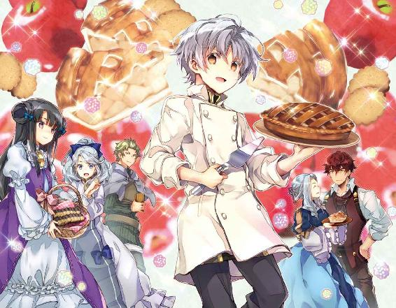
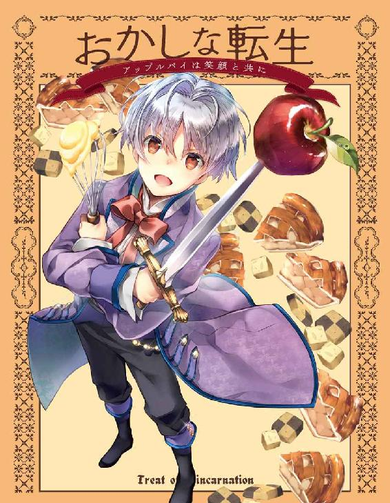
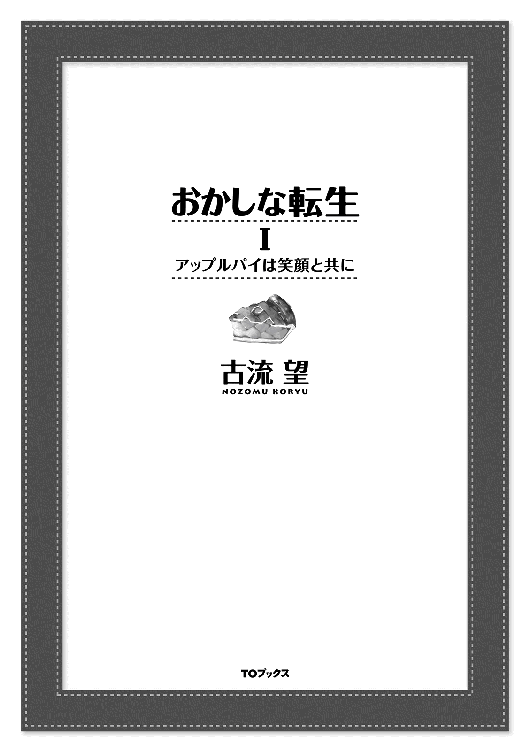
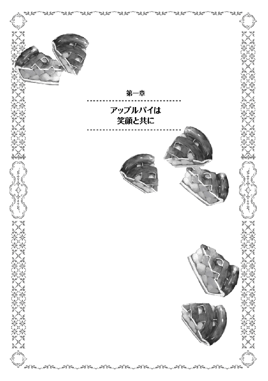
神は存在するのだろうか。
多くの哲学者が悩み、神学者が躍起になり、科学者が否定してきた存在。ある者は太陽にその姿を見、またある者は大自然にその姿を見る。大海原を神に見立てる者もいれば、超越者の存在を信じる者もいる。
そして、時として人の中にもまた神を見ることがある。神に愛された存在として、溢れんばかりの才能に満ちた人がいることで。
神の申し子。人々に、時として畏敬の念を向けられる存在。時として羨望と嫉妬の対象となる存在。天才とも偉才とも呼ばれ、時に畏怖される存在。神に愛された存在は、どんな世界にもいる。スポーツの世界にも、音楽の世界にも、勉学の世界でも。
そして、お菓子職人の世界でも。
◆◆◆◆◆
「さあ、残り時間も後三十分を切りました。各国とも最後の仕上げに掛かっている模様です」
アナウンサーの明るい声が会場に響く。わざわざ日本から欧州まで出向いた彼らが声を張り上げて実況するのは、パティシエ（菓子職人）世界大会の様子だ。最終日も残す所、あと数十分。それでパティシエ世界一が決まる。
「我らが日本代表の最終調整も、どうやら終わりのようです」
実況と共に向けられたカメラの先には、白い服に身を包んだ男たちがいた。男だけの集団ともなれば漂いそうな、むさ苦しい臭いはない。むしろそれとは程遠い、甘い匂いが充満する場。
日本代表に与えられた作業場に、鎮座するのは巨大な飴細工。人の背丈を超えるような甘味のオブジェは、作業台の上にあることで異様な威圧感を与えていた。
繊細にして大胆。技巧の限りを尽くして制作された芸術品は、世界の名を冠するに足るだけの美しさを持っている。
現在の得点では、日本代表が二位。一位との得点差は僅かであり、この飴細工で逆転することは確実だと、誰もが認める素晴らしさだ。
だが、そんな作品を作り上げた職人たちの顔は未だ冴えない。真剣そのものの顔。この飴細工勝負は、作業台から指定の採点場所まで移動させるのが最も難しいからだ。指定の場所に置かなければ、どんなに素晴らしい作品でも得点を付けてもらえない。移動させる途中で落としてしまえば、今まで積み上げてきたものが全て台無しになる。
子供の足でも、五歩も歩けば行ける距離。その五歩は日本中の菓子職人にとって最も重要な五歩になる。十歩。いや、たとえ万歩かけてでも、その距離を無事にたどり着けるのなら惜しくはない。
「三つ数えた所で持ち上げる。慎重に行くぞ。一、二の三!!」
掛け声と共にゆっくりと持ち上げられた飴の塊が、持ち手にその重量を伝える。重々たる手のしびれは、あと僅かで世界一になれるという重圧もあってのことだろう。緊張で強張る体には、その重さはより一層強く感じられるものだ。じっくり、じっくりと運ぶ。その歩みは亀の如しだ。
いよいよ指定の場所に、作品を降ろす。長かった戦いもこれで終わり。そう、誰もが思った時だった。
『あ、前世記憶の消去設定を忘れているや。ま、いっか。死ぬまで時間もないし』
ふと聞こえた声に、職人は耳を疑う。掠れるような、聞き取り辛い声。だが、ひどく耳に残る、やけにはっきりとした不思議な声。電波の悪いアナログラジオの音を大音量で、しかも耳元で鳴らされたような声。
緊張している時にかけられる大声ほど驚くことはない。咄嗟に、手から作品が滑り落ちる。その場にいた者にとっては、やけにゆっくりと時間が流れる気がした須臾。職人の目の前に倒れ込んでくる巨大な塊。砂糖とはいえ、大人数人がかりで運ぶ質量物が倒れてくる。遠くで聞こえる甲高い悲鳴。
職人の頭に当たった砂糖の鈍器。彼は、生温いものが頭から流れる様を感じた。事実、彼の頭はあっという間に真っ赤に染まる。血である、と認識するには、鉄の臭いだけで十分だった。甘い匂いに慣れていただけに、やけに強烈な臭いに思えた。
職人は、目の前が真っ暗になった。走馬灯が駆け巡る中で、彼の胸中に浮かんだのはあと少しで叶うはずだった自分の夢だった。
母子家庭に生まれ、碌に買ってもらえなかったお菓子への憧れ。我が儘を言って誕生日に作った不格好なケーキの美味しさと母の笑顔。それがきっかけで志した菓子職人の道。辛い修行の中でも励まし合った仲間。
常に菓子と共にあった人生で、いつしか思い描くようになった夢。
──世界一のケーキを作りたかったな──
そして一人の職人が死ぬ。神の申し子と呼ばれたその名と共に。
◆◆◆◆◆
赤ん坊の泣き声が辺りに響く。
「おめでとうございます。元気な男の子ですよ」
産婆から、お祝いの言葉が告げられる。抱きかかえられた手の中には、生まれたばかりの赤ん坊がいた。大事そうに抱えられ、布でくるまれた赤ちゃんが、母親の胸に渡される。
「そうか、男か。アニエス、良くやった」
破顔する父親が、妻にかけた労いの言葉。それに疲れ切った表情で応える女性の腕の中では、布地に包まれた赤ん坊が泣いていた。
「ああ、可愛いなあ。目鼻立ちはお前に似ているようだ。きっと美少年になるぞ」
「ええ、そうね。けど目の色は貴方と同じ。素敵な色......あら？」
「ん、どうした？」
不思議そうな顔をした妻に、夫が声を掛ける。
「いえ、この子、私達の話をじっと聞いているような......」
「まさか。生まれて一刻も経っていないのに、言葉が分かるわけもないだろう」
「......ええ、そうね。そうよね」
そんな取り留めもないやりとり。夫婦の会話を、まるで〝外国語を聞いている〟かのように、じっと赤ん坊は見つめていた。
「あなた、この子の名前はどうしましょう」
「それはもう決めてある」
父親は、母親に抱かれた赤ちゃんを両手で優しく抱える。じっと互いを見つめ合う親子。
「お前の名はペイストリー。ペイストリー=ミル=モルテールンだ」
ぱかり、ぱかりと蹄鉄の音が鳴る。踏み固められた地面の上を馬が歩く。背には立派な身なりの男が乗る。
「どうだペイストリー。お前が将来継ぐことになる領地だぞ。初めて見るだろうが、広いだろう」
男の前には、小さな子供。幼児らしき男の子が、支えられて馬に乗っている。彼らの両側には、やや焦げたような茶色の麦畑が広がっていた。
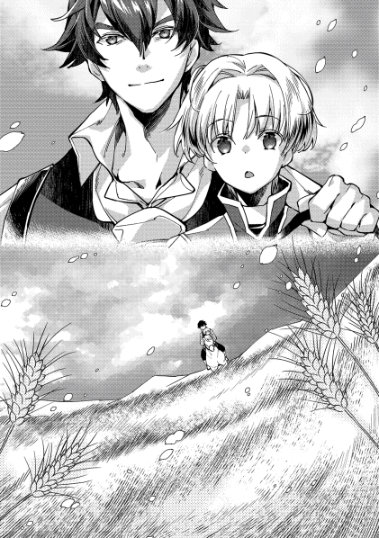
「ととさま、ムギにげんきがないです」
「お前のような子供でも分かるか。そうだな、我が領地は土地が酷く痩せている。まだまだこれからだが、お前たちにはその分、苦労を掛けるかもしれん」
父は苦笑する。息子の無邪気な指摘が、あまりにも的確過ぎた。
「ムギじゃない物は作っていないのですか？」
「ん？ 小麦以外となると、ライ麦と燕麦。それと、家々の畑で野菜ぐらいだろう。これから土地を肥えさせるようにしたいものだ」
「砂糖や果物は？」
「そんなものは作る余裕なんてないな。小麦すら、お前が産まれる前は上手く育たなかったぐらいだ。南の方では自生する物もあるらしいが、ここら辺ではまず育たん」
「じゃあ、甘いものは......」
「よしよし、今度また都に行く用事があったら、土産に買ってきてやるからな」
頭を撫でる父親と、されるがままの息子。お菓子どころか、甘いものすらないという事実に、少年は絶望する。最高の菓子を作りたいという想いは誰にも負けないのに、そのきっかけすら存在しないという貧しさに強い衝撃を覚えた。
息子の顔は、悲哀。のち、決意の表情となる。自分の夢は、貧乏程度で諦めるような軽いものだったのか。否である。貧乏などは職人魂の糧にしてやるという想い。
「それならボクが、いつかここをお菓子でいっぱいの土地にします」
「ははは、夢があって良いことだ。そうだな、お前が大きくなる頃には、ここも豊かにしてみせるさ」
少年が、初めて親に語った夢は、こうして始まった。時にペイストリーが三歳の時のことである。
◇◇◇◇◇
金属同士のぶつかり合う音が響く。
「どうした、そんなものか!!」
「ぐっ、まだまだぁ!!」
二人の男が、相対する。その手にはどちらも剣が握られていた。
向かい合って戦う両者のうち、一人は壮年の偉丈夫。傍目から見ても分かるほどに引き締まった体躯。見せびらかすような筋肉ではなく、より戦いに特化しているであろう無駄のない筋肉は、服の上からでも威圧感を与える。頑丈そうな鉄の塊を、両の手の如く自由自在に扱う様は熟練の域だ。
対するもう一人。男、と呼ぶにはいささか幼い。年の頃は一桁。個人差を考えたとしても、大きくサバを読んでどうにか二桁にギリギリ手が届かないぐらいといった風情。額と言わず、体中から汗を飛ばしながら、一生懸命に剣を振り回している。時折、剣を振るった拍子に剣ごと体が泳いでいる様は、まだまだ発展途上といったところだ。剣を使うというより、剣に使われている。
「ほら、また握りが甘くなっている。もっとしっかり握れ」
「はいっ」
「そうだ、良いぞ。自分の手が千切れ飛んでも放さないつもりで握れ。戦場で剣を手放すのは死ぬのと同じだぞ」
「はいっ」
剣を交わす二人。カセロールと、その息子ペイストリー。今は日課である剣術訓練の最中である。
この日課は、息子であるペイストリーが五歳になった時から毎日行われている。愛称でペイスと呼ばれる少年。その当人が我が儘を言ったことから始まったのだが、いつの間にか日課になっていた。
だが、彼のように幼いうちから剣を振るうのは、珍しいことである。盗賊が時折現れ、魔物が跋扈し、戦乱の風が強く吹く、この世界であっても。まだ体も碌にできていないうちから剣を振るうのは、父親の出自と思想、そして、息子の特殊性による所が大きい。
また一つ、少年の体に痣が増える。もつれた足のままに剣を大きく弾かれたため、したたかに地面に打ち付けられる。そんな、平和な時代であれば児童虐待とも言われそうな訓練に、割って入る声が聞こえた。
「大将ぉ〜大将〜、いますか。おお、いたいた。やっぱりここだった」
「何だシイツ。今息子の特訓中だ」
鉄の殺傷武器を振り回す二人を、気にする風でもなく近づいてきた男。コーヒーブラウンのボサボサ頭を掻きながらやってきた、シイツと呼ばれたその男は、今もって息子を可愛がっているカセロールの二十年来の友であり、従士長でもある。モルテールン領の私兵団長という肩書も持つ、腹心だ。もっとも、私兵団の部下はたった二人だが。そのシイツが、微笑みを浮かべてちらりとペイスを見た後、父親の方に声を掛ける。
「大将、そろそろ朝飯の時間です。報告もありますんで、一旦執務室に戻ってくださいよ」
「そうか。よしペイス、今日はここまでだ」
父親は、打ち合わせていた剣をゆっくりと鞘に収めていく。収めた瞬間、その場に息子はへたり込んだ。
「ぜぇはぁ、ありがとうございました」
「うむ、お前も早く汗を拭いて、母さんの所に行きなさい。待たせると、またいつものやつをやられるぞ」
「え、それは急がないと。父様、それでは失礼します」
自分の背丈よりも大きい剣を抱えた少年。それが駆け去っていく様を、父親とその親友は共に同じような目で見送った。微笑ましいものを見る目。
「坊も中々腕を上げていますね。子供ってのは進歩が早い」
「まあな。我が息子ながら、呑み込みが早い。まるで〝一芸を修めた者〟のように、自分なりの理屈で動いている節があるし、それがまた理に適っている。将来が実に楽しみだよ」
「出たね、毎度の親馬鹿が。あまり期待しすぎちゃいけませんよ。五歳の神子、十五も過ぎればただの人って言葉もあるでしょう」
「ペイスは、十五になる頃には剣で名を馳せているかもしれないがな」
シイツは、自分の親友でもあり、仕える主君でもある男の親馬鹿っぷりに、肩を竦めるにとどめた。やれやれ、と言いたくなった言葉を飲み込んで。
その後、むさ苦しい男二人で連れだって、執務室に向かう。とは言っても、執務室という呼び名は、多分に皮肉を含んでいる。
元々、モルテールン領は隣国との緩衝地帯という意味を持つ王家直轄地の一つだった。土地は痩せ、小麦も碌に育たず、赤茶けた荒野が広がる土地。それを、先の戦争で武勲をあげた騎士に下賜することになったのだが、その騎士こそカセロールだった。以後、彼は貴族号を持ち、モルテールンの家名を名乗るようになったのが今日である。何もない土地。木すら碌に生えていない場所で、作物ができるようになるまで三年。十人にも満たない人間が、自給自足の目途を付けるのに更に三年掛かった。その後、徐々に人と耕作地を増やしていった。
今でも決して豊かとは言えない土地であり、従って領主の館と言っても実に質素。騎士らしい素朴極まりない作りとなっている。早い話がボロ屋だ。余所の領地であれば、ちょっと余裕のある農家なら同じぐらいの家に住んでいる。
それでも、貴族らしくあるべきとの考えから、部屋数だけは多い。数ある部屋のうち、多分扉と言えなくもないような木の板と、一点豪華主義で揃えたソファーと応接机と執務机がある部屋を、揶揄を込めて執務室と呼んでいるのだ。泥棒に入られて金を盗まれる心配より、ソファーと机を燃やされる方が心配になる、とはシイツの弁である。
そんな、自嘲も含んだ呼び名である執務室に入った二人。この部屋どころか、領地全てを文字通り所有する騎士爵と、その腹心。
勿論、主の方が執務机のお気に入りの椅子に座り、その脇にある箱を椅子代わりに腰掛けるのが部下の方だ。部下たるシイツは、適当に腰掛けるなり言った。冗談めかした口調で語るのは、長年の二人の呼吸である。
「さて、報告事項だが、良い報告と悪い報告がある。どっちから聞きたい？」
「朝飯もまだのうちから、悪い知らせを持ってくるなよ。と言いたいが、どちらにしても聞かないわけにはいかんか。じゃあ良い知らせから聞こう」
「ん、それじゃあ良い知らせ。例の豆畑の収穫の件。坊の言った通り、かなりの収穫量が見込める出来だ。このままいけば、去年と同じく冬越しの心配をしなくても済みそうな具合だな」
「ほほう。それは素晴らしいな」
モルテールン騎士爵は、名領主の名も高い。不毛の土地を人が住めるように開墾し、整備し、整地して耕し、曲がりなりにも食える土地にした為だ。今では四十人規模の村を三つ抱える、いっぱしの領地貴族となっている。更に近年は伸張著しく、その名声に拍車が掛かっている。新しい試みとして三年前から始めた豆作が特に有名で、昨年の全国的な飢饉でも、餓死者や身売りを一人も出さずに乗り切った事例は、称賛をもって社交界の噂になった。
そんな騎士爵の施策の多くが、実は息子発案によるものだ、と知る者は意外と少ない。齢十にも満たないガキンチョが、大の大人でも思いつかない画期的な政策を立案できると考える人間はいないからだ。仮にカセロールが息子の功績を社交の場で言った所で、親馬鹿の贔屓目と見られるのが落ちである。しかも、九割ぐらいが本気の親馬鹿であるのだから、始末が悪い。
「で、悪い方の報告だが」
「聞かずに済みそうもないな」
雰囲気が変わる。共に武人である二人が真剣な表情になる様を例えるなら、峰を向けていた逆刃を、正面に返した瞬間。さっきまであった、どこか生温いのほほんとした空気が、一気に鋭くなる。
「ああ。レーテシュ伯爵の所で、盗賊討伐に失敗したらしい。討ち漏らしが相当数、うちの方角に逃げたとお触れが回ってきた。まあ、お触れの内容は無事に追い払った、と自慢げなものだったがな。討ち漏らしは、こっちとしてはいい迷惑だ」
「こっちに来るとしたら、どれぐらい準備に時間が掛けられる？」
「お触れの日時から、真っ直ぐうちを目指してくるなら十日ほど。周りを荒らしつつ来れば、一月以上の二月未満って所か」
「厄介な」
貴族の義務、と呼ばれるものが幾つかある。その中でも絶対遵守を暗黙の了解とする二大義務が存在する。
一つは国王へ忠誠を尽くす義務。これは、貴族の特権的地位を保証しているのが王権の権威と権力である以上、当たり前の義務だ。この義務に反すれば、他ならぬ国王から貴族の地位を取り上げられ、下手をすれば罪人となる。
そしてもう一つは、国防の義務。国王から領地を貰い、特権や給金、徴税権による収入を与えられているのは、いざという時の為の軍事力を養う為だ。自身のみの武力を提供する準騎士爵から、国王に次ぐ動員兵力を常備する公爵まで。その義務は等しく存在する。日頃から有事に備え、任された地や与えられた職で自身の権限の範囲内で職分の安定に尽くす。そして、万が一ことあれば、備えを惜しみなく使う。その義務があるからこそ、領地貴族は税を集めることが許され、職能貴族は給金を与えられている。
盗賊に対応するのも、貴族の義務からすれば必然である。
だが、必ずしも成功と呼べる成果で飾れるとは限らない。そもそも、成功と失敗に基準が無いからだ。災害があった時、被害者の大半を救出し、災害救助は成功であったと胸を張った所で、亡くなった人間が一人でもいれば、失敗だと見る遺族もいるだろう。有事とは、成功と失敗の線引きが難しいものである一例と言える。
今回の伯爵からの連絡も、伯爵側から見れば成功の部類に入る成果だ。領内を荒らしまわる盗賊を、領外に追い払った。今後領民がこの盗賊に悩まされることが無いとするなら、万々歳の成果と言える。伯爵領だけを見れば。
対し、追い払われた盗賊たちが新たに荒らしまわる先の責任者。新たに被害に遭う者からすれば、明確な失敗に見えるだろう。右から左に荷物を置き換えただけで、片付けたとは言えない、というのもまた正論だ。モルテールン騎士爵領から見れば明確に後者である。今後被害に遭うであろう見積もりだけでも頭痛がしてくる。
「それで、どれぐらいの規模で逃げ出したんだ？」
「およそ五十人規模とのことだ」
「うちに来られると、お前では手に余るか？」
「俺を含めて三人で、どうやって五十人と戦うんだよ。まともにぶつかるなら話にならんよ」
五十人規模というなら、相当にでかい盗賊団だ。規模だけ聞けば、レーテシュ伯爵が追い払うのが精一杯だったのも頷ける。納得はし辛いものもあるが。
「村々の男連中を集めて、木槍の武装や投石をさせても無理か」
「それで集めた所で精々三十人。濠のある本村に立てこもったとしても、抵抗が精一杯だな。それで他の二つの村が根こそぎやられれば、結局無抵抗で襲われたのと被害が変わらんし、長期戦になれば蓄えもない。もし短期決戦できないとするのなら、下策だろう」
「閉じこもって時間を稼ぎ、私が援軍を呼んでくるのは？」
「大将ならそれもできるのは知っているが、問題点も多いと考える」
「何故？」
「伯爵は面子もあって援軍は難しい。自分たちでは追い払うのが精々だったのに、うちで討伐されてしまえば無能の誹りを受けるからな。かといって、援軍先でも追い払うだけなら、また伯爵の領地に戻られることもある。荒らされるだけ荒らされて、結局また伯爵領に戻りましたとなれば笑い話だ。俺たちが失敗して、フバーレク辺境伯家あたりが討伐軍を率いてケツを拭いてくれるのが、あちらさんとしては理想。討伐失敗の責任は全てうちに押し付けてな。下手をすれば邪魔をしてくる可能性だってある。他の騎士領主なんかは、明日は我が身と親身になってくれるかもしれんが、うちと似たり寄ったりの軍備だから、とても余所に人を回す余裕などなかろうよ」
モルテールン騎士爵が、〝伯爵は失敗〟と断じた理由がここにある。伯爵領の周囲には小領主しかいないという事実があるのだ。無論、騎士爵自身の領地も、未だ貧しく、常備する専任従士は今この場にいるシイツを含めて三人である。到底、伯爵でも手に負えなかった盗賊団の相手が務まるとは思えない。
「王都なり大貴族なりに援軍を願いに行くのは？」
「まだうちが襲われてもいないなら、腰は重たいだろう。ましてレーテシュ伯爵閣下が追い払ったと自慢している矢先にそんなことをすれば、伯爵に恨まれるぞ？」
「恨まれるぐらいで家族や領民を守れるなら恨まれても構わんが、うちは辺境だし元々援軍は期待薄だよな。......それでも無策に放置できる問題ではない」
「俺も死にたくないから、大将に任せるさ」
親友同士、そこには互いの力量への信頼がある。〝執務室〟の部屋の中で、お互いに笑いあう声が、薄い木壁を素通りして隣の部屋まで漏れていた。
「それで、良い手はあるのか？」
シイツは、一度真顔に戻って聞いた。カセロールは、領主らしい顔で頷く。
「最悪俺が出張るという手もあるが......」
「大将自らってのは最後の手段だな。大将が死んだらそれまでだしよ」
「それ以外だと、まあ無難な所だと濠を深くするとか、家々に予備の槍でも配るか」
「やらないよりマシって感じだな」
眉間にしわを寄せる二人。実際問題、自分達より遥かに大きく豊かな伯爵領でも手に余った問題である以上、たかだか新興騎士領主に対応できると考える方が無茶である。
「一つ、俺に考えがあるんだが」
「何だ？」
部下からの声に、怪訝な顔を向けるカセロール。
「どのみちどこかで一か八かの勝負が必要になる。ここは一つ、坊を切り札にしてみるってのはどうだろう」
「どういうことだ？」
「賭けに勝てば、もしかすれば大将並みに活躍できるかもしれん。俺の〝勘〟が、そうした方が良いと叫んでいるんだが」
「お前の〝勘〟を無視するわけにはいかんが......」
息子を切り札にする。そのことに、騎士爵には若干の戸惑いがあった。そもそも意味が分からない。幾ら才能溢れる息子とはいえ、たかだか七つの子供に戦いを左右できる能力などあるはずがない。そんな魔法のようなことができるわけがないだろう。
だが、そこでカセロールは魔法という言葉に引っ掛かる。ふと、シイツの言いたいことに思い当たったからだ。呟いた一言は、意外とはっきり聞こえた。
「聖別の儀か」
「ご名答」
この日のカセロールの決断は、世界を大きく動かす最初の一歩になった。
「お腹すいたぁ〜。母様、朝ごはんまだぁ〜」
椅子に座った少女が、不満げな声をあげる。日は既に顔を出し、早朝をやや過ぎた時間。
朝食の時間としてはまだ若干早めではあるが、モルテールン家ではどちらかと言えば遅めの時間になる。武人の家は、朝が早いのだ。
先ほどから、自らの空腹を訴えている少女は、ジョゼフィーネ。この家の五女で、ペイストリーからすれば一番下の姉になる。弟とよく似た銀髪をしているが、やや茶がのっている為にパッと見ただけでは金髪に見える。高めの鼻筋の割に、上がり気味の鳶色の目が勝気そうな印象を与える少女であり、当年とって十二歳。育ち盛り、食べ盛りの時期であり、朝食の要求は至極もっともなものだ。一日二食が基本の社会では、朝ごはんを抜くなどという現代人の寝坊助のようなことは出来ない。
その少女の隣。下座に当たる席には、末っ子の長男坊であるペイストリーが座っていた。彼もまた、自らの腹が背中とくっつきそうになっているのを我慢している。ペイストリーの場合は、日も昇らないうちから父親に剣の特訓を受けているから腹が減る、という点が姉とは違う。
長男として、貴族の跡継ぎの役割を教えてこられたペイストリーは、何故自分たちが空腹を我慢させられているかをしっかりと理解していた。未だ空席となっている上座に当たる席。すなわち、家長の席の主が執務中だからだ。ペイスがこの世界に前世の記憶とも呼べるものを持ったまま生まれ、幼い身体と自我を統合させていく中、真っ先に戸惑ったのはこの封建制に近い身分制度である。家のことを決める決定権は全て家長にあり、家人はそれに従うしかない。食事の時間さえ家長の都合であり、家長の食べる時間が食事の時間なのだ。最近は慣れてきたとも思えるが、やはり腹の虫が鳴いている中待たされれば、不満の一つや二つは出てくる。
「遅くなった。早速朝食にしようか」
ようやく姿を見せた父。当然、座る席は家長の席。神と精霊に食事の感謝を言い、祈りを捧げたのちに食事が始まる。待ちくたびれた、とばかりに姉は食事を掻き込む。勿論、ペイストリーもゆっくりと味わうようにして食べ始める。
食事の内容は、質素そのもの。豆と葉野菜のスープ。それとパン。家長のカセロールと跡目であるペイスには干しイチジクも付くが、ペイスはそれをいつも姉にあげている。現代日本人の目から見れば、不平の出そうな食事にも思える。
だがこれでも最近はモルテールン領の食糧事情が改善してきているらしく、豆がたっぷりと入ったスープになっている。もはやスープというより煮豆に近い。領地開拓初期の頃は、ほとんど水と変わらないスープだったそうだ。
昔のことを今も鮮明に覚えている騎士爵からすれば、朝から子供たちを腹いっぱいにさせられるようになったことに感慨すらある。たとえパンが硬い黒パンであっても。
カセロールは一瞬、微笑ましさと誇らしさに口が緩みそうになったが、食事が終わるまでに話を切りだすことにした。
「ペイス、剣の稽古は楽しいか？」
「はい、ようやく何か掴めてきた気がします」
「そうか」
ペイストリーは、父の突然の質問にも笑顔で答える。剣を振るのには全身の力が要る。それが、おぼろげにある前世の記憶に助けられ、日毎に身になりつつあるのが実感できるのだから、楽しくないわけが無い。前世の記憶。菓子職人の修行時代に、生地をこねるのに腕力だけでこねようとするなと叩き込まれた。そのせいか、腕だけでなく体重も使うコツを体で覚えていたのが実に役に立った。
「私の目から見ても、ペイスもそれなりに頑張っているようだ。そこで、急な話になるが、三日後。ペイスに聖別の儀を受けさせようと思う」
「聖別の儀？」
そう言われて、ペイスは首を捻った。これは、別にペイスが聖別の儀を知らなかったからではない。自分にはまだ早いのではないか、という当然の疑問を持ったからだ。
聖別の儀とは、神と精霊に成人を報告する儀式のこと。現代日本でいう所の、成人式のようなものだ。宗教的な意味合いとしては、七五三のように子供の成長を祝う意味もある。
この世界では、おおよそ十三歳から十五歳で成人と見なされる。成人を迎えるに相応しいかどうかは家長が判断し、成人となれば家人として責任も出てくる。或いは家を出て別個に家を建てることも出来るし、結婚できるのも儀式を経た者だけだ。
「あなた、ペイスにはまだ早いのではないかしら？」
妻の問いかけに、カセロールは頷いた。確かに、世間一般と比べても、明らかに早すぎると思われるのは仕方がない。それゆえ頷いて見せたのだが、結論を変えることもなかった。
「ペイスの聡明さはお前も知っての通り。剣の腕も、咄嗟の一撃を防げる程度にはなった。碌に剣も習わず遊んでいるそこいらの子弟には負けん程度だ。文武に関しては、成人に足ると私は判断している。他にもやむを得ない事情はあるが、これは私が決めたことだ」
「そうですか。あなたが決めたのなら仕方ないわね」
母親からは、諦めとも残念さとも思えるため息が出る。四十も半ばに手の届きかけた年の割に、その憂いを帯びた容貌には美しさが滲む。
ペイスは、母親似の顔立ちであり、小さい時から物分かりの良い素直な子であった。両親の愛情をそのまま受け取った息子である。父は勿論のこと、母も相当に溺愛していた。それ故、早すぎる息子の成人には残念な気持ちがあったのは、二親とも同じである。もう少し子供の時間が続いて、可愛がってやれると思っていた。
「三日後に出かけるから、その為の準備をしておいて欲しい。アニエスもジョゼフィーネも、頼まれてくれるか？」
家長の言葉に反応したのは、ペイスの母と姉であった。ギラリ、と目が光ったように感じたのは、ペイストリーの気のせい。のはずだ。
「まあ、うふふふ。任せて。何処に出ても恥ずかしくないように、しっかり準備するから」
「母様、私も手伝うわよ」
ふふふと怪しく笑う女性陣。その様子に、ペイストリーだけでなく父親も若干引き気味だ。
息子は父親に、助けてくれと目線を送る。親譲りの鳶色の目が、僅かに涙目になっている。愛息の弱弱しい様子など、普段はあまり見られないだけに心が揺れる騎士爵ではあったが、もはやここに至っては、彼であっても妻と娘を止めるには能わない。
諦めろ。言外にそう応える父親に、ペイスは端整な顔を歪めた。
ペイストリーの母と姉。二人がここぞとばかりに気色ばむのもそれなりの理由がある。
貴族にとって、自領の外に出るというのは、国で言えば外交という意味合いがある。目的が親善であろうと、外遊・観光であろうと、交渉であろうと、視察であろうと、本質は変わらない。会社の社長が社外で活動すれば、大抵が営業活動の一環になるのと同じようなものだ。領地の総責任者か、それに近しい人間が、他人の領地に行くのだ。些細な揉め事すら、下手をすれば軍事的な衝突になり得る。それだけに、礼儀作法の順守と、所謂〝舐められない行動〟というのが必要になってくる。
その最たるものが服装だ。第一印象の七割は見た目で決まると言われるように、パッと見て受ける印象というのは馬鹿に出来ない。軍装で出向けば軍事的な意図と立場を強調され、礼装で出向けば公式な交渉訪問となる。高そうな服装は領地の財力を示し、財力のある人間には人も寄ってくる。逆に貧相な服装だと、中身が幾ら立派でも低く見られる。何故なら、他人の縄張りへ訪問する時に、最低限の衣服さえ整えないような人間は常識知らずと見られるし、そもそも服装を整えられないのなら貧しさの証だからだ。
例えば、サラリーマンが余所の会社に出向く時、股引に腹巻の便所サンダルで出向けば、常識知らずと思われるのと同じだ。スーツぐらいは最低限の常識と言えるし、スーツや時計のブランドがハッタリになったりする。貴族社会も同じで、最低限の見栄というものがあり、そこにどれだけ上積みを載せられるかで力関係を図るのだ。
すなわち、息子の服装を吟味するのも、母の〝内助の功〟と言える。姉も、いずれ別家に嫁ぐ身として、貴族の妻の役目を学ぶのは必須である。貴族家の女性として跡取りを上手く飾り立てるのは、大事なお役目だ、と張り切るのは至極当然と言えた。
では、何故ペイストリーが涙目になっているのか。日本人的な感覚で、着飾るのが苦手なのか、と言えばＮＯである。世界の舞台にも立てる職人であれば、目立ってなんぼ。まして菓子は、見た目も重要であるのは言を俟たない。目でも楽しめるのがスイーツという芸術である以上、服装のように見た目に拘る重要性は熟知している。
ペイスが泣きそうになっているのは、自分が女性陣から可愛がられているからである。もっと正しく言うのであれば、可愛がられすぎている。
「リボンで髪を飾るのはどうかしら。きっと可愛らしくなると思うのよ」
「母様、それならリリアナ姉様のドレスが似合います。身体に合わなくなったからと私が貰った、あのフリフリがいっぱい付いたピンクのドレス」
「あらあら、良いわね。素敵ね。でもそれならお化粧もさせておいた方が良いかしら」
ただでさえ娯楽の少ない田舎。愛くるしい子供を着せ替え人形にするのは、この上ない極上の娯楽である。
「あの、母様に姉様、僕は男なのですが......女装は勘弁してください」
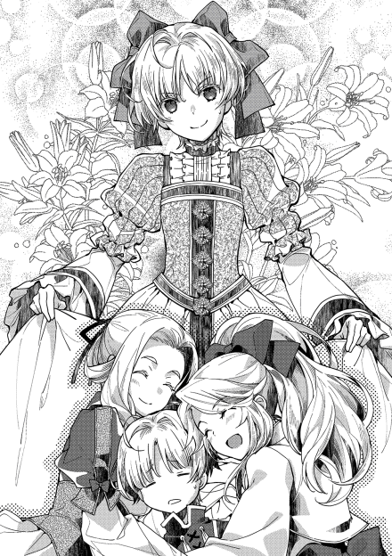
おもちゃにされる被害者の犠牲を無視すれば、の話だが。
「可愛いから良いのよ。もう食べ終えたわね。早速準備しましょう」
「誰か助けてぇ!!」
母と姉に連行される息子を見送ったカセロール。気の毒そうな目をしてはいるが、止めはしないようだ。
「あ、しまった」
ふと、何か大事なことを失念していたように呟く。事実彼は、部下から大事なことを言われていたと今更ながら思い出したのだ。
「ちゃんとした礼服が明日には届くことを言い忘れていたな」
ペイストリーの受難は、明日まで続きそうだった。
夢、と言うのは人それぞれである。
大きくなったら何になりたいか、と聞かれて答えるのも夢であるし、大人になったら何をしたいか、と聞かれて答えるのも夢である。
ペイストリー=ミル=モルテールンの夢は、いつか自分が理想とする最高のスイーツを作り上げることである。その為の行動の自由を得る為に、目下全力で父の領地を魔改造中だ。だが、これは少々この世界の子供らしからぬ夢でもある。
男の子の夢、などというものは大抵相場の決まっている物だ。勇者になってドラゴンを倒したいとか、騎士になって大事な人たちを守ってみせるとか、或いは賊に襲われている幼馴染を颯爽と助けて惚れられてウハウハとか。半分ぐらいは妄想と言われてもおかしくないものでも、夢と言われる。
女の子の夢、というのも色々とパターンが決まっている。格好良い王子様と出会って見初められてお姫様になるとか、凛々しい女騎士に自分を重ねてみるとか、或いは食べても太らない体質になって、好きなだけ美味しいものを食べまくるとか。これまた半分ぐらいは妄想と言われてもおかしくない。
では、親の夢とは何だろうか。人が生き物である以上、子供を産み育てるというのは尊ばれるべきものだ。
誰もが親になる可能性がある。とりわけ、女性にとっては出産というのは一大事であるし、産んだ以上はそれから先を考えるのは当たり前のこと。どうしても子供を勘定に入れて将来を考えてしまう。親であるからには、子供抜きの将来の夢は想像しにくい。であるなら、やはり親の夢とは子供に関するものが多いのではないか。
その答えは、一人の女性を見れば明らかだ。彼女の、親になってからの夢は〝いつか息子に最高の晴れ着を着せること〟なのだから。言わずと知れた、アニエス＝ミル=モルテールン騎士爵夫人。ペイスの母親だ。彼女は目下、夢の実現に向けて全力疾走中である。目的の為に手段を選ばず、全力になる様は、息子ととても良く似ている。妙にそっくりだ。
「こっちの上着はどうかしら。うん、良い感じ。ああ、でもそれだと靴下の色と少し合わない気がするわね。でもでも、この靴下は縫製が丁寧だから見栄えもするし、捨てがたいのよねぇ。先に靴を合わせる方が良いのかしら。う〜ん、サイズの合う靴があるかしら。あぁ迷うわぁ」
子供の服を着せ替える、というのは、母親にとっては楽しいものだ。着せ替え人形で遊ぶのと良く似ていて、〝自分好みの格好〟をさせることには、物作りとよく似た感動がある。自分では着られないものでも、息子にならば着せることが出来る。最高の菓子を作る職人の気迫にも似た、最良の〝男の子〟を作ってみせると意気込む母の凄味。つくづく、妙な所で瓜二つの〝生き写し〟だ。最も良い組み合わせを探す、パズルにも似た楽しみを、彼女は今この瞬間も満喫中である。
抵抗虚しく流されてしまった息子は、既に諦めの極致にあった。もう勝手にしてくれ、というやさぐれの気持ちだ。しかも、それに拍車を掛ける存在がいる。
「母様、こっちの靴はどうかしら。私が昔履いていた靴だけど、ペイスには合うんじゃない？」
「あらあらジョゼ、それは貴女が大事にしていた靴じゃない」
「良いのよ。弟の晴れ舞台に、貸してあげるわ」
「ああ、なんて良いお姉ちゃんになったのかしら、ジョゼ。素敵だわ」
母親が、大袈裟なリアクションと共に抱きしめたのは、自らの娘。五女のジョゼフィーネである。ペイストリーからすれば一番年の近い姉であり、上の四人は既に嫁に出ているので、この家にいる唯一の姉になる。
ジョゼフィーネことジョゼは、母からの過剰なスキンシップには最早慣れっこ。というより、物心ついてからの習慣であるから、当たり前のこととして受け入れている。母娘のスキンシップは、男の子を抱きしめるよりは、まだ見る方の目にも優しかろう、とペイスは思った。いつもは自分が被害担当なだけに、そのまま母親を抱き付かせたままにしてくれるなら幾分かありがたい。
だが、そのままでは一向に作業が進まないので、やむなく彼は姉に声を掛ける。
「ジョゼ姉さま、ありがとうございます」
「お礼なんていいのよ。ペイスも頑張ってね。私は付いていけないけど、お父様の言うことを良く聞くのよ」
「はい、大丈夫です」
モルテールン家の姉妹と言えば、美人で名高い。父親は精悍な顔立ちで、母親が美人であるのだから、その血を受け継いだ彼女たちが美人なのは当たり前と言う人もいる。六人姉弟皆それぞれが、美女の名も高かった母の容貌を少なからず受け継いでいた。
そんな兄弟姉妹の中でも最も母に似たのは、悲しいことに末っ子の長男坊であるのは甚だ余談である。
そんな姉妹たちが、皆揃って可愛がっている生き物がある。別にペットを飼っているわけではなく、彼女たちの弟がそれだ。兄弟姉妹と言えば、下の子供は不遇な境遇となる場合が多い。とりわけこの世界は封建制にも似た社会であり、上が下を従えるのは当然と見る常識があった。
だが、彼女たちは弟をこの上なく可愛がった。その理由は、弟が非常に素直で賢く、そして愛くるしい生き物だったからだ。サラサラの銀髪。プニプニとした頬っぺた。くりっとした目。小柄な手足。どれもこれもが、目尻を下げるに十分な要素だ。そして、その仲良しな様を両親が褒めちぎるものだから、一層拍車がかかる。やられる方は嫌で嫌で仕方がないのだが。
ペイスにとって、姉達との関係が良好であるのは幸運であった、と言えるが、今〝だけ〟は不運とも言えた。
「母様、このドレスなんてどうかしら。ペイスに似合いそうじゃない？」
「まあ可愛い。そうね、このドレスを着せてみるのも良いかもしれないわね」
「母様、姉様、僕は男なのですが......」
「良いのよ、似合うんだから」
「そうね、ちょっとだけ着てみなさい。ね、ちょっとだけだから」
姉と母の強力タッグに、抗うことのむなしさを感じるペイスではあったが、流石に女装は避けたい思いがあった。自分は男だ、という確固たる思い。
「いっそ下着も女物にしてみる？」
「じゃあ私が脱がす!!」
「やめてくれぇぇ〜〜!!」
その日、日が暮れるまでの攻防は、ペイスを大いに疲労させるものであった。
◇◇◇◇◇
「はあ」
「どうした息子よ。そんな疲れた顔をして。折角の晴れ舞台なのに」
件の日の朝、カセロールは疲れ切った顔をした息子の姿をみて、おおよその惨状を把握した。彼とて、伊達に息子を見てきたわけではない。
これから本村の皆に見送られて出かける晴れ舞台だというのに、浮かない顔をした息子の現状。それを見て、連日の着せ替え人形扱いのせい、と看破するだけの眼力は持っている。だが、息子に同情はするものの、服に関しては諦めろとしか言えない。事情が事情だけに、母親の興奮も仕方の無いことだ。
全体的には右肩上がりの活況とはいえ、未だ良く言って発展途上、悪く言えば手つかずの未開地を多く抱え、人口も収入も少ないモルテールン騎士爵領では、どの家でも服を作る、或いは買う、というのは贅沢なことだ。それは、領主である自分達の家も同じであると彼は理解している。無論着たきりではなく何着かで着回しはするものの、一つ服を買えば、それをかなり長い間使い続けるのが当たり前だ。若い頃に手に入れた服を死ぬまで使い続けるというのも珍しくないし、それを相続することまである。特に礼服等はその傾向が顕著で、従って丈夫な服が好まれる。日本の和服でも、着物を祖母から母、母から娘と受け継いでいくような伝統がある。それと同じような風習は、何処にでもあるものだ。
大量生産大量消費の時代であれば考えられないことではあるが、服とは、大事な個人の資産。それもかなりの高級資産だ。そこには領主も領民も無く、当たり前で常識的なことと言える。
例外が、子供服である。子供の成長とは日進月歩であり、特に成長期ともなれば、ものの一月で丈が合わなくなる、というようなことは良くあることだ。下手をすれば、昨日の晩と今日の朝で身長が違っているということまであり得る。母親が子供に合わせて丈を直してあげたり、或いは長い時間を掛けて晴れ着を縫ってあげたりということもあるが、日々の仕事に追われる中ではままならないこともざらであるし、丈直しは物理的な限界もある。元の裾丈以上には伸ばせない。
そこで多くの場合、子供の服を兄弟同士、或いは村の家同士で融通し合うという互助の風習が生まれる。一つの家でそんなに数を買えるわけでも無いので、近所の家同士で、丈が合わなくなったような服をより小さい子供のいる家に譲っていく。村ぐるみの子供服ローテーションだ。中には自分が小さい時に着ていた服が、つぎはぎだらけになった状態で自分の子供に回ってきた、ということもある。貧しい領地の酷い家になれば、小さい子供が裸でいたりするのだから、それに比べれば服があるだけ恵まれているとも言える。
そのローテーションで、一等一番の最初の始めに〝新品〟を着るのは誰か。大抵の場合、一番身分の高い〝領主の子〟である。これは、領内の序列を明確化し、子供にでも身分の上下を理解させる為の方策という面もあり、何処の領でも行われている風習だ。仮に小金持ちがいたとしても、新品を遠慮して新古品を買うということもあるぐらい一般的と言える。それだけに、今日この日の為の新品の晴れ着を、周りの人たちから羨ましそうに見られるのは当然であると言えた。そして、その誇らしい成長の成果披露を、母親が一日千秋の思いで待つのもまた当然であった。
「王都に行くんだって」
「へえ。それであんな格好しているのか」
「おい、見てみろよ。あのボタン、凄く細かい細工がしてあるぜ。あれ、お館様の紋章ってやつかな。高そうだ」
「スゲエ。沢山付いているんだから、一個ぐらいくれないかな」
憧憬のまなざしも眩しく、同世代の少年少女達がペイスを見つめる。それどころか、本村の連中の多くが見つめている。そうなるだけの説得力が、皆の目の前にあった。凛々しくも美しい顔立ちに、風にたなびく煌びやかな銀の髪。それに見事に調和した青みがかった晴れ着。前ボタンで留める形の上着は、着る人間の細身な体型に合わせて腰の辺りで微妙な括れがある。そのせいか、すらりと引き締まった印象を与える。ズボンには一切の皺が無く、折り目も正しくきっちりと裾丈が揃えてある。靴だけはやや女物の気配がするが、高級品であることは見て取れる。上から下まで、どこからどう見ても良家の御令息としか見えない、素晴らしい仕立て。それに向けられる無垢な眼差しも、やんちゃ盛りの少年少女たちには無遠慮なからかいのネタでしかなかったらしい。
「良いなぁ。俺もあんな風にカッコイイ格好して王都に行ってみたいよ」
「無理だな。それだけは絶対無理だ」
「なんでだよ。俺だっていつかあんな服を着られるようになるかもしれないだろ」
「それでも無理さ。お前があんな良い服を着ても、中身がお前ならどうあがいても着飾った醜男になる。服が良くても、中身が悪いから格好良くはなれっこないね」
「んだとコラァ!!」
「へっへ〜んだ、ここまでおいで」
未だに幼さが抜けない少年たちは、あっという間に騒がしくなる。やいのやいのと煩くなるのに、それほど長い時間は要らなかった。そしてそれを、肝っ玉な母親たちにいつもの通り強制的に収められるのだった。頭のたんこぶと共に。
無論、幼いレディ達の目にも憧れの色があるのだが、少年たちのそれとは若干色合いが違う。身近な〝私の王子様〟に対する、可愛らしいおしゃまさんだ。黄色い声で騒がしくなってきた所を、これまた母親たちに宥められている。騒がしい娘は坊ちゃんに嫌われるよ、という心温まる冷やかしと共に。
こうして皆が騒がしくも集められたのは、見送りの為だ。そう、集まったのではなく集められたのだ。それは、息子を自慢したい領主の親馬鹿という一面もあったが、それ以上に領内の統治の為に必要な行動という面が大きかった。
このモルテールン騎士爵領は、今の当主であるカセロール＝ミル=モルテールン騎士爵が一代でここまで大きくしてきた新興領地である。元は王家所有の荒地と山脈であり、隣国との緩衝地帯という意味合いのある場所として知られていた。地理的に国内の他領とは交流し辛く、また野獣やらの巣窟で統治が難しく、それでいて下手に手を出すと隣国から要らぬ圧力を受けるが故の緩衝地帯。悪く言えば放置された不干渉地帯。雑草すら中々生えない荒れた土地に、他領よりも明らかに少ない降雨量。放置されるのも当然の土地である。貰っても嬉しがる人間がおらず、さりとて仮想敵にくれてやるわけにもいかない土地。
そこに領地を得たのは、カセロールが類まれな武勲を上げたという理由と、もう一つ〝彼でしか治められない理由〟があったからだ。その理由が隣国への強力な抑止力となっていると共に、他の各領から孤立しているに近い僻地であり、難治を極めるこの領内の統治を可能にしていた。
それを領民には機会あるごとに魅せつけ、求心力とすることで領内の安定を図っているのだ。一種のデモンストレーションである。
その理由とは、万人に一人と言われる稀有な能力。ずばり『魔法』である。
「それじゃあ皆、行ってくるよ」
そう言って息子と共に、人の輪から離れていく領主。そこには責任感を背負った男の誇らしさがある。
「行ってらっしゃい、あなた。ペイスも向こうでは気を付けるのよ。知らない人に付いて行っちゃ駄目だからね」
「行ってらっしゃいませ、お館様。お早い御帰りをお待ち申し上げております」
「ペイス様〜俺にお土産忘れないでくれよ〜」
「この馬鹿のお土産は忘れても良いですよ〜。俺には忘れないで下さいよ〜」
口々に見送りの言葉を掛ける人々の前で手を振りつつ、カセロールはペイスの肩に手を置く。
「行くぞ」
「はい、父さま」
その言葉と共に、その場から二人はいなくなる。一切の痕跡すら残さずに消え失せた、ように見える。事実、そこには何事も無かったような無人の空き地があるのみであった。
「相変わらずご領主様の魔法は凄いな」
「あれ、なんて言うんだったっけか？」
「瞬間移動とか言うんじゃなかったか」
「そうそう、それだ。しょんかん移動」
「阿呆、瞬間だ、しゅんかん。お前の耳はゴブリン製か」
「んだよ、だからそう言ったじゃねえか」
先ほどまではペイスの衣装の話題で騒がしかったが、今度は騎士爵の魔法で騒がしくなった。自分たちのトップが、余人に代えがたい才能を持っていることを改めて実感している所だ。それを誇らしげにしている領民が多い所を見れば、モルテールン騎士爵は善政を敷いて慕われているのだろう。満足そうに頷きながら、皆自分の家に帰っていく。
その中で一人。いや二人。いつまでも領主と次期領主が消えた場所を見つめる女性がいた。アニエス＝ミル=モルテールン騎士爵夫人とその五女ジョゼフィーネである。三々五々自分たちの家に帰っていく人々の中で、何故か怪訝そうな顔をしていた。二人とも、しきりに首を捻っている。
そして彼女達は、自身の中である重要なことに気づいた。母はそれを伝える相手として、すぐ傍にいた娘、ジョゼフィーネに声を掛ける。図らずも、ジョゼもまた同じことに気づいていた。
「ねえジョゼ」
「はい、母様」
母娘の目が、お互いに何を言おうとしているかを悟る。二人が発した言葉は、流石に親子というだけの見事な一致を見た。
「やっぱりペイスには女装の方が似合う」
ペイスにとっての悪夢の日々はまだまだ続きそうだった。
「うわぁ」
ペイスは、思わず声をあげた。驚嘆を含みながらも、その意味は感動に近い声。
「どうだペイストリー、ここが王都だ。大きいだろう」
「ええ、凄いです。こんな大きい町は初めてです。人が沢山いますね」
少年の眼前に広がっていたのは、二百年に垂んとする歴史ある町の姿。王都ボーヴァルディーアの全景。遠目に見える王城と城壁に、そこから続く石造りの建物。そして、それを覆ってしまいそうなほどに沢山の人で溢れかえる光景。
艶やかな唇をやや開け、目を見開くペイスの姿は、年相応の子供らしさと愛嬌がある。それを父親は微笑ましく思いつつ、はぐれない様に手を引いていた。ペイス自身も、それをありがたいと思いつつ、あっちをきょろきょろ、こっちをそわそわ。正に、おのぼりさんそのものの様子。中央広場の市までくれば、父親の手を振り切りそうなほど騒ぎ出す。はしゃぐ子犬のような有様である。
「どうやら今日は三日市らしいな」
「何ですか、それは」
「決められた露天商以外が市で売るものを、日毎に取り決めているのだよ。七日で一巡り。一日目は武器や防具の鉄市。二日目は布市。三日目は食べ物で、四日目は樽市。木製品全般だな。宝飾品や雑貨も売る日も決まっている。そうしないと、収拾がつかなくなるからね」
「へぇ。あ、父さま、あっちに人が集まっていますよ。行ってみましょう」
「はは、ダメダメ。まずは用事を済ましてからさ」
「ちぇ。それにしても良いものがいっぱいあるなぁ」
とりわけ、少年の目を引くもの。それは、黒砂糖と果物である。自分の故郷でもあるモルテールン騎士爵領は田舎というのもおこがましいほどの貧村ばかりなのだから当然とも言える。生まれてすぐに前世の記憶と今の自分が混然一体となった彼にとってみれば、ちょっとした不作が有るだけで餓死者の出かねない土地は衝撃だった。自分の夢である菓子作りよりも、まずは日々の食べ物をと、豆や麦や肥料の研究に勤しんできた。その甲斐あって最近では少々の凶作の年でも無事に越せる程度には豊かになってきている。
事実、昨年の冷害では近隣諸領が軒並み不作にあえぎ、餓死者や身売りが相次いだのに対し、モルテールン騎士爵領からは一人の餓死者も身売りも出さず乗り切っている。これぞ名領主、と騎士爵の評判はうなぎのぼり。彼の親馬鹿の異名も絶賛拡散中である。ペイスは、現在も地道な研究と領地改造を父と共に行っていた。
それでも夢を忘れたわけではない。いつか最高のスイーツを作りたいと思っているのだから、砂糖や果物に目を奪われるのは至極当然と言えた。目指す所は、領内をお菓子の国にすることだ。ただし、楽しそうに目線を飛ばしまくる今の様は、ただの子供そのものであるが。
「父さま、あれは何ですか？」
「あれはボンカだな。北の方で採れる果物らしいから、ここら辺で見かけるのは珍しいものだ。酸味のある味だそうで、私も食べたことはそんなに無いから、帰りにお土産として買って帰ろうか」
「是非そうしましょう!!（うぉぉ、リンゴぉぉ。それも旨そうなリンゴ。この世界にもあるとは感動だ。あれでアップルパイでも作るか。それともタルトか。いや、まずは砂糖漬けを試してみるか。しかし砂糖はこっちじゃ贅沢品だし我が儘も言い辛い。いっそ養蜂でもやって蜂蜜を手に入れて、漬けてみるか？ まてまて、まずは生でどんな味か試すのが先だろ。どの程度酸っぱいか。甘味が強ければ使い勝手も多い。これはお土産に必須じゃぁ!!）」
内心の狂喜乱舞を、一応は隠せているらしい。単に物珍しさからはしゃいでいる少年、と周りからは見られているらしく、呼び止める物売りの声にも笑い声が混じっている。露天商が軒を連ねる一角に、ペイスは目を奪われっぱなし。父親の目尻は下がりっぱなしである。
観光という概念が乏しく、農民が土地に縛られるこの世界でも、一応他の街からの往来という概念はある。行商を行う商人、農作物を売りに来る者、或いは日用品を買いに来る者、職探しに来た流民、腕に覚えがある傭兵、工房の職人や丁稚。そして貴族。常から王都は人でごった返す。
一応は貴族の末席にいるモルテールン騎士爵とその令息は、自分たちの目的の為に、とある場所に向かっている。人の波を泳ぐ様にかき分けながら。時折馬車を避けながら。
目的の場所。それは聖教会の礼拝堂と呼ばれる場所である。正しくは、聖教会の支教会だ。
ボーヴァルディーア聖教会は、王都であるボーヴァルディーアが発祥の宗教で、国教に指定されている。それ故、町の中心の本部と幾つかの礼拝堂が王都に存在し、それぞれの礼拝堂にはそれぞれ司祭がいて、地域密着の布教を行っているそうだ。そのうちの一つ。西区にある支教会に着いた二人。
教会とは神と精霊に祈る場所。祈りを捧げる行為は神聖な行為である。これは、古今東西どんな宗教でも変わらない。ペイスの知る限りでも、神道然り、キリスト教然り、イスラム教然りである。それ故、彼は教会というものにある種の固定観念を持っていた。静かで、厳かな場所である、という固定観念だ。
その固定観念は、ペイスが教会に着いた瞬間に崩れるほど脆い物だったらしい。
「お兄さん、麻袋は要らないかい。うちのは仕事が丁寧だから丈夫で長持ちするよ。今なら十枚に一枚おまけも付けるぜ!!」
「そこの旦那、今王都で流行の首飾りはどうです。浮気がばれてもこれさえあれば、奥さんは上機嫌になるよ!!」
「坊ちゃま、坊ちゃま、串焼きは如何？ 特別に肉厚で美味しい所をおまけしとくよ」
耳をつんざくような喧噪。教会の庭とも呼べるような場所で、大勢の人たちがめいめいに布を広げ、更には布上に置いた物品を売り込もうと声を張り上げている。
「何で教会が市場に？」
思わずペイスが聞いてしまったのも仕方ないだろう。厳粛なはずの教会が、下手をすれば町の広場の市よりも賑やかなのは違和感しかない。
だが、そんな不思議そうな顔をしているペイストリーそのものを不思議に思ったのが父親だ。初めて来た場所に、興味を持ったり、或いは驚きを持ったりするなら子供らしい反応である。自分の場合は、初めて王都でこの光景を見た時には、興奮してはしゃいでしまったのを覚えている。それに比べると、落ち着きを通り越して怪訝そうにしている息子の反応は、酷く不自然だった。とりあえず騎士爵は、息子が大人びている故の落ち着きだろう、と気にしないことにして、息子の質問に答えてやることにした。
「ここで物を売っている人たちは、商業権の無い人たちなのさ。だから、厳密に言えばここは市ではない」
「商業権？」
「物を売ったり買ったり出来る権利のことさ」
流石にそれぐらいは分かる、とペイスは思ったが、それ以上聞くのは止めた。お土産のリンゴに心を奪われてしまった以上、今回の王都訪問とは、関係の無いことにあまり首を突っ込みたくなかったからだ。それよりも、早く用事を終えて、例のリンゴらしい果物を食べてみて、どんなスイーツに使えるか期待する気持ちの方が大きかった。ここで下手に父親を質問攻めにして時間を浪費するのは、その楽しみが遅れるだけであり、ペイスにとっては不本意なことになる。そう判断できるだけの頭があるのは、七歳児には不釣り合いではあったが。
教会の中は、流石に騒ぐ物売りもおらず、外の喧騒が漏れ聞こえてくる以外では静かなものだ。歴史を感じさせる扉を開けて中に入れば、そこには見る者を圧倒する雰囲気があった。
石造りの聖堂は、冷たくひんやりとした空気に満ちていて、それが不思議と神聖なものを感じさせる。人が数十人は入れそうなほどに広々としていて、天井は三階建てにでも出来そうなほどに高い。並べられた長椅子。四人掛けか五人掛けの椅子なのだろうが、それが左右三列前後五列で並べられていた。椅子は、背が全てペイスの入ってきた方にある。すなわち、全て入口に背を向けて並べられているということだ。椅子の向く方向。入口から向かって正面には段があり、演説でもするような台が置いてある。
如何にも偉ぶった聖職者の説教の為でございます、と言わんばかりの演台ではあるが、それはどうやら教会の主賓ではないらしい。何故なら、台の後ろの一番目立つ壁に、遠目からでもはっきりと分かるほどに大きな絵画が掲げられていたからだ。描かれているのは、恐らく精霊なのだろうが、人を模したであろう四柱の精霊が、手に手に何かしらを持っている。火だったり、水らしきものだったりする。何故精霊だと分かるかと言えば、空を飛んでいる様を描いているからだ。この世界の普通の人間は空を飛べない。おまけに、羽の生えた人というのは存在しない。
宗教とは儲かるのだな、などとペイスが考えている所に、近づいてくる男がいた。
「ようこそ、ボーヴァルディーア聖教会プラウリッヒ神王国王都ボーヴァルディーア西区支教会へ。これはこれは、モルテールン卿ではありませんか。御息女の聖別の儀以来ですかな」
父子に寄ってきた神父っぽい人。よく噛まずに言えたものだ、と少年は思った。実際、彼はこの教会で司祭の地位にあり、一般には神父と呼ばれる人間だ。年の頃は四十前後だろうが、その目の下には隈があり、誰の目にも明らかな疲労が見られた。やや太めの腹と、白を基調に黒色が所々の装飾になっている服を見れば、パンダというニックネームを付けたくなる。
「ご無沙汰していました」
「いえいえ、遠い御領地からわざわざお越し頂きまして。卿のご活躍の御噂は私どもにも聞こえてきますよ。先ごろは冷害をものともせずに領民を守られたとか。教会としても、敬虔なる卿の信仰と見識、神の恩寵にただただ尊崇するばかりです」
「偏に、神と精霊のご加護があったればこそ。そして、息子のおかげです」
息子のおかげであるという言葉で、ようやく司祭は騎士爵の傍に子供がいることに気づいた。そうでもなければ、やや大柄なカセロールの体に隠されて、気づけなかったのだ。それほどに、傍の子供は小さかった。
教会に、子供を連れてくる親は意外と少ない。特に、小さい子供を連れてくる親は極めて稀である。何故なら、自分の恥になるからだ。
教会での祈りの時間や、説法を聞く時間などは子供にとって退屈極まる時間である。仮に信仰篤い敬虔な子供であっても、意味も良く分からない長い説教など、聞いているだけでも体罰に近い。子供というのは、じっとしていることが何よりも苦手なもの。一説には体感時間が何倍も違うからだと言われている。眠ってしまえば不謹慎であるし、さりとて大人しくさせられないなら躾の行き届いていない子供と見られる。子供の躾も碌に出来ないのか、と言われれば、立場が高い者ほど顔を赤くするだろう。とりわけ貴族のような立場であれば、子供といえども恥さらしは即不利益に直結する。だからこそ、教会に子供が来ることは珍しい。
「本日はどういったご用件で当教会にお越し頂いたのでしょうか」
「実は、息子に聖別の儀を受けさせようと思いまして」
「ほう」
神父の口調には、若干の驚きがあった。彼から見て、モルテールン騎士爵の傍にいる少年は、幼すぎるように見えたからだ。それ故神父は、簡易の聖別を頭に思い浮かべた。祝詞のみで終わらせる、簡易な聖別であれば、子供といえども本聖別ほどに危険は無い。しかし、それであれば、わざわざ王都まで出向いてこなくとも良いはずである。
「受けさせるのは、本聖別を考えています」
「何と。失礼ながら、本気でおっしゃっておられるのですか？」
「無論です」
「卿はご子息を大層可愛がっておられるとは聞き及んでおりましたが、それほどに......」
聖別の儀は、成人の儀式とも言われる。心身、とりわけ精神的に未熟な人間が行えば、心的外傷を負いかねない物だからだ。それ故、最初から〝儀式の恩恵〟を諦めて、簡易的な儀式で済ませる人間が圧倒的に多い。カセロールは、それを良しとしない、と言ったわけである。
訝しげにペイスを観察していた司祭。その手を取り、手のひらの上にポンと置かれた皮袋。気づけばいつの間にか騎士爵が懐から取り出していた。
「これは些少ですが、心付です」
「いや、これは申し訳ありませんな。......なるほど、早速やりましょうか」
「お願いします」
ちっとも申し訳なくなさそうな声で、素早く袋の中身を確かめた司祭。入っていた硬貨を見て、言いたいことを察するぐらいの要領の良さは持っていたらしい。意味する所は、〝良いからさっさとやれ〟である。何も言わずに態度を改めた所からして、相当なタヌキだ。パンダっぽくてもタヌキだ。
モルテールン騎士爵が神父に渡したのは、銀貨二十枚。ボーヴァルディーア銀貨或いはボーブ銀貨とも言われる、王都近辺で流通する貨幣だ。発行しているのは王家。銀の含有量が比較的多く、ある種の共通通貨として扱われるこの国で一番有名な貨幣である。相場によって価値は日々変動するものの、一枚あれば大袋の小麦を五袋は買える。一般的な家庭がぎりぎり一月暮らせるぐらいの金額と言えば分かりやすい。つまりは、それなりの大金ということだ。神父がやや大げさに驚いて見せたのも、金額に見合った謝辞を述べるのが仕事の内だからでもある。
建前として、聖職にあるものが物欲や金銭欲に塗れることは良くないこととされている。だが、教会の人間とて霞を食って生きているわけではないので、今回のような冠婚葬祭の儀式の際には、ある程度の金銭的な報酬を、信徒が自発的に渡すのが慣例となっていた。早い話が御布施である。
カセロールも貴族であり、腹芸を求められる立場にある。無闇に銀貨を渡したわけではなく、そこには強い意味が込められていた。それなりに大金のお布施と、更にはあえて大袈裟に驚いて見せた神父の会話を要約すれば
『大事な息子の儀式に、絶対にケチをつけるなよ』
『これだけ貰った以上、疎かには出来ませんよ』
となる。白々しさを笑顔で隠した、大人の会話。
「それでは準備もありますので、こちらへどうぞ」
そう言って、教会の奥の方に案内し出す腹黒い聖職者。後ろを黙って付いて行く二人は、地下に降りた上で見慣れない部屋へと通される。
「げっ」
思わず洩れたペイスの嫌悪の声。
少年らしい可愛らしさが、逆に真実味を帯びて人の耳に届く。連れて行かれた別室には、一風変わった物があった。
違和感、という言葉がある。本来あるべき姿と、何かが違うと感じる感覚のことだ。何かが増えていたり、減っていたり、色が違ったり、大きさが違ったり、無いはずのものが有ったり、匂いがしたり。そして或いは、有るはずのものが無かった時もまた、違和感が襲ってくる。案内された部屋に入った瞬間、ペイストリーが覚えたのはこの違和感だった。
何かが足りない。ややあって、それは部屋に一つも窓が無いからだと気づいた。それどころか、ドアさえも二重の上に厳重な押扉になっていて、部屋の中の蝋燭が無ければ、本当に何も見えなくなりそうな部屋だ。
「さあ、入ってください。その椅子に腰かけて」
言われるままに腰かけようとして、椅子までおかしいことに気づいた。椅子が床にしっかりと固定されているのだ。おまけに、どう見ても拘束の為と思える金具がついている。
窓のない部屋。固定された椅子。拘束具。頭の中に、違和感どころか警戒アラームが鳴りっぱなしだ。
この世界では、盗賊や魔物の脅威がある。いつ何時襲われるか分からない中、逃げ道を複数用意しておくのは危機管理の範疇だ。窓はその為の手段でもあるわけで、それが無いというのはよっぽどの理由がある、と察しはつく。だがペイスには、監獄のようにそもそも逃げられないようにするぐらいしか理由が思いつかない。冷や汗の一つで済んでいるのは、それなりに前世の修行時代に鉄火場も経験している賜物だろう。
「大丈夫だ。私もいるのだから安心しなさい」
椅子に中々座ろうとしないペイスに何を思ったのか。カセロールは息子に優しく声を掛けた。安心させてやりたいという慈しみが含まれているのを察したペイスは、それでようやく椅子に座る。
「ご子息は御年に似合わず聡明だ。その分、この部屋を見て不安になられているのでしょう。拙職でも初見なら不安にもなるでしょうな。安心して頂く為に、説明をしておいた方が良いでしょう」
神父の言葉に、無言で頷くペイストリー。何も分からないから不安なのだとすれば、説明してもらえば不安も和らぐかもしれない。
「これから受けて頂くのは、本聖別の儀式です。そもそも、聖別の儀が成人の儀式とされるのはご存じですかな？」
「はい、知っています」
「それは重畳。これにはわけがあるのです。そもそも聖別の儀とは、神から魔法を授かる資格者。それを選別する為の儀式が始まりなのです」
「選別、ですか」
「はい。望んでいたとて授けられない者もおりますし、授けられた所で活かせない者もおります。それを選別したのが始まりです」
「僕も選別されるわけですね」
魔法を使えるようになる、と聞いて、ペイスの目が輝く。父親のように魔法が使えれば、出来ることが大幅に増える。と、甘い夢に口が思わず笑む。
「この儀式は二つの試練で構成されています。ただ、かなり過酷です。それ故、通過儀礼として成人する者のみを試すこととなったのです」
「過酷、なのですか」
「ええ。魔法を使うにはまず、最低限の魔力というものが要ります。魔法を使う燃料のようなものですが、生まれつきで量は決まっています。この魔力量を量るのが一つ目の試練。これはなんら危険なことはありません。問題は、次の試練。個人の資質と向き合う試練です」
「個人の資質と向き合う、ですか？」
「はい。魔法は、授けられる際には個々人の資質と強く結びついていると言われています。自分が何者で、何が出来、何が出来ないのか。何を好み、何を嫌い、何を為そうとし、何を避けようとしているのか。突き詰めれば自分自身と、真摯に向き合う必要があるのです。その為にこの部屋が使われます」
そう言われて、改めて少年は部屋を見回した。ゆらゆらと揺蕩う小さな燭台の灯りに、頼りなく照らされるは石壁と石床。しんと静まり返った部屋の中で、ふと衣擦れの音がした。見れば、神父がいつの間にか手に何かを持っている。
「棒？」
聖職者の手にあったのは、小さな棒のような物。正体を知らないペイスから見れば、ただの金属棒に思える。塊と言っても良い。蝋燭の灯りでは良く見えないが、照り返す光沢は金属特有の鈍い輝きが見て取れた。手のひらの上に布が置かれ、更にその上に件の金属棒が置かれている。長さは酷く短い。大人の人差し指程度の長さと太さ。ペイスなどは、単三の乾電池と間違えそうになったぐらいだ。
「それではまず、魔力の量を測ってみましょうか。この棒を握ってもらえるかな」
ペイストリーは不審に思いながらも言われた通りに棒を握る。鉄か何かだと思っていた割に軽い金属で、握った瞬間想像以上の軽さに思わず手が泳いだ。生前の記憶にあるアルミよりもなお軽く思えた。ひんやりと、金属らしい冷たさを感じたが、それ以上に感じるものがある。体から奪われていく熱。金属を握る以上それは当然として、それ以外に体から何かを盗られていくような感覚。首筋に氷でも当てられた時のように、予想もしていなかった感触が来たことで咄嗟に金属棒を手放そうとした。
「大丈夫ですから、そのまま握っておいて頂けますかな」
神父が優しげな声を上げる。さも、当たり前のことであるかのような風情で言われてしまったからには、そのまま握り続けてしまう。
「あれ？」
「気づきましたかな。そうやって分かるほどならまず間違いないでしょう」
少年が手に握る金属棒。彼にはそれが、徐々に重たくなっているように思えたのだ。事実、手の疲労とは無関係に段々と、確実に重くなっている。さっきまでは持っているかどうかも分からないほどに軽かったものが、今では手で持っていられないほどになってきている。ダンベルでも持たされているような状況であり、それはペイスの小さい体には堪えるものだった。
「流石に限界ですね。もういいですよ」
そう言われて、手を放した途端だった。ゴン、と如何にも重そうな音と共に金属棒が落ちた。子供の手に握り込める大きさにしては、明らかに異常とも言える重さ。それを示す音に、こっそり少年は冷や汗をかいていた。足の上に落とさなくてよかった、と。
その音に驚いたのは、大人二人も同様だった。驚きと喜びを顔中どころか体中で表現しているモルテールン騎士爵は親馬鹿で置いておくとして、驚きを隠そうとして隠せなかったのは神父だ。顔色を取り繕って真面目振るのは職業柄慣れているはずの聖職者が、それに失敗した。内心の動揺はもっと大きかっただろうが、それでも取り繕うように努力しつつ、落ちた金属棒を拾い上げる。そのまま、どこからか用意していた天秤を持ってきて重さを量り出す。
元々は両方の皿が釣り合うようにして吊り下げてある秤の、片側の皿に先ほど拾い上げた金属棒を置く。カタンという音と共に、秤が肩を上げる。そして上がった方のもう片側に、用意していたであろう幾つかの錘を順に載せていく。一番重い錘と、それ以外の錘を全て載せきった所で、神父は頬を引き攣らせながら少年に声を掛けた。
「この棒を握った時に、何か思い浮かんだ言葉はありませんか？」
そう言われたペイストリーは自分の頭によぎった言葉を口にする。
「『転』、という言葉が浮かびました。転写とか転記とか、そういう意味合いで」
本当は転生という意味も浮かんだ、とは言わなかった。自分が、膨大な前世の記憶を【転写】されたような感覚を思い出したと。それを言い出すほどには、神父に信が置けなかったからだ。
ペイスの言葉を聞いてなるほどと頷いた神父が、彼とその父親に祝福の言葉と共にこう言った。
「ご子息は十分、次の試練を受ける資格をお持ちのようですな」
「当然でしょう。私の自慢の息子ですから」
わけが分からず頭にハテナマークが飛んでいる少年をよそに、我が事のように喜ぶ父。それから察するに、恐らく魔力とやらの量は十分あったのだろう、とペイスは思った。その予想は、事実でもある。が、正しくもなかった。
「ごほん。それでは、時間も勿体ないので、次の試練を受けてみましょう」
言うが早いか、ペイスはあっという間に椅子に固定された。正しく表現するのなら、あっと声を上げる間もない早業である。何百人と拘束してきたのであろう熟練の技に、色々な意味で冷や汗が出そうになる。口の中に何かとてつもなく苦いものを流し込まれて思わず咳込んだ。
「ゲホッゲホッ」
「大丈夫ですかな。これで準備は整いました」
にやりと笑った神父の顔を見て、この人は絶対サディストだ、とペイスは思った。
「それで、僕はこれから何をされるのでしょうか」
文字通り、手も足も出ないので口だけ動かして聞いてみた。もしここに、ショタコンの人間がいるなら、鼻血を吹いて喜ぶ光景だろう。何せ、年齢一桁の美麗な少年が、あからさまな拘束具に捕えられて身悶えているのだから。神父がそうでないことを祈るばかりである。神とやらに祈ると神父が喜びそうなので、仏とか八百万のなんやらかんやらに祈っておいた。
これから何をされるのか。そう不安になっていたのだが、返って来た答えは意外なものだった。
──何もしません、と。
◇◇◇◇◇
風が野を走る。ここ数年ですっかり農地らしくなった畑の中を、そのまま走り抜けていく。
通り抜けた風が、一人の男にぶつかる。秋も終わりに近づき、冷たさを伴った涼風が頬を撫でるのに気づいた男が、畑の中から顔を上げて立ち上がる。男が顔を向けた先には、近づいてくる女性の姿があった。彼女の両手には顔ほどもある木桶が下げられていて、重たそうな様子でゆっくりと歩いている。
「お嬢!!」
いささか驚きを含んだ声を上げて、男は駆けた。その声に、周りにいた何人かも近づく女性に気づいたようだ。駆け寄ってくる男に、にこりと微笑んだ女性は、手に持った桶を置いた。
「ふ〜重たかった」
「お嬢、どうしてこんな所に」
「シイツに聞きたいことがあって。あ、折角だから皆で食べて。もう終わりの季節だから、小さいものばかりだけど」
お嬢、と呼ばれたのはペイストリーの姉。モルテールン騎士爵の五女。愛称でジョゼこと、ジョゼフィーネ＝ミル=モルテールンである。下女か下男に運ばせれば良いものを、わざわざ自ら瓜を運んできたらしい。小ぶりで、形も不揃いでいびつな瓜が、桶の中に幾つか転がっていた。
「そりゃありがたく頂きますがね。おおい皆、お嬢が瓜を下さるとよ。折角だから休憩にしようや」
「お嬢様、ありがとうございます」
掛けた声に反応した顔は、ざっと見て十人弱。皆日焼けして、ジョゼフィーネはそれを嬉しげに見る。それなりの数を持ってきたはずの瓜。黄色がかったそれは、あっという間に売り切れた。幾ら涼しさを通り越して肌寒くなってきた季節とはいえ、農作業は重労働。天気のいい日に動いていれば汗もかき、のども乾く。瓜の水分は、乾いた体には大いにごちそうと言えるのだから、人気なのも当然だ。
働いていためいめいが、畑に腰かけて瓜を齧り出す。それを若干離れた所で、空になった桶を椅子代わりに腰かけるジョゼと、傍にしゃがみ込むシイツ。
「それで、お嬢の聞きたいことってなんです？」
騎士爵領主であるカセロールの腹心にして親友。そのシイツに、わざわざ聞きに来ることなのだから、それなりに大事なことなのだろう。と、考えたのはシイツだけではないらしく、作業をしていた面々は、意図して離れた場所に移動する。
それもあってか、中々少女は質問を口にしようとしない。いい加減、焦れてきた辺りでようやく、ジョゼフィーネは話をきり出した。
「えっとね、聖別の儀のことなんだけど......」
「ああ、坊が今受けにいっているあれですね」
顔をやや伏せがちにした少女に対し、シイツはその心情をおぼろげに悟った。
「不安ですかい」
男の言葉に、ビクリと体が反応した少女。それは、指摘が真実であると雄弁に語るものだ。
「私は、魔力を確かめる所であまり魔力が無いって言われて、二つ目の儀式は受けられなかったから。ねえ、シイツならどんなことをするのか知っているんでしょう。どんなことをするのか知らないと不安になるのよ。だから、何をするのか教えて。危険は無いのよね？ 弟はちゃんと帰ってくるよね？」
坊は愛されているな、とシイツはつい苦笑いを浮かべてしまった。無論、主人の娘が、真剣に相談している時にするような顔ではない。それ故、意図して鷹揚に頷いた。
「ええ、大丈夫ですぜ。坊はちゃんと帰ってきます」
「そうよね、うん、大丈夫よね」
「俺がお嬢に嘘をついたことがありますかい？」
少女が、男の言葉に一瞬思案気な風になった。が、すぐに笑顔を取り戻し、首を横に振った。
「ううん。お父様も、シイツも、私に嘘をついたことは無いわ」
「でしょう。大丈夫ですって」
「分かった、安心して待っておく」
話は終わり。そう判断して、シイツが作業に戻ろうとした時だった。
「でも、二人とも大事なことを隠すわよね」
ビクリ、と体を動かしたのは、今度はシイツの方だった。してやったり、といった顔をしているジョゼを見て、男は自分がカマを掛けられたことを悟った。か弱い少女の演技までしていたから、何か企んでいるとは思っていたが、年々したたかさを増してきたな、と独りごちる。あの父にして。いや、あの母にしてこの娘ありだと、姉弟揃って悪賢いことに、親子の縁を感じざるを得ない。こりゃ誤魔化すのは無理だ、と早々に見切りを付け、地面に改めて座り直す。何でも聞いてくれ、と態度で示し、少女は企みの成功を満足げに笑う。
「ねえ、シイツ。二つ目の試練について教えてよ。弟がどんなことをしているのか、知りたいだけなのよ」
「そりゃ構いませんけどね。ただ、お嬢」
「ん？」
「何で二つ目の試練についてなんです。もしかしたら、坊が一つ目の試練で終わり、早々に帰ってくるかも知れんでしょう」
魔力の量は生まれつきと言われている。異説もあるが、後天的に魔力の量が変わらない事実から、概ね正しいとされていた。所謂、魔法と呼ばれる不可思議な力を扱うに足るだけの魔力を持つ者は、おおよそ二十人に一人。更に、魔力があったとて、魔法を使えるようになる者はその中でも千人に一人。自分の弟が、その千に一つだと確信している姉に、その確証のわけを聞きたくなった。
「お父様は、毎日ペイスと剣の稽古をしていたでしょう」
「ええまあ。それが何か？」
「毎日顔を合わせて、見込みがありそうだから連れて行ったのだと思ったのよ。それでなくても、聖別の儀で成人するにはペイスは小さすぎる。うちのような新興の家には、伝統を蔑にして被る不利益はあるはず。それを避ける為に、もっと後になってからでも構わないわけで、急ぐにはそれなりに何か理由があったはずなの」
私に内緒の、という小声は、シイツは聞かなかったことにした。まさか、盗賊団が近づいてきていますとは言えない。それを公表するのは、防衛策がきっちり整ってからだ。モルテールン領に来ない可能性だって十分ある中で、無用の混乱は不要。無策でもなく、かつ過剰でもない対策が為政者側には求められる。今日も今日とて、畑の区画整理という名目で空堀を掘っているのも、その為だ。
「お父様は伝統だの常識だのより、合理や実利を好むわ。それに、無駄は嫌がるでしょうし、貴方が止めるはず。慣例無視の汚名を被ってまで欲しい聖別の儀の実利なんて、一つでしょう。だからきっとペイスは魔法を覚えて帰ってくるのよ」
聡い。シイツは、目の前の少女が何故女性として生まれたのか、心底勿体ないと思った。
先に嫁いだ方々も賢かったが、末の妹姫が頭一つ上抜けている。
だが、それでも末弟と比べると霞むのだから、この姉弟は下に行くほど精錬でもされているのだろうか。
「お嬢、確かに大方間違っちゃいません。ただね、幾ら俺でも確実にそうだと思って奨めたわけじゃないんですよ」
「じゃあ何で。それも試練に関係する？」
「ええ。そもそも第二の試練の内容でしたっけね。ありゃあ相当にキツイ試練なんすよ」
「そうなの？」
「肉体的にってのもそうですが、精神的に恐ろしく堪える。まず体を動かないようにされましてね」
興味深そうに座り直した少女に、シイツは含む様に試練の内容を教えていく。いつの間にか、周りにいた連中は作業に戻っていた。それ故、誰聞くこともなく語られていく。
「魔力を一時的に高める薬だか聖水だかを飲まされる。これがえらく不味い」
「ふ〜ん」
地域によって呼び名は違うが、王都で聖水と呼ばれるのは毒である。それも、扱いを間違えれば死ぬ、猛毒に分類される。体に無理矢理に魔力を流し込み、体内で抗体反応を起こすことで一時的に自身の魔力を活性化させるのだ。蜂の毒と同じで二度目からは死ぬ危険が有る為、教会以外で聖別の儀が行われない理由ともなっている。元々は、これを飲み干すことが勇気の証として、成人の通過儀礼とされていた物が教会によって体系化されたのだ。
だが、それぐらいなら大したことがない、と言いたげなジョゼ。さもあらん。そんなことは前準備だ、とシイツは言う。
「その後、真っ暗にされるんですよ。これがまた精神的にクルものがありまして」
「蝋燭を消すとかよね？」
「そうっすよ。本当に真っ暗。何にも見えない。身体も動かないし、耳まで詰められるから音も無い。何もされないままに、ただ暗闇に独りきりで放置される。しかも、いつ終わるかも教えずに」
「それは......辛そうね」
事実、聖別の儀を果たす際に、危険とされる理由はここにある。自己と向き合う為に真っ暗な中で一人にされる。体も動かないようにされ、段々と上下の感覚すら怪しくなってくる。最初は退屈を感じ、徐々に時間感覚を麻痺させていく。一分が一時間にも思え、かと思えば今眠っていたのか起きていたのかさえ分からなくなってくる。聖水のせいか、或いは暗闇のせいか、幻覚すら見え、過去と今が混濁していく。僅かな痛みさえも強調され、微かな空腹さえ勘弁できなくなってくる。自分が周囲に溶けていくような、或いは周囲が自分に取り込まれていくような感覚の中で、自我をしっかりと持とうと思えば、自然と自分が如何なるものかを熟知することになる。
場合によっては、拷問や洗脳にも使われかねない危険な行為であり、終わった後にトラウマになってしまう者も多い。長時間の拘束で血栓をこじらせて死ぬ者までいる。自我の確立も終わらない子供は特に危険で、自分を見失って気が触れることもある。それゆえ、博打のような確率に賭けてでも魔法を手に入れて成り上がろうとする野心家や、或いは貴族のような大きな義務を持つ子弟以外では、本聖別を避けて簡易に済ませてしまう。
「大変そうだけど、実感が湧かないわね、やっぱり」
「でしょうね。普通は分からないからこそ、魔法を使える人間は貴重なんで」
「でも、聞いている限りだと何でペイスならって思えるのかが分からなかったわ。お父様もシイツも、あの子なら魔法を覚えられるって思えることがあるんでしょ？」
「そりゃまあ、あるにはあるんですが......」
「何？」
「言葉にするのが難しいと言いますかねぇ、何と説明して良いやら」
むむと考え込むシイツ。実際、感覚的なものをいざ言葉にしようとすると酷く難しい。呼吸の仕方を理論で説明しろと言うようなものだしな、と考えた所で、男にはひらめくものがあった。
「お嬢、ちょっと腕を上げてみてくだせぇ」
「こう？」
言われて、右手を上に上げた少女。一見すれば、発言の許可を求める新人従士にも見える。
「今、手を挙げた時、どんな力を使いました？」
「えぇ......うんと......腕の力？ こう脇とか手のお肉的なものを使ったとか」
「それですよ。腕を動かすのにどんなものを使い、どんな燃料を使って、何を考えて動かしたか、なんて分からんものでしょう」
「お腹のタプタプお肉を燃料にして動かしてくれたのなら嬉しいけど」
女の子らしい冗談に、シイツは軽く笑って応えた。ジョゼなどは未だに成長途上の十代前半であるから、これからもっと女性らしくなっていく。シイツにはその確信があったが、言わないでおいたのは女心を慮ってのことだろう。
「第二の試練も同じでね。活性化しているっていう魔力をどう使って、何を動かすのか、意図的に操るのは難しいんですよ。だから、自分が何をしたいのかってことを、しっかり持ってないといけない」
「ペイスにはそれが出来るの？」
「坊なら出来るっていうのは、これも勘でしかないんですがね。この魔力を操るってのは、さっきも言った通り、自分を知ることに通じる。貴族や騎士の子供に魔法使いが多いのはそれですね。小さい時から自分の体と剣を鍛え、出来ることと出来ないことを把握して、自分が自分の主になるってやつです。坊ならその点で満点以上ですぜ？」
「ああ、なるほど。だからあの子なら出来るかもってお父様も考えたのね」
「そういうことです」
これで話は終わりだろう、とシイツが思ったのは間違いではなかったらしい。桶から腰を上げ、軽くお尻をはたいて土ぼこりを落とすジョゼ。
「お嬢は、坊が魔法を覚えて帰ってくるのを待っていればいいんですよ」
「そうするわ。教えてくれてありがとう。邪魔したわね」
「良いんですよ。瓜、旨かったですぜ。またいつでも差し入れてくださいよ」
「なら、今度は冬を越してからかしら。もう生り納めだったみたいだし」
気を付けて、と言いつつも主人の娘を見送る男。彼には、この後も仕事が山積みになっている。
だが、シイツは肝心なことを隠していた。まだまだお嬢は甘いな、とほくそ笑みながら。シイツやカセロールが、ペイストリーに聖別の儀を受けさせようと考えたのは、少年の特殊性にある。それをジョゼに隠したのだ。
魔法の取得には、三つの過程がある。魔力の活性化、魔力の知覚、魔力の操作の三つだ。このうち、活性化を薬や聖水に頼るようになったのは近年のこと。昔はもっと荒行だった。
魔力の知覚は難関。体内に有る魔力とは、生まれた時から誰しもが持っているものであり、それをまず感じろというのが難しい。肺の中の空気を感じろとか、血中の鉄を感じろというようなものだ。普通の人間からすれば、この部分が最も難しいと言えた。
魔力の操作も、人によって動かし方がまるで違い、それ故に発現する魔法も千差万別。瞬間移動の魔法として発現するもの、遠見の魔法として発現するもの、物を動かす力として発現するもの。実に多様である。雲の形を見て何に見えるかが人それぞれなのと同じだ。形の無い物をどう捉えるかなど、個々に違っていて当然のものだ。
あの麒麟児なら、少なくとも最難関である魔力の知覚は難なくこなすに違いない。最も難しい部分をこなせるのなら、後は言わずもがな。シイツは、勘ではあるがそう確信していた。
元々意識もしてこなかったものを知覚するのは、一枚だけの絵で間違い探しをするに近しい。何が〝探し物〟なのか、大きな絵の中から見つけるのは常人にはかなりの運が要る。風景画を見せられて、一か所だけ間違っているのだ、と言われた所で、本当の絵を知らなければ見つけようがない。
だが、ペイスには、絵が二枚あるのではないか、と勘が囁くのだ。それは、剣術の稽古の折にもちょくちょく顔を見せる。自分の中に何がしかの答えがあって、自分の動きが、その〝正解〟にとってどうなのかを反芻するような動きだ。
領地の運営を手伝っている時もそうだ。試行錯誤をするでもなく、いきなり自分の中から正解を見つけてくる。自身の中に正解の絵があり、それと違う点を指摘するような唐突さ。そんな次期領主の特殊性を知るのは、今の所は両親とシイツのみである。
「坊なら、やってくれるでしょうよ」
そうつぶやいて、男は土いじりに戻って行った。
ペイストリーが緊縛目隠しプレイ。もとい、聖別の儀の第二儀式を行い始めてからややあってのこと。未だに自分自身と向き合い続けている息子を心配しつつ、その父、カセロール＝ミル=モルテールン騎士爵は教会の一室に招かれていた。応接室とも言うべき、調度品の置かれた部屋だ。椅子に腰かけつつ、その対面には中年の聖職者が座っている。先ほどから気難しげな顔をしているのだが、その原因が騎士爵には分からなかった。
いや、正しく言うなら、原因は息子の聖別の儀であることは分かっている。分からないのは、何がそこまでこの神父を悩ませているのかだ。
「モルテールン卿。御子息の件で、言っておかなければならないことがございます」
「何でしょう」
「これのことです」
ごとり、と置かれたのは鈍く薄光りする金属の塊。一般に、軽金と呼ばれるものだ。畜魔力性・導魔力性に優れるのが特徴で、魔力量を数値化する際にも使われる。聖別の儀で第一儀式を行う際には必須ともなっている金属で、これを使って儀式を受ける人間の魔力量を測る。
昔々の偉い学者が、この軽金を使って魔力量を数値化した功績は今でも偉大な学術的功績として讃えられている。金属や液体が、温度によって体積を変えることは良く知られていた。温度計などは、この性質を利用している。
同じように、魔力によって物質の質量が変化することを利用し、基準を設けて数値化した。かくも偉大な先人には、畏敬の念を抱かざるを得ない。
「この軽金が何か？」
置かれた金属の塊を手に取る。とてもこんな小さいものだとは思えないほど、しっかりとした重さ。恐らく、握りこぶし大の鉄球ぐらいの重さがあるだろう。自分の時はこんなに重たくなかったはずで、神父が言いたいことをおおよそ察するに十分な情報ではあった。
「持たれた時にお気づきかとは思いますが、拙職が言いたいのは、ご子息の魔力の量についてです」
「若干、多めのようですな」
魔力が魔法を使えるほどにあるだけでも慶事であり、多ければ多いほど能力を活かせるというのが通説である。割と発現しやすいと言われている【発火】の魔法であっても、魔力量の多寡で起こせる火の大きさや持続時間。或いは火を付けられる材質等に違いがあることは知られている。一説には、同じ魔法と言いつつも個性が表れているとも言われているが、魔力の量が魔法の質に影響を与えているという説が定説であるのは言を俟たない。
「本来であればお祝い申し上げることではありますが、若干、と言うには多すぎる量でして。具体的に言えば、一般的とされる魔力量が一であるのに比して、ご子息の場合、五十以上はありましたな。恐らく世界中でも三指に入るほどの量でしょう」
「ふむ」
ここで騎士爵は返答を躊躇した。多少、量が多い程度であればめでたいこと。そのまま祝えば良い。だが、多すぎて何か問題があるのだろうか。そんな疑問が、彼の中にふと浮かんだからである。
「当方、聖別の儀で祝福を受けられた方々の慶事は、広く世間に公開するのが習わしとなっております。これは教会としても職分忠実なることを神と神の子に報告する義務があるからです。寿ぐ方々も数多おられることでしょう。が、拙職もあえて世の厳しさと現実を見ますれば、他人の祝い事を妬む者や嫉む者も少なからずおります。祝福が大きなものであるほど、そのような者も増えるのが悲しいかな、現実でございます」
「聖職者の現実論とは、中々矛盾したお話ですな」
「これは手厳しい。教会とて人の世にあるもの。司祭の身にある小職とて、人の子。中々ままならぬことも多く、その為に必要とする物も多くあるのです。モルテールン卿にもその辺をご理解頂き、またいささかでもご協力賜れば、ご子息の身に掛かる懸念の払拭についても、拙職の力の及ぶ限りお手伝い申し上げようと思うのです」
いちいち話が回りくどい、と思った騎士爵のため息は、恐らく神父にとっては予想の範疇だったのだろう。
彼の話を要約するのであれば、単純だ。息子の話が広まれば嫉妬に晒される。それを自分のうちに留めて欲しければ協力して欲しい。ということだ。
この場合の協力とは何か。それは如何に政治にやや疎い騎士爵でもおおよその察しは付く。金銀の色をした〝形ある〟協力のこと。即ち、金である。
「息子が無事、第二の試練を果たせれば、出来る限りの協力はお約束いたします」
「さようですか。いや、卿が話の分かる方で良かった。ははは」
その後も、チクリチクリとお互いの腹を探りあう会話が続く。回りくどく、騎士爵領の発展の秘密を探ろうとしてきたり、或いは息子の魔力量についての心当たりを探られたり。騎士爵が所属する派閥の内情や、或いは何がしかの噂話。そういった情報を、あわよくば手に入れたいらしい。聖職者というのは、諜報機関でも兼ねているのかと言いたくなる攻防。
腹黒い、大人のやり取りを交わす間に、外は既に夕暮れになっていた。そろそろ、ペイストリーの試練の結果が出る頃だ。
「おお、もうこんな時間ですか。いやはや、期待に満ちた時間というのは過ぎるのが早いですなあ」
「そうでしょうな。心配な時間というのは、長く感じるもののようでしたが」
「ははは、親心という奴でしょう。さて、それではご子息を迎えに参りましょうか」
既に礼拝の時間となっていたらしく、仕事が終わった敬虔な信徒達は神と精霊に今日も一日無事に過ごせたことを感謝しに教会へ来ていた。祈りを捧げる者たちを横目で見つつ、騎士爵と神父は地下へと進む。光が漏れないよう、厳重に締め切られた場所を開けていく。
ペイストリーは、目隠しを解放された時の眩しさに思わず眩んだ。瞼をしょぼしょぼとばたつかせ、しきりに周りを見ようとしていたペイスの目が周りの明るさに慣れた頃、彼の父親が優しく頭を撫でてきた。
「一人で良く頑張ったな」
その言葉で、ようやく終わったと実感の持てたペイストリー。じっと父親を見た我が目に、涙が浮かんでいるのは、眩しさのせいだ、と自分で言い訳をする。
「さて、これから最後の仕上げですな」
「仕上げ？」
これで終わりではないのか、と訝しがる少年。手足を自由にされ、立ち上がる時には注意しろと言われ、ゆっくりと固まった手足を揉み解しながら立ち上がる。急に立ち上がると、それで血を詰まらせて倒れる者もいる、と聞けば、慎重になる。
「もし魔法を手にしていたのなら、これから読み上げる聖句が意味を持って聞こえるはずです。聖句による祝福をもって、聖別の儀はお終いです」
「分かりました」
それでは、と前置いて、神父はひと巻の巻物を広げる。恐らくそれには聖句が書いてあるのだろう。滔々と、歌うような声が始まる。
「世は広く生きる命は数多無量なりといえど等しく神の恩寵を受ける物なり。人もまた然り。聖なる神の懐は計り知れずその御力限りなくその御言葉深長悠遠なり。片言節句を賜ることとなりせばその恵沢は身にとりて枢要とならん。ここに一身の名をもって神の御言葉の節句とするものなり。汝ペイストリー＝ミル=モルテールンの名をもって神の恩顧に報いるべし。神の祝福があらんことを」
ペイスが聖句の内容を理解した瞬間、彼は唐突に自身の魔法を理解した。自身の能力について、出来ることと出来ないことを。先に感じていた【転写】とは、自身の能力の重要な肝であるとも理解した。
そして恐らく、この聖句が魔法であることも。
「どうやら、無事に終えたようだな」
父が、満足げに頷く。それに、同じように頷いて、ペイスは返事とする。お互いの阿吽の呼吸であるが、その雰囲気はよく似ていて、流石に親子と言えた。
当然、部屋から出る後ろ姿もそっくりであったのは言うまでもない。
「今日は、お世話になりました」
「いえいえ、我が教会は敬虔な信徒の方々に手助けして差し上げるのが仕事。いつでもお力になりますよ」
「これは、些少ではありますがお礼と言う事で」
「いやはや、これはありがたい。教会へのご協力感謝いたします」
騎士爵は、顔だけは笑顔っぽく取り繕って、自称聖職者に革袋を渡した。中身は大概の人間が察する通りに金であり、銀貨が十枚ほど入っている。
「それでは、これで」
「また、いつでもお越しください」
そう言って別れた親子と神父。仲の良い父と息子の後ろ姿を見送った後、神父は袋の中を確かめた。ジャラリ、と一度袋を揺する。目敏く、中には銀貨のみであることを見て取った彼は、独り言のようにボソリと呟いた。
「分かってないな。所詮は戦場上がりの田舎貴族か。これでは、口止め料には足りんよ。悪く思わんで欲しいね」
にやり、と笑った神父の顔は、聖職者と呼ぶには程遠い悪人づらであった。
◇◇◇◇◇
「さて、まだ露店が片付かないうちに、土産を買って帰ろうか」
「はい、父さま。僕はボンカを買って帰るのが良いと思います。是非そうしましょう」
「そうか。お前も今日で成人したのだから、もう子供扱いはすまい。幾らか預けるから、それで土産は任せる。私は少しばかり寄っていく所があるから、日が暮れたら広場の中央で落ち合うとしよう」
「分かりました」
目をキラキラさせた少年、というのは微笑ましいものだ。いつの時代も、無邪気な子供の素直な欲求とは、大人になってしまった者の心をとらえて離さない。
大人と子供の違い。男であれば、その違いは趣味に費やす金額の違いだけだという。であるならば、ここで趣味に遠慮なく邁進する少年は、既に成人たる要件を備えているのではないか。
文字通り、成人になったばかりの少年。いや、既に成人したのだから、いささか幼さが残っていたとしても青年と呼ぶべきなのだろう。その青年が、今かぶりつきで選んでいるのは、ボンカだ。
現代日本であれば、リンゴと呼ばれるものと梨と呼ばれるものの間ぐらいになるのだろうか。梨と呼ぶのか、リンゴと呼ぶのかは人によって微妙な所だろう。緑色が鮮やかなものから、黄色くなって熟してしまっているであろうものまで、どれもが個性豊かな実。露店に積まれたその未知なる果実。青年は、一つ一つ手に取り、匂いや見た目、重さや音まで、驚くほどの真剣さで選んでいる。
所用を幾つか済ませて騎士爵が戻ってみれば、未だに息子は果物の前でうなっていた。
「いい加減にしないと、今日中に帰れなくなる。もうそれぐらいで選んでしまいなさい」
父親の言葉に、しぶしぶといった風を隠しもしないペイスは、名残惜しそうに四つほどの果物の実を手に取った。小さい手では持ちきれないのか、半ば抱きかかえるようにしている。
「旦那、熱心な所に免じて、おまけしとくよ」
やはり、子供に甘い人というのはいるようで、真剣に選んでいたペイスを微笑ましそうに見ていた店主が、一つばかり余計にボンカをくれた。それも、一番美味しそうなものをわざわざ選んで。
ごくり、と唾をのみ込むペイス。美味しそうな匂いが、漂ってきそうな様である。爽やかな、酸味を感じさせる香りに鼻孔がくすぐられる。ましてや、このボンカはおまけ。ここで食べてしまった所で、誤魔化すのは容易なはず。そう考えてしまった以上、我慢の出来ようはずもなかった。
「シャリシャリ、モグモグ、父さま」
「ムグ、何だい？」
どう見ても、何かを咀嚼している親子。
「一番美味しい奴を僕らで食べてしまったこと。母様や姉さまには内緒にしておきましょう」
「そうだな」
親子の間に、堅く口止めされた秘密が出来た瞬間であった。
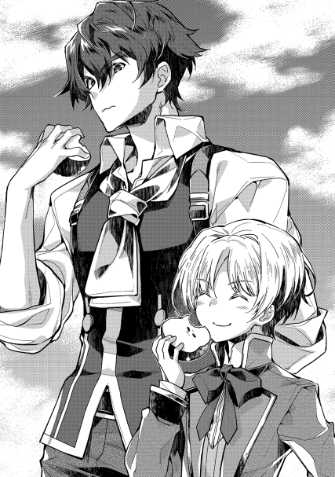
神王国南部辺境と呼ばれる地域がある。
カセロールやペイスの住むこの地域には、中央でも名の通った名家としては一伯爵家と二男爵家が存在する。海洋貿易を独占するレーテシュ伯爵領、建国以来の伝統的旧家であるブールバック男爵家、大戦の功臣サルグレット男爵家の三家。それぞれが、数ある南部辺境の貴族家の中でも有名どころと言われる貴族家だ。
このレーテシュ伯爵領からサルグレット男爵領を通り、ブールバック男爵領まで抜ける街道がある。ロッカーラ街道と呼ばれるその街道は、プラウリッヒ神王国南方辺境で、最も人通りの多い街道となっている。近年では、レーテシュ伯爵領の港町から交易品を運び出す為に、馬車の往来が活発となっている街道でもあった。
「賊は現れますかね？」
「来る。事前にレーテシュ閣下が連絡してくださったからには、必ず来る」
常であれば馬車や通行人が行き交う街道に、今はその影は見当たらない。代わりに、と言っては失礼な話ではあるが、街道に現在いるのは物々しい雰囲気を纏った男たちである。彼らは、サルグレット男爵領軍とブールバック男爵領軍の連合軍。当主を含めた騎兵が四名と三名で計七名。重装備の従士が十二名と十五名で計二十七名。他、傭兵が十名と、領民から募った民兵が百二十名ほどで、総計百七十名弱の軍勢である。手に手に武器を持ち、騎兵は鎧に身を包んで騎乗した上で周囲を睥睨していた。
こんな猛々しい連中が何をしているかと言えば、街道の封鎖である。通行を禁止した上で、来る者は全て追い返し、警戒を続けていた。三交代での見張りも立て、臨戦態勢の警備網を構築している。
厳重な警戒態勢で街道を封鎖して、今日で四日目。何故このような警備体制を敷いているか、と言えば理由は先日の手紙まで遡る。
先だって、レーテシュ伯爵領で暴れていた盗賊団が、伯爵軍によって放逐された。それを誇らしげに手紙で回覧していたわけだが、内容が駆逐や討伐といった物でなかったことに危機感を抱いた者も多かったのだ。とりわけ、レーテシュ伯爵領から街道沿いに地続きになる先の二つの男爵領の当主は、対策を講じる必要を互いに感じた。そこで利害の一致から連合軍を形成し、盗賊を一挙殲滅する方針と相成ったわけだ。
レーテシュ領から追われた盗賊は、通行人を襲いながら街道沿いを移動中であると推察された。連合軍は街道の出口に賊が現れると確信し、そこで賊討滅を図る計画を立てたわけで、しかして今現在そこに布陣中というわけである。
「両閣下。日が暮れてまいりました。幕舎を用意しましたので、夕食を御取り下さい」
「うむ」
二百名に近い軍ともなれば、指揮官にも格が求められる。今回のような連合軍であれば、より爵位の高いものが最高指揮官となって全体の指揮を執るのが通例。だが、今回は二領の連合であり、どちらの領主も位が男爵位で同等である。
ブールバック男爵はやや小太り。若かりし頃は武名を馳せた武官であるが、鍛えられた筋肉はいつの間にか脂肪に取って代わられている。対し、サルグレット男爵の方は、頭の具合が少々涼しくなってきている老年の男性。建国以来の旧家であるサルグレット家の当代当主である。
実力と実績であればブールバック男爵に任せるべきではあるが、伝統と格式から言えばサルグレット男爵の方が相応しい。どちらが最高指揮官になるかで大いに揉めたのち、二人ともが最高指揮官として並び立ち、合議で命令を下すという形になったのはつい先日のこと。隣り合う領だけに利害が反目することも多く、些細な権益を取り合っていがみ合うこともしばしばな二領主だけに、お互い譲るということを考えもしていない。
見栄の為にだけ用意された幕舎。見た目を言うなら屋根の無いテントであるが、屋外で陣を構えるのに、目立つのは間違いがない。目立てばそれだけアピールになる、と考える俗物も多いのだ。
それ故、紋章旗が二種類靡く中にこれ見よがしに建てられ、二人の最高指揮官はその中で食事を取るのだ。
「しかし、中々姿を見せませんな」
「然り。恐らく我が軍の威容に恐れをなしたのではないかと考えるが、卿はどう思われる」
ブールバック男爵が、我が軍、と呼称したことにサルグレット男爵はぴくりと肩を動かした。が、それは相手の挑発だと受け流すことにしたようだ。彼は、柔らかい白パンをちぎり、あえて食べながら答える。
「様子見をしておるのではないか。敵とて伯爵閣下から逃げおおせた手練れ。こちらが街道を見張っていれば、それに気づく程度はやってのけよう」
物を食いながら応答するサルグレット男爵に、今度はブールバック男爵が手に持つスープ用の匙を僅かに震わせた。落ち着けと、自分に言い聞かせるようにスープを一口飲み、一息置いてまた喋り出す。
「ならばこのまま何もせずにはいられん。当方は蓄えもある故このまま長対陣になっても構わぬが、そちらはそうもいくまい」
「いやいや、ご心配には及ばぬ。我が領はどこぞの貧領と違い、土地も肥えておりますからな。卿こそ、そろそろ懐が心配になってきたのであろう」
「ふん。当領は歴史ある土地。どこかのポッと出は伝統も無ければ、貴族となって日も浅く、蓄えも乏しかろう」
「貴様、言わせておけば!!」
がたり、と椅子を蹴飛ばして立ち上がったサルグレット男爵。険悪な雰囲気の中、一人の男が幕舎の中に駆け込んできた。息を切らせながら入ってきた男に、何事か、と尋ねた両指揮官。
「敵襲です。街道脇より敵が現れました!!」
日暮れという、夜とも昼とも取れない微妙な時間帯。兵士たちも食事の準備に気を持って行かれる頃合いを見計らった、絶妙なタイミングだった。訓練された兵士。騎士や従士のみで構成されている軍であったなら、専任の食事係や世話役がいる。が、農民や町人から徴募された民兵は、軍の常識を全く知らない。世話をしてくれる下働きの人間を連れているわけではない。自分たちで準備をしなければ、食事が出てくるわけもない。人は食べねば生きていけず、老若男女、貴賤を問わず腹は減るもの。なまじ何日も様子が変わらない対陣の中、不慣れな民兵はほぼ全員食事に気を取られてしまった。
それ故に出来た隙を、狙い澄まして襲い掛かった賊の手際。嗅覚ともいうべきそれは、的確に急所を襲う。
「ぎゃぁ!!」
「あぐぉぁぁばぁぁ!!」
あちらこちらで悲鳴が上がる。本来であれば、守る側は夜戦の備えとして灯かりを用意する。しかし、日が沈むか沈まないかという微妙な所で、完全に出来ていたわけではなかった。目立つ灯りは悉く消され、時間が経つごとに闇が辺りを覆う。夜戦、というものが不慣れどころか初体験の民兵等は恐慌状態になって逃げ惑うしかなかった。
どこから襲ってくるか見えない。見え辛い。
動いたものが全て盗賊に見えるような心理状態。
味方であっても、見慣れない者の多い連合軍。同士討ちが始まるまでに、それほどの時間は必要なかった。
「貴様、何故お前らの兵が我らを襲っているのだ!!」
「黙れ下郎。成り上がりの猿は部下の躾も出来んのか。お前らこそ私の兵に襲い掛かっているではないか!!」
本来であれば、このような混乱を収拾するのは指揮官の役目である。その指揮官が互いに相争う様になっては、混乱は収まるどころか拍車がかかる一方。そして、その混乱は盗賊を利する一方であった。
その賊の頭目。名をヘルムと名乗っている。身の丈は平均的な人のそれよりも頭二つ大きく、横幅もそれに見合うだけの筋肉の塊。碌に洗いもしていない髪は脂ぎって無造作に伸び、剃りもしない髭は散らかし放題。誰が見ても山賊や盗賊の類であると一目で分かる風貌。元々は王都を根拠地とする傭兵団の団長であり、幾多の戦場で功績をあげてきた手練れである。街道封鎖に勘づき、入念に下調べをした上で、この襲撃を指揮した手腕は、見事の一言。
「頭、あっちの方に偉そうな奴らが固まってるぞ!!」
「よし、あいつらを殺せば後は雑魚。お前ぇら、掛かれや!!」
「おぉぁぁ!!」
かつて傭兵団を率いた経験は、先だってのように伯爵領の正規兵を相手にしてもやりあえるだけの実力を彼に与えていた。今回のように、数の上では明らかに不利であっても、ヘルムは諦めない。肉食獣が、自分より大きな獲物を狩る時のように、急所を狙い澄ました一撃で仕留める。目の前にいる貴族軍の急所など、誰が考えても貴族の指揮官そのものしかない。混乱の中、サルグレット男爵とブールバック男爵は、逃げる間もなく首だけになった。
「偉ぶった貴族の首は俺たちが貰った!!」
「うおぉぉぉ!!」
右往左往している中で、指揮官まで討ち取られた、となれば民兵や傭兵は一目散に逃げ出す。騎士や従士とて、数で劣勢になった上に逃げる味方に釣られて士気を落とせば、賊の手に掛かるのは早いか遅いかの違いであった。
粗方の兵を追い払った所で、後は盗み働きとなる。貴族同士、国同士の争いであれば捕虜となるべき怪我人も、盗賊にとっては単なる獲物。遠慮の欠片もなく止めを刺されていく。その数は両手の指では足りない。殺した相手からは、身包みを剥ぎ、使えそうな騎士の鎧や剣などは賊が使う。腰に下げていた食糧等は言うに及ばず、民兵が僅かに持っていた銅貨等も根こそぎ奪っていく。
「頭」
「どうだ、食い物はあったか」
「湿気てやがる。大して量も無かった」
「っち、大方、そこの豚の餌にでもなったんだろうよ」
豚、と呼ばれたのは貴族側の指揮官だった男だ。二人とも腹の辺りに脂身が乗っている。立派な衣装は全て剥がされ、丸裸の上で首なしになった男たち。頭目は、怨みを込めて胴体の主の頭を蹴飛ばした。
「他の奴らはどうした？」
男が気にしたのは、盗み働きをしている連中の数が、手下の数と合わないこと。目算で言えば、十人以上の数が合わない。多いわけではなく、少ない方で数が一致しない。まさか別働隊が少数で奇襲を仕掛けてきているやも知れず、貴族の薄汚さをよく知る頭目は警戒を露わにする。
「ああ、確か向こうの方で腰振ってる連中がいるんで」
「何だ、女でもいたのか」
盗賊に捕まった女性の末路を、知らない人間はいない。無論、頭目自身、自分たちもその常識の通りの盗賊であると自覚していた。そんな彼らを相手にする場合、戦場に女性を連れて行くのは自殺行為であると言える。目の前に女をチラつかせられれば、士気が上がるのは盗賊の方だからだ。町に寄れない為に娼館にも碌に行けず、はけ口が限られるが故に禁欲を強いられる盗賊稼業。美醜の如何を問わず襲い掛かるだろう。それが分かっていながら女連れで来ていた奴でもいたのか、と首を傾げるのは分からないでもない。
「いえ、それが......」
「何だ？」
「あいつら、男のケツを掘ってるらしいんですよ。何でも、女と見紛うようなガキがいたらしいんで」
「っけ、馬鹿どもが。病気になっても知らねえぞ」
可哀そうな被害者は、従士として連れてこられた誰かだろう。代々従士として貴族に仕える家の子の場合、実際に戦争の戦場に立つようになる前に、盗賊相手や魔獣相手を初陣として、戦度胸を付けさせるのは割とありふれた話だ。
従士と言えば貴族の手下。容赦する気など、ヘルムには一切無かった。
「適当な所で切り上げさせろ。腰に縄でもつけて引っ張ってくれば、ぶっ倒れるまでは楽しめるとな」
既に辺りは暗闇と血の臭いで満ち満ちている。長居したいと考えるのは、狂人だけだ。ヘルムは、自分が盗賊稼業を働くようになった切っ掛けも、こんな臭いのする戦場からだったと思い出す。もう十年以上前になるのか、と遠い目をする。
傭兵として参加した戦争で、馬鹿貴族の無茶な命令で窮地に陥り、揚げ句捨て駒にされて見捨てられた。這う這うの体で逃げ出した後、逃亡を理由に罪人にされた。大切な仲間も、蓄えていた僅かばかりの財産も、恋人も、その時失って独りになったのだ。許せるものか、と拳を握る手に力がこもる。
「それで、これからどうするんで？」
手下の一人が尋ねる。今いる街道を抜ければ、町がある。が、流石に千人規模で人がいる所を襲えば、抵抗も激しくなるだろう。男爵領の町はそれなりに防備が整えられているであろうし、石壁が設けられていることも多い。
「大きな町は避けて、村伝いに行くか。国境の山を越えれば手出しも出来ねえだろ」
「途中の村はどうするんで？」
「決まってんだろ。丸ごと俺たちが頂くんだよ」
頭目が睨んだ先には、リプタウアー騎士爵領。それなりに豊かな土地であるという話で、村が五つばかりあると聞いている。そこで粗方奪った後は、と更に遠くへ目線を向ける。
目線の先の遥か向こうには、モルテールン騎士爵領があった。
ペイストリーが【転写】の魔法を覚えてから三週間。ようやく、彼も自身の魔法について慣れてきた頃。
その日、モルテールン家の中は慌ただしかった。
「大将、ありったけかき集めてきたぜ!!」
「裏に運んでおけ。最悪ここに籠城だ。村人全員匿って、何日分ある」
「三日だ。一日一食で食いつないでも七日持てば精々だ」
「それだけあれば十分だ」
ドタバタと走る足音があちらこちらから聞こえ、ガチャガチャと物を運ぶ物音がそこかしこからしてくる。今もまた一人の青年。いや、少年が領主の館に駆け込んできた。
「父さま、村の人全員に連絡終わりました」
「よし、ペイスはそのままシイツの防衛準備を手伝ってくれ」
「はい」
入って来た時と同じような駆け足で、ペイストリーはまた家から出ていく。この慌ただしさの理由を思えば、ゆっくり歩くだけの時間を惜しむ故だ。
──盗賊現る
既に隣領であるリプタウアー騎士領の村々が略奪の上で焼き払われた、との一報と共にもたらされた盗賊出現の報せ。この報せを受けて、騎士爵始めモルテールン領のトップ達の動きは素早かった。即座に走らせた遣いと共に、本村以外の村を一時的に封鎖。井戸は全て埋め、資材や食料の持ち出しと、家屋、田畑の破棄を行った。家屋の破棄は、それを盗賊に利用されて根城にされることを防ぐ為であり、それによって家を失う人たちは、一旦は本村に匿うことになった。
この本村以外の封鎖措置には、前もって準備をしていた〝賊からの防衛戦略〟の思惑がある。モルテールン騎士領は荒地が多く、森と呼べるものは皆無である。盗賊が何十人分かの水や食料をある程度の量まとめて手に入れようとすると、必ず村を襲わねばならないという事情を見越しているのだ。
それ故、他の二村をあえて放棄することで、賊を本村におびき寄せる。盗賊の類が得意とするであろう散発的な不正規戦。現代で言う所のゲリラ戦を防ぐ狙いだ。この戦略を描いたのには、騎士爵の保有する戦力事情から、農民兵が数的には大半になるという理由もあった。農民兵主体の戦力は、持久戦にとことん弱い。瞬発力ならまだしも、戦意を持続しつつ戦うにはそれ相応の訓練が要る。
例えばスポーツで、素人だけのチームを作ったとする。相手がプロだとして、素人が勢いで短期的に押すことは可能だろう。だが、時間が経てば経つほど劣勢になるのは素人の方だ。戦いという意味では、同じ真理がある。
それ故、短期決戦を狙わざるを得ず、長期戦になりやすい散発的な対ゲリラ戦を避けたのだ。その領主の戦略を言われずとも理解しているのは、領主の腹心たるシイツ。そして、息子であるペイストリーのみであった。自分が手塩にかけてモルテールン領を育ててきたという自負すらあるペイスにとっても、盗賊などにこのまま夢を夢のまま潰されて良いわけがない。
「ペイス様〜俺たちもなんか手伝うぜぇ〜」
「そうそう、俺たちペイス様の部下だかんな。うっしし」
形式上は成人したとはいえ体が未だ小さいペイスは、防衛準備のうち物資の整理と管理を担当していた。これは、領内でも五桁を超える数を間違いなく計算できる者は限られていて、その中でも最も責任者に相応しい地位の人間が領主の息子であったからである。
そんな賢しい少年にも、遊び友達と呼べる者がいる。それが、〝自称〟次期領主直参のマルカルロとルミニート。どちらも従士の子であり、二人ともが如何にもやんちゃな子供そのものといった風貌。悪戯好きの悪童として領内では二番目に悪名高い。最もその悪名を轟かせているのが誰かというのは、察するに余りある。そいつは今、鳶色の目で二人を見ている。朱に交われば赤くなるのが世の常だが、この場合の朱とは、主と置き換えるのが正しいようだ。
「二人からの様づけとか、鳥肌が立つのでやめてください。あと、手が空いているのなら、村の柵から離れないようにしつつ、石を集めておいてください」
「石か。大きさは何でも良いよな」
「マルクとルミの投げられる大きさなら手当たり次第で良いです。言うまでもありませんが、賊が領内に入り込んでいる以上危険です。何か遠くに物音がしたら、それがどんな音であれ、まずは柵内に逃げるように。変なものが見えたと感じたら、それが何かを確認する前にまず柵内に走りなさい」
「分かった」
「任せとけ。石投げは得意だ」
「いやいや、投げるんじゃなくて、集めるだけですからね」
子供の手伝いといえど、今は貴重である。猫の手の一つでも借りたいぐらいに、やることは幾らでもあるのだから。どれほど準備しても、し過ぎであるということはない。ちなみに、何故悪童たちが石投げを得意とするかと聞かれれば、原因は銀髪の次期領主のせいだと誰もが答えるだろう。この男が率先して石投げをやらかすものだから、他の子供まで嬉々として真似をしてきた。
そんな手のかかる悪がきが四度ほど、抱えた石を柵内に運んだあと。五度目の石集めをしていた時だった。しゃがみ込んで一生懸命に投げやすそうな石を拾っていた子供の耳に、遥か遠くの微かな気配が届いた。
「おい、何か聞こえたか？」
「あん？ お前の耳はゴブリン製だからあてになんねえぞ」
悪童の片割れが、右腕と服の中に石くれを抱え込みながら立ち上がった。肌寒い晩秋の風の中、気だるげに遠くの方を眺める。その目には、平野の遠くの方に黒い粒がある様に見えた。
「盗賊だぁ!!」
「やべぇ!!」
慌てて柵の中に逃げ込んだ少年たちの叫び声は、図らずも警鐘となる。声を、真っ先に聞いたのは、柵の傍で渡し板を警戒していた村人だった。彼は年こそ四十も後半であったが、動きは機敏であった。
柵の前。幅にして五〜六メートルほどの濠に渡し掛けていた長くて分厚い板を柵内に引き込み、そのままそこら辺に転がす。そして即座に村の中を走り、領主の館に向かった。
途中、盗賊が出たぞ、と叫びながら。
只ならぬ雰囲気を既に察していた村人たちの多くは、大声で叫びながら駆け抜ける男を二通りの反応で迎えた。家の戸を固く閉ざして家財道具で押さえ、窓の蓋を降ろして家に閉じこもる者と、鼻息も荒く、手に木槍を持って領主の館や、村境の濠や柵に駆けていく者と。
騒然となる村の中で村人の前に姿を現したのは、鎧甲冑を身にまとい、凛然たる体躯をもって秋風を遮るカセロール＝ミル=モルテールン騎士爵。落ち着いて村人を集める様に言い、銘々が集まった所でこう宣言した。
「皆、知っての通り盗賊が出た。この村を襲う気であるのは明白。放っておけば、男は殺され、女は犯され、子供は売られるだろう。食い物は奪われ、後に残るのは焼かれた家屋敷だけとなる。私は、それを許しはしない。それ故、皆に覚悟を問う。家族を守りたいと思う者は、武器を取れ。皆の力を合わせ、賊共をここから追い払おうではないか。では問おう。覚悟は良いか!!」
「おおっ!!」
集まった連中の、耳をつんざくような声の塊。男たちの怒号にも似た叫び。その場にいた者は、空気が文字通り震えたように感じた。
モルテールン領は当代当主が初代になる騎士爵領。無からの開拓と言っていい日々の中で鍛えられた男たちの気合は、中々に迫力がある。
そもそも、砂漠ほどでないにしても雨が乏しく、荒地と呼べる荒野の開墾に人生を掛けてよいと集まった荒くれどもが本村の一世代目。元々は田舎領地の農家の三男坊以降であったり、没落商家の末っ子であったり、或いは体を壊した元傭兵であったりがその世代。早い話が、元々食うにも困り一縷の望みを掛け、呼び掛けに応じたのが彼らである。この村を追い出されれば戻る場所など無い以上、良くて過酷な奴隷。逃げても餓死か枯死。そんな境遇に落ちぶれると、誰よりも理解している連中だ。それだけに、他の二つの村を閉鎖した時点で後が無いことを、言われずとも皆悟っている。
いずくで誰知ることもなく死ぬよりは、ここで仲間を、家族を守って死ぬ。裂帛の気合は、そんな決意の表れでもあった。
持ち場に散ってゆく村人たちは、手に手に粗末な武器を持っている。刃先に鉄刃を噛ました木鍬を持つ者。どこから引き抜いたのか、土くれが付いた木杭を持つ者。芋程の大きさの石を集め、肩を回して投げる構えを見せる者。
「間もなく日が暮れる。賊どもは夜に来るぞ。皆、今晩が山だ。気合を入れろ!!」
領主自らの檄。領内では貴重な薪も使われ、火が焚かれる中にあって、その声はよく響いた。檄が染み渡り、気合を充実させて持ち場に散っていく民兵の中、一人の男がカセロールに近づき、周りには聞き取り辛い声で問いかけてきた。
「夜明けを待って明け方に仕掛ける可能性や、何日か様子を見てくる可能性もあるんじゃねえですかい？ 暗い中じゃ、土地勘のない賊に不利でしょう。不利を押しても来ますか？」
あえて領主であるカセロールの意見に反する発言をする者がいる。歴戦の騎士であり、忠勇武名を馳せた騎士爵に、軍事的な意見ができる者など領内では限られている。
案の定、その発言は腹心のシイツだった。仲の良い友人同士でもある当主と副官は、時々こうしてあえて意見を対立させる。お互いに信頼関係があるからこそ、あえて耳に逆らう反対意見を言うのだ。そうすることで、お互いに見落としを防ぎ、思考と発想を柔軟にする。十年来の阿吽の呼吸というものだろう。
「来る。彼奴らは、隣領の襲撃で、恐らく食料や物資の補給に失敗している。時間を掛けるような真似は出来ないだろう」
騎士爵自身は、かなり確信があった。賊が、物資補給に失敗している、という確信だ。昨年の冬からこの夏に掛けて、モルテールン領や近接領では近年にない冷害が発生している。隣領であるリプタウアー騎士領も例外では無く、相当数の餓死者が出ているのは確かな話だ。幾ら自領よりも豊かな土地であるとはいえ、蓄えの出来る状況であったとは思えない。蓄えているものが無い村を襲った所で、得られるものなどたかが知れている。ここに来るまでに食い尽くしていることだろう。
「しかし、確実にそうだと言うわけじゃあねえでしょう。お隣のリプタウアー騎士爵は義に篤いとの噂。自分が借金してでも領民に食い扶持を与えていたかもしれません。それに、賊が伯爵領でしこたま奪えるだけ奪って来たのかもしれません。もし賊に余裕があるとすれば、無理押しを避けるかもしれやせん。そうなればこっち側としても、徹夜の疲労は無視出来んでしょう」
「むっ」
極度の緊張を強いた状態での徹夜。幾ら肉体労働に従事する農民といえど、若い者ばかりでないモルテールン領軍側にはかなり堪えるだろう。こちらが疲労を重ね、賊がぐっすり休んで気力体力を充実させてから襲ってくるとするなら、相当に不利な状況を生む。それを考えるに至り、騎士爵は若干言いよどんだ。不安が生まれた、と言っても良い。ちらり、と横目に見えた銀髪の少年にも、意見を聞きたくなった。この息子は、既に従軍を経験している。下手に慌てふためいている領民よりは遥かに冷静に物事を見られると、父親は考えた。それ故問いかける。
「ペイスはどう思う」
「う〜ん。情報不足ですね。賊の食糧事情は、幾ら推測を重ねてもはっきりしないでしょう。故にあてにする作戦は立て辛い。一番良いのは、食糧事情や戦力を正確にすることでしょう。正確な分量を量るのは、何をするにも基本です」
「そうか......よし!!」
息子の言葉と、親友の意見に思う所があったのか、カセロールは馬に飛び乗った。普段は農耕馬を兼ねる馬ではあるが、その体躯は軍用馬としても優良と呼べるものだ。唸りを聞かせる馬を見るだけでも、騎士爵が常に戦いを意識して軍備を整えていたことが伺える。軍人の心構えとしては立派なことであり、この場においては備えが役に立つ。
「シイツ、お前も来い」
「何をするんで？」
「強行偵察だ。今ならひと当てしてみることもできるだろう」
「全く、うちの大将は人使いが荒い」
シイツも、いつの間にか馬に乗っていた。自分用の馬をちゃっかり用意しておくのを見れば、当主へ物申す時にはある程度こうなることを予想していたのかもしれない。
「ペイス、私のいない間は任せる。もし私がいない時に賊が襲ってきたら、北側以外を優先して守れ。万一にもひと当てした時に逃げ遅れたら、私とシイツは一度大きく迂回して北側から戻るつもりだ」
「分かりました。御気を付けて」
濠に、渡し板が掛けられる。駆け出す二人の雄姿は、夕映えを背負うに眩い。それを見送るペイスの中には、色々な試行錯誤が生まれては消える。守りを固めるにはどうすれば良いか。そもそも守りを固めるだけが最善なのか。自分が残された意味は何なのか。そしてその思考は、一つの考えにまとまる。次期領主は、父親を見送るのも早々に切り上げ、早速動いた。周りをひっきりなしにチョロチョロしていた二人の友人を捕まえると、有無を言わさずに指令を与える。
「マルク、君はコアントローの所に伝令を頼みます」
「親父の所にか。任せろ」
「コアントローは、西の濠を守りに行っているはずです。伝令内容は『火矢の灯りを敵襲の合図とせよ』です。行けるでしょうか？」
「火矢が敵襲の合図、だな。よしきた、行ってくる」
こういう時には、全力疾走を厭わない子供というのは役に立つ。とりわけ、体力だけは有り余っている悪がきともなれば、言われずともあちこち走り回る。
火矢を合図と言ったのは、ペイスの独断であった。馬鹿正直に、父とシイツが騎馬駆けで威力偵察しにいった、と伝令した所で、指揮経験の乏しい従士には意味が分からないだろうし、余計に戸惑う。ペイスは、いざというタイミングは、自分の判断で行う覚悟を決めたのだ。
父とシイツが馬で出て行った以上、偵察からは必ず戻ってくるという確信はある。武勲の報奨でもある父の馬と、それに合わせたシイツの馬は、足が速い。伯爵家ですら数えるほどしか持っていない北方産の馬で、盗賊如きが追いつける馬足ではない。
疾走。偵察だけなら、それだけで十分事足りる。まず間違いなく無傷で戻ってくる。
だが、日暮の時間帯というのが気になった。偵察だけであれば、シイツが付いて行けば問題ない。逃げるにしても、父の【瞬間移動】が万一の場合も逃走を保障する。馬は捨てることになるかもしれないが、二人が無傷で戻れる確率は相当高い。
しかし馬を捨てずに逃げるとなると話が違ってくる。人に換算して五〜六人分の重量がある馬が二頭。父の魔法では重量制限的に厳しい。それ故駆けて逃げてくることになるわけだが、暗くなってきた中で、相当に急がせて馬を走らせれば、方向感覚がずれる可能性も考えなければならない。
幾ら土地勘があるとはいえ、猛スピードで走るものの上から正確に位置を把握する。それも暗闇の中で。しかも、下手をすれば数十人の盗賊に追いかけられながら。相当な難事である。夜に灯りの消えた部屋の中で走ることを考えれば分かりやすい。手さぐりで恐る恐る動くだけでも難しいのに、そこを時速数十キロで走るといえば困難極まりない。
そこで、火矢が出てくる。薪の火を目印に駆けて戻るであろう二人を助けるのに、火矢の灯りは心強く思えるだろう。暗い部屋で、手元に持つ灯りと同じように。
「ルミはグラサージュに火矢の準備をするよう伝えてください。父様たちが離れたのち、もう一度微かでも馬の足音が聞こえたら、火矢を音の方に向けて撃つようにと」
「良いのか？ お館様に矢が当たるかもしれないよ？」
「父様やシイツなら、火矢を遠目に見た瞬間に、意味を悟って方向を変えるさ。恐らく、西回りで北に向かう。後は西側にいる人達と合流して上手くやるでしょう。第一、あの父様に、相当に離れて撃ったはぐれ矢が当たると思いますか？」
「全く想像できねえ。イタズラで後ろから投げた石まで避ける人だし」
「でしょう？ まあ石の方はいつか当たると思います」
緊張感の欠片も無い子供の笑いが響く。仮にも領主に対して石を投げるというイタズラの酷さもさることながら、それを良しとする次期領主も大概に悪童である。伝令に走らせた同世代の少年を見送った後、先ほどまでの緩んだ空気が一変する。周りを忙しなく走り回る大人たちは、その凛然とした雰囲気に呑まれそうになった。
「一手、策を用意します。子供たちを集めてください」
「へ、へい!!」
慌てて何人かが村の中に走り戻る。言いつけられた村人は、子供を集めるのだから逃げる為の一手を用意するのだろうと考えた。子供たちだけでも安全な場所に逃がす為に、何がしかの手を次期領主が打つのだろう、と。が、当の本人には違う思惑があった。
父がひと当てと言ったのは、恐らく自分が囮になってでも、盗賊に短期決戦を強いる為だろう、という思惑だ。父達が戻ってくる時には、最悪、賊全員を一度に相手にするかもしれない。
いや、恐らくそうなる。二人は一度の勝負で決着を付けようとしている。二人の目がそう言っていた。自分の戦術眼や軍務経験に自信のないペイスではあったが、それは博打のようにも思えた。歴戦の古豪が二人してやっていることだけに意味があるのだろう、と信頼はしている。だからこそ、それに応える為の一手を用意しておこうとする。集まりだした子供たちを整列させつつ、ペイスは父の帰りを待つ。
村の端までの相当な距離を走り、伝令から戻ったマルカルロとルミニートは、ペイストリーの元に子供たちが集められているのを見てほくそ笑む。少年少女の手に持っている物が、自分達もよく知る物だったからだ。
「マルク、ルミ、伝令ありがとう。早速二人にも手伝ってもらうよ」
「くくく、それを持っているってことは、俺たちにもやらせてくれるってことだよな」
「勿論です。二人は僕よりも上手い」
子供たちが手に持っているのは、紐を捩ったような奇妙なロープ。麻紐なのだろうが、手の長さほどで折り返してある紐は、中ほどに布が付けられている。この紐の用途はただ一つ。投石である。所謂、投石紐と呼ばれる武器の一つではあるが、扱いには熟達を要する。
そして、数年前より、何故かモルテールン領の子供はこれを遊び道具として育っている為に、扱いがやたらと上手いのだ。とりわけ、悪がき組のツートップは二百メートルぐらい先の口うるさい大人。もとい、標的に当てるほどに腕が良い。
「東側の濠は、例の準備をしてあります。逃げる時の手順は分かっていますね？」
「任せとけって。親父たちの度肝を抜いてやる。うけけけ」
子供たちの準備も終えた頃、一つの報せが飛び込んできた。それは否応なく領民が緊張を強いられる報せであり、悪報でもあった。ペイスからすれば、想定していたもののうち最悪に属するものだ。
「ご領主様とシイツ様が、賊数騎に追われています」
「火矢は撃った？」
「既に二度。ご領主様方は西の方に向かったそうです」
「すぐに迎撃の準備をしてください。敵が来るまで、時間はありませんよ」
銀髪の少年の予想した通り、盗賊の荒々しい雄叫びと暴力が村を襲うのに、それほど時間は要らなかった。
カセロール＝ミル＝モルテールン騎士爵とその腹心のシイツ。彼ら二人には共通点が多い。
一つは、お互いにお互いを掛け替えのない親友と思っている点。或いは、食うにも困る下っ端から戦場での武勲を重ね、多くの名誉と報奨を得て今の地位にいるという点。
そして、最大の類似点は、万人に一人と言われる才能。魔法を使えるということ。カセロールの【瞬間移動】はつとに有名であるが、それに隠れるようにしてシイツの【遠見】の魔法も二つ名と共に知られている。シイツがカセロールの部下となったのは、彼自身が、彼の魔法をサポートに向いたものであると自覚するが故である。自分はトップではなくＮＯ・２が向いている、と。そして、自分の能力を最も活かせる主人はカセロールだ、と。事実、幾多の戦場で、この二人のタッグは比類なき戦果を挙げてきた。
「大将、ちぃと不味い」
「何だ？」
彼らが二騎駆けで走ること二十分。本村から、遠目に点であった盗賊らしきものが、近づいてくるのがはっきりと分かる距離にまで近づいていた彼らは、そこでどうにも良からぬものを見た。土地勘のない賊などからすれば、どうあっても視認が出来ない距離であるにもかかわらず、それを意に介せず見ることが出来るのがシイツの強みである。
「どうにもあいつら、騎士崩れが頭だ。馬が五頭。それも体格の良い馬だな。乗り手も相当手綱に慣れてらぁ。襲撃の準備でもしてるのかね」
「賊の数は何人だ？」
「十、二十......五十六。いや、七。うち数人は綱付き」
「五十越えは事前の予想通りだが、やはり多いな」
騎士崩れ、というのは戦場で厄介な敵として定義される、傭兵の騎兵に対する蔑称だ。
馬。それも人が乗れ、怯えを調教で克服した軍馬ともなれば、いざ戦場ともなると汎用性も高く、機動力や突破力は申し分のない兵科。所謂騎兵となる。馬は、日頃人以上に大喰らいな分、走れば人以上に速くて力強く、敵前にあっては数百キロの質量の塊となる。用途次第では、一騎でも十人や二十人の敵など蹴散らす強さがあるのだ。
軽自動車の突進に、人ごときが大した抵抗も出来ず弾き飛ばされるようなものと思えば間違いない。馬の脚で踏まれただけでも死ねるのだから、敵からすればこれほど厄介な兵科も珍しい。
しかし本来、自分用の馬を養うというのは相当に経済力を持っていなければ難しい。食い物は人以上の量を食べる上に、軍馬として扱うならそこら辺の雑草で養うというわけにもいかず、専用の飼葉や飼料か、広い牧草地や放牧地が要る。
元来、草食動物の特性として臆病な動物である馬を、大きな音や激しいぶつかり合いにも動じないように調教し、それを維持する訓練も必要だ。おおよそ、銀貨換算で一枚もあれば普通の農家一家が一月程度は暮らせるが、軍馬は維持費として平均して月に三〜四枚は銀貨が要る。貴族が徴税権を与えられているのは、こういうものを養う為でもある。
戦力として申し分無いが、維持には金が飛ぶのが馬。そして、そんな馬を自力で用意出来る傭兵を指して、騎士崩れと呼ぶ。
騎乗が技術であり、馬の維持に金が掛かる以上、自力で馬を用意できる騎兵傭兵はそれ相応の立場〝だった〟ことが多い。元々貴族であったものが没落したであるとか、傭兵として勇戦を重ねて武勲と報奨を稼いだであるとか、裕福な商家に高待遇で抱えられている腕利きであるとか。
或いは稼ぎの大きい、大規模な盗賊で幹部を務めている......とか。
どれにした所で、食い詰めて盗賊に落ちぶれた連中とは一線を画し、戦うことを本業とする連中であることは間違いが無い。早い話が手強い。それが複数いる時点で、襲ってきている盗賊団が〝普通〟とは程遠い戦闘集団であることが分かる。伯爵家が討伐に失敗した時点で分かってはいたが、相当に恐ろしい連中のようだ。
「しかし......食糧自体はあまり持っていないようですぜ」
「こちらとしてはこれも予想通りか」
「ありがたいこって」
シイツの見る限り、盗賊の中の数人は明らかに荷物持ち。重たそうな荷物を持ち、紐のようなものでお互い同士が縛られている風を見れば、何処かで捕まえた村人を奴隷のように酷使しているのだろうと察しが付く。彼ら、彼女らの末路は疲れ果てて野垂れ死に、遅かれ早かれ野犬の餌になる。碌な食事も取れず、力尽きた時が死ぬ時だ。
自分たちの家族や仲間を、あんな有様にしてなるものかと、シイツとカセロールはお互いに無言で頷きあう。運ぶ荷物の量から推察して、食糧は精々二日分。賊が夜襲を決断するであろうには十分な困窮度。少なくとも、二〜三日様子を見てくるような余裕は無いと断言できる。ここで上手く挑発できれば、このまま夜戦になるのはまず間違いがなかった。そうなれば、短期決戦の上で、土地勘のあるモルテールン領軍が有利な、更には防衛戦という最高の状況になり、質と量で劣る農民徴兵といえど勝ち目も見えてくる。
「シイツ、遅れるなよ」
「誰に言ってるんですかい。大将こそ、ケツに矢を射かけられねえように急いでくだせえ」
競うようにして駆け出す二つの馬影。夕闇が一層暗くなり、既に夜の帳が降り始める頃合い。街灯などはあり得ず、火が焚かれることもない荒野の中に、二つの影が溶けていった。
駆け来る馬蹄の音に、盗賊たちが気づいたのはそれからやや過ぎてからだった。日も落ちた。これから夜陰に乗じて村を襲い、女食糧財貨を奪う。その手筈を整えていた途中。即座に態勢を整え、錆の浮いた剣を構える者。或いはどこの戦場で拾ったかも分からない年代物の槍を構える者。武器は様々ながら、対応の早さは下手な傭兵団より素早かった。
武侠を匂わせる、盗賊団らしからぬ姿勢を見せた集団の中に、飛び込んできた二騎の騎兵。一騎が礫を幾つか投げ、飛んだ小石から目や顔を庇った幾人かを二騎目が目ざとく切りつけた。格式ばった名乗りも無い荒っぽい奇襲に、賊は怯みを見せる。鳥を地面に叩きつけた時のような、潰れた悲鳴を二つほど後に残し、馬は集団の中を駆け抜けていった。
賊の頭目などは、その鮮やかさを見て、さぞ練達の騎士であろうと察する。無理にとどめを刺そうとせず、駆け抜けることを優先させた突進を見ても、騎乗技術や馬上戦術に秀でた者と分かる。
「手前ぇら、相手はたった二人だ。舐めた真似されてんじゃねえ。直ぐに次が来るぞ。槍持ってる奴らは構えろ。いいか、絶対に馬の前に出るな。跳ね飛ばされて死ぬぞ」
賊頭目の飛ばした指示。それは騎馬突撃に対して、実に的確な指示だった。
馬頭を返し、再度の突撃を仕掛けようとしていたカセロールとシイツは、その手際の良さに突進を諦めざるを得なかった。思っていた以上に手ごわい賊に歯噛みをしつつ、あえて聞こえるような声で二人は会話する。
「大将、駄目です。このままじゃ串刺しにされる。この数に敵いっこねぇ。偵察は止めて一旦村に引き返しましょう」
「そうするか。急いで逃げて、防備を整えるぞ。村人に賊が来たことを知らせねば!!」
たった二騎で集団の中に駆け込んだ勇士とは思えない弱気な発言を残し、遠ざかろうとする馬蹄。
盗賊たちは、なまじ訓練されているのが仇になる。弱気な言葉を聞き、自分たちなら戦えると判断し、馬に乗った者は頭目が止めるのも聞かずに追いかけたのだ。釣られて、馬に乗っていない者も駆け出す。賊共の頭の中では、今なら下手に防備を整えさせる前に夜襲を行えるとのそろばんがあった。
馬に乗れるのは身分の高い者だというのが相場。ましてここら辺のような貧村ばかりでは、馬を養うのも大変だろうことから、数も無いはず。襲撃に二人も騎乗した人間が来たとなれば、村は指揮する者もおらず烏合の衆に違いない。賊がそう考えるのも当然だった。
普通の田舎領主が相手であれば、或いは先だって襲われた騎士爵領のような所であれば、その判断は正解だった。賊の誤算は、モルテールン領の連中が、背水の陣とも言える窮鼠ばかりであったこと。そして、留守にしているはずの村に、ある意味では一番手強い〝指揮者〟がいたことである。
「大将、火矢が飛んできたぞ」
「ペイスの仕業だな。わざわざ目立つ真似をしたということは......誘いということか」
「なら、西回りだな。東回りなら畑を荒らしちまう」
「何を企んでいるか知らんが、それっ」
足の速い馬二頭。それを追う形になった賊は、否応なく戦いの剣を振り上げるしかなかった。
盗賊にしてみれば、既に準備万端整えているとは知らないわけで、ここで二騎を見送って準備を整えられるよりかは、追ってそのまま村になだれ込んだ方が、自分たちの被害は少なくて済むという常識に囚われている。狼藉者たちが、準備も碌に整わないうちに突撃する羽目になったのは、賊の偵察が来る前に強襲を掛けたカセロール達の作戦勝ちと言えた。
逃げる二頭は、足の速さはそれなりに揃っている。息を合わせて、足並みも揃えている。対し、追う騎兵は五頭。足の速さはバラバラで、しかもその後ろには村に向けて走る五十人弱の集団。勿論、それぞれに走る速度はバラバラだ。村に近づくにつれ、知らずと賊は一列縦隊に近い隊列になっていた。
カセロールとシイツの二騎が、火矢を合図に方向転換した時。暗闇で先がよく見えず、追いかけるものに釣られるように賊が動いたのは至極当然のことだった。村に向けて一列に走っていた者達が、横方向に移動方向を変えた結果。彼らは〝横〟に村を見る形になってしまった。
「放て!!」
幼い一声と共に、無数の石礫の雨が降る。突然、堅い塊をぶつけられた盗賊は混乱した。意識もしていなかった脇腹から、大量の投石。しかも狙ったように頭や馬に飛んできた。中には、火のついた布玉まで投げつけてくる。油が仕込んであるのか、ものに当たった瞬間辺りには火花が飛び散った。
「次、放て!!」
石礫と言っても、親指大のものから、こぶし大のものまで。手前にころころと転がるものも多かったが、それ以上に数が多かった。親指大といえども当たれば肌は切られるし、大きなものが頭にでも当たれば容易く意識を絶ち切る。火玉に関しては言わずもがな。
賊が咄嗟に立ち止まり、身を守ろうとしたのは防衛本能とも言えた。続けざまに浴びせられた石の雨。数名が大きな石を頭に受けて昏倒している。顔に火が回ってのたうっている人間もいた。混乱に拍車を掛ける様に馬までが暴れ出し、踏み潰される重傷者まで出始める。
「ふざけんなっ!!」
「石くれ如きで舐めやがって!!」
だが、流石に盗賊たちも投石程度ならばと、持ち直すのも早かった。暴れる馬を乗り捨て、村の方に突進を掛ける。濠を越えようと空堀に入り、柵を乗り越えようとした所で村人の木槍との応酬となる。投石の数から考えても、領軍大半の主力が目の前にいるのは間違いない。ならばここが踏ん張りどころだ、と賊は張り切る。
「うぎゃぁ!!」
「痛えよぉ!!」
あちらこちらで聞こえる悲鳴。残念なことにその割合は、どちらかと言えば柵の内側から上がるものの方が多い。賊は人を殺すことを生業とするような連中。それに比べて村人は、土を耕すのが生業の農民ばかり。武器の違い。躊躇いの無さ。人殺しへの慣れ。それらは全て村人にとって不利に繋がった。徐々に、賊の中からも濠を乗り越える者が出始める。
その中の一人。とりわけ体格の良い者が、村人の木槍を叩き切り、更には肩口を切りつけた上で柵まで乗り越えた。
「おらぁ、死にたい奴から掛かってこいや!!」
よく見れば、それは騎士崩れと呼ばれていた人間だった。手に持った剣は、他の連中の錆が浮いたような物とは違い、良く手入れされている。今でこそ血に染まっているが、さぞかし腕の立つ鍛冶師が打ったものなのだろう。切れ味も中々に鋭い両手剣を振りまわす賊。間違いなく頭目だろうと思われるその男は、周りの農民などは相手にもならない。木端の如く飛ばされた一人の男が、傍で戦っていた領民を巻き込んで転がる。
主力を撃滅して、これで自分たちの好き放題に出来る。柵も壊したし、そこから一気に陣形も何も崩してやった。
と、賊の連中には見えた。
だが、思ったほどに農民が慌てていないこと。そして、思ったほどに人がいないことに、賊の頭目は気づく。それどころか、何故かとある地点を越えた所で、手下どもが急に転がり出すのだ。
「一体どうしたんだ、あぁ？」
剣をやや斜に構えて肩に置き、大胆不敵にも転がる連中の方に無造作に歩く頭目。この程度のことでビビっていては、盗賊団の頭は務まらない。何が起きているのか確認しようとした所で、男は図らずも原因を知る。文字通り〝その身をもって〟理解してしまった。
「ぐぉぉ、痛え、熱い、くそっ何が起きてやがる!!」
顔中に走る、焼けるような熱と痛み。思わず地面に転がってしまうが、そこには同じように転がって痛みを訴える手下がいた。耐え難い痛みの中、頭目が目にしたのは、小さな少年の姿だった。
「マルク、ルミ、あと少し時間を稼ぐのに、もう一度投石いきます。打てっ!!」
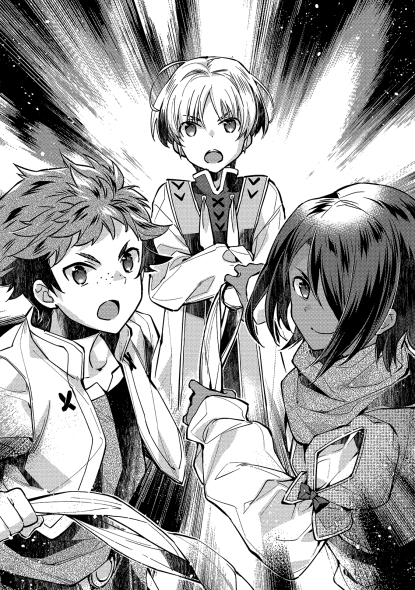
可愛らしい、という言葉が似合うであろう銀髪の少年。その少年と、頭目の目が合った時。賊の頭は、目の前の子供がこの苦しみを与えていると悟る。それが分かるほどに、少年の目が冷静に自分を見ていたからだ。
「てめぇ、何しやがった......」
既に顔は焼け爛れたようになり、息をするにも激痛が襲う中で聞いた言葉。返って来たのは冷ややかで、落ち着いた答えだった。
「大したことはしていませんよ。精々、お仲間さんの怪我を【転写】しただけです。良い塩梅の怪我人を探す方に苦労しましたがね」
「なっ、もしかして魔法使いか」
「はい。世間一般ではそう言うようです」
いやに冷静な言葉を最後に、振り回された大きな石を後頭部に受け、頭目は意識を手放した。こんな辺境に、魔法使いが隠れているとは、自分はツキが無かった、と考えながら。
「頭がやられたっ!!」
「ちきしょう、退け、退け」
盗賊にしては統率がとれている。頭目がやられたことで退き始める連中を見て、ペイスはそう思った。
「まっ、逃げられないわけですけどね」
少年の目の前には、父とその友人が、西側の手勢を引き連れて、混乱を極めた賊を討滅する光景があった。
「坊が賊に攫われただぁ？」
盗賊の襲撃から一夜明けて翌朝。事後処理に奔走するシイツの元に、その一報が届けられた。
「ええっと、攫われたと言いますか、追い掛けたと言いますか、攫われたのは子供で......いや、若様もまだ子供ですが、ええっと、そのぅ」
「よく分からん。落ち着いて話せ!!」
「実は......」
◇◇◇◇◇
数十人からの盗賊が混乱する中に、二騎の騎馬が走る。進むに進めず、退くに退けず。混乱したまま固まった集団など、騎馬突撃の的にしかならない。更には、前後を挟まれた形になり、前を気にすれば後ろから刺され、後ろを気にすれば前から刺されと、既に三十人以上の賊が倒されていた。
「賊共、武器を捨てて投降しろ。さもなくば容赦はしない。繰り返す。武器を捨てて投降しろ!!」
カセロールの声は良く響いた。それでも尚暴れる賊は有無を言わさず切り捨てられる。腰に縄を付けた幾人かや、抵抗を諦めた何人かが、武器を捨てて降伏の意を示す。
モルテールン領軍は、領民を守り切ったのだ。
あちらこちらで、勝利の叫びをあげる男たち。その声に、不安から解放された喜びで応える女性や子供。彼ら、彼女らは達成感と開放感に酔いしれる。
そんな中、領主や徴兵軍にはまだまだやることがあった。捨てられた武器と、投降した連中や倒れた賊とを集め、賊は念入りに縛り上げていく。それには、かなりの時間が掛かった。集めた武器や、賊が運んでいた幾ばくかの金銭や服などは、本村防衛に尽力し、徴兵に協力した者達に分けられる。幸運にも死者こそ出なかったが、怪我をした者は両手では足りないほどの数になる。指を切り落とされてしまった者や、片眼を無くした者もいる。彼らの貢献に応える為にも、信賞必罰が世の中の常識だ。
賊共は一カ所に投げ集められ、見張りを残して主だった連中は領主の家の前に集まる。これからは戦後処理になるのだ。
「次、ザースデンのグラサージュ」
「はい」
「倒したのが一名で、正面防衛の補佐役に貢献。槍と銀貨一枚を褒美とする」
おぉ、と周囲から歓声が上がる。ザースデンとは本村の名であり、対外的には領都の正式呼称となる。たかだか村三つの中で領都を決めるのもおかしな話ではあるが、モルテールン領の中心となる村の名前だ。グラサージュは、ペイスの担当していた敵正面にいた男であり、身分的には従士となる。次期領主を形式的には補佐していたことになり、件の少年の命令を受けて火矢を放ったのもこの男である。槍を貰えるというのは武勲を認められたということであり、それに加えて銀貨一枚の報奨があったことに、周囲が羨望と驚嘆を込めてどよめいたのだ。
「次、ザースデンのマルカルロにルミニート」
「はいはい、は〜い」
「何で二人一緒に呼ぶかなぁ」
次に呼ばれた者の名前に、先ほどとは違った意味でどよめく。呼ばれたのが、年端もいかない子供だったからだ。それも、悪戯っ子のレッテルが、貼られまくっている子供。
「二人とも、大人に負けない働き見事だった。それぞれに、剣を与える。それと、大麦を一袋。これは二人合わせてだ。家に帰ったら、自慢しても良いぞ」
「よっしゃぁ!!」
「悪がきの石投げも、偶には役に立つもんだな」
「違いない。だが、このあいだみたいに俺を狙いやがったら、次こそ折檻してやる」
笑い声が周囲に満ちる。日頃は怒られてばかりの子供二人。今日のこの瞬間は間違いなく彼らがヒーローになった瞬間だ。誰からも口々に賞賛を受け、慣れていない彼らは逆に恥ずかしくなってしまったほどに。そんな赤面した二人に、親友が声を掛ける。
「二人とも、お手柄でしたね」
「へへへ、ペイスほどじゃないけど、俺たちも結構やるだろ？」
「ええ、中々の活躍でした」
「ところで、ちょっと手伝ってくれ。俺らだけじゃ運べないんだよ」
報奨として与えられた大麦の袋。大人でも持ち運びに苦労する大きさのものだ。重さでいうなら、マルクやルミの体重と同じぐらいの重さがある。流石に子供一人で持てる重さではなく、二人でもふら付きそうになる。だから手伝え、と彼らは言っているのだ。
勿論、今日の英雄たちの誇らしい戦利品を運ぶのだ。友人たるペイスに否は無く、三人がかりでうんしょうんしょと運び出す。周りの大人も、それを我が事のように誇らしく見送る。
運び込んだのは、マルカルロの家。従士であるコアントローの家であり、息子であるマルクも当然ここで養われている。家長であるコアントロー自身は未だに戦後の後始末に奔走している為、家の中には彼の妻と娘と息子。マルクからすれば母と妹と弟がいた。日頃は口を開けばお説教しか言わない母親も、今日ばかりは息子が無事帰って来たことを喜んだ。げんこつも落とさず、帰って来た息子を抱きしめる。
「母ちゃんただいま」
「お帰りマルク、無事に帰ってよかったよ。あんた怪我してないかい。心配したんだよぉ」
「俺は大丈夫さ。それより見てくれ。領主様から剣を貰ったんだ。それに麦。ルミん家と半分ずつってことだけど、スゲエだろ」
「兄ちゃんすげぇ」
「ちゅげぇ」
自慢げなマルク。貰ったばかりの剣を、鞘ごと引きずりながらも腰にさして胸を張る。世間一般では、武勲を立てて立身出世をはかるのは典型的なサクセスストーリーであり、それを体現する腰の剣は、誰しもが憧れるものだ。
「あたしゃ、お前が怪我もせずに帰って来てくれただけで良いさ。若様も、このバカ息子がご迷惑をおかけしたみたいで」
「いえいえ。マルクも、ルミも立派でした。きっと将来はモルテールン領に無くてはならない人材となるでしょう。今日の報奨も、文句なく彼らが勝ち取った物。これでお腹いっぱい食べさせてあげてください」
「はいな。腕によりをかけてご馳走を作りますよ」
一度床に降ろした麦のうち、半分をルミの家に持って行かねばならない。ここで、半分というのが不公平にならないように、ペイスが一工夫する。きっちり二等分になる様にマルクに分けさせた上で、ルミにどちらを持って帰るか選ばせたのだ。これならば、どちらからも不公平だとの不満は出難い。
領主の仕事の中には、裁判権に関わるものも多い。誰が仕事を少なく割り振られているだとか、誰それの家が他より余計に粉ひきを使っただとか、薪の割り当てが少ないだとか、争いごとの大半は利益の折衝である。それを治めるのは領主としての手腕であり、その片鱗を見せたのではないか、と考えることも不自然な発想ではない。不公平感を極力なくす、という意味で、マルクの母親などはこの分け方にえらく感心した。当の本人からすれば、何のことはない常識的なものであったにすぎないわけだ。現代人的な教育素養があれば大抵の人間が思いつく。
無事に半分になった麦を、ルミの家に届ける。ここでも、今度はルミニートが家族にもみくちゃにされた。この家の場合は、元従士であるルミの祖父がまだ存命であった為、孫の初陣と初手柄にことのほか大喜びであった。涙を流しながら孫を抱きしめる様を見れば、大げさすぎる、と口に出すことを躊躇するものがある。
「よくやった、流石は我が孫。この年でお館様や若のお役に立てるとは、実に偉い」
「痛い、爺ちゃん、背骨が折れる。折れる〜」
「うんうん、これで我が家も将来安泰。そうじゃ、さっそく祝いの場を設けねば」
ここに、タイミング良く酒を報奨として貰ってきた連中が顔を覘かせたのが不味かった。子供たちの手柄話など最早関係の無い所で、なし崩し的に宴会が始まってしまった。興奮冷めやらぬ戦勝祝いの中、ペイス以外の年少組二名はこっそり場を抜け出した。何せ日頃は悪戯ばかりしている二人。抜け出すのは御手のものである。抜け出してきた理由はシンプルで、単に慣れない称賛の嵐に疲れてしまったのだ。嬉しいことは嬉しいが、慣れていないことが疲れるのは、古今東西変わらない原則である。
二人は、貰ったばかりの剣の鞘を時折地面にぶつけながら、それでも剣を手放さない。彼らが向かったのは、賊を一時的に収容している納屋。自分達が初陣で戦った相手を、改めて良く見てみようぜという、マルクの好奇心からであった。
賊といっても、相手は伯爵軍でも手こずった連中。身柄をレーテシュ伯爵に引き渡せば、当然報奨金を貰える。伯爵としても、追い払ったという体面より、討伐を成功させた実利を謳う方が功績になるからだ。額の多寡はモルテールン騎士爵の交渉力次第ではあるものの、主犯格の頭目もいるとなれば少なくとも今回の戦費や、本村以外の二村を封鎖した損失を補填できる程度には貰える。仮に伯爵領以外でも暴れていれば首の値段も比例していることだろうし、手柄を丸ごと伯爵に進呈すれば見返りはかなり大きいだろう。
ちなみに、頭目以外の雑多な手下連中は、情報を引き出す為に拷問もされたらしい。彼らは奴隷として売りとばされる運命が待ち受けている。鉱山か、研究所か、戦場か。いずれに送られても半年後に生きていることはまず無い。そんな悲惨な運命に堕ちると分かっていながら盗賊になった人間とは如何なるものか。興味があるのは誰しも同じであり、子供の好奇心ともなれば大人よりも大きい。
納屋に向かったマルクは、途中漂ってきたもので顔を顰める。血の臭い。そして何カ月も風呂に入っていない賊の体臭。垂れ流しの糞尿の臭い。それらが渾然となった得も言われぬ悪臭は、子供の敏感な鼻にはいささか堪える。
「臭っせえなあ」
「同感だよ」
納屋というのは村に一つある倉庫のような建物である。犂等の道具を雨露から防ぐ為の物置として使われている。村の共用物の保管場所になっていて、村人が持ち回りで管理している建物だ。物置である以上、造りは粗雑と言って良い。隙間風の吹く板一枚の壁。床はむき出しの地面。お世辞にも人が寝起きする場所とは言えない。
「何だお前ら。子供は危ないから近づいちゃいかん」
「良いじゃん、ちょっとぐらい」
「あ、こら待ちなさい。納屋に入ってはいかんと言うに」
建物を見張っていた大人たちの股下をかいくぐり、二人は納屋に侵入する。厳重に縛り上げられた上で転がされている賊たち。血の気の人一倍多い連中が、納屋に入ってきた子供二人を睨みつける。大の大人。それも、血まみれで厳つい男たちに睨まれて、マルカルロとルミニートは怯んだ。幾ら悪童といえど、流石に文字通り人を殺してきた連中の気迫に飲まれるのは仕方のないこと。
それでもマルクは、自分の後ろにやや隠れるように怯えたルミに、格好つけるつもりで虚勢を張った。
「な、な、なんでい。たた大したことねえな」
どう取り繕ってもビビって震えているように見えるのだが、子供とはいえ男の見栄があるのだろう。震える足を叱咤し、賊たちの傍に近寄っていく。それが如何程の危険行為であるか。彼らは知らない。知っていたとて、悪ガキの名を恣にする二人であれば、あえて危険に踏み込むぐらいは日常茶飯事である。
「おいガキ」
低い、唸るような声。腹の裏側まで響く、太鼓のような呼びかけに、子供はビクリと震えた。
「お前が腰に下げてる剣。それ、どうした」
声を掛けたのは、賊の頭目だった男。彼の目には、明らかに子供には不釣り合いな剣があった。
「なななんだ、ここ怖くなんかねえぞ」
「いいから答えろガキ。その剣はどうしたんだと聞いているんだ」
「俺がお前らをやっつけた、ほほ褒美に貰ったんだ」
「そうか」
子供に話しかけた、人一倍怖い顔の男。賊のトップであるヘルムだ。かつては傭兵団を率いていたこともあり、頭は決して悪くない。腕っぷしと機転にかけては、そこそこ周りからも認められている。彼は、彼なりに今の捕縛の状況を何とかしたかった。諦めの良さなど、大昔にゴミ箱に捨てた。生き汚く、汚泥を啜ってでも生き延びてやらねば、自身を逃がし生き延びさせてくれた者達に顔向けができない。
彼は今、真剣だった。見張りが外から建物ごと見張っている今、下手なことは出来ない。だが、目の前の子供を上手く使えば虜囚の境遇を解決できるかもしれない、と考える。
そこでふと、男の頭に一つのアイデアが思い浮かんだ。
「おい坊主ども。その剣、俺に貸してみろ」
「あ、馬鹿なこと言ってんじゃねえよ。誰がお前なんかに貸すか」
「良いから貸せって。その剣は、俺の剣だったんだよ。実はちょいと秘密があってな。俺は死刑になるだろうが、その前に俺の剣の本当の使い方を知って欲しいんだよ」
「本当の使い方？」
「おおとも。そいつは、上手く扱えば魔法が使えるようになる」
「本当か!!」
魔法。
この世界では極々限られた人間にしか使えない神秘。使い方次第では百人力ともなる大いなる力であり、魔法が使える人間は、最低でも準騎士爵クラス（所謂騎乗の許可された陪臣）程度の出世が見込める。平民から成り上がろうと思えば、最短距離をショートカット出来る。誰しもが憧れる力。まして親友がつい数週間前に魔法使いになったとなれば、その思いは切実だ。
「良いか、その剣を握って、火よ出ろと念じてみろ」
「こ、こうか？」
「おい、そんな奴の言うことなんか聞くことねえって」
ぎこちなく鞘から剣を抜き、構えるマルカルロ。人生経験が乏しく、周りは厳しくも優しい大人たちばかりであった少年は、狡猾な悪意に気づくには幼すぎた。
「そうそう、上手えじゃねえか。中々サマになってる」
「ん、へへ、そうかな」
「おいっ、やめとけって」
ルミニートは止めようとするが、人の忠告を素直に聞く耳を持つぐらいなら、不良少年などにはなっていない。
「そこで呪文を念じるんだが、こればっかりは危険だからな。お友達にも聞かせられねえ。ちょっと耳貸せや」
さっきも大人たちに散々褒められていたマルク。賊にまで褒められて、既に鼻はピノキオの如く伸びきっている。何の疑いも無く盗賊の傍に顔を寄せた。賊はその様子に笑みを浮かべた。人好きのする笑みではあったが、それがほくそ笑んだものであると気づく者はその場にいなかった。
「んで、その呪文ってぐほっ!!」
顔を近づける為に出来た隙。剣を抜き身で持ちながら、全く無防備な様。少年がそのまま近寄った瞬間、盗賊は縛られていた身を捩る。剣に身を寄せて縄を切り、自由になったその手で殴りかかった。突然腹を殴られたマルクは、ついさっき食べたばかりの物を地べたに吐き出し、べしゃりと蹲った所で自分の吐いた吐瀉物に顔を突っ込んだ。
思わず手放した剣は、あろうことか賊の手に渡る。
「ぎゃっ!!」
調子に乗った少年が、腹ごと鼻っ柱をへし折られたのとほぼ同時。一緒にいたルミは、剣で斬りつけられた。称賛すべきは子供とは思えない反応を見せたルミニートだろう。咄嗟に抜こうとしていた自分の剣の柄に、賊が振るった剣が掠った。それ故、ギリギリの所で致命傷にならずに済んだが、それでも腹の辺りに斬りつけられて飛ばされ、胸からズボンの辺りまでがまたたく間に赤一色になった。
「何事だ!!」
「っち、流石に逃げるしかねえな」
如何に悪戯坊主たちが悪さをするのがいつものことであるとはいえ、騒動の音は外に漏れる。
頭目だった男は一瞬、同じく捕まっている連中を見るが、それに構っている余裕は無さそうだった。建物を見張っていた連中が即座になだれ込み、しかも続々と人が集まって来ている様子。逃げの一手を選ぶしかなかった。しかし、ただ普通に逃げるような男であるはずが無い。
「てめえら道を空けろ。邪魔するとこのガキの首が飛ぶぞ!!」
蹲っていたマルクを片手で掴みあげ、首筋に剣を当てたまま走り出したヘルム。邪魔になりそうな村人には身体ごとぶつかる勢いで駆ける。ただでさえデカい図体の男の突進を、受けられるほどに訓練された者はこの場にはいない。ましてや子供の命を盾にされている。村人は、男の勢いもあって包囲しきれずに逃がしてしまう。ここにきて、農民故の有事への心構えの無さが露呈してしまった形だ。普通の人間であれば、いざ目の前に子供の命と犯罪者の逃亡阻止の二択を突き付けられれば、どちらを選ぶにしても躊躇の一つもしてしまう。当たり前と言えば、当たり前の光景であった。
だが、普通、の二文字が似合わない者もいた。騒ぎを聞きつけて駆け付けたペイストリーだ。親友二人が巻き込まれたと知った彼の形相は険しかった。周りで右往左往する大人たちを一喝する。
「何をしているんです。そこ、すぐにルミを手当てしてください。止血優先。傷が多少残ることになっても構いません。最悪、傷口を焼いてでも止血しなければ命が危ないです」
「は、はいっ!!」
「話はさっき聞きました。賊の逃げた方角は？」
「東の方に......」
「好都合です。僕はこのまま賊を追います。父様とシイツにはそう伝えてください。早く!!」
言うが早いか、ペイスは納屋から飛び出した。納屋の外に繋いであった馬に乗ると、見事な手綱さばきで東に向かった。納屋には元々馬用のスペースがあるが、盗賊共を放り込むのに一時的に外に繋いでいたのだ。
二頭いるはずの馬が、一頭だけしかいない。その理由に思い当たったペイスは、精一杯の速度で馬を走らせた。頭にはルミニートの血だらけの姿が浮かぶ。マルクまでそんな風にしてなるものかと、必死に駆ける。
村の東に向けて疾駆する馬影を見送った村人は、しばらく呆けた後に、はっと我に返る。そして、領主とその腹心に事の次第を伝える為に走った。
◇◇◇◇◇
「と、いうわけでして......」
「......やられたな」
カセロールとシイツは、互いに戦勝の喜びに冷や水を浴びせられた形になる。戦後処理で徹夜明けの眠気など、吹っ飛ばすぐらいの一大凶事。
建物を見張っていた者達に、自分達が伝えた命令は『納屋には決して入らず、外から見張れ』だった。まさか子供が入るとは想像だにせず、それを追うにしても先の命令が邪魔をする形になる。盗賊たちに魔法使いがいる場合などの最悪のケースを考えての対応であり、いざとなれば納屋ごと燃やすことも考えての命令だった。その為の麦藁は、元々納屋の中に山ほど積まれていた。命令した側に責任が全くない、とは言い切れない失策だ。
いや、突発的な子供の乱入という事象を、敵にこれ以上ないほどに上手く利用されてしまったと言うべきか。
「東の方は、色々な罠を仕掛けておいたんだったな」
「坊の担当していた所だ。えげつない罠だったぜ。煤で黒くした糸が張ってあったり、足を取られる程度の片足分の落とし穴が大量にあったり」
村の東側は、ペイスが主体になって守りを固めた所。無論父親やシイツも内容は承知しているし、時折様子を確認したりもしている。が、やはり自分たちの担当していた所とは一味も二味も違っている。
「なら、追いつけはするだろうが......」
本来の戦略では、万一敵が東に行った場合は時間稼ぎに終始し、その間に分散した敵を各個に潰すというものだった。今回は使うまでもなかった手であるものの、時間稼ぎを目的とした罠の数々は、逃亡には大いに邪魔となるであろう。知らずに突っ込めば、何かれと足を止めるしかない。ペイストリーもそれが分かっていたからこそ追いかけたに違いないのだ。である以上、逃がした盗賊に追いつくこと自体は難しくはないと考えているが、カセロールとシイツが心配するのは別のことだ。
「やはり私も息子を追う。シイツは残って守りを固めろ」
「いや大将。逃げている奴はかなり腕がたつ。俺が行くから、お前さんはここで万一に備えるべきだ」
彼らが気にしているのは、攫われた子供とペイス。比重で言えば、攫われた子供の方により心配の比重が掛けられてはいるが。剣を人並みに扱え、その上で魔法を使える者が、一対一で不覚をとるのは相当に低い確率。それほどに、魔法を使えるというアドバンテージは大きい。だが、攫われた方の少年は魔法使いではない。下手をすれば逃げる邪魔になるというだけでも殺されかねない。
「そうか。しかし、お前一人では危ない。何人か連れていけ」
「なら酒の入ってない奴らを全員くれ。遅れそうな奴は後から追いついてくれればいい」
「分かった。気を付けていけ」
重たい鎧等は全て投げ置いて、駆け出すシイツ。馬が無い以上追いつくのは時間が掛かる。いや、馬に人の足で追いつくのは本来不可能なこと。足止めがどれほどのものになるか。急ぐ男には、ただただ走る以外に手は無かった。
逃げた賊の足跡を辿ること自体は容易だったのは僥倖と言える。無理矢理引き抜いたような、糸の張られていた杭。所々に目立つ穴ぼこ。引きちぎられた衣服の残骸。そういった、足止めされた残り香が点々と続いていたからだ。もし自分がこの罠群を知らずにいたら、やはり相当に手こずったはずだと思えば、シイツは頼もしさすら覚える。
「坊っ〜!!」
叫ぶ男。シイツは、戦場の鯨波も霞むほどの声を振り絞る。生まれた時から知っている少年は、彼にとっても自分の子供のようなものだ。無事であって欲しいと願う思いが、ついつい口に出てしまう。早く追いつけ、と願う。
だが、時として人の想いとは裏切られるように出来ている。息を切らすシイツが見たもの。足を止めるに充分であった光景。明らかに戦闘があったと分かる痕跡。そして、そこに残された大量の血痕。血だまり。
何より、その血の中に見知ったものがあった。彼の友人が、息子の為にと選び抜いた剣。完全に折れてしまっているそれを見た時、シイツは最悪の光景を幻視する。気丈にも自分自身で最悪の想像を振り払い、周りをふと見れば、少し離れた所で馬が一頭こと切れていた。足の骨折。それに加えて首が折れている所を見れば、ペイスの罠で足を取られ、勢い余って転んで首の骨を折ったのだろう。
その傍で、悲しそうに寄り添う馬がもう一頭。
ここに馬が二頭。その上戦闘痕ありとなれば、賊に追いついて戦闘になった、と考えるのが自然。そして、ここに賊も少年たちもいないとなれば、何処かに移動したはずだ。一体何処に行ったのか。
「シイツの旦那、待って下さ〜い」
村の方から、ようやく何人かが追い付いてきた。
「来るのが遅いぞ。ここでどうやら坊と賊がやりあったらしい。このあと何処に行ったか分かるか」
村の東の方角が、今シイツ達がいる場所。となれば、更に東か、或いは南北の方角にいるはず。シイツは【遠見】をさっきから精一杯働かせているのだが、影も形も見当たらないのだ。
「くそっ、何処へ行った!!」
最悪のケース。賊が何らかの魔法使いで、人質の少年どころか次期領主まで掻っ攫っていった可能性。そして既に殺してしまっている可能性。それを考えずにはいられない。
一度手分けして手がかりを探す。後から追いついてきた何人かも、総動員しての探索。小一時間調べた結果。結局何も見つからなかった。
「旦那、一度村に戻ってお館様に知らせた方が良いんじゃないですか？」
「......そうだな」
シイツは臍を噛む思いだった。自分たちの不手際で賊を逃がしてしまうだけならまだしも、子供を攫って行かれた。今回の賊退治。万全を期していたはずだったのに、と悔しく、そして自分自身が情けない。
項垂れて村へと帰り、重たい足を引きずる様にしてシイツは館に向かう。勝手知ったる道のはずなのに、今日ばかりは酷く遠く険しい道のりに思えた。
重たい足を引きずるようにして、ようやく館にたどり着いた時、そんな彼を、領主館で迎えた者。
「あ、シイツお帰り」
銀髪に鳶色の目をした少年。
ペイストリー＝ミル＝モルテールンその人であった。
領主館の執務室。穏やかな日差しの中。
シイツは炒った豆から煮出した豆茶を啜る。最近試作の一環として作られた物の一つで、特に出来の良いものだ。香ばしい香りが残るお茶は、自然と飲むものの心を落ち着ける。
「で、説明してくれるんでしょうね、坊」
「え、えへへ」
「えへへじゃねえですよ。今更普通の子供の振りして可愛い子ぶった所で誤魔化されませんぜ。きっちり説明してもらいましょうか」
お茶の入った木椀を一気に空にし、勢いよく机に置く。何時間も無駄に走り回ったせいで喉が渇いていたのは事実であり、お茶を飲み干すのは一瞬だった。
「いやまあ、僕もまさかシイツが追って来ているとは知らなくて。ちゃんと後から事情を報せに走らせたんですよ。入れ違いになりましたけど」
キリっと顔を引き締めるペイスであったが、何故か締まらない。理由は、と考えれば明らかで、彼は、彼の母親の膝の上に座っているからだ。正しく言うなら、不安を昂ぶらせていたモルテールン夫人が、帰って来た息子を見るなり抱きかかえてしまい、放すことを拒否したまま椅子の上で寝入ってしまったのだ。さっきから抜け出そうと努力はしているようだが、がっちりと固められて動くに動けない有様。止む無く、真剣な話をするのはとことん不向きな雰囲気の中での説教会と相成った次第である。
「まあ、俺が追っかけたのが無駄足で、入れ違いになっちまったのは仕方ねえかとも思いますがね。俺たちが現場に着いた時には、既に屋敷に戻っていたって話ですし」
「うん、うん」
「けどね、何で、追っかけて行った人間を追い越せるんです。入れ違いったって物理的に空でも飛ばなきゃ無理でしょうが!!」
「それは私も知りたい。ペイス、一体何をどうやったんだ」
妻の膝の上にいる息子。それを見る父親の顔をしたカセロールと、その片腕たるシイツ。領主とその腹心が一番聞きたかったのはそこだ。目の前の少年が無事に戻っていたのは喜ばしいことだ。しかし、その為に何をしたのかを知らなければ、リーダーとして判断を誤ることもあり得る。事情をきっちり話してもらわねば、今後に差し障るとの判断で、息子を半分説教しつつも事情聴取を行っているのだ。
「順を追って聞こう。まず、お前一人で賊を追ったのは何故だ」
「賊の力量を知っていたからです。剣に不慣れな人間を連れていけば、足手まといとまでは言わずとも、一人で追いかけるより厄介になると考えました。人質を増やす羽目になっては、とも考えました」
「わざわざすぐに追わずとも、私やシイツを待って追えばよかったのではないか」
「かも知れませんが、その待ち時間が致命的になっていたかもしれません。あの時点で、時間は金貨より貴重でした。拙速であっても巧遅に勝ると判断しての行動です」
なるほど、と大人組はため息を吐く。本音を言えば、自分たちを待つべきだったと怒りたくもある。だが、あの時点で仮に自分達であればどうだったか。他の手勢や相棒に連絡して集合を待つより、時間を惜しんだ可能性は十分にある。単なる子供であれば叱りもできるが、仮にもペイストリーは成人している。まだ半人前とはいえ、現場の判断はよほどでない限り尊重されるべきだ。後からなら人は何とでも言えるわけで、その場での判断が最悪を避けられていたのなら十分に及第点だ。人質を無事に救出できた事実は、何よりも尊重されるべき結果。これを叱ってしまえば、自分たちとて常に最善を求められてしまうわけで、歴戦の戦士たる二人であっても、自分たちの判断が常に最善であったとは言い切れない。言い切れない以上、最善でなかった、と叱ることもできない。
「分かった、それはひとまずよしとする。必ずしも間違っていたわけでもないし、結果として上手く行った判断を今更どうこう言うまい」
「はい」
「では、賊とはやりあったのかどうか。お前の剣の腕は私も知っている。あれほどの規模の盗賊団を率いていたのだ。相手はそれなりに腕の立つ者だったのではないか。そう、お前が敵わないほどだった、とか」
ペイスは一瞬顔を顰めた。聞かれたくなかったなぁ、という心の声が聞こえてきそうな態度。ある程度疑問形にはなっていたが、断言に近いであろう言葉を、否定する材料は無かった。
「確かに、手強い相手でした。剣だけであれば、確実に僕よりも数段上の使い手だったと思います」
「無茶だとは思わなかったのか」
剣で何枚も上手の相手をする場合、相手にもされずただ切り捨てられる可能性だってあり得た。手も足も出ないままに物言わぬようにされてしまっていたかもしれないと思えば、追わない方が良かったのではないか、との話も説得力が出る。
「厳しいとは思いました。ただ、急所だけを守り抜いて、致命傷だけは避けられる自信もありました」
「それで？」
「僕の【転写】であれば、自分の傷を相手にも転写して、最悪相打ちにはできるかなぁと......」
はあ、とため息をついたのは、横で聞いていたシイツだ。確かに、ペイストリーの【転写】の魔法は厄介極まりない。タイマンであればまず負けないはず、とシイツが追い掛ける前に考えたのも、この魔法があったればこそ。模擬戦でも、この〝傷の転写〟で散々苦しめられた。自分の攻撃した結果が、何倍にもなって返ってくるやり辛さ。一撃で仕留めなければ、不利になる一方という理不尽さに、不覚を取ったのも一度や二度ではない。父親たるカセロールの【瞬間移動】も一対一の決闘では極めて厄介だが、息子も負けず劣らずえげつない魔法を使うものだ、と呆れた故のため息だった。
そんなシイツを横目で窘めながら、父親の顔をしたカセロールは続ける。
「それも、お前の判断か」
「はい。僕が自分で決めたことです」
「なら、それについても、何も言うまい」
「ありがとうございます」
無茶をするのは親子そっくりだ、と思ったのはシイツではなく、カセロールだった。無論、若い頃の自分が無茶をしたことなど棚に上げた上で、彼の目にあるのは愛妻の姿。何も無い僻地での開拓という難事に、喜んでついてきた無茶を思い出したのだ。うつらうつらと居眠りをしつつ、それでも膝の上の息子を離そうとしないあたりに名残が見える。
「それで、ここが一番重要な所だが」
「はい」
「お前は、ここに戻ってくる時、どうやって戻ってきた？ いや、質問を変えよう。〝何の魔法〟を使った？」
「え〜それに関しましては非常に複雑な事情と詳細な説明が必要でありまして、多少整理の時間を頂く為に後日にさせて頂けないかと」
「お前は何処でそんな宮廷貴族のような言葉を覚えた。良いから答えなさい」
大事な所だ。ペイストリーの非常識さは今に始まったことではないとはいえ、持っている魔法は、ものを複写するようなもの。どうあっても、追い掛けてきた者達を飛び越えて屋敷に帰還するような真似はできない。そんな真似ができるのは、カセロールには心当たりが一つしかなかった。自身が誰よりも良く知る心当たり。
じっと息子を見るカセロール。その視線に、どうにも居心地が悪いのはペイス。しぶしぶ、といった風で、ネタを晴らす。
「僕の魔法は、お父様もご存じの通り物を写し取るものです。条件としては、自分の目で見たことがあり、本物に触れたことがある物。自分が対象を認識できる物で、数を数えられる物、というものです」
「それは私も検証に付き合ったから知っている」
「僕は今回、こっそり自分に転写していた〝お父様の魔法〟を使ったんです」
「やっぱりそうか」
これだ。これこそが危惧していた情報だ、とカセロールは天を仰いだ。
普通、他人の魔法をどうこうしようなどと思わない。できたとしてもやらない。魔法とは、戦術兵器のように扱われることも多々ある。他ならぬカセロールとシイツが、戦場で切り札として使われたように。そんな危険物だけに扱いは慎重を要するわけで、他人の魔法など恐れて当然。使い方の分からない爆発物をベッドの下に置いて寝るような真似は、常人ならば嫌がるものだ。カセロールの魔法であれば、岩の中や地面の奥深くに瞬間移動するかもしれない。シイツであれば、太陽のような物を見て目を潰すかもしれない。魔法というのは便利なようでいて、危険もそれ相応に大きい。扱いには慎重に慎重を重ねてなお足りない。他人の魔法なら尚のこと。それに、個性の塊ともいえる自己収斂の結実が魔法であるならば、他人の魔法など何の価値も持たないのが普通。自分なりの記号や略字で書き綴ったノートが、他人には無意味なものであるのと同じ。それをさも普通のことのようにやってのける七歳児など、何処の世界にいるというのか。
カセロールとシイツは、互いに顔を見合わせ、そして互いに頭を抱えた。
「ペイス。お前に言っておく。これは非常に重要なことなので、絶対に守れ」
「何でしょうか」
「今後、お前が他人の魔法を自分のものにできると吹聴する事を禁じ、人前で行うことも禁じる。また、魔法の転写とやらを絶対に他人に知られぬよう、細心の注意を払え」
「はい」
ペイスにとってみれば、やっぱりこうなったか、という思いだ。魔法が危険物扱いであることは、自身も親に言われるまでもなく承知している。だからこそ言いたくなかったのだ。秘密にしておきたかったのだ。今後、自分の魔法が他人の魔法を写し取れることを内緒にする。そこに否はない。他人にバレれば、他の魔法使いの比ではないほどの危険と見なされる。味方ならまだしも、敵対する人間などからすれば最優先で殺したい人間となるだろう。魔力の多さから考えてみても、下手をすれば戦略級の人間兵器扱いになる。バレれば、普通の生活などまず夢のまた夢。穏やかな暮らしなんて、毛の先ほども望めない。
絶対に他人に知られてはならないのだ。
「そうなると、賊を逃がしてしまった、というのは痛いな」
そう、事情を聞く中で最もカセロールが気にしたのは、賊の頭目を取り逃がしてしまったことだ。手強い相手から村の子供を守る為、まずはその子の安全を最優先に逃げの一手を選んだ息子の選択。間違っているとは思えないし、我が息子ながらよくぞ友人を守り切ったと褒めてやりたくもある。
「そこは、人質を助ける為に、逃げる為の最善手を打ったということで。友人を背に戦える相手ではなかったのですよ。隙を見てマルクを引っ張るだけで精一杯でしたし」
「やむを得なかった、か。そこはもう、今更言っても遅いな。願わくば、逃げた相手が早晩秘密を抱えたまま討たれることを望むまで。案外、逃げた所で野垂れ死んでいるかもしれん」
「そうあって欲しいとは思います。しかし、うちが手配するのはやめるべきでしょうね」
「秘密を守りたいなら、か」
逃げた相手が、ペイスにとってバラされたくない秘密を持っているとして、父親であり、領主であるカセロールが取れる手段は限られる。情報を集め、身柄を捜して確保に動くのは表だってできるだろう。他領や隣国等で、機会があれば『賊が逃げたが大丈夫か』等とさりげなく調べるのは比較的容易である。
だが、指名手配や回状まですれば、ペイスにとってリスクもかなり大きくなる。そこまでして捕まえたい理由はなんだろう、と興味を持たれれば、モルテールン領以外の人間に捕まった場合などには藪蛇にもなりかねない。耳目を集めることで身柄を押さえられる可能性が高くなるとはいえ、逆にペイスの秘密を喧伝することになりかねない危険も無視できない。
我が息子は何でこうも問題ばかり起こすのかと、父親として文句の一つも言いたくなる。だが、それをぐっと堪えるだけの度量を持つのは、流石に名領主と言われるだけのことがあった。
その後、幾つかの質問と回答の応酬があった後、内容をまとめ終わったカセロールが言う。
「これで、大まかなことはとりあえず聞いたか」
「まあ、まだ聞きたいこともありますが、こんなものでしょうか。後は追々聞けば良いことです」
「よし、それじゃあペイス。お前も疲れただろう。ゆっくり休め」
「それじゃあ失礼します」
愛する妻を優しく起こしたモルテールン卿は、女性の手の内にいた少年を解放させた。これ幸いと、部屋から出て行くペイス。
しかし、少年は休む気などさらさらない。彼には、今やるべきことがあった。
◇◇◇◇◇
三つの村の村人が、戦いからようやく日常へ戻ろうとしていた。忙しなく動き回る大人たちをしり目に、少年が独り、何をするでもなくぼーっとしていた。ただ、座っている。村の端の、ともすれば隠れて見えなくなりそうな場所に、その少年、マルカルロはいた。
彼は膝を抱え込み、つま先を見る様にして俯きながら、考え込む。何十回目か分からないため息をつき、そしてまた考え込む。
「どうしたんですか。らしくないじゃないですか」
掛けられた声にマルクが目を向ければ、そこには親友の姿があった。明るい太陽に透かされた銀髪をさらりと揺らし、隣に座ってくるあたりに友人同士の遠慮の無さを感じる。
「珍しいですね。マルクがそんなに落ち込むなんて」
「うるさい」
落ち込んでいる、と指摘されたことで。自分自身で自覚してしまったことで。少年はより一層気持ちが落ち込む。そしてまた一つ、ため息の数が増えた。
沈黙がしばらく続く。マルカルロのため息の数が更に五つばかり増えた頃、彼の親友が口を開いた。
「ルミのことですね」
その問いに、応えたのはまた沈黙だった。膝を抱える様に、またその抱える手に力を入れるようにした上での沈黙。図星であると態度で表す少年に、ペイスは微笑むようにして会話を続けた。
「ルミの怪我は快方に向かっています。傷は残るでしょうが、命に別状はないそうです」
座る二人にとって、もう一人の友人。いつも連れ立っては大人たちに怒られる同士。その子がいないというだけで、悪童の名も高き悪戯坊主が、ここまで落ち込むのか。ペイスは不謹慎ながら新鮮な想いも感じていた。
「俺の......」
「ん？」
「俺のせいなんだ。あいつが怪我をしたのは」
やはりそれを気にしていたか、というのがペイスの正直な感想だった。
マルカルロは従士の子である。大人に囲まれて育ったが故に、悪戯好きで口が悪く、大人にも遠慮することがなくて可愛げがない。しかし根は正義感と責任感の強い男である。イタズラをするのは、大人に自分を見て欲しいと欲するからではないかと、ペイスは思っている。彼が、自身の不用意な行動でもって他人を傷つけてしまったとしたら、それを気にしてしまうであろうことは想像に難くない。
「俺があいつの言う通りにしていれば、あいつが怪我することもなかった。盗賊が逃げることもなかった。お前に迷惑掛けることもなかった」
「マルク......」
「全部、全部!! 俺のせいなんだよ!!」
いつの間にか、感情昂ぶる少年の目は涙に濡れていた。
「僕は迷惑を掛けられたとは思っていません。それに、ルミもきっとマルクを笑って許すと思います」
「でも、あいつには傷が残っちまう」
「謝れば、許してもらえますよ」
「俺が俺を許せねえんだ。あいつは......あいつは女だ。傷は一生残る!!」
それが本当に気にしていることだったのかと、ようやくペイスは理解した。
ルミニートは、マルクと同じく口が悪い。四人兄妹の末娘で、上が全員男。それ故に本人の口調も男勝りであり、格好も兄たちのおさがりである以上、少年のそれである。やんちゃなお転婆。男の子と間違えられることなどしょっちゅうだ。
それでも女の子には違いない。傷が残れば、醜く盛り上がった痕は一生ついて回る。責任を感じる点は、そこにあるのだろう。
「とにかく、ここで落ち込んでいても始まりません。気になるのなら、直接ルミに謝りなさい。ほら、行きますよ」
「おい、引っ張るなよ。何処に行くんだ」
「勿論、彼女の家です」
強引さ、というのも時には必要なのだろう。落ち込んでいた少年は、引っ張られるままに親友の家にたどり着く。二人揃って中へと通されると、そこには簡素な寝間着で横になっている友人がいた。
ちらりと見える包帯は血の跡が残ってはいたが、どうやら血は止まっているらしく色が茶褐色になっている。
「よっ、二人ともどうしたんだよ」
訪問してきた二人の友人に気づいたのだろう。退屈そうにしていた顔を笑顔に変えて、友達を出迎えたルミニート。ただし、笑顔が途中でひきつったのは痛みからであり、それを見逃すほど、彼女の友人の目は節穴ではない。
「お見舞いに来ました。怪我、大丈夫ですか？ 辛そうですけど」
「ん、まだ結構痛い。でも、もう大丈夫って親父が言ってたぜ。俺が遊びに行こうとしたら寝とけって怒られたけどな」
「そうですか。あ、僕はちょっとやることがあるので、台所を借りますね」
「それは母ちゃんに言ってくれ」
何故か、そそくさと部屋を出て行ったペイストリー。当然、その場に残されるのは悪童二人。マルクとルミの二人は、お互いに顔を突き合わせる。
「その、ルミ」
「ん、何だよ、変な顔して。腐った瓜でも食べたのか？」
素直さというものの持ち合わせがそもそも少ない少年。そんなものを持っていれば、今頃は品行方正な良い子であったはずである。当然のことながら言いだしたいことを素直に言いだせるような性格はしていない。必然、言いたいことを言いたそうにしつつも、言い淀んで口をへの字にする百面相になる。それを指摘されたことで、ようやく決心が付いたらしい。
「あ〜......ごめんっ!!」
ガバっと音がしそうな勢いで頭を下げたマルク。その行動に、首を傾げたのはルミニートだ。彼女は、いきなりそんなことをされて、何のことかが分からなかった。
「おい、いきなり何だよ気持ち悪い。お前が謝るなんて、鳥肌が立つじゃねえか。やめろ、気色の悪い」
「いや、だって俺のせいでお前は怪我をしたわけだし、悪かったと思ってるんだ。だから謝る。すまん」
一度謝ってしまえば、後は本人が自分でも驚くほど素直に謝れた。マルクは、自分にできる精一杯の誠意を込めて謝る。心からの謝罪というのは、誰でも思いが伝わるもの。真剣さは、ルミにも嫌と言うほど伝わってきた。お互いに長い付き合いの幼馴染。目の前の少年が、どういう思いで謝罪を口にしたのかは何となく分かる。謝ることにかけてはプロフェッショナルの二人。その謝罪が本気かどうかなど、誰よりも分かるつもりだった。
「いいよ。それぐらいで。俺の怪我は、盗賊のあんちくしょうに斬られたんだよ。マルクのせいじゃない」
「でも、俺が馬鹿なことしたから剣を盗られたんだ。だからもう一度謝る。ごめん」
「もう良いって」
気まずさと言うものがあるとするのなら、今の二人の間にあるのがそれだろう。マルクは、心の底から少女に謝りたかったし、彼女が許したとて、自分で自分が許せなかった。だからこそ、謝り続けようとする。
ルミからすれば、少年の不用意な行動など日常茶飯事であり、今日が特別なわけではなかった。それだけに、実際に斬ってきた相手に怒るのならともかく、マルクらしい馬鹿をやらかしたことに、怒る気にはなれなかった。それでも尚謝り続けようとする友人に、いつもとは違う座りの悪さを感じる。
かなり長い間、お互いに口を開こうとして戸惑う時間が続く。互いに沈黙の気まずさが始まった頃、それを破ったのはルミとマルクの嗅覚だった。
「何だか、良い匂いがする」
「ああ、旨そうな匂いだ」
子供の五感は鋭い。とりわけ、血の臭いが残る中に漂ってくる、香ばしさと甘さの香りには、つい鼻がひくつくほどだった。
「どうやら、マルクはちゃんと謝れたようですね」
その匂いの正体が来た。悪童二人の共通の親友。ペイストリーの持つ木皿の上に、その正解がある。
「おいペイス、その旨そうなものは何だ？」
夜通し戦って、碌なものを食べずに、寝かされているルミが聞く。寝かされてからこのかた、病人食のような大麦粥しか食べさせてもらえていない腹が、匂いにつられてぐぅと鳴った。
「先日、王都に行った時に見かけた果物を使って、さっき焼いてきました。ボンカを使ったアップル......じゃない、ボンカパイです」
「スゲエ......」
思わず声が漏れたのは誰だったか。もしかしたら、その場の二人ともがどちらも感じたことなのかもしれない。
日頃、大麦粥や黒パンが主食のモルテールン領の村に住む二人の子供。外に出たこともない以上、目の前にあるパイは、生まれて初めて見るものだった。
「僕から、ルミへのお見舞いとマルクへの励ましです。さあ、食べてみてください。あ、ルミの家族の許可は取っておきましたから、怪我を気にせず食べてくださいね」
口に入れる前から、如何にも美味しいですと叫ぶような香り。香ばしさと、仄かな果物の香りの混然一体となった主張は、思わず唾液の中に溺れそうになってしまうほどに食欲をそそる。
「やった、俺、こっちのやつね」
「あ、ルミ。そのでかいのは俺が狙ってた奴だろ」
「へへん、早い者勝ちだ。......っうめえ!!」
がっつくようにして一口齧ると、サクリと音がした。何層にも重ねられた生地が、中の具を逃がさないように守っている。そこを歯で蹂躙していく一瞬。心地よい抵抗感と共に、小気味の良い音が弾ける。その瞬間から溢れ出てきたのは、守られていたはずの果物の群れ。
ルミは、パイを口にした刹那、怪我の痛みすら忘れそうになった。とろりとした、蜜のような甘い果実。爽やかさを残しながら、それでいて至福をもって迎える甘さ。ただ甘いだけではなく、果物らしさを強く自己主張し、しかも塩気のあるパイ生地と絶妙のハーモニーを奏でる。
旨い。ただただその旨さに、ルミは夢中になる。
はっと気づけば、手の中にあったはずのパイは無くなっていた。代わりに、得も言われぬ幸福な気持ちと、最高のスイーツを食べた満足感が残っていた。
いけない。
パイは八切れ。限られている。慌てて木皿を見れば、既に二切れ減っている。マルクとペイスも一切れずつ食べたからだ。自分と同じように感じたのだろう。マルクもまた、はっと木皿の上に目線をやった。
戦いだ。これは絶対に負けられない戦いの合図なのだ。ルミは両手を伸ばして二切れを確保し、それを左右の手にそれぞれ一切れずつ掴む。右手の奴をサクリと食べる。左手の物をガブリとやる。行儀が良い、とはとても言えない有様ではあるが、そうしなければ戦いに負けかねない。そして、この戦いは最後の一切れの為にあると言って過言ではない。
八切れあったはずのパイ。一切れをペイスが食べ、残りを三切れずつ頬張ったマルクとルミ。算数の世界。残るのは、誰がどう計算しても一切れだ。事実、皿の上に残った宝物は、確かに一切れである。
戦いの決着は引き分けだった。お互いに行儀の悪さを欠片も気にせず貪った結果、最後の一切れに手を伸ばしたのは、マルクとルミの同着という結果に終わる。
「二人とも、はしたないですよ」
「だって旨いんだもん」
こういう所は息がぴったりだな、とペイスは苦笑する。日頃からつるんでいるだけあって、発した言葉は共に同じだった、ということに。
「最後の一切れの所有権は後で決めるとして、マルク、ルミ、ちょっとこれを食べてみてください」
「それがボンカって奴か」
「ええそうです。このパイを作る為に選抜した、とっておきです」
パイを置いておくのは惜しい。ここで隙を伺って、食べてしまう誘惑すらも魅惑的なほどに。ただ、そうすることはマルクもルミも避けようと思った。何故なら、彼らが将来の主君と仰ぐ少年は、ことお菓子に関しての不公正を酷く嫌うと分かっているから。そして、果物そのものにも興味があるからだ。これほどの甘味なパイの材料となる果物。それはきっと、最高の果物に違いない。自分達が今まで食べてきたどんな果物よりも甘いに相違ないのだと、考えることは二人とも変わらない。期待をするなと言われても、パイを食べてしまった以上は無理というものだ。
果物のはちみつ漬け。漬けてから、一月も経っていないであろうそれは、ボンカの実の形がそのまま残っていた。小さく切られた実を口に入れた二人。彼らは、共にその瞬間顔を顰めた。
「酸っぺえ」
「すげえ酸っぱい。何だこれ」
してやったり、という笑顔でいるのは一人だけ。鳶色の瞳に笑みを浮かべ、イタズラが成功した時のたちの悪い顔でいるペイスのみ。この野郎は、成人したくせにちっとも変わってないと、してやられた二人は痛感する。
「僕も生で食べた時は驚いたんですがね。酸っぱいのから甘いのまで、一つ一つが本当に味が違う。今二人が食べたのは、酸味が強い産地の実です。それも甘味が実に蓄えられる前に摘んだ若いものらしく、蜂蜜に漬けても相当酸味が強いようですね」
「ペイス、てめえ、知ってて食わせただろ」
「勿論、作る前の試食と味見は基本ですから。僕もその酸っぱさは経験しています。ただ、なんで二人にそれを食べさせたか、分かりますか？」
笑みを消して問うて来る少年の目には、真剣な色合いがあった。ただイタズラがしたくてやった、というわけではなさそうなそれに、二人はしばらく考え込む。が、所詮は子供の考えで思いつくわけもなく、降参といった所だ。
「パイに向く果物、というのは、実は甘すぎるものは不向きなのです。生食であれば甘味が強く、汁気の多いものが好まれます。しかし、香りと酸味が強く、果汁も少な目である方が、この手の調理には向いています」
ペイスが言うのは事実である。アップルパイ等を作るのに紅玉が向いている、と言われるのが常識的であるように、より果実らしさを持っている味の方が、調理には向く。まして今回ペイスがパイ生地に使ったのは、二人が褒賞に貰ったのと同じ大麦の粉。若干癖がある生地になる以上、包む具にはそれに負けないだけの個性を持たせる必要がある。食べやすい、と言われる果実は、裏を返せば癖が無いということ。無個性故の癖の無さ。調理する際には、それが却って欠点になる。
褒めるべきは、癖のあるもの同士を見事にバランスさせた調理の腕であり、その称賛は偏に銀髪の少年に向けられるべきもの。そんなことはさっぱり分からない二人からすれば、ただ旨いものを親友が作ってくれた、というだけのことである。初めて食べた果実の良し悪しすら分からないのに、パイへの向き不向きなど分かるはずもないので、額面通りに受け取った。酸っぱいものの方が、旨いパイになるのだろう、と。
「人も同じだと、僕は思っています。色々な味、色々な個性があり、それをどう活かすかは職人の腕次第。マルク、貴方は今回のことで苦い思いをした。もしかしたら、心には酸っぱいものが残ったかもしれません。それは、ルミのお腹に傷が残ってしまったのと、全く同じです。一生消えることはないでしょう」
「ごめん」
「マルクに言いたいのは一つ。僕は、君がどんな個性を持っても活かして見せるつもりです。今回の件、味に深みが出たと思い、胸を張ってください。反省は、今後に活かしてください。僕の部下になろうと言うなら、ですがね」
「なるさ。絶対」
「それでこそ僕の親友です」
マルクは、残っていたボンカを口に入れた。やはり酸っぱくて、ほろりとこぼした涙は、味のせいだと言い訳をした。
親友が、一つ大人になった。それを、ペイスとルミは微笑んで眺めた。ついでに、ついと二人の目が合ってしまう。どうしても気になるのは、やはりルミの包帯姿。
「ルミの傷、やはり残りますか」
「らしいぜ。まあ男の傷は勲章って言うしな」
「ルミは女の子でしょう。もう少し慎みを持てと言われませんか？」
「爺ちゃんみたいに説教するなよ。でもそうだな、最後の一切れをくれるなら、傷のことを綺麗さっぱり忘れることにしてやるよ」
現金なものである。木皿の上に、一切れだけ残ったアップルパイ風のボンカパイ。日頃、甘い物を食べることのない田舎で、文字通りご馳走である。祭りの時であってもこれほど美味しいスイーツが食べられることは稀である。子供が甘い物に目が無いのは、古今東西不変の道理であり、この場でも然り。
「ま、お見舞いですからね。良いんじゃないでしょうか。マルクも良いですよね」
「しかたねえよな」
まだ、僅かに語尾が震えるマルクではあったが、生来の気丈さを取り戻しつつあるらしい。ようやく、気持ちを取り直した。そう見えた矢先に、爆弾が落ちる。
「怪我を忘れるってことにしないと、爺ちゃんがうるさいからな。責任とってもらって、マルクの嫁になれとか言われたし」
「なっ、嫁!?」
「あぁ、やっぱり旨え」
幸せそうにパイを頬張るルミの横で、何故かマルクは固まっていた。その顔は、リンゴのように真っ赤になっていた。
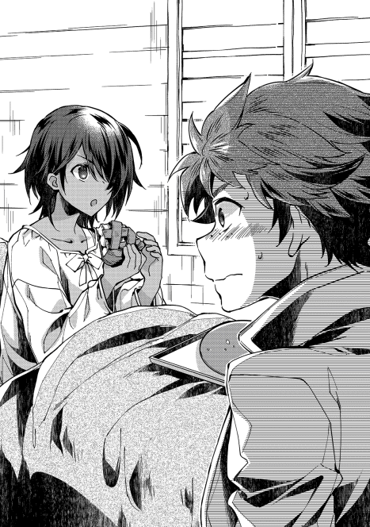
そしてペイスも、この世界でようやく作れたお菓子に手ごたえを覚えていた。人を笑顔にするのが菓子職人。もっともっと、お菓子を作れるようにしなければと、決意を新たにするのだった。
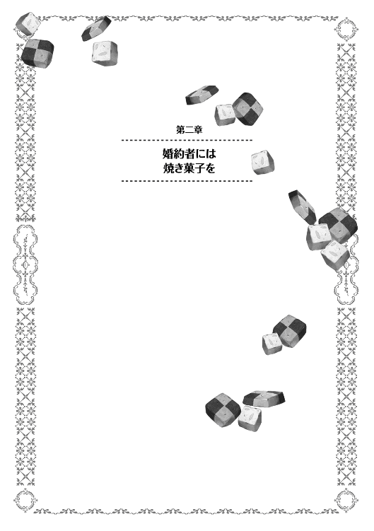
南大陸の中央部に位置するプラウリッヒ神王国は、大陸でも有数の大国である。
戦争の絶えることのない南大陸にあって、十三代目を数える現国王。名をカリソン=ペクタレフ=ハズブノワ=ミル=ラウド=プラウリッヒという。親しい貴族はラウド陛下と呼ぶが、更に親しい友人等はカリソンと呼ぶ。一般ではプラウリッヒ国王陛下と呼ぶのが正式呼称。彼の治政は善政と評価されており、また大した争乱も起こさぬ外交姿勢は近隣諸領の評価も高い。後世の歴史家が彼のことを記すなら名君と評する所ではあるが、そんな現国王が即位する直前。丁度二十年前には、実は国家存亡の寸前にまでなったことがある。
当時、まだ成人したばかりのカリソン第一王子と、幼い王子・王女を残し、十二代国王が崩御。この機に乗ぜよと、隣国三ヶ国が互いに同盟を組んで襲い掛かってきたのだ。若いを通り越し、幼いとまで表現された第一王子では、国内が上手く纏まるわけもなく、また、当時の大貴族であり公爵位を持っていた十二代国王の弟。王子からすれば叔父に当たる人物までが外国と手を結んで謀反。
国家の重鎮まで敵方に付いた上での、三方からの侵攻。何度か迎撃を試みるも全て失敗に終わり、王都のすぐ近くまで敵軍勢が襲い掛かってきた。敵軍総数二万を超える大軍勢を、王都近郊の平原で迎え撃つことになったのだが、その時の王軍総数は千にも満たなかったという。
この時、騎士爵家の従士として王軍側にいたのが、カセロール=ベニエ。当時十九歳の貴族号を持たない若者。敵軍が夜に寝静まった頃合いを見計らって、夜襲を単独で敢行。事前の超遠方からの観測を基に将軍宿舎のみを襲い、大将首に加えて将軍首を四つという大手柄を立てる。
いきなり上級指揮官の大半を失った敵軍は混乱。それを見逃さずに急襲を掛けたカリソン王子の決断は、今でも英雄譚で語られる武勇伝である。更に驚くべきは、敵方に付いていたはずの自国貴族を王子はその場で吸収し、逆侵攻を敢行。襲撃した側も、主力が留守の上に突然の反攻に対処もできず、結局襲ってきた三ヶ国とは、やや神王国有利な条件で講和となった。
かくして敵の侵略を退けた王子は神王国の王位に就いて戴冠。誰もが認める功労者であったカセロール=ベニエに対して、騎士爵位の貴族位と、敵から講和で奪ったモルテールン地方を領地として与えた。山脈と山脈の間の、盆地のような土地であり、山脈を国境線として講和した為に領有権は曖昧であるが、だからこそ戦争での英雄を配することで、これ以上ないほどの抑止効果を持たせる意味があった。
しかし、このモルテールン領はとかく土地が貧しい。ある意味でここを治めろと言われたのは懲罰とも取られかねないわけで、それを良しとしない王は、戦後の空っぽの金庫を絞る様にして大金を与える。プラウリッヒ金貨にして千枚という大金であり、一般の戦後報奨金が子爵でも金貨二十枚であったことを鑑みれば破格である。
この報奨金を元手に、モルテールン領の開発は始まった。石くれを根気よく除き、岩の如く固まった地面を掘り返し、収穫の見込めない最初の数年は全て報奨金からの持ち出し。苦労の連続であったであろうことは、誰の目にも明らかだった。何年か後に、モルテールン領の経営が軌道に乗り始めた、との報告を聞いた国王は、ことのほか喜んだという。
しかし、如何に大金といえども、使えば減るという原則は変わらない。世の中では回り持ちの金であっても、手元から出て行けば無いのと同じ。世間とは、かくも世知辛くできている。とりわけ、戦争などをやった時には出て行くものは極めて大きい。敵から回収できるものがあればよいが、そうでなければ出ていく一方である。
現状、モルテールン領の金庫は季節よりも一足早く冬の様相を呈していた。
「金が無い」
「大将、それはさっきから言ってることです。それをどうしようかって話し合いでしょう」
モルテールン領の中で、最も大きな村はザースデン。領内の人間は本村と呼ぶ村であり、現状の人口はおよそ百三十人強。西の村と呼ばれているコッヒェンの村と、東の村と呼ばれているキルヒェンの人口を丸抱えしているからだ。本村そのものの人口は、およそ五十人強。人数が曖昧なのは、戸籍管理がザルである為だ。徴税単位が家毎なので、各家に何人いるかというのが非常に流動的なのだ。これはどこの領地でも同じで、モルテールン領はまだ戸籍管理がしっかりしている方だ。
その本村で最も大きい屋敷、と言えるのが、モルテールン領主館。カセロールやペイスが住む家であり、実はシイツの部屋もこの館に一室設けてある。部屋数だけは無駄に余っている為だ。そんな館に、領内では珍しく、ソファーが設置されている部屋がある。俗に執務室と言われている部屋であり、騎士領内の面倒事は、大抵がこの部屋の中で話し合われる。
現在、この部屋にいるのは三人。領主たるカセロール、領主補佐の腹心である従士長のシイツ、そして次期領主となるペイストリーの三人。
世間一般で比較したとしても、彼ら三人は賢い部類の人間に入る。文字の読み書きと算術の加減算でもできれば博識とされる世間にあって、彼らは軍学から経済論まで議論できる。三人寄れば文殊の知恵とも言う。領内外には日々問題が発生しているわけだが、三人が議論を深めれば、大抵の問題は解決の糸口程度は掴めるもの。少なくとも今まではそうだった。
だが、今回の問題は解決の糸口すら見つからずにいた。すなわち、賊襲撃に伴う支出の捻出、という問題である。
とりわけ今回は、二つの村を閉鎖している。埋めた井戸を掘り返すのにも人手と手間と金が要るし、潰した家を建て直すのにも費用と時間が掛かる。領内に木材資源が乏しい為、外から輸入しなければならないこともコストプッシュ要因だ。畑が無事だった本村はともかく、他の東西二村の住民には冬を越す食料を用意してやらねばならないし、改めて畑の補修もせねばならない。金が幾らあっても足りないとは、今のような状況を指す。
「返す返すも、賊の頭目を逃がしてしまったのが痛い」
「それを言っても始まらんが、確かに捕まえていれば話は違っていたな」
他領の領主や外国が相手の戦争であれば、講和時に賠償金を取ったり、捕まえた騎士や貴族の身代金等で戦費を捻出できたりすることは多い。戦争は、勝てば儲かる。費用対効果が抜群の魔法使いなら、それだけでひと財産の稼ぎになることも珍しくない。だが、今回は盗賊との争いであった為に、その手は使えない。
盗賊退治の場合、戦費の回収方法は大きく三つある。盗品回収、懸賞金、治安回復効果の波及だ。
盗品の回収は、素人目にも分かりやすい戦利品だろう。盗賊が溜めこんでいる財宝であったり、身に着けている鎧兜であったり、集めた馬やロバ等の家畜であったり、奴隷に堕ちる賊の販売金であったりという、即物的な金品を手に入れるわけだ。ペイスなどが知っている現代日本のおとぎ話でも類例に事欠かない。桃太郎が鬼が島から分捕りものを持ち帰っていたり、アラビアンナイトに出てくる四十人の盗賊が、開けゴマの合言葉と共に金銀財宝を隠していたりといった話だ。これは短期的かつ即効性のある経済効果と言える。
しかし今回の賊は、一度伯爵領で放逐された上での迎撃である。仮に盗賊どもが財宝をしこたま溜めこんでいたであろうと仮定した所で、その財宝は伯爵領に隠してあったはずである。大半の財産は、すでに伯爵の懐に入っている。逃げ出した賊共は、大した財産を持っていたわけでもなく、鎧やら剣やらは、即褒賞として下賜されてしまっている。
懸賞金というのは、賊の首に懸かる賞金のことである。盗賊に家族や友人を殺された人間が懸けたり、被害に遭っている村人や町民が領主を頼らずに対策しようとしたり、或いは諸事情から手が回らない領主がコストを掛けてでも何とかしようと考えたりした場合に懸けられる。この世界などでは、これを稼ぎの柱として生計を立てる連中がいたりもする。賞金稼ぎと呼ばれる傭兵の一種で、少人数の集団でこれらの賞金を稼いで回る。その大半は腕利きであり、魔法使いであることも多いと言われる。今回の賊に関しても、サルグレット男爵とブールバック男爵の跡目からは、仇討ちの意味もあって高額の懸賞金が掛けられている。首検め等の手続きに長ければ半年近くの時間が掛かる為、即効性という面は乏しいが、短中期的にまとまった額が手に入るとなれば、馬鹿にできない経済効果がある。
だが、先だって頭目を逃がしてしまったのが痛恨事だ。懸賞金などは首領の首に懸かる場合がほとんどで、今回捕まえた賊の身柄などでは精々がまとめて銀貨一枚になるかどうか。もし逃がさずおけたならば、レーテシュ金貨二百枚ぐらいは期待できた。プラウ金貨でも百は期待できたはずであり、逃がした魚はとびっきりにでかかったわけだ。
治安の回復、というのは長期的視点からの経済効果になる。盗賊が荒らしまわっていた被害がなくなるというのは、治安という面でもかなりの効果が見込める。必然、安心安全な領地に一歩近づく。治安の安定した領地であれば、農民は安心して畑を耕せるし、商人は心置きなく商売に邁進できる。落ち着いた環境というのは、人が増える要因。人が増えれば人手も増える。人手が増えれば、領内の生産力は増大する。結果、その領地はより豊かになっていくだろう。
しかし、今現在モルテールン領が直面しているのは、将来貧しくなる危険ではない。今、手元に金が無い、という問題である。将来たらふく食えることよりも、目の前に芋の一つでもある方が嬉しい状況なのである。何を置いても先立つものがなければ、早晩モルテールン家とその領民は揃って干上がってしまう。
カセロールは、悩ましげに問いかける。それに答えるのはシイツ。
「借金をするわけにはいかないか？」
「貸し手がいないのが問題だな。ここら辺の近領は、軒並み冷害に苦しんだ。余裕のある領地など無いし、隣などは賊に手酷くやられてうちにまで借金の申し込みをしてきたぐらいだ。とても借りられん。遠方の貴族となればツテが無い」
「王都の宮廷貴族共に借りに行くというのは？」
「あいつらこそ金に汚い連中だ。借りた金貨一枚に百枚の利息が付くぞ。今は何とかなったとしても、いずれ破綻する。悪手だな」
宮廷貴族とは、王家から役職に任じられている貴族を指す。一応は領地も持ってはいるが、所領として私有を認められている領地貴族と違い、その大半が王家所有地や王領の代官職に付随する領地である。収入の大半が所有地からの税収入である領地貴族に対し、宮廷貴族は預かる領地からの収入は無い。代わりに役職に応じた給金が支給されるが、その額はとても領地貴族には及ばない。中には大領を持つ領地貴族が役職を兼任することもあるが、総じて金に汚いとされている。元々は領地貴族で領地を継げない子弟の有効活用という意味があったのだが、世襲を重ねるうちに利権化し、中には公然と売買されることもあった。
しばし無言が続いたのち、黙っていたペイスも思いついた意見を口にする。
「母様のご実家や、父様のご実家にお力をお借りするわけにはいかないのですか？」
「私らは、既にどちらの実家とも縁を切っているからなあ」
カセロールの実家はベニエ騎士爵家。王都からはそれなりの距離があるが、小さな領地を預かる、由緒正しい貴族家である。先代の、つまりはペイストリーの祖父が存命であった時であれば、力を貸してくれたであろうことは疑いようがない。カセロールは戦功を挙げ、名を馳せた自慢の息子である。事実、モルテールン領開拓初期には、有形無形の援助をしてくれた。
だが、先代も亡くなり、代が替わってから後が酷かった。カセロールからすれば腹違いの兄。ペイスからすれば伯父にあたる当代ベニエ騎士領主は、援助であったはずの支援を、法外な利息を付けた上で返すように通告してきたのだ。結局は貰った分のみを返すことで決着が付いたのだが、そこに至るまでのすったもんだは、縁切りを決断するのに十分すぎるものであった。金を貸せと言いに行った所で、聞く耳など持っていないだろう。
ペイストリーの母アニエスの実家とも、既に縁を切って長い。貧乏を通り越して不毛な領地に娘を嫁がせたい親はおらず、カセロールとの結婚には猛反対された。駆け落ち同然に結婚したものであるから、アニエスの実家とは疎遠になって十五年以上経つ。孫の顔すら碌に見せていないのに、今更カセロール達が顔を見せた所で、内容が金の無心であれば追い払われるのが関の山であろう。
「とりあえずは、伝手からの借財に、賊の身ぐるみと身柄を売り払うことで糊口は凌げますが......」
「できるだけ早めに、金策を見つけねばならない、か。まあ、あまり考えすぎても始まらん。一度頭を冷やせば良い方策を思いつくかもしれんし、今日はこのぐらいにしておこう。ペイスはもう下がって良い」
「はい父様。それでは失礼します」
結局、有効な金策も思いつかないまま、議題は次の話に移っていった。
◇◇◇◇◇
ペイストリーが小さい時から続けている日課が二つある。一つは当然ながら菓子の研究とその実践。もう一つは、剣術の稽古である。
命のやり取りが現代日本よりも身近にある世界において、身を守る術を持たない者はかなり弱い立場に立たされる。現代でも視力の弱い人間が、眼鏡やコンタクトといった不便を甘受せねばならないのと同じで、この世界で自衛手段を持たない者は、護衛か、或いは引きこもる不便を甘受せねばならない。経済的な負担を始め、行動の制約は大きい。それ故、剣を鍛えることは、自由な行動には必須の条件であり、ペイスもまた日課にしている。
だが、まだまだ体が成長途上の七歳児。剣を振ることよりも、まず先にしなければならないのが基礎体力作り。その一環として、次期領主の少年が好んでいるのがランニングだ。本村の周りを、自分のペースで一時間ほど走る。
「若様ぁ、今日もご精が出ますね」
「御婆ちゃんも、腰を痛めないようにね」
「何の、まだまだ若いのには負けませんよ。へぇっへぇっへ」
今日の彼のコースは、西から時計回りに走るルート。選んだ理由は、視察の意味もあるからだ。途中、何度となく声を掛けられるのは、少年がそれだけ頻繁に顔を見せているということでもあるし、慕われている証でもある。
走り出してまず見えてくるのが、広大な畑。見渡す限り、と言えるほどに広々としている。村の周囲にある畑は、大きく三つの区分別けが成されており、その内の一つに今は豆を刈り取った後の寒々とした光景が広がっていた。
モルテールン領は、昔はこの時期であれば土地を休ませるか、秋麦を撒いていた。土地を春小麦、休閑地、秋麦、休閑地、と繰り返す、他領と比べるといささか非効率なローテーションで回していたのだ。偏に雨が少なく、土地が痩せ気味であった為ではあるが、ペイスが色々と試してみた結果、今では春に大麦や燕麦、秋に豆、休閑地に稗やエノコログサを撒いて鶏等の家畜を飼う、というローテーションになっている。一昔前に比べて食料の生産量は二倍弱になっているのだから、ペイスの目指す豊かでお菓子作りに専念できる環境づくりは着々と進行中と言える。
豆を育てるようになったのは、土地を肥えさせる為である。大豆に似た豆を育てているが、下手に痩せた土地で麦を育てるよりも、遥かに収穫倍率が良い。寒さに強い分暑さには弱いが、冬麦の代替としては役に立つ。何より、この豆は低木に分類されるものであり、精々が親指ほどの太さとはいえ、麦とは違って収穫後は薪になる。森林資源が乏しい領地にあって、貴重な燃料として生活に役立つようになってきた。食料の増産と、薪の輸入問題を解決した豆作の導入は、モルテールン領の収支改善に大きく役に立った。
ペイスは、豆畑を走りながら、何か良い金儲けのアイデアは無いものか、と考える。薪の代金を浮かせる豆作のアイデアも、こうして走っている時に思いついた。それ故、淡い期待を込めて考えながら走っている。
しかし、世の中そうそう甘いものではない。そう簡単に金儲けのアイデアが思いつくのであれば、今頃モルテールン領は大金持ちの集団になっているはずだ。
「お〜い、ペイス〜」
何も思いつかないまま一時間弱ほど。ランニング中のペイスを呼び止める声がした。
「マルク、頑張っているみたいですね」
先日の落ち込みから立ち直ったマルクは、ペイスから改めて剣を貰った。いつか従士になって役に立てるようにと、熱心に剣を練習するようになっている。
今日も今日とて、一生懸命に剣を練習していたらしい。走ってきた少年と同じぐらいの汗を、呼び止めた少年も額に浮かべている。それが何よりも熱意を表している。
ペイスはマルクから布を借りて汗を拭きつつ、マルクに声をかけた。
「今日はお嫁さんの方はいないんですね」
「俺とルミはまだそんなんじゃねえ!!」
「誰もルミのことだとは言っていませんよ。ふっふっふ」
「ぐわ〜性格悪ぃ」
「生まれる前からこの性格ですからね」
先日の一件以来、いつも一緒にいた悪ガキーズはバラバラに行動することが増えた。無論、揃えば仲良く悪戯っ子の面目躍如の働きをするのだが、頻度は目に見えて減ってきている。ペイスは、友人達の成長を嬉しく思う反面、著しい成長を見せる二人に嫉妬も覚える。苦難を乗り越え、一皮剥けたと表現するべきなのだろう。
「お前も走り込みは終わりだろ？ 村の様子はどうよ。何もないよな？」
「ええまあ、豆木の刈込も進んでいるようでしたし、本村には問題なさそうですね」
友人ともなれば、走り込みの日課については承知しているらしい。ランニングコースまで分かっているのは、親友ゆえである。
友達の気楽な問いに、ペイスも軽めに聞こえるよう気遣って答えた。マルクはペイスよりも年上とはいえ、まだ十歳そこそこ。実は金策で困っています、などとは言えるわけもないのだ。本村には、という曖昧な答えになったのは、その表れと言える。
「じゃあ手は空いているよな。ちょっと相手してくれよ」
マルクが最近特に剣術に熱心なのは周知のこと。従士の地位を継ぐと公言しているので、周りの大人もそれを応援していた。いざ戦争となれば主要戦力となる従士の立場。剣が使えて得になりこそすれ、損になりはしない。
本来は父であるコアントローから教わるのだが、今現在彼は閉鎖した村の復興作業の陣頭指揮を任されている為、隣村に出張中だ。従士の肩書があるものは領内に三人しいないとはいえ、正式な従士である以上、こういう時にはとにかく忙しい。マルクが一人で素振りをしていたのはそれが理由でもある。しかし、幾ら張り切っているといえども、子供とは飽きっぽい生き物。素振りだけでは退屈さも覚えるのは当たり前のこと。丁度良い相手が来れば、手合せでもしようじゃないかと誘うのは無理もないことだ。
「良いですよ。ちょっとだけならですけど」
「よし、そいじゃあそれ使えよ」
ペイスが目線を移せば、そこには手作りの木剣。細い板切れのようなものに、持ち手の所だけを削るようにして作った練習用の剣だ。領内ではやや貴重品でもある。
ペイスがカセロールから剣を習う時は刃のある真剣を使い、稽古をしている。これは、ペイスの技量が十分実戦に使えるレベルであるのも理由の一つではあるが、カセロールの教育方針も理由の一つである。真剣を使った技量は真剣をもって初めて学べる、と考えるスパルタ教育を行っているのだ。剣道を真剣で教えるようなものであり、指導する側が卓越した技量を持っていなければ、練習で死にかねない荒行。掠るだけでも怪我をするわけで、特訓の名前は伊達ではない。
そんな虐待に近い修行をする親は例外中の例外であり、普通は、子供のうちは大怪我をしないように気遣った練習から始める。木剣や、刃引きをした剣を振るうのも、その練習の一環だ。
「っすりゃ!!」
ペイスが剣を手にしようと身を屈めた瞬間。いきなりマルクが剣を振り下ろす。清々しいほどに不意を突いた奇襲である。
これは、マルクが父コアントローから叩き込まれた教育方針だ。騎士の家系であるペイスは、騎士として王道の正統派剣術を習っているが、マルクは違う。より実戦派というべき剣術。というより、剣も使う総合戦闘術、と呼べるものを叩き込まれているのだ。従士として幾多の戦場へ参戦したコアントロー。それによって磨かれた、戦場の為の剣である。
その教えの一つ。常在戦場。不意打ちは、される方が悪い、というものがあった。不意打ちが汚いだのなんだの言った所で、されてしまって殺されてからでは文句も言えない。どうすれば不意打ちを狙えるか。それをしっかり自分でも考えれば、逆に相手がしてきそうな不意打ちも分かってくる。故に、練習であれば不意打ちだろうがなんだろうが、一本入れた者勝ち、というのがこの場における手合せのルール。
「甘いですよっ」
カン、と剣の当たる音。ペイスの手元にあったのは、短い豆の木だった。軽くマルクの木剣を受け流し、改めて木剣を拾った銀髪の少年。その顔には、軽く笑みが浮かんでいた。
「っち、汚えぞ、剣以外を使うなんて」
「不意打ちしてきたマルクに言われたくありませんよねぇ」
不意打ちだろうが、目つぶしだろうが、金的だろうが、闇討ちだろうが何でもアリの組手。この取っ組み合いは、ペイスにとっても新鮮で、かつ勉強になるものであり、好んでいる。
正統な剣術の試合では、ペイスの方に一日の長がある。事実、面と向かって礼から始まる剣術の試合では、ペイスはマルクに負けたことがない。しかし、この手の実戦手合いは、一本取られたことが両手で足りないほどある。小さい子を利用した罠、砂を握りこんでの打ち合いと目つぶし、暗器のようなものまで利用したことがあった。根っからの悪戯坊主の悪ガキであるマルクは、発想がとても柔軟であり、何かしでかす度に驚かされるのはペイスの方だ。してやられたと思ったことも多い。ある意味でマルクも天才と言える。方向性が悪戯にのみ向いているのがとことん惜しいが。
「いくぜっ」
幼いながらも雄々しい気合と共に、真っ直ぐに突っ込むマルク。そこには工夫も技術もない愚直さのみ。不意打ちをした後での、考えなしの吶喊。
何か企んでいる。そうペイスが考えるのも当たり前と言えば当たり前。マルクは、何度か突きを払われながら、尚も執拗に真っ直ぐな突きと突進を繰り返す。四度目、或いは五度目だったか。くり返しの単調作業で、もう一度また剣が払われた。その瞬間。
「なっ、剣が」
「勝機だぜ!!」
ペイスの手に持っていた木剣。それが持ち手の根元から折れた。払おうとしていた矢先にそれである。体勢は見事に崩れている。
恐らく、木剣に仕込がしてあったに違いない。が、それを卑怯だと罵った所で始まらない。戦場では、剣が折れるなどよくあること。手元から剣が離れた際、落ちている剣を拾って使うなどもごく当たり前の行動であり、その剣が折れた所で敵が待ってくれるはずもないのだ。
ここが勝負所だったのだろう。マルクはさっきまでよりも一段強い踏込みの後、捨て身の突っ込みを敢行する。渾身の一撃。どうあってもペイスに避ける手段は無く、受ける術は無い。そうマルクが確信したのは正しい。明らかに崩れた体勢。手元には折れた武器。
だが、ペイスが咄嗟に取った行動は期待を裏切った。
「【転写】!!」
ペイスが魔法を使った。その須臾、マルクの剣が根元から折れる。軽く流されるままに、あさっての方向に飛んでいく剣先。くるくると回りながら飛んでいくそれを横目に、マルクは手元を見る。残されていたのは、握っていた柄だけだった。渾身の突きは、見事に躱されてしまった。
呆然としたマルクに、ペイスが声を掛ける。
「傷の転写が武器にも使えると分かったのは、良い感じですね」
「やっぱり、魔法を使うのはずるくないか？」
「戦場では、何があるか分からないものですよ」
「ちぇ、今日は一本取れると思ったんだけどな」
「良い線でしたが、引き分けですね」
一応は剣術の勝負ということになっている。なので、最後は必ず剣で相手を攻撃しなくてはならないのが二人のルール。木剣がお互いに折れてしまった以上、今日の所は引き分けにせざるを得ない。
「マルクも強くなりました。特に最後の突きは見事です」
「だろ、俺もさ、相当に筋が良いってこないだお館様に褒められたんだぜ」
「父様に？」
「ああ、父ちゃんの代わりにちょと見てやるって言われて、剣を見てもらった。見てろよ、いつかお前から、正々堂々一本とってやる」
「期待していますよ。っと？」
やや離れた場所から、ペイストリーとマルカルロを呼ぶ声がする。遠くからでも良く通る声だが、声変わりとは縁遠いその声を、二人が聞き間違えることはない。
「ペイス〜、マルク〜、二人して何してるんだよ〜」
「ルミ、走ったりして、傷はもう大丈夫なのですか？」
駆け寄って来たのは、一人の少女。服装から、髪型から、言葉づかいから、日頃のイタズラまで。何処からどう見ても男の子ではあるが、顔立ちそのものはれっきとした女の子のルミニート。将来は美人になると、もっぱらの噂である。
「もう動いても良いって爺ちゃんも言ってたから遊びに出てきた」
「そうですか。それは何よ......っ」
何よりです、と言いかけたペイスの目線に、映ったのは剣だった。報奨で貰った剣のはずで、それを持っていること自体はおかしくない。が、その柄に手をさりげなくかけている様子が不自然。いや、そんな理屈よりも先に、第六感が警鐘を鳴らした。
「ペイス、避けろ!!」
マルクの悲痛な叫び声。その声と、少女が抜刀するタイミングは、驚くほどに揃っていた。
「ぐはっ」
そしてペイスは、意識を失った。
人が目覚める時は、水泡に似ている。水底から、ゆっくりと上がっていく。ゆらゆらと揺蕩いながらも、決して戻ることのない浮遊の時。やがて水面に浮かんだ泡は弾ける。それも、突然に。
「気が付いたか」
はっと飛び起きたペイスが、まず感じたのは鈍い痛みだった。後頭部にずきずきと響く、酷く重たい痛み。
「僕はどれぐらい気絶していました？」
「半鐘ぐらいじゃないかな。そんなに長くない」
「いてて、今日はまさか二人がかりでとは......マルクも、ルミも手の込んだことをしますね」
ペイスの指摘に、マルクが得意げに胸を張る。
「へへん、戦場では、卑怯とも言ってられないぜ」
「おう、爺ちゃんもそう言ってた。一人より二人の方が生き残る。生き残った奴が偉いってさ」
今の状況を単純に理解するなら、悪友二人がかりの手に嵌められた、というのが適当である。ルミが剣をあえて避けさせ、隙をついてマルクが後ろから。位置取りから、タイミングから、全てが狙っていたとしか思えない絶妙さ。
「今回はやられましたよ。でも、やっぱり二人がかりってのはずるすぎませんか？」
「でもよう、ペイスは魔法が使えるじゃねえか。俺たちは魔法なんて使えないしさ」
「ルミ、言葉づかいを直しなさいといつも言っているでしょう。それに、聖別の儀で魔法が使える様になるかもしれないでしょう？」
「あ〜無理無理。うちに本聖別を受ける金なんて無いし、そんな夢みたいな話は期待しないことにしてるんだよ」
「現実的ですね」
「博打はしないのが賢さってもんだよ」
ルミは魔法を既に諦めている。そういう人間は決して少なくはないし、珍しくもない。金が掛かる、廃人になる危険がある、教会に監視される、危険が増える等々、理由は人それぞれであるが、分からなくもない。手に入れれば間違いなく力にも金にもなる。が、それが必ずしも幸せになれることだとは限らない。
「で、ペイスは何を悩んでいたんだ？」
「そうそう、俺らに隠して、ムズ臭いぞ」
「馬鹿、水臭いだ」
「そう言ったじゃねえか」
ペイスの胸は、その言葉にドキリと驚いた。領内の経営について悩んでいることが、ばれたのかと。
「何のことでしょう」
「ペイスは隠し事が下手だな。普段ならこういう時は『何もありません』とか言ってるのに。それじゃあ何か隠しているって自白してるようなものだ」
隠し事が無いなら、何のことか分からないと答える。ペイスは、下手に金策で悩んでいた為に、それがばれたのか、と深読みしてしまったようだ。
「まあ、ばれてしまっては仕方ありませんが、悩んでいたのも事実です。二人にもちょっとアイデアを出してもらいましょうか」
「おう、何でも聞け。手伝ってやる」
「そうそう、友達だからな」
持つべきものは友人。裏表なく、心から助けてやろうと考える優しさに、絆されない人間は根性がひねくれすぎている。まだそこまでひねくれていないペイスは、素直に二人にアイデアを考えてもらうことにした。勿論、領内の金策が切迫していることは隠し、単にまとまったお金を稼ぐアイデアが無いか、と尋ねる形で。
「畑を広くするってのは駄目なのか？」
「確かに、まだまだ領内には開発の余地はあります。が、それにもまず先立つものと時間と人手が要ります。長期的に進めている途中ですから、今日明日にでもさあ広げよう、と言っても無理ですね」
「じゃあさ、このあいだのボンカパイってのを街で売るってのはどうだ？ あれ旨かったから、また作ってくれよ」
「お土産でボンカが手に入れば、また作っても良いですよ。ですが、あれを売ると言っても精々が銀貨一枚〜二枚と言った所でしょう。薪や麦が比較的割高なうちの領地の特産とするには、利幅が少なすぎますし、下手をすれば赤字です。ボンカを仕入れる手間も掛かりますし。作るのは楽しいですが、儲けにはならないでしょう。というより、ルミはまた食べたいだけでしょう」
「あ、バレた？」
バレるも何も、目を輝かせてパイを語れば、そこにあるのが不純な動機であるのは自明のこと。今にもよだれを垂らしそうな様子でパイについて語るのであれば、自分が食べたいからだろうと察するのは容易である。
「じゃあさ、ペイスが俺らに魔法を教えるってのはどうだよ。魔法が俺らにも使える様になれば、でかいことができるだろ」
マルクは、ルミとは違って魔法に夢を見るクチらしい。それ故に魔法につられて賊に騙されたわけだが、それはそれとして、魔法に対する憧れというのは捨てがたいようだ。世間一般の男の子など、大抵はこんなものだ。夢見がちな大言を吐き、それでいて叶えられると無根拠にも信じる。そしていつか現実に打ちのめされて、大人と呼ばれるようになっていくのだ。
「マルクは成人にはまだ何年か早いです。それに、教えたからと言って覚えられるものでもないでしょう」
「だよなぁ。ちょっと言ってみただけだよ。でもさ、魔法が使えたら俺も金持ちになれっかなあって。んでさ、貴族様になって、美味しいものを毎日食うんだ」
「無理だね。仮に一万歩譲って、奇跡的にも魔法が使えるようになったところで、使いこなす頭が無い。火を出せても、自分の火で焼かれるね。ペイスも、この馬鹿の寝言は気にしなくても良いさ。それより、結局俺はペイスの魔法を見られなかったからさ。どうせなら魔法ってのを良く見せて欲しいな。何か思いつくかもしれないし」
「おいこら、馬鹿とはなんだ馬鹿とは」
「毎日毎日、剣ばっかで計算の一つも覚えないのは、馬鹿っていうんだよ」
「んだとこらぁ!!」
「はいはい、じゃれるのもそこらへんにしておく。まあ魔法が見たいって気持ちは、僕も分かります。確かに父様の魔法を初めて見せてもらった時は感動したものです。良いでしょう。でも、見せるだけですよ？」
「やったね」
三人寄れば何とやら。ペイスは、二人との会話で金儲けのヒントが思いつきそうな感覚を掴んだ。確かに、魔法使いは金持ちが多いと言われている。逆に言えば、金を儲けようとするなら、魔法を使った方法があるのではないか、と考えて。そこに儲かる手がありそうな気がしてきた。
「じゃあ、基本的な所から。二人とも、地面に好きな絵を描いてみてください」
「何でもいいのか？」
「はい」
折れた剣先や豆の木の棒を使い、地面に絵を描き出す二人。マルクは独創的な絵を描く。何の怪獣か分からないような生物に、人らしき物体が何やら光線チックな物を照射しているっぽい絵を描く。
「何です、これ？」
「へへん、俺が魔法を使えるようになった時の活躍の場面だ。ドラゴンを魔法でズババ〜とやっつけるのさ」
ペイスからすれば、ミミズに足が生えたのかと思ったものだが、口にしないぐらいの気遣いはある。子供の落書きとは、いつの時代も変わらないものだと感慨深い。
それに比べると、ルミの絵は若干丸みがある。絵柄自体は不慣れな感じがありありと出ているが、何とかリンゴっぽい果物は見て取れた。その横に、皿らしきものに山積みにされた団子のようなもの。見た感じは泥団子だ。
「ルミ、これはもしかしてボンカですか？」
「へへ、当たり。上手いもんだろ」
「この隣のは何ですか？」
ペイスの問いに、ルミは無い胸を張って答える。
「勿論、この間のボンカパイに決まってるじゃん。見れば分かるだろう」
「俺、石ころか何かかと思った。下手糞だな」
「んだと。マルクの絵こそ、蛇が這いずり回った絵にしか見えねえだろうが」
「うるせえ。このドラゴンの格好良さが分からねえのかよ」
「はいはい。じゃあ、ルミご所望の魔法の実演、いきますよ〜」
魔力の高まりは、素人でも分かる。この世界の人間ならば、誰しも多少なりとも魔力があるからだ。強い磁石や擦った下敷きが近づくと、何となしに分かるようなもので、その反応は持っている魔力が強ければ強いほど顕著になる。
ざわつくような肌の感覚に、マルクとルミは期待を膨らませる。とりわけ少女の方は、賊と戦ったというペイスの魔法をよく見ていない。暗い中での夜戦であったし、その後も身体を切られて寝込んでいたからだ。好奇心を瞳一杯に浮かべて、自分の絵を見つめる。
「【転写】」
ペイスが魔法を使ったその時、悪童二人は自分の手に違和感を覚えた。熱いとも、冷たいとも言えるような不思議な感覚。
「お、すげえ。手に絵が写った」
手の甲を見れば、自分達が書いた絵がそれぞれの手に描かれていた。日焼けのような、若干周りと色が違う線で、描いた絵そのままに転写されている。
「うわ、本当にペイスは魔法が使えるんだな」
「いや、ルミは信じてなかったのですか？」
「俺は自分の見たものしか信じない」
面白そうに、手の甲に描かれた日焼けの絵を、見つめるルミ。手のひらを返してみたり、抓って見たり、擦ってみたりと、色々と楽しげに遊んでいる。
「まあ刺青ではないのですし、表面に絵を転写しただけなので、日焼けと同じで二〜三日もすれば消えます。兄妹に見せてあげると、喜ぶでしょう」
「へへ、爺ちゃんに見せてみよ。あ、なあペイス」
「何です？」
「どうせなら、逆はできないのか？」
ふっと思いついたように言うルミの言葉に、ペイスは引っ掛かりを覚える。
「逆とは？」
「何かを描いたものを転写するんじゃなくてさ、何かを転写して描くのさ。例えばこの手の絵を地面に描くとか、人の顔を地面に描くとか。それができると面白いかなって思って」
その言葉を聞いた瞬間、ペイスは思い切り少女の手を掴んだ。
「それです!!」
顔は晴れ晴れとした笑顔である。母親譲りの美麗な顔での満面の笑み。思わずルミは赤面してしまう。突然両手を掴まれた方は戸惑う。ペイスが掴んだ手を、振り払うようにして下ろし、一体何事かと問い詰める。だが、夢に繋がる良策を思いついたペイスのテンションは、高目いっぱいでメーターを振り切っている。
「そうです。それですよ。ルミは天才です。良いアイデアです。これで上手くいきそうなアイデアを思いつきました。早速、父様の所に行ってきます。それじゃあまた明日!!」
「お、おいっ」
走り去る銀髪を目で追いながら、残された二人は首を傾げる。子供とは思えない速度で走る少年は、思い込んだら一途なのだ。ああなると、途中で止めるのは難しい、と幼馴染の二人は理解した。
「ところでルミ」
「ん？」
「お前、まだ顔が真っ赤だぞ」
「うるせえ!!」
少女の拳が、少年の腹に突き刺さった。
◇◇◇◇◇
モルテールン騎士領主邸では、三人の大人が議論を交わしている。当主である騎士爵に、その腹心。そして、騎士爵の妻であるアニエス＝ミル=モルテールン。議題の大筋は金策についてであるが、その主題は若干ずれていて、アニエスの実家であるデトモルト男爵家への援助申込みの可否についてだ。
「やっぱり、私の実家に頼るのは難しいと思うわ」
「御父上ではなく、兄君にこっそり、というのもか」
「ええ。お兄様はお父様に厳しく教育されていますから、隠し事はされないでしょう。それに、兄様は今叔父様の補佐をされているはずです。ご自身で動かせる金銭は、多くないでしょう」
「そうだな。いや、分かってはいたのだが、改めてお前の口から聞くと、な」
はあ、とため息をついたのは誰だったのか。音が最低二つは重なっていたのが、議題の困難さを物語っている。
「こういう時に、坊の頭に期待したいところなんですがねぇ」
「幾ら我が息子といえど、無から有は作れん。ペイスに期待しすぎるな、と言ったのはシイツ、お前だろう」
「そうは言っても、ここまで手詰まりだと、期待もしたくなるじゃねえですか」
「気持ちは分かるがな。そうそう息子に頼ってばかりも......」
バン、と扉の開く音。咄嗟にカセロールとシイツは剣に手を掛ける。妻を庇う様子を見せるカセロールは、その後に飛び込んできた人物を見て警戒を解く。
「何ですかペイスちゃん、ノックもせずに。御行儀が悪いわよ」
「すみません母様。でも、良いアイデアが浮かんだので飛んできたんです」
「良いアイデア？ 例の件か」
「はい」
次期領主たる少年が部屋に飛び込んできた。その時点で、シイツとカセロールは議題をぼかした。これは、少年に連れがいた時のことを警戒してである。領主が金欠であり領地運営が赤字である、等という話が広がれば、ただでさえし辛い金策がより一層難しくなってしまうからだ。誰だって、危ないと分かっている所に金を融通するのは嫌がる。投資だろうと借款だろうと、するなら余裕のある所にするのが常識なのだから。晴れの日に傘を貸し、雨の日に傘を取り上げるのは、金貸しのセオリー。この手の信用に関わる噂というのは、一度煙が立ってしまえば消火に恐ろしいほど手間がかかるのだ。
しばらく様子を伺い、ペイス以外に誰も来ていないと分かった所で、その場の大人はようやく落ち着いて話を聞く姿勢になる。
「まあ、まずは座りなさい。落ち着いて話を聞こう。今も丁度その話をしていたところでもあるしな」
「はい」
領主であるカセロールの言葉に、腹心のシイツが何も言わずに立ってソファーを空ける。が、そこに座る前に母親に掴まってしまい、ペイスは母の膝の上に座らされてしまう。笑顔の母親から抜け出そうともがくが、所詮子供の力では勝てるはずもない。母は強し。
やれやれ、と言いたげな男衆が改めて全員座った所で、ペイスはさっき思いついたアイデアを話し出す。
「父様、この間ジョゼ姉さまのお見合いについて話しておられましたよね」
「ああ。あの子ももうすでに成人。相手を探すのは親の務めだからな」
「その時、父様は【瞬間移動】が使えますから、姉さまを連れて顔を売ることができました」
「私にとっても娘を自慢して回れる機会だからな」
ジョゼフィーネは五女。ペイスの姉としては一番下の姉になる。女性であれば十三〜十六歳が結婚適齢期と言われる世界にあって、もうすぐ彼女は適齢期を迎える。結婚相手を決めるのは家長の務めであり、本人の希望をある程度汲むこともあるが、基本は家同士の繋がりになる。今回の金策で実家の話が出たように、何かあった時に頼れるのは身内。それ故、姻戚という繋がりは、かなり重要なものになる。貴族同士で争いになった際も、身内が相手の家にいれば話し合いで収まりやすい。逆に言えば、赤の他人と思われてしまえば、いきなり襲われることもあるということだ。
「では、父様のように魔法が使えない親は、どうするのでしょうか」
「そりゃあ、あちこちの社交界に娘を連れて行って、その場で紹介して回るのが一番効率的だな。最善なのは王都での王家主催の夜会か」
社交の場は色々と種類がある。観劇、夜会、茶会、武芸披露、狩猟などなど。とにかく貴族が集まる場には、大抵は社交というエッセンスが垂らされる。その中でも、女性が参加する社交の場は限られている。武芸や狩猟は、騎士を基本とする貴族には嗜みであるが、女子にはそういう荒事をさせないことは多い。必然、お茶会や夜会などの会話がメインとなる社交の場が主戦場となる。
「しかし、多くの貴族。とりわけ僻地や離地に領地のある貴族は、そうそう頻繁に王都に娘や息子を連れて行くわけにはいきません」
「危険もあるし、移動もただではないからな」
ここら辺で、大体シイツもカセロールもペイスの言いたいことが分かって来たらしい。ちなみに、分かっているのか分かっていないのか、それが分からないのが母アニエスである。
貴族が移動する場合、金に羽が生えると言われる。馬車を動かすのにも御者や馬の世話が掛かり、泊る場所もまさか野宿というわけにはいかない。嫁にボロを着せていれば旦那が稼ぎの悪さを噂されるように、みすぼらしい行動はそのまま貴族家の名誉。ひいてはそれを任じた王家の顔に泥を塗る。貴族でございと言わんばかりの身なりの良さそうな連中が通れば、盗賊だのが寄ってくる為護衛もケチるわけにはいかないし、当然それにも費用が掛かる。
「それでも、王家主催の夜会等には、領地貴族はこぞって子女を連れて参列します。それは何故か」
「顔も知らん奴より、見知った相手の方が安心できるからだな。同じ条件の家が二つあれば、顔を知っている方が安心感を持って選べる。当人同士も顔を知っている知己の方が、仲も深まりやすい。どんな奴かも知らん子を、家に迎えるのは、相当に相手の家の格が上なのだろう」
「そこです。逆に言えば、多少なりとも顔を知ってもらえれば、安心感を持ってもらえるということです。それで、こんな物を売りに出向いてはどうかと思いまして」
そう言うと、ペイスは【転写】を唱える。手元に持った板切れに、薄らと人の顔が浮かび上がってくる。
「おお」
「こりゃスゲエ。そっくりだ」
板切れに描かれたのは一人の女性の顔。ここにいる全員が、とてもよく知る顔である。
「あら、これは私かしら。ホント、よく似ているわね。鏡みたい」
ペイスを抱きかかえていた手を片手だけ離し、息子を逃がさないようにしつつも板を手に持つモルテールン夫人。傍から見れば、鏡でも見ているようにそっくりな似顔絵が、まさに鏡映しに描かれている。
カセロールもシイツも知る由もないが、ペイスが考えているのはお見合い写真だ。恋愛結婚が主流となる前は、こういった見合い写真が絶大な威力を持っていたことをペイスは知っている。写真機が出回って、明治期には大流行したとも言われている。顔が全てではないが、風貌や容姿が多くを語るのもまた事実。口で『うちの娘は美人で』と言われるより、写真一枚見せられる方がより多くのことを読み取れる。
「ふむ......」
「父様に僕を連れて挨拶回りをしてもらい、その〝ついで〟にそれとなくこの......見合い写真と便宜上呼ぶものを売り込んでみてはどうかと」
悪くない。とカセロールは思う。彼は、領主として、また一貴族として、自分であればこの見合い写真なるものにどれぐらいの価値を見出すかを考える。安く見積もったとしても、金貨五枚や十枚は出せるはずだ。この魔法を使わずに同様の肖像画を描かせれば、高価な絵具や高い依頼料や絵師を用意せねばならない。それより安ければ、少なくとも絵画程度の需要は確実に有る。
身体の弱い子弟を抱える親は多い。長旅に耐えられず、領地に籠りがちな子供を抱えていれば、本人が出向かずとも本人の顔を売り込める手段は喜ばれる。社交の苦手な子女というのもいる。人ごみが苦手であったり、自分から声を掛けるのが苦手な引っ込み思案であったり、礼儀作法が未熟な子供であったり。代わりに絵が自己紹介をしてくれるのなら、大金を出す親とているだろう。ましてペイスは同じ絵を何枚も複写できる。手紙代わりに贈るような気安さで使えるとなれば、絵師に描かせるより遥かに役に立つ。
「いけるかも知れんな」
カセロールの目算に、ペイスは笑顔を見せた。親子の魔法を組み合わせての、出張見合い写真屋である。きっといけるとの思惑がそこにはあった。
「俺は、危険もあると思うがね」
「え？」
だが、反対意見を言う者もいた。従士長のシイツだ。彼は、モルテールン領の重鎮でもあり、その意見は意外と思慮深いことが多い。それ故、想定外の反対にペイスとカセロールは思わず、どういう意味か聞き返した。
「危険は、二つあると思う。一つは、坊が魔法を使えると喧伝する危険。これは言うまでもありませんがね」
「まあ、確かに」
カセロールとシイツの二人が魔法を使えるだけでも、辺境の騎士領には過分の戦力だと言われているのだ。ここに息子まで加われば、要らぬ嫉妬やヤッカミを買うのは目に見えている。親子で魔法使いというのも、何か秘密があるのではないかと勘ぐられるだろうし、痛くもない腹を探られることになりかねない。
「もう一つは、この見合い写真ってやつの悪用でさぁ」
「それは例えば？」
「例えば......そうだな、この写真がまかり間違って盗賊に渡るとする。で、この顔の奴は貴族ですって話になるから、誘拐するとか、暗殺する側には顔が知れて便利って話になるでしょう」
「ふむ、それもそうか」
知らない相手にも顔が伝わる利便性。確かに、悪用されれば利便性がそのまま危険性になりかねない。
「良い提案だと思ったのだが、問題があるか。さて......」
問題のある手段で金を稼いだ場合、貴族同士の時には厄介な話が付いて回る。すなわち、事後責任の問題だ。
例えば、麦を売ったとする。その麦が、後から中身がスカスカの粃ばかりと分かった場合、当然不良品を売った側に責任が生じる。或いは武器を売った時、売ったものがクズ鉄でできた粗悪品だった場合、最低でも返品・返金は行わなければ、下手すれば紛争ものである。
クーリングオフなどない世界で、物を売り買いするには信用が第一。揉めた時の解決は、最後は力。これが常識である。鶏が先か卵が先かの話になるが、信用を得るにも有力者との縁組は有用で、実力者とのパイプは政治力にも軍事力にもなる。故に見合いには家の浮き沈みが掛かっているのだ。下手に問題を起こしてしまえば、貴族社会を丸ごと敵にしてしまいかねない。普通ならば、これでこの案も失敗だった、と考える。
しかし、転んでタダで起きるような素直な人間が、執務室にいるわけがない。
「それならこうしましょう。見合い写真を、相手方に持っていくところまでお金次第で責任を持つ。ただし、そこから先の用途は相手さん次第とする。これに納得してもらえるなら、僕たちの責任問題にはならないでしょう。追加料金もガッポリです。僕の魔法がバレるのは、遅いか早いかだけの話ですから、今更でしょうし」
ペイスには、前世の知識がある。その中に、菓子の配達についてのものがあった。
スイーツは、生鮮食料品であり、溶けたり、腐ったりというトラブルの起きやすいもの。当然、配達先でトラブル等も起きやすいとされている。このトラブルを防ぐ為に、指定日時に届けた後は、責任を取らない旨の了承を事前に受けておく工夫があった。今回はそれの応用である。
事前に、相手方に渡った後の責任は取らないとしておけば、何か問題が起きた所で、それは写真を受け取った側の責任になる。誰でも思いつくような簡単なことではあっても、そういう工夫がトラブルを防ぐと、ペイスは理解していた。
「よし、まあ手始めにレーテシュ伯爵あたりから感触を試してみよう。あそこは確か頃合いのご子息がいたはずだし、盗賊騒ぎの文句の一つも言いたいと思っていた所だったんだ」
「まっ、何もしないよりは良いでしょうかね。俺は領内の作業を片付けます」
「いつも面倒なことを押し付けて悪いな、シイツ」
「そう思うんなら、がっぽり稼いできてくださいよ大将」
「稼ぐのは私じゃないさ。私の息子だよ」
違いない、と男二人は笑った。成人になったばかりの少年も加えると、三人だろうか。
そこでふと、笑っていない者が一人いることに、全員が気づく。顰め面で、難しそうな顔をしている女性。
「アニエス、どうかしたのかい？」
「あなた、この絵なのだけれど......ねえ、ペイスちゃん」
「はい？ 何でむぎゅ」
モルテールン夫人は、自分の膝に座っていた息子の頬を両手で挟むようにして、絵の方に顔を向けさせた。何か問題でも見つけたのかと、男三人の目が絵に向く。しかし、そこにあるのは完璧な複写。本物と見まがうばかりの出来であり、まさに瓜二つ。何も問題は無さそうに見える。
「この絵のココ。良く見て欲しいの」
むにゅっという音が聞こえそうなペイスの頬。母親が、左手だけをやや強めに押したからだ。彼女が見せたがっている先には、美人と呼ぶべき女性の顔があった。より正確に言うなら、目があった。
「これ......目尻の皺って消せないかしら」
アニエス＝ミル=モルテールン。六児の母。小皺が気になるお年頃であった。
プラウリッヒ神王国の南部。
広大な平原と農地の広がる豊かな田園風景が、この地方の一般的な情景。この実り多き土地は神王国の穀物庫とも呼ばれる穀倉地帯で、大小数えて三百ほどの貴族家がそれぞれの領地を治めていた。その中の一つが、レーテシュ伯爵領である。
レーテシュ伯爵領は東方と南方とがそれぞれ海に面した辺境。南部でも南端に位置し、ここより辺境となれば、西に二騎士爵領と二男爵領を残すのみとなる。領内には五十を超える村々と、それらの中心となる町が四つほどあり、更には全てを纏める領都がそれぞれと街道で繋がっている。神王国の貴族であれば誰でも知っている、南方でも指折りの大領である。おまけに、南方辺境で、海運を利用した物流の中継地ともなっていて、諸外国との交易も活発な商業都市が居並ぶ。無論、領都から海へと伸びる街道の終着点は、港町になっていて、今日も今日とてあちこちの街で荷物の上げ下ろしが行われている。
王都ボーヴァルディーアから海沿いの街道を南に進むこと馬車で八日。更にそこから魔の森と呼ばれる広大な森を迂回して南東に進むこと馬車で八日。王都から数えれば、馬車でおよそ半月の距離にレーテシュ伯爵領の領都、レーテシュバルがある。街の中の運河が東西を分かち、幾つかの支流で南北を細かく分かつこの街は、二平方キロほどの大きさがあり、人口は一万人程。毎日多くの荷馬車が街道を行き来し、それに比して領都は賑やかな様相を見せていた。
街の周囲を広大な麦畑と森が取り囲み、農地と街を隔てるようにして石の壁が聳える。そしてその壁の中の街を、更にもう一枚隔てるようにして城壁が建つ。そんな街の中で、最も大きな建物を問われれば、誰しもが街のひと際小高い丘を指差して、こう答える。あの城だ、と。
街の中でも最も目立つ建物がその城であり、街の中にいれば嫌でも目に付く。城の壁も勿論石造り。その上、今でこそ冬になる季節柄抜いてあるが、水を張っておく堀が掘ってある。街の壁のみならず、城にまで強固で厳重な備えをしているのは辺境ならではだろう。街の何処にいても目立つ城であるから、この町に来た人間なら一度は中に入ってみたいと思う。
だが、普通はそれが叶うことはない。何故なら、城壁から内側は全て領主とその家族のプライベートスペース扱いになっているからだ。
そんな貴族の権力をまざまざと見せつける城に、一通の手紙が届いたのは先日のこと。その手紙の差出人は、とある騎士爵家当主からのものだ。それが理由で、今日の城はいつもと違う様子を見せていた。
「おい、城門が開いているぞ」
「へえ、何かあんのかな」
警護の騎士が、珍しく城門が開いているのを見つける。普段は警備上の都合で固く閉ざされている門が開き、跳ね橋が堀に降ろされているのを見れば、何かあると分かる。正門が開く時とは、余所の御客が来る時か、祭りの時か、領主が大人数を連れて出かける時か、でなければ戦いに赴く時だ。警邏しつつも、戦いでなければ良いと思うのは、つい先日盗賊退治で同僚が死んだからだろう。
警護の騎士と言っても、彼らは正確に言うなら上位の従士である。伯爵から安くはない給料を与えられ、馬への騎乗を認められているが、地位は陪臣。彼らとて知らないことは多く、何故橋が降りているのかまでは分からなかった。
「お前ら、何をだらけているんだ。見回りはどうした」
「ああ、隊長。今しがた裏手を見て回ってきたところです。異常なしです。しかし、隊長ともあろう人がなんでこんな所におられるんですか？」
「あれ、もしかして戦争ですか？」
喋りながら門に近づいた男たちは、そこに見慣れた顔がいるのを見つけた。自分達の上司に当たる第一分隊長。従士八百余名を預かる従士長でもある。従士とはいえ、レーテシュ伯爵領ぐらい豊かな領地ともなれば、従士長は下手な貴族よりも金と力がある。そんなレーテシュ伯爵領でも指折りの人間が門にいる。すわ戦争か、などと早とちりしてしまったのも当たり前であり、咎められもせずに苦笑いが返されるのみ。
「違うさ。実は今日、お客さんが来るらしくてな。ちょっとばかり後手に回りそうなことがあるから、脅しも兼ねて兵を並べておけ、と閣下が仰せなのだ」
「へえ、それで城門が開いていたわけですか。じゃあ俺らは見回りに戻りますんで」
「そうか。いや、丁度良い、第二と第三小隊は全員武装の上で門に並ぶよう伝えてくれ。急ぎでな」
「はっ、了解です。第二小隊、第三小隊は全員武装の上で門に並ぶようにお伝えしてまいります」
「うむ」
命令の復唱と、その時の姿勢を見れば、やはり訓練が行き届いていると分かるのだろう。背筋に芯が入ったような直立不動で復唱し、そのまま小走りに駆けていく。
冬も近いとなれば、風も冷たくなってくる。開け放たれた門は、通用口から出入りするよりもより多くの寒さを運ぶ。従士長は、眼下に街並みを見回しながら、ぶるりと身震いをした。
鍛え上げられた従士長が寒さに耐える小一時間の間に、ぞろぞろと人が集まってくる。全部で百人近くいるだろうか。何故か五十人ずつぐらいで集団が分かれているが、全員が皆同じような姿をしていた。綺麗に磨かれた甲冑を身に纏い、腰には装飾の付けられた鞘を差す。兜まではまだ身に着けておらず、めいめいが腰の辺りに見事な兜を抱えている。
見るからに強そうな武装集団。彼らはレーテシュ伯爵領の歩兵団である。
レーテシュ伯爵旗下の従士は、十二の小隊で運用されている。常から騎兵として運用され、近習も務める第一小隊を筆頭に、第十二小隊までが各五十人ずつの構成だ。今、門前に集められたのは第二小隊と第三小隊。レーテシュ伯爵自慢の精鋭部隊である。
「全員整列!!」
従士長の大声が響く。その声に、きびきびとした動きで応える兵士たち。それぞれの隊長を先頭にし、僅かな時間で七列縦隊となった各小隊を見る従士長の目は厳しいものだった。
「点呼っ」
班員の声が一斉に唱和され、不在者の確認が行われる。
「第二隊総員よし!!」
「第三隊総員よし!!」
「うむ」
全員が揃っていることを確認し、軽く頷いた所で従士長は喋り始める。
「本日、これよりお客人をお迎えする。事前の連絡では二名。うち一名は、かのモルテールン卿である」
おおと、どよめきが走る。
「静かに。もう一名は、モルテールン卿のご子息とのことだ。このお二人を本日、お迎えする。くれぐれも、閣下の旗に泥を塗るような真似はするな。いいか、我が軍の威容を、見せつけてやるのだ」
「はい」
「よし、それではそのまま。休め」
ざっと音がするとともに、居並ぶ兵士たちは足を肩幅ほどに開く。胸を張ったままではあるが、手は後ろ手に組む。直立不動であった時よりかは幾分楽な姿勢になった。
綺麗に並んでいるとは言っても、並ぶ順序は年功序列に近くなる。実力順に並ぶとはいえ、やはり年季の差は大きい。必然、後ろの方に並ぶのは若い連中ということになる。若い連中が後方に並んでいれば、お偉い連中から離れる分、若手同士ヒソヒソ話が飛び交うのは何処にでもある光景だ。
「なあ、モルテールン卿っていやあ、あの首狩り騎士のことだよな」
「ああ。かの有名な幽霊だろ？ どんな人なんだろうな」
「きっと目がギョロついていて、ヒョロっとしているに違いないぞ。顔が青白ければそれっぽいだろ」
「いやいや。王都防衛戦では首を三百以上狩ったらしいじゃないか。案外身長が人の倍ぐらいある大男かもしれん」
実際は、鍛えて引き締まっているとはいえ中肉中背に近しい体型だし、王都を防衛した戦いで彼が狩った首は五つである。しかも、宿舎に突然乗り込んだとはいえ、正式な決闘の作法の上で倒しているので、首は戦果証明の為に後から別の人間が切ったものだ。それでも噂は尾ひれはひれが付く。実際に負けた側などでは、生き血を啜る悪魔のように噂されることもあるのだから、まだましな方だろうか。
「そこっ、何を無駄口叩いているか」
「はっ、申し訳ありません!!」
全く最近の若い者は教育がなっていない。自分が若い頃は、もう少し節度があった。小隊長二人は揃ってそう考えたわけだが、彼らが若かりし頃を知る先代の従士長などがいれば鼻で笑っていたに違いない。
「ん？」
全員の気持ちが、図らずも引き締まったあたりで、隊員の一人が異変に気づく。それはさほど間をおかず全員が気づくことになる変化であった。僅かに空気が揺らぐ動き。夏の暑い日によく見る陽炎のような、遠くの景色が歪むような変化。しかし、今は季節が真反対。晩秋ともなれば、残暑というのもあり得ない。であれば、この陽炎の正体は何なのか。
ややあって、その歪みに影が差す。人よりも遥かに大きい影に、伯爵領軍一同に緊張が走った。
ぱかり、ぱかりと音がする。蹄鉄を噛ませた馬の足音であると気づいた人間は、音の主を探す。無論、というべきか、意外というべきか。音がしたのは歪みの方からだった。いつの間にかなくなっていた陽炎のようなものの代わりに、そこにあったもの。いや、そこにいたものは、馬に跨った騎士であった。ここにいる誰もが、噂では知っていた【瞬間移動】の魔法騎士。その魔法を初めて目にする者には、驚きあるのみである。
現れた馬は二頭。一頭は立派な軍服を着こなした美丈夫が乗る。背は平均よりもやや高い程度であるが、体つきは鍛え抜かれているのか引き締まり、きりっとした顔立ちと相まってどこか人を魅了する雰囲気がある。恐らくこの人物こそ、かの有名なモルテールン騎士爵であろうと、居並ぶ全員が考えた。
何故なら、もう一頭の馬に乗っていたのが、明らかに子供であったからだ。その子供もまた騎士とは違った意味合いで目を引く。
少女に思える顔立ち。しかし、服装自体は丁寧に仕立てられた男物の礼服。青みがかった服装は、幼さゆえの細身に沿うようにして立体感を持たせてある。丈もきっちり揃えてある様は、上流階級と言っても不思議はないほどに様になっている。綺麗で癖のない、青みがかった銀髪を軽く流し、前髪は軽く切り揃えられている点が幼さを際立たせていた。利発そうな顔に、無邪気そうな笑みを貼り付けて馬を操る。この子供こそ、騎士爵の息子なのだろうと誰しもが納得するのは、馬上の二人の鼻筋の感じが、誰がどう見てもそっくりであるからだ。騎士爵本人とはまた違った意味で、可愛らしげに人を引きつける魅力を醸し出している。
人目を惹く二人が、揃って動く。訓練されていると分かる流麗な動きで下馬し、少年の方がやや男の方に並んだところで男が口を開く。
「モルテールン家当主、カセロール=ミル=モルテールン。ブリオシュ=サルグレット=ミル=レーテシュ閣下にお会いしたくまかり越しました。門前お通し願いたい」
両足を揃え、背筋を伸ばして立ち、右手を一度剣の柄に当ててから胸の前に置く。右手のひらは握りこみ、親指側を左胸に軽く当てるその姿勢は、貴族階級の騎士が目上の者に行う敬礼である。貴族の礼としては、王に対する最敬礼に次いで、敬意を表す作法。この礼をされて、返礼しなければ失礼にあたる。
レーテシュ伯爵軍一団の最前にいた男は従士長である。即座に、同じような作法で胸に手を当てた後、片膝を折って膝をつく。非貴族階級の従士が、貴族に対して取る作法としては一般的な礼になる。
「モルテールン閣下、お待ち申し上げておりました。主の命により、これより私がご案内仕ります」
口上を述べた後、立ち上がった従士長の動きに合わせるようにして、兵団が左右に割れる。一糸乱れぬ、というのはこういうことだろうと感じるほどに揃った動き。
兵士が作った道。先導するように歩く男の後ろに、カセロールとペイストリーは続いて歩く。左右に立つ、物言わぬ兵士たちから感じる重圧は、並みの男であれば足が竦む。
例えば異性に抱き付かれて平然としていられるのは、相当に恋愛遍歴を重ねて異性慣れしていなければ難しいように、人を殺した経験者達の気迫を受けて平然としていられるのは、かなりの修羅場慣れした人間に限られる。幾ら鎖でつないであると分かっていても、噛みつかれれば死にかねない猛獣の目の前を歩くのは、不慣れな人間には辛い。
従士長は気づいた。
騎士であるモルテールン卿が平然としていられるのは理解できる。勇名を馳せた猛者であるのだから、そこに不思議はない。だが、息子もまた同じように平然としているのだ。まだ年端もいかない少年としては、明らかに不自然である。
従士長は、どこか違和感を覚えつつ、城の中まで二人を案内する。脅しのつもりで並べてあった兵団も、どうやら効果が薄かったらしいと少々落胆していたのだが、そこは経験の賜物か、表に出すことはなかった。
「こちらです」
親子が案内されたのは、城の中の一室。正面玄関を入ったホールから右手に進んだ大広間の先。それなりに大きな扉には、雄牛を模した飾りがついていた。ペイストリーは、その飾りがドアノッカーであることに、ドアをノックする段になってようやく気づいた。コンコンと、良く響く音で雄牛が啼く。
「お館様、モルテールン閣下をお連れしました」
「すぐにここへお通しするように」
中からの返答を受け、やや軋む音をさせながら、扉が開く。どうぞと言われて来客二人が中に入れば、二人分の笑顔が待ち受けていた。
モルテールン領の領主館にあるソファーとは比べ物にならないほど高級そうなソファー。礼を見せた後に座るよう促され、腰掛けたカセロールとペイストリーの親子は、落ち着いて目の前の男〝たち〟を観察する。
眼前には三人。一人は、案内してくれた男であり、従士長であると分かっている。であれば、残る二人のどちらかが伯爵位を持つ貴族様ということになる。
一人は、壮年をやや過ぎ、中年になろうかといった感じの男。見るからに仕事のできそうな雰囲気がする。かなりの風格を持っていることから、それなりに場数を踏んできたであろうことが伺える。そして、もう一人は二十代後半から三十代前半と思しき女性である。どちらが領主かなど、分かり切っている。
「良くお越しくださいました。名高きモルテールン卿にお会いでき、光栄ですわ」
無論、女性の方が領主である。ペイスは事前に聞いていたことなので驚きはしないが、女性領主が極めて珍しい存在であることは常識である。下手をすれば戦の最前線で剣を持つのが貴族。女性がその地位に就くのは、相当に珍しい。
ブリオシュ=サルグレット=ミル=レーテシュは、先代レーテシュ領主の長女。先代と後継が戦乱で早逝し、先代の孫にあたる男児が乳飲み子であった為に、その子が成人するまで、ということで領主の地位に就いた女性であった。その甥御にあたる男児も病で亡くなり、現在に至っている。
「こちらこそ、お時間を頂き感謝いたします」
「いえいえ。ああ、お茶は当家で商っております最上級の物をご用意いたしました。ご遠慮なさらず、お召し上がりくださいまし」
「ほほう、これは恐縮です。うん、旨い。レーテシュの茶と言えば王都でも名が通っているとか。噂にたがわぬものですな」
「お褒め頂いて嬉しいですわ。卿が来られると伺って、準備させた甲斐がありますもの」
ホホホと上品に笑うレーテシュ伯爵ではあったが、流石は上位貴族。交渉の場では些細なことが大きな成果に結びつくことを熟知している。立ち居振る舞いに隙を作らないだけでなく、その目は来訪者二人を入念に観察していた。
鍛え抜かれた観察眼。その目が、一つ不審な点に目をとめた。最高のお茶を用意したはずなのに、何故かモルテールン騎士爵の息子が不思議そうな顔をしているのだ。お茶が口に合わなければ渋そうな顔だろうし、初めて飲んだというなら驚きの顔だろう。不思議そうな顔をしていることが不思議だった。が、今回の交渉相手は少年ではなく、親の方であるとその疑問に蓋をした。
「モルテールン領と言えば、あの荒野を豊かにされた手腕は有名ですわね。卿は武名だけではなく統治にも長けた方と伺っておりますのよ。農政にもお詳しいとなれば、是非ともご教授頂きたいほどです。ほほほ」
「ありがとうございます。しかし、そのご評価は過分ですな。我が領地が多少は人を養えるようになったのも、全てここにおります息子の手腕によるもの。私などは大したものではありませんよ」
「あら、ご謙遜を。私などは領地を維持するだけでも精一杯ですのに、御領地を豊かにされた手腕を誇られないとは、よほど御謙虚なのでしょうね。ご子息も、卿のような父親であれば誇らしいでしょう。ねぇ？」
普通の人間であれば、未だ十歳にもなっていない子供が、領内改革の先導をしているなどとは信じないだろう、とカセロールは苦笑する。自分だって、相手の立場なら笑い話の冗談だと思うに決まっている。
ようやく、息子に話が振られたことで、ここからが本番だと、彼は身を固くする。
「はい、僕も父を誇りに思っています。当家の発展は、偏に父のおかげであります」
「ええ、そうでしょうとも」
父が誇り、の辺りで、カセロールの鼻が僅かに膨らむ。レーテシュ伯爵やその傍に立つ従士長などはそれに気づき、やはり親馬鹿であるとの思いを強くする。
しかし、彼女たちは忘れていた。自分達が話している相手は、モルテールン騎士爵ではなく、その子であることを。そして、相手もまた自分たちを観察していることを。
「しかし、先日、父が苦労して育てた領地に、不逞の輩が押しかけてきました。数百人からなる盗賊の集団で、何とか追い返しましたが、私も剣をとって戦うほどでございました」
「え？ あ、ああ、そうでしたの。それは素晴らしいですわ。その年で既に貴族の義務を果たされているのですから、当家の者にも見習わせたいですわね」
狼狽。本来、交渉の場では狼狽えてはならない。疾しいことがありますと自白するような行為である為、絶対にしてはならないことに挙げられる。全く無警戒であった子供の方に本題を切り出され、狼狽えてしまったレーテシュ伯爵とその腹心たちは、しまった、という思いを隠すのに必死だった。
第一、賊の数の間違いを訂正するまでもなく、話を受け入れてしまった。証拠もない交渉の場で、相手の話を前提にして交渉してしまえば、不利になるのは目に見えていた。
「捕まえた賊のうち、目ぼしいものから少々強引に話を聞いたのですが......どうやら、この賊は元々、ここレーテシュバルにいた者だったそうなのですよ」
「あら、それは初耳だわ。それは本当かしら」
それでも僅かな時間で動揺を立て直したのは、レーテシュ伯爵が交渉の場数を踏んでいるが故だろう。ハッタリである可能性を即座に考慮し、初耳であるとすっとぼけて見せた。
「お疑いであれば、当家には賊の何人かをお渡しする用意があります。王家への報告もありますので、担当の係官が取り調べることにもなりましょう」
とぼけるのはよしましょうよ、と言外に語るペイスの口ぶりに、嫌な気配を感じ取る伯爵。証拠があるぞと言われてしまえば、すっとぼけるのも難しい。
「そう、それならその話は正しいとしてお話をしましょう。先だって、当家の領内を荒らしまわっている賊を壊滅させたのですが、その生き残りが逃げたのかもしれませんし」
「伯爵閣下、それはおかしな話です。賊は『自分達は伯爵領での討伐を退けた後で移動した』と言っています。貴家が賊を壊滅させたというのなら、賊は一体何と戦ったのでしょうか」
「さあ、それは分からないわ。そもそも、当家の壊滅させた賊と、そちらの言う賊が、同じ賊であるという根拠もないわけですし」
「賊の頭目は、伯爵家の紋章が入った剣を使っておりました」
握りこぶしに、思わず力が入ってしまったのは、伯爵家の従士長だ。本来、交渉相手に対して不利になる為避けるべき行動ではあるが、これは仕方のない面もある。盗賊が、貴族紋の入った剣を使っていた。それは即ち、先の討伐の折に奪われたということ。もし奪われた剣であれば、殺された部下のものである可能性が極めて高い。殺された部下の顔が浮かんでしまい、つい手に力が入った。それを察して、カセロールは従士長に向けて軽く頷く。気にするな、という意味だ。その意味は、後で分かったのだが。
「これらのことから、当家としては、貴家の討伐は失敗したと考えています。そしてその結果、当領が盗賊に襲われたものである、というのが我が方の立場であります」
「それは......それは承知しかねるわね」
やられたと、レーテシュ伯爵は歯噛みする思いだった。威圧の為に兵を並べ、交渉の先手を取る為に幾つかカードも用意していたにもかかわらず、使う間もなく流れを相手に持って行かれてしまった。
盗賊の討伐は、三分の成功と七分の失敗だったというのが冷静な評価であると、内密には結論が出ている。三分の部分を押し立てて体面を保つつもりが、先に七分の方の非を鳴らされてしまった。今から言い張った所で、分の悪い方は言い訳にしか聞こえないだろう。
「無論、伯爵閣下の御立場も理解致します。当家としては、あえてここで失敗だと騒ぐつもりはありません」
「あら、それはありがたいわ」
意外な言葉に、今度は素で驚きの言葉を述べる妙齢の女性貴族。てっきり、自分たちの非を材料に、何かれと要求してくるものだと思っていたからだ。この場合、自分たちの非とは討伐失敗という体面だ。貴族は、いざという時に戦えるからこそ貴族として領地を所有し、税を取っている。賊にすら敵わない役立たずなど、良い恥さらしだ。最悪、爵位の取り上げだって有り得る。その危機感は、女性であるレーテシュ伯爵はより強い。やはり女性当主は頼りない、と言われかねないからだ。
盗賊の討伐を、誰が成功させたのか。伯爵家が討伐して、残党が他領に逃げたのか。それとも伯爵家が失敗し、他領で討伐されたのか。体面的な意味合いでは、まるで違ってくる。それを失敗だとは騒がない。即ち、伯爵家が討伐したと認めるということだ。伯爵家の立場からすれば、最上の結果になる。
「当家は賊に荒らされております。〝残党〟といえど、かなり手強い相手でした」
「お察ししますわ。それでも御領地を守られたのですから、貴族の本懐を果たされた。ご立派です」
「ありがとうございます。しかし、残党とはいえ、元は伯爵領の賊。そこら辺をご配慮頂き、閣下のご温情を賜われれば、当家としても殊更に事を荒立てることもなかろうと考えているのです」
「ご温情、ね。賊の身柄を然るべき対価でこちらが引き取る、というのは如何かしら？」
「彼らは既に犯罪者で、奴隷身分に落ちた身。無論、然るべき値であればお譲り致しますし、王家の調査官には私どもの話のみを伝えることになるかもしれません。その準備もできております」
白々しいやり取りではある。掻い摘んで要約するなら、モルテールン家は実を取り、レーテシュ家は名を取るようにしないかという提案である。伯爵家の失敗を、他の連中には黙っておいてやる。その代わり、盗賊討伐失敗の証拠となる賊の身柄や物品は、高目の値段で引き取れ、というやり取りだ。
「分かりました。当伯爵家は、レーテシュ金貨で......百枚の対価で、そちらの賊などを引き取りましょう。その代わりに、当家としては残党の行為に対して遺憾の意を表明します。如何ですか？」
「閣下、ご温情におすがりするようで恐縮ですが、当家の被害をもう少しご配慮願えませんか？」
「子供とは思えませんね......良いでしょう。では、百三十枚では？」
「もう一声頂きたい」
「百五十」
「結構かと。父様も、それで構いませんか？」
「ああ、それで良い」
ここで、レーテシュ伯爵は自分の中の違和感をはっきりと自覚した。本来、交渉相手は大人であるモルテールン騎士爵であったはず。しかし、いつの間にか子供の方を交渉の主体と見なしていたという事実を、だ。
この子供は、只者ではない。相手の正体を、この機会に知っておくべきだろう。
契約内容が書かれた二通の羊皮紙にサインしながら、レーテシュ伯爵はその思いを新たにする。内容を双方で確認したあと、従士長は金を取りに部屋を出ていく。
「さて、これで契約を終えたのですけど......ああ、そういえばまだご子息のお名前も伺っていませんでしたね」
「これは、申し遅れました閣下。カセロール＝ミル＝モルテールンが息子。ペイストリーと申します。今後とも是非お見知りおき下さい」
「勿論、今後とも良い関係でありたいですわ。ところで、先ほどお茶を飲んだ時に首を傾げておいででしたわね。当家のお茶に何か不思議なことでもあったかしら？」
「いえいえ。非常に美味しいお茶でした。ただ、添えてあったお菓子の甘さ加減がやや過剰な感じで。こういう焼き菓子は、もう少し甘さを抑えるのが普通かと思っていましたから。あぁ、勿論これも非常に美味しいものでしたが」
その場にいた者には、ペイスの発言について二通りの反応があった。カセロールのように、どこでそんな〝間違った常識〟を覚えて来たのかと困惑する反応と、伯爵達のように違和感を覚えたものの取り繕った笑顔を返す反応だ。
「まあ、御口が肥えていらっしゃるのね」
モルテールン領は、田舎領であり、小領であり、かつ貧地だった。そこの跡取り程度では、幾ら貴族の子といえ、甘い物を頻繁に摂れるはずがない。レーテシュ伯爵は、この目の前の少年の正体が掴めてきた気がした。いや、正しくは、普通でないことが分かってきた、と言うべきだ。この少年が、焼き菓子の繊細な味を理解できるほどに食べ慣れている。それは酷く不自然だ。
もしかしたら、モルテールン領は隠していることがあるのではないだろうか。金山の一つでも隠しているのであれば、この少年の口が肥えている点も理解できる。隠し財産で贅沢をしているのならば、だが。いずれ、この騎士爵領は詳しく調べる必要がある。それが分かっただけでも、払った金貨以上の価値があるではないか。
レーテシュ伯爵は、口元の笑みの裏にそんな思いを抱くのだった。
しばらくして、従士長が皮袋を手に戻ってきた。膨らんでいる様子から、明らかに大金が入っていると分かる。
「それでは、確認を」
「十、二十......百五十、確かに。それでは十日以内に、賊とその持ち物をこちらにお届けに上がります」
「ええ、良い取引でしたわ」
伯爵は、騎士爵と握手をする。そのまま、少年とも握手を交わす。どちらが今後キーマンになるか。勇名を馳せ魔法を使う領主と、才気あるその息子。どちらとも仲良くしておきたいのが本音だ。
握手を終え、そろそろ騎士爵親子も退室しようかという時だった。
「ああ、そういえば手土産も持ってきていませんでした。美味しいお茶とお菓子の御礼に、これをどうぞ......【転写】」
契約の時に使った羊皮紙の余りを差し出す。そこには、鏡に映ったようなレーテシュ伯爵の顔が描かれていた。
少年が、さも今思いついたような風で行った行動に、彼女は何度目になるか分からない驚愕を覚えるのだった。
季節は幾つあるか、と聞かれた時。二つと答える人間がいる。
乾季と雨季の二節季であり、西方の草原地帯などではこの季節分けで十分に事足りるからだ。或いは四つと答える人間がいる。春夏秋冬とわけた考え方で、多くの国々でこの使い分けが用いられている。
変わった所では、五十三と答える国もあるのだ。とある宗教国家で使われている分け方らしいのだが、詳細はその国の神官ぐらいしか分からないものらしい。
行商人デココは、季節を六つに分けていた。春先の雨の時、夏前の雨の時、夏の夕立の時、秋の長雨の時、冬の雪の時、そして新年の祭りの時。行商人にとって、雨と雪は天敵である。故に、それを避けようと暦を睨み付けるうち、自然とそんな分け方になってしまった。デココは赤褐色の髪。黒とこげ茶の混じったような瞳。年こそ三十五〜六ながら引き締まった体に高めの身長。人好きのする柔和な顔立ちと、およそ商人にとって必要であろう、警戒されない容姿を持っている。そしてその顔立ちは、積み重ねてきた経験分の苦労も見え隠れしている。
いつか、雨を好きになる暮らしがしてみたい。自分の店を構え、毎日忙しく働き、暇になる雨を好ましく思えるような生活。夢であるが、もしかしたらそんな生活になるのも、もうすぐかもしれない。彼は、馬車の御者台でそう考える。
「やあ、デココさん、こんにちは」
「どうも〜、豆木刈りですか。精が出ますね」
畑仕事をしていた男が、デココを目ざとく見つけて声を掛ける。毎日代わり映えのしない田舎の農家にとっては、余所から来る行商人は覚えやすい。時には自分達と物を売り買いすることもあるし、礼を期待して何かれと世話を焼くこともある。根っこごと豆の木を引き抜き、村の納屋に集めて一冬乾燥させる。ここ数年、毎年やっている作業だが中々に大変な作業だ。これ幸いと、商人に喋りかけて休憩を入れる。
「いやいや、この年になると腰が痛くて敵わんよ。今度は何を売りに来たんだい？」
「釘と麦ですよ。入用だと聞いたものでね」
「そうかい、それはご苦労さんだ」
「それじゃ、ご領主様に呼ばれているので」
デココの馬車に積まれているのは、小麦の袋と鉄釘入りの箱だ。レーテシュの街で仕入れ、十日以上かけて運んできた。釘はともかく、麦などというものは、運ぶ労力ほどに儲かりはしない。大抵何処の領地でも作っているもので、相場もかなり値動きの激しいものだからだ。今の季節であれば、急に播き籾が足りなくなるとかで、冬麦の種籾の方がまだ需要がある。それでも運んできた理由はただ一つ。ここの領主。モルテールン騎士爵からの注文があったからだ。
デココは、馬車を領主館に向けて走らせながらも、感慨深く辺りを見回す。このモルテールン騎士領の開拓初期から行商を行っていた身だ。その発展を文字通り全て見てきた。いっぱしの行商人となり、それなりにあくせく稼がなくとも余裕のできてきた最近は、よく昔のことを思い出す。
まだ若い駆け出しの頃。他の行商人が行きたがらない僻地に、馬もなく体一つ、籠を担いで向かい、塩、麦、芋、布等々、何でも運んで日銭を稼いだ。モルテールン領が神王国の新貴族に下賜されたと聞いたのはその頃だった。自分は運が良く、僻地領主の割に金持ちの領主と縁ができ、後にその御仁が大戦の英雄であったと知って驚いたのも笑い話である。その頃の苦労を共に知る間柄であるからこそ、今でもこうしてお声が掛かる。このままこの縁を太くしつつ、モルテールン領が大きくなってくれれば、自分だってその内に念願の商店を構えられるかもしれない。
ここには将来の夢がある。希望がある。自分だけではなく、農民一人一人が、今日よりも明日がより良い日になることを信じている。なるほど、名領主と言われるだけのことはあると、デココは勝手に一人で頷いた。
領主館は、前に来た時よりも多少改装されたらしい。門構えが立派になり、いつの間にか井戸が増えていた。その井戸の傍に、見知った顔を見つけて声を掛ける。
「シイツさん、お久しぶりです」
「ん？ ああ、デココの旦那ですか。よく来てくれました」
軽く手をあげて挨拶したデココに、水汲みをしていたシイツが返事をする。
「ご所望の物を持ってきましたよ。釘と麦。かなりの上物を選んできました」
「そりゃあありがたい。まあ、まずは物を見せてもらいますよ」
馬車の荷台。屋根も付いていないカート型と呼ばれるもの。雨露除けに覆っていた布を取り、積荷の検分を始める。
行商人にとっては、積荷の検分は真剣勝負。下手に難癖を付けられたり、或いは小細工をされたりといったことは、日常茶飯事だからだ。デココがされた一番酷い例は、駆け出しの頃の話だ。よそ見をしている間に、積荷をすり替えられて大損をしたことがある。
「良い感じじゃねえかな。大体注文通りでしょうよ」
「そうですか、それは良かった。ほっとしました」
「はは。まあ、それじゃあ中で話をしましょうか。おい、ここの荷物を裏手に運んでおいてくれ」
シイツが声を掛けると、二人ほどの子供が出てきた。腕白そうな子供ではあったが、それなりの重量があるはずの釘束や麦袋を運んでいる所から見て、かなり鍛えているのだろう。
デココが館の中に入ると、中も随分と前とは変わっていた。一番変わったのは、執務室のソファーが一つ増えていることだろう。座ったところで、かなり質の良いものだと察し、やや腰を戻しつつ話をする気持ちを整えた。
「いやあ、御家にお世話になりだしてからそれなりになりますが、ここ数年は来るたびに御領地が豊かになっておられる様が見られて嬉しい限りです」
「お前さんが世辞を言うようになったとは、俺も年を取るわけだよなあ」
成人になりたて。丁稚明けの時からデココを知るシイツは、他人の目のない所だと遠慮がない。
「いやいや、本心ですとも。それで、今日は売りと買いのどちらが本題で？」
「お前も相変わらず飾りがねえな。世間話の一つもしてから切り出せよ。まあ、両方だな。買いの方がさっきの荷以外にある。売りについてはその後でいいだろ」
「余所で話す時は飾りもしますよ。シイツさんには無用でしょう。さっきの荷というと、釘と麦ですか。麦は相場通りで構いませんが、釘は今回、多少値が張りましてね」
「知ってるよ。最近は物騒で、武具のうち直しやら防具の修繕やらに鉄が入用らしいな。相場が上がっているのは聞いているよ。それも踏まえてだ、麦の大袋が六十でボーブ銀貨十枚。釘が長いのが二千本と短いのが三千本でプラウ金貨十枚ってところか。合わせてレーテシュ金貨二十枚でどうだ？」
ニヤリと笑うシイツ。商人とのやり取りは、慣れが要る。物には相場があるが、ある程度は幅があるもので、お互いの妥協点を探るのに売り材料と買い材料をぶつけ合って値が決まる。どれだけお互いの売り材料や買い材料を潰せるかで押し引きや駆け引きのあるところだ。
「そりゃ叩きすぎですよ。麦は冬越しの蓄えで値も上がる時期ですし、釘だってやっとこさ仕入れた上物です。プラウ金貨十二枚、十二クラウンが良い所です」
「そう言うなって。今までの付き合いだってあるんだし、プラウ金貨十枚と四分の一」
「今までだって持ちつ持たれつだったでしょう。十一クラウンです」
「っけ。昔は可愛げもあったのによ。それでいい」
「流石シイツさん。支払いは現金で？」
本来、初見の取引相手同士であれば、売り買いの材料をもっとぶつけ合う。だが、何度も取引をしていれば、お互いにお互いの手を十二分に読みあう為に、最初から何十手と相殺されているから話が早い。
「ああ、支払いは何が良い？ レーテシュ金貨で良いと言ってくれれば、二十三レット。全部プラウ金貨なら言い値の通りだ」
「うちはレーテシュの取引が多いですから、レーテシュ金貨二十三枚の方がありがたいです」
「そいじゃあこれだ」
「食えない人ですね。既にその値段で用意しているとは」
「わはは、お前がもう少し若い時なら、ここから俺の飲み代が出てた」
お互いに笑みがこぼれるのは、知悉しているが故。デココも取引がまずは一つ無事片付き、ひとまず赤字にはならずに済んだことに安堵した。ただ、単にお使いで小遣い銭を稼ぐことで満足するようなのは見習いぐらい。更に何か儲け話がありそうな状況では、ここからが商談の本番だろう。
「それで、もう一つの買いってのは何です？」
「木材と石材。それにレンガと漆喰もだ。家を建て直すのに、大量に要るから手配してもらいたい」
「それはまた大口のご注文で」
一瞬、デココは顔が引きつりそうになった。それは、内容があまりにでかすぎたから。木材や石材の建築資材は、扱いに専門性が要る。良し悪しを見極めるのに建築知識が要るし、大きく重たいものばかりなので、今デココが持っているような一頭牽きの馬車では力不足だ。一介の行商人に注文する内容とは思えない。だが、それだけに大商いとなる。この機会を逃すようでは商人失格だろう。何とか自分の力不足を隠しつつ、それでいて負担を減らして利益を可能な限り確保する手段を考えねばならない。
「大量というのは、どれぐらいの量で？」
「そうさなぁ、家を十五〜十六軒新築できるぐらいか。いや、多目に見て二十軒分を仕入れてもらいたい」
「それは......」
家一軒だけでも、行商人としては持てあます。煉瓦だけでも大量の馬車が何度も往復することになりかねない。流石に手に余る、と言おうとしたところで、デココは目の前の男が熟達の交渉人であることを思い出した。この男が、明らかに無理なことを言うはずがない。自分がただの行商人であることは熟知した上で、今回の無茶振りをしている。そう思い当たった所で、一つ思いつくことがあった。辺境の小領主には不可能なはずの条件ではあるが、それ以外に考え付くものがなかった。デココは意を決して言う。
「では、一つ条件が。金額を全て先払いにして頂きたい」
あり得ない条件、と普通は思う。
大口の取引では、動く金額がデカいだけに、トラブルが必ず付いて回る。手配した商品が届かないことや、金を持ち逃げされるような失敗は商人なら誰しも一度は経験する。そして、動く金額が大きい時にトラブルを起こすと、それを補うこともできずに破産する。これは、売り手と買い手の双方に起きうるリスクだ。それ故、普通は売り買い双方がリスクを折半する為に、大口取引は半金で行うのが常識だ。半金、つまりは先に半分金を受け取り、後の代金は商品が無事に納められてから貰うのだ。これなら、売り手側が、買い手に注文を取り消されて手配分を丸損したり、或いは逆に買い手側が思った商品が届かずに丸損したり、というリスクをどちらも軽減できる。
今回のデココの要望は自分を百パーセント信用しろ、と言うに等しいことであり、普通の商人であれば万が一の信用失墜とリスクを避ける為にも半金で事を済ませる。半金分で商品を手配できないような大口は、出資者を付けるか、小口に分けて同業に振るか、或いは綺麗さっぱり諦めるべきだ。決して自己資本で被るような真似はしてはならないと、行商人なら丁稚の頃から常識として習う。
しかしデココは、自分の勘と経験を信じた。
「よく言った。それを言うのを待っていたんだよ」
そしてその言葉は、シイツが最も聞きたかった言葉でもあった。何処に隠していたのか、ドンと置かれた皮袋。少なく見積もって、硬貨三〜四百枚はある。全て金貨だとすれば、これだけで一生豪遊できる大金だ。家二十軒分の材料費、運搬費、人件費等を考えれば当然これぐらいは要るだろうが、それにしてもまさか本当に一括で出てくるとは思わなかった。言った当人が一番驚いている。
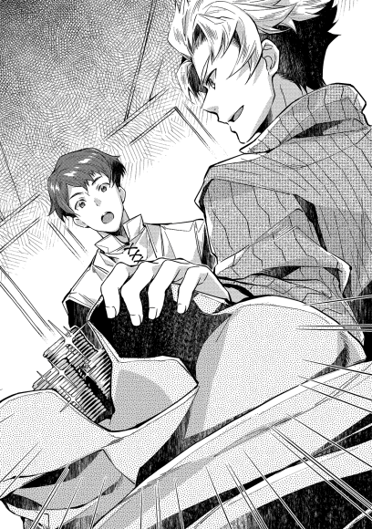
「これはまた......どうやってこんなに稼いだんです。領民の納税はまだ先でしょうし、何処か戦争でもありましたか」
「いや、うちの大将と坊が、あちこちの社交界と貴族領を出稼ぎで飛び回って溜めたもんだよ。この半月ほどでな」
人は、驚きを通り越すと呆れが来るらしい。デココも十年以上商人として経験を積んできたが、半月ほどでこれだけの金額を稼ぐのは、自分では不可能だ。大商いを専門とするような大貴族旗下の大商会でも年に一度あるかないかぐらいのはず。取引の額面で金貨四百枚が飛び交う商いならともかく、純粋な利益がそれだけとなる商売など、一行商人には気が遠くなりそうな話だった。皮袋を幾つか受け取り、中身を全て確認してみたが、間違いなく全て金貨。それも純正のプラウ金貨だ。一枚でも一般家庭が二年は慎ましく暮らせる。行商人の手が、冬なのに汗ばんだのは仕方のないことだろう。
「この金の差配を任せる。注文はさっき言った通り家を二十軒建てられる材料と職人の手配。人手はうちの領民からも出すから、それで家を作れ。領民の方の給金はうち持ちで良い。最高の物にしろとは言わんが、手抜きは許さん。仲介の手数料は、その金から余った分を全てやる。代わりに足が出てもそれ以上は出さん。建てる場所とかの細かい話はこれから大将と決めるがな」
「っ......私で良いんですね？」
ゴクリと唾をのみ込む音が聞こえる。行商人デココ。生涯で最も大商いになる予感に緊張を隠せないでいる。不安もある。自分で全てできるのかという不安。それ以上に、これが上手くいけば大儲けができるという期待もある。
「無論だ。お前さんは若い時から知っているが、信頼できる。腕の方も今日確認した。お前ならできると踏んで、決めた」
「やりましょう」
「流石だデココ」
お互いに立ち上がり、握手を交わす。交渉妥結の挨拶だ。シイツは、握手した時に相手の手が相当に汗ばんでいるのに気づいたが、それも仕方がないことかと苦笑を隠す。
だが、これで終わったと思ってもらっては困るのだ。
「それで、売りの方なんだがな」
「えっ？ ああ、そうでしたね」
行商人の素っ頓狂な声。今回の取引は売り買い両方。初めにそう言っていたはずなのに、あまりの取引の大きさに、すっかり我を失っていたらしい。こういう所は、経験を積み、自分の器を大きくすることで慣れるしかない。自分はまだまだ経験不足だ、とデココは反省することしきりだ。
「売りもちとデカい」
「もう驚きはしませんよ。買いの方で散々驚かされましたから」
「まあ、こっちはさっきほどじゃないから大丈夫だよ」
「それで、何をお売りになるのでしょうか」
改めてデココはソファーに座りなおした。自分の経験不足を露わにしてしまったばかりだ。これ以上の醜態をさらすわけにはいかない。何でも来い、と気合を入れなおしたのだが、それはやや空振りに終わる。
「売りたいものってのは、実はまだここにないんだよ」
「はい？」
「だから、今はまだない」
「よく分かりませんが、いつならご用意できるので？」
「それはお前さん次第だな」
「えぇっと？......ああ、そういうことですか」
そこでようやく、デココは気づく。シイツが何を売りたいと言っているのか。
「俺たちが売りたいのは、お前さんが建てることになる家だよ。具体的には、家と畑を貸すから、その権利を買わないかという話だ」
「領民の募集を行うと？」
「早い話がそうなる。二十軒のうち最低五軒ほどは新規に募集しようと思っていてな。人を増やすのには丁度良い機会だろうって大将たちが決めたんだよ」
行商人は、そこにある領主の意図を図る。代理人である従士長シイツが言う、丁度良い機会とは何だろうかと。この場合の〝丁度良い〟とは、一つの意味しかない。
「何か、領民募集にあてがあるのですか？ いや、あるのですね」
「ご明察だな。先だって、ここらが盗賊に襲われたってのは知っているか？」
「無論です」
商人たるもの、耳聡くなくては話にならない。幾ら安く物を仕入れ、或いは高価な積荷を持っていた所で、盗賊に襲われて奪われれば一晩で素寒貧になる。盗賊の噂などは、どんな些細なことであれ耳に入れておくのが商人の常識である。
「なら、向こう隣のサルグレット男爵領や、更にその向こうのブールバック男爵領が賊に襲われたのも知っているな」
「はい」
「かなり手酷くやられた村が幾つもあるらしくてな。ある程度は領都に保護したって話だが、蓄えも乏しかろうに、支えきれずに放出したがると見ている。男手のなくなった家なんぞ、悲惨だろうさ」
「なるほど。それを私に仲介しろとおっしゃるわけですか」
神王国を含め、南大陸の国々は王制を取る国が多い。故に、一般的には領民は領主の財産であり、土地に縛られる。領地で自然増以外に人を増やそうとすれば、奴隷を仕入れるか、戦争で逃げた難民を匿うか、或いは当該領主に交渉して流民を引き取るかだ。領主同士で交渉して解決するのに、最も手っ取り早いのは金になる。
「裸で放り出すほど酷な領主じゃないはずだが、いつまでもただ飯で養ってやるほど甘くもないだろう。かといって、刈り働きで焼かれて血を撒かれたような畑がすぐに直るわけでもない。となれば、養いきれない領民に対して『何処へでも行け。後は知らん』と言い出すのも時間の問題ってわけだ。追い出された方は、レーテシュバルかボーヴァルディーアあたりのスラムで野垂れ死ぬか、盗賊稼業で討たれるか......」
「そこへ、私が家付き畑付きの高待遇を売りますと言って近づけば、喜んで集まってくる。貴方方は労働力が手に入り、領地は一層豊かになる」
「お前も手数料が入って、不本意に流民となる者も減る。良いことずくめだろ？」
建前だけを見れば実に美しい。盗賊に襲われて困窮にあえぐ隣領の領民が流民となるのを見るに偲びず、生活手段と住む場所を用意して迎えの手を差し伸べる。僅かな手間賃で。当面の生活さえ何とかすれば、今後も安定して生活ができる。ああ美しい。
実利を見ても別段不思議な所はない。賊が隣を荒らした。それに便乗して土地を追われた領民を引き取り、自領の生産力向上の為の労働力を確保する。畑を焼かれて職にあぶれた農民も、そしてモルテールン家も、おまけに仲介する行商人にもそれぞれ利のあるＷｉｎ・Ｗｉｎの関係。
だが、ここに隠された意図がある。シイツは言わなかったが、自分で作ったものを自分で売らせることに意味があるのだ。
自分が仕入れる商品で、粗悪品を掴みたいと思う人間はいない。売る商品は、可能な限り良い品であって欲しいのが商人だ。そこで、売る商品を自分で作らせる。なんとなれば、粗悪品を作りたいとは欠片も思わなくなる。黙っていても良い家ができること受け合いである以上、モルテールン領にとっては相当に美味しい話になる。四百枚を超える金貨を払う以上、質の良い物を〝自発的〟に用意してもらう為の策なのだ。
「それじゃあ、後は頼んだぜ」
「ええ。お任せください」
まだまだ若いな、という思いを隠しつつ、シイツはデココと握手を交わすのだった。
「お久しぶりですな」
初老の紳士が、そう声を掛けた。
「カドレチェク公爵。御無沙汰しております」
挨拶を返し、騎士の礼をもって紳士に相対したのは一人の美丈夫だった。幾万と剣を振るったであろう身体は、鍛え上げられていて美しくもあり、丁寧に誂えられた軍礼服と相まって洗練さを感じさせる。その美丈夫こそ、モルテールン騎士爵その人である。
「このような場に卿が来られるのも珍しいと思いましてな。わざわざ来て頂いたので、ご挨拶をしておこうと。よくお越しくださいました」
このような場、というのは分かりやすい。彼らがいるのは、カドレチェク公爵の王都別邸。その広間にいると言えば、目的は明らかだ。夜に広間に集まる用事など、晩餐を伴う社交の場か、或いは有事の際に臨時招集で集まるかのどちらかだ。
無論今は前者の方である。
「閣下からご招待を頂きまして、喜び勇んで参りました。この度の御嫡孫のご成人、おめでとうございます」
「お祝い頂き感謝いたします。レーテシュ女伯爵の紹介もありましたので、卿を招待させて頂きました次第。いやなにうちの孫も、図体ばかりデカくなりましてな。儂も年ですし、早く安心させて欲しいのですが、まだまだ子供ですわい。わっはっは」
「何をおっしゃいますか。閣下はまだお若い。中央軍が精強であるのは、閣下がおられてこそでしょう。私も、戦場では閣下の御采配の妙を幾度となく学ばせて頂きました」
「王都決戦の英雄にそこまで言われると、こそばゆいですな。さて、卿の横におられるのはご子息かな？」
「ええ。折角の祝いの席ですから、ご挨拶をさせるべく連れてまいりました。ペイス、挨拶なさい。中央軍統括の任に就いておられるカドレチェク公爵閣下だ」
父親から促されて、一人の少年が一歩前に出る。青銀の髪と、揃いの色合いで作られた礼服が上品さを見せる佇まい。一見して、立ち居振る舞いに違和感がない。そこがかえって不自然でもあるが、主に好評価に傾く違和感だ。
この年の子供であれば、社交の場に不慣れであることは当たり前。目上の大人に相対する時、子供が取る態度としては、緊張するか尊大になるか、或いは馴れ馴れしくなるかのどれかだ。畏れの心が強ければ緊張して人見知りし、我が儘であれば尊大で無根拠に偉ぶる。或いは相手の偉さなども分からず、親戚の伯父にでも挨拶するが如く馴れ馴れしくなる。だが、この少年の態度はそのどれとも違う。まるで暦年の交渉人の如く礼儀正しい。
片膝を折り、礼を尽くしてののちに口上を述べる。
「お初に御目に掛かります。カセロール＝ミル＝モルテールンが子。ペイストリーと申します。閣下の御高名はかねてから父より伺っております。この度の目出度き席で御目通り叶いましたこと恐悦至極に存じます」
「これはこれはご丁寧に。儂はエリゼビオ=ハズブノワ=ミル=カドレチェク。勿体なくも陛下よりカドレチェク公爵位を賜っておる。まっ、ただのジジイじゃから、好きに呼んでくれ。しかし、貴殿のように礼儀正しい子供は珍しい。儂の孫にも見習わせたいものじゃな。わっはっは」
「お褒め頂き光栄です。閣下のお孫様は私のような者を見習うまでもなく、貴族の範を見せておられると聞き及んでおります。この身こそ、お孫様にご指導頂きたく思っておりますれば」
「そうかそうか。いや、本当に利口な子よな。モルテールン卿も良い跡取りがおられるのは羨ましい限り」
カドレチェク公爵の手には、銀の杯に注がれたワインがある。無論、飲み口まで銀というわけではなく、飾りに銀がふんだんに使われているコップという意味だ。カドレチェク公爵領内で作られているワインで口を湿らせつつ、公爵は本気で目の前の少年を褒めていた。大抵、こういう言葉はお世辞で飾るものだが、親馬鹿で有名なモルテールン騎士爵に対しては素の褒め言葉が出る。ありのままを言えば褒め言葉になるのだから楽なものだ。
「ははは、私も息子が優秀であることは誇らしく思っております。親の私に似ず、トカゲが竜を産んだと神に感謝するばかり」
「わはは、それは先が楽しみなことじゃな。おお、そう言えばまだ孫に挨拶をさせておらなんだな。卿の御子息を見習わせて、挨拶の一つもさせておこうか」
カドレチェク公爵はこれでも数十年以上、この手の社交と政治の世界を生きてきた。自分の孫にも、より良い人脈を持たせてやりたいと思ってもいる。そんな、政治家としての利害損得の勘定と、祖父としての孫を労わる感情との双方で、モルテールン家の親子と縁を持っておくことを決める。簡単なやり取りであったとはいえ、冷静に損より利が大きいと判断したのだ。それ故、孫を紹介することにした。
こういう社交の場で、ぺこぺこと挨拶回りをしては軽く見られる。全員に挨拶するのが基本の主催者は別だが、特に役職や位階が上であるほどに、腰の据わった対応が求められる。その為、公爵家の人間の方から挨拶をさせるのは、多くても二〜三人程度までが常識。そして、折角の祝いの席で挨拶攻勢ばかりが蔓延しないように、よほど親しくない限り目下から目上に声を掛けるのは避けるのがマナー。つまり、主賓でかつ上級貴族の孫である者が、初対面の相手と挨拶する回数は限られている。カドレチェク公爵は、その限られた手札を切ったとしても、得られるリターンがあると踏んだのだ。
祖父に呼ばれて進み出てきたのは、未だにどこか幼さの面影を残す青年。成人したばかりといえば十二歳〜十五歳が普通であり、彼もまた十三という年であったからには当然である。この青年は、神から愛されているのだろう。何故なら彼にとって非常に幸運なことに、強面の祖父や父には似ずに母親似であったのだから。垂れ目がちな、おっとりとした雰囲気のする大人しそうな青年である。
「モルテールン卿、紹介しよう。こいつが儂の孫でスクヮーレ=ミル=カドレチェク。卿の息子には及ばんが、これでも中々利口な子でな。寄宿士官学校を首席で出ておる」
「それは素晴らしい。しかし、ハズブノワ姓は名乗られないのですかな？」
「こやつの母がヴァッレンナ伯爵家の者でな。ヴァッレンナ伯爵家の嫡流の娘であった為にハズブノワの継嫡は外れたのよ。いずれはカドレチェク家を継いでもらうつもりでおるから、あまりそこに拘ってはおらんがな。スクヮーレ、こちらの御仁がモルテールン騎士爵閣下だ。お前も知っておるだろうが、今上陛下の王都防衛の際に獅子奮迅の活躍をされ、またフバーレク辺境領の魔獣災害やレーテシュ伯爵家の海賊退治等にも従軍され、勇名を馳せた御方だ」
公爵を仲介する形での顔合わせとなる為、今日が初めて会うことになる公爵嫡孫スクヮーレとカセロール。壮年の美丈夫と、若年の好青年は、お互いが同じような動きをする。右手を左肩のやや下あたりで握って胸に当てる姿勢。酒の席等で行われる簡易の挨拶儀礼だ。青年の方はややぎこちなく、それに比べると騎士爵の方は小慣れた感じがする。
「お、お会いできて光栄ですモルテールン閣下」
「お初に御目に掛かります、スクヮーレ殿。卿はエリゼビオ殿の御嫡孫であられる。しがない騎士である私よりも、御立場は上です。どうぞカセロールとお呼びください」
「はっ、恐縮です」
貴族の場合、社交の場の子供は、親の一位階下の立場に準じる扱いをされる。父親が王族であれば公爵に準じ、伯爵であれば子爵に準じる。更に、当主が現役である場合の孫は、二位階下の爵位に準じる。スクヮーレは、祖父が公爵位である為、その二位階下である辺境伯ないしは伯爵に準じた扱いで接遇されるのだ。爵位を持っているわけではない為、年金も役職給も領地も権限もないが、今日のような立場の上下で対応を変えねばならない時などには、形式だけとはいえ知っておかねばならないマナーである。つまりは、爵位が下の者がより遜った物言いをせねばならないということだ。部長の息子には係長などは丁寧に話すようなものと考えれば分かりやすい。
それなのに、騎士爵ふぜい〈本人談〉に殊更丁寧にしゃべる青年は、ある意味でマナー違反だ。馬鹿丁寧すぎる、という意味でのことなので大事になるわけではないが、あまり褒められることでもない。
しかし、それを苦笑いで済ませる老人と騎士爵。何故青年がそのような態度を取るか、非常によく分かるからだ。何せ、この手の扱いをされたことが、ここ十五日ばかりの間でも何度となくあったからだ。
「すまんな、モルテールン卿。こいつは卿に憧れておって、今日会えるのも楽しみにしておったそうなのだ」
「拙身に過分なご期待、恐縮する次第です。最近はこのような扱いも多いので、慣れておりますれば」
「いやいや、卿の活躍が、近頃は吟遊詩人の歌で大流行らしくてな。最近の若い者は、卿に憧れておるのよ。こいつもその口らしい。全く......」
「はは、若いとは羨ましいものですな。こちらもご紹介しておきます。スクヮーレ殿、ここにおりますのが、私の長男でペイストリーと言います。年は七つと幼いながら、既に本聖別の儀を終えております」
言われてずいと一歩歩み出たのは、ペイスだ。この場合、ペイスの扱いは騎士爵の下。つまりは、無位無官と同等の扱いになる為、片膝をついた遜った挨拶から始まった。
世の中には、直感と言うものがある。系統だった理屈や根拠ある感情ではない、無根拠な確信を指してそう呼ぶ。とりわけ、長い間の経験則を持つ者ほど、ある瞬間に唐突に何がしかの確信を得ることがある。
カドレチェク公爵が、進み出た少年に見たものもこれであった。すなわち、戦いの予感と、得体の知れないものへの不安感である。
「お初に御目に掛かります。父より紹介のありました通り、カセロールが息子でペイストリーと申します。スクヮーレ=カドレチェク卿におかれましては、この度の御成人、誠におめでとうございます。慶事晴れやかに御正嫡あそばされましたこと、謹んでお喜び申し上げます」
「え？ あ、は、はい。ご丁寧なご挨拶を頂戴し、身に余るものと存じあげそうりゃう」
これは完敗である、とカドレチェク公爵は思わずため息を隠した。成人になったばかりの十代前半であれば、挨拶に不慣れなのは仕方がない。だが、年若い孫の、更に半分ほどの年の子の方がまだ挨拶をしっかりしている。
大方、自分より小さい子に畏まった挨拶をされた為に、呆然としたのだろう。おまけに、失敗したことを悟ったせいか焦りで更に緊張と混乱を助長している。こういう時の為に、自分が付いているのだと、助け舟を出す。
「わっはっは、ペイストリー殿でしたか。我が孫よりよほどしっかりとしたご挨拶を頂き、孫に成り代わって御礼申し上げますぞ」
「ありがとうございます」
祖父による横取りに、ほっとしたのは孫のスクヮーレである。このままでは緊張と焦りでボロが出る所を、救われた格好だ。無論、会話の主導権をペイストリーに持たれては、いつまたスクヮーレの方に飛び火するか分からない。それ故主役のはずの青年が口を慎み、止む無く祖父が会話を続ける。ここは強引にでも、自分の孫から話題を逸らすべきところだと、公爵は判断した。
「孫も無事成人し、儂としても嬉しい限りでな。残念ながら魔法は授からなんだが、それでもこうやって健康でいてくれるだけでもジジイとしては喜ばしいことよ。おお、そう言えば、ペイストリー殿も既に成人されておるという話でしたな。しかも本聖別を受けられたとか。いかがです、魔法は授かりましたかな？」
「はっ。神の御恩寵を賜り、無事に魔法の習得を果たしましてございます」
「ほほう」
いささか強引過ぎるかと思った話題であったが、それにも増して興味深い話が飛び出した。それは、公爵の興味を大いに惹く。
ずばり魔法についてだ。
魔法が使えるほどの魔力を持つ者はおおよそ二十人に一人。その上更に魔法まで授かれる者は、その中の更に千人に一人。つまりは、二万人に一人しか魔法を授からない。いわば、宝くじの結果を聞いたら、一等が当たった、と返された時のような驚きだ。
周りで聞き耳を立てていた者達まで驚きの声を上げたのだから、何をか況や。これ幸いと、孫の不手際をなし崩しにごまかしに掛かった。
それがペイスの狙いであるとも気づきつつ。
「それは凄いのぅ。カセロール卿が魔法を使われることは吟遊詩人にも歌われておるが、更にはその子までが魔法を使うとは。モルテールン家は神のご加護があるのかもしれんな」
「さらばありがたきと思しきながら、偶然ということもありましょう。我が身のことは、ただ幸運であったものと思います」
「さもあらん。しかし、神は賽を振らずとも言うでな。儂としては親子二代で魔法使いとは羨ましい限りよ。おおそうじゃ、折角の機会でもあること。ここでその魔法を見せてもらうわけにはいかんか？」
「閣下が宜しければ。では、その布を一枚お借り願えますか？」
身だしなみの一環として、銀杯の下に雫避けとして付いていた布を指差すペイス。カドレチェク公爵は、何を見せるのかと期待を持って布を手渡した。火を起こすような者。水を生み出す者。物を動かす者。或いは足が速くなる者。魔法は人それぞれの個性的な物。いざという時の為に手の内を秘匿されることも多い為、ここで見られるというのは好奇心をそそる。
「それでは......【転写】!!」
変化は一瞬だった。白い布には、瞬きする間もなく一瞬で絵のような物が描かれていた。
描かれている内容は、人物画。それも、かなりの美少女が描かれていた。花畑にたたずみ、ほほ笑む様子が描かれていて、見事と呼ぶほかない。
「これは......素晴らしい。なるほど、絵を描く魔法ですか。いや、実に見事」
「お粗末様です。折角ですので、その絵はスクヮーレ=カドレチェク卿に進呈いたします。私と......そして、フバーレク辺境伯からとして」
ここにいない第三者からの贈り物。なるほど、と公爵は察するものがあった。自分の勘に引っかかったのは、こういう狙いがあったからかと。周りで様子を伺っていた者の中には、苦い顔をする者も多かった。特に娘を連れている者はそれが非常に顕著だった。
「はて......フバーレク辺境伯とな。今日は来ておらぬようだが、それはもしかしてこの絵の御令嬢と関係があるのですかな？」
「閣下の御慧眼感服する所存。お察しの通り、そこに描きました御麗人はフバーレク辺境伯の三女にあたられる姫君。ペトラ様です。先だってフバーレク辺境伯領に出向きました際に、お会いしました」
「ほほう。それは......いや、御父君の魔法がありましたな」
公爵は、流石に距離と手間と時間を考えれば、そうそう南部辺境の騎士爵領から東部の辺境伯領まで出向くほどの用事があるとも思えなかったのだが、直ぐにモルテールン騎士爵は【瞬間移動】の使い手であったことを思い出す。
「はい、父の瞬間移動で出向きまして」
嘘である。色でいうなら真っ赤な大嘘。
そこまで遠くに転移するのは、カセロールの魔力では難しい。実際はペイスの魔力と転写した魔法という反則があったのだが、情報秘匿の利点から、カセロールの魔法であると吹聴しているのだ。
「フバーレク辺境伯領は知っての通り、隣国との小競り合いの絶えぬ土地。ペトラ嬢は、道中の危険がある為に、中々御領地から出られないとか。されば同年代の友人も少ないとか。それを憂慮されたフバーレク卿は、私どもが今日この席に呼ばれたことを御知りになられ、是非ともスクヮーレ=カドレチェク卿とのご友誼を賜りたいと、紹介を頼まれた次第です」
「ペトラ嬢というお名前なのですか。可愛い人ですね。ああ、素敵だ......」
気に入ったかどうか。などと問いかけるのも不粋である。そんなものは、見れば分かる。頬をやや赤く染めつつ、布に描かれた少女を見つめるスクヮーレ青年の様子。それは一目ぼれに他ならない。
事実、描かれた少女の微笑みは、清純さと儚さと純朴さの同居する至上の微笑みだ。世の男性諸氏であれば、誰しも好印象を持つであろう、少女独特の美しさがそこにある。何せ、そのシーンを転写する為に、辺境伯のＯＫが出るまで丸二日を要したほどの力作シーンなのだから当然と言える。この世界で最高の諜報機関でもある教会に、大金を積んでスクヮーレ青年の好みをずばり調べあげた上であり、うぶな青年の心を鷲掴みにする一枚。
ちなみに、この紹介の仲介料は、婚約成立時にシュティン銀貨二万枚という破格の成功報酬になっている。シュティン銀貨は二十枚から三十枚ほどの相場で、王家発行通貨であるプラウ金貨と交換されている。つまりは、金貨千枚弱相当の大盤振る舞いという報酬なのだ。それほどに、フバーレク辺境伯はこの縁談に本腰を入れているという証でもある。
「実は来月。つまりは黒上月の末に、ペトラ嬢の成人の祝いがございまして。スクヮーレ=カドレチェク卿には、〝友人として〟是非ともご参加願いたいとの言付けを預かってまいりました」
「喜んで伺いますとも!!」
この馬鹿孫め、と叫びそうになった公爵ではあったが、覆水盆に返らず。孫が後先考えずに思わず言ってしまった言葉は取り返しがつかない。友人としてというベールがあるにせよ、ここまで露骨な縁談に何故気づかないのかという呆れもある。本来であれば、この手の話は慎重にするべきなのだ。そこら辺、孫にはまだ経験が足りていないと頭が痛い。そして、その点を巧みについてきたペイストリー少年は、もはや子供と思ってはならないとの考えを深める。
「これ、スクヮーレ、落ち着きなさい。確かに、フバーレク卿の御息女ともなれば、仲良くあるのは吝かではない。しかしじゃ、お主はどうやって彼の地に行くつもりじゃ。あそこは今、かなり厄介なことになっておるのじゃぞ？」
フバーレク辺境伯領は、隣国の辺境伯領と接している為、殆ど恒例行事のように紛争をしている。水場、森、鉱山、関税、盗賊の越境、密貿易の取り締まり、天災、歴史的経緯に偶発的衝突と、揉め事の火種に事欠かないからだ。国境線などあって無きが如しで、毎年のように変わっている。それ故、商売人以外の往来も中々難しいものがあり、まして国家の重鎮の孫が出向くとなれば、近所の友達の家に遊びに行くのとはわけが違う。
もっとも、それは普通ならば、の話ではあるが。
「ご心配には及びません。我が父が及ばずながらお力になれると存じます」
「ははは、お若い方同士が仲良くなるお手伝いというのは、年長者の務めでもあります故、お手伝いするのは吝かでは御座いません。お任せ頂きたいですな」
「そうでした。御爺様、モルテールン卿であれば何の問題もないと思いますが」
恋は盲目というものなのだろうか。他の貴族の力を当てにすることの意味を、それなりに教えたはずであったものをと、公爵が嘆くのは仕方がない。やれやれと、頭を振った老人に、そっと少年が耳打ちした。青年の方は、少女の話を餌に、少年の父親がさりげなく注意を逸らしている。
「フバーレク卿には何やら思惑がある御様子でした。彼の地の軍備、精強なること他の比に非ず」
「ほほう、それは面白い話よ。貴殿は如何見たと？」
中央軍を掌握し、中央政界や王家とも強いコネクションを持つ公爵。それと縁故を結びたがっているのが、東方で屈指の軍事力と経済力を持つ大領の主。中央軍に東方領。手を結べば、下手をすればクーデターとてあり得そうなきな臭い動きではある。
辺境伯領で軍備増強の動きがあることは、薄々気づいている者も多い。まして国家の要であり、政治に造詣の深い公爵であれば察していても不思議はない。辺境伯軍増強の意図。本音が何処にあるのかを、役目柄知っておくべきではある。万一辺境伯に翻意あれば、討伐するのは公爵になるかもしれないのだから。
「恐らく、長年の小競り合いに嫌気がさしているのだと思われます。閣下の中央軍を背景に、一度は隣の力を大きく削ぎ、小競り合いをなくす心づもりがおありと見ました。その取り成しを閣下に求め、理由としての御息女のご縁ではないかと推察する次第」
「うむ、なるほど。ありそうなことではある。いや、参考になった、感謝しよう」
「いえ。あくまでも僕の私見ですから」
王軍であれば、東方直轄領軍をまとめた東方軍もいる。東方の王家直轄領に配している精強な軍だ。だが、これは隣国に対しての軍備というより、国内の反乱に備えるという意味合いが残る軍。これを頼らず、中央軍の助力を欲しているとなれば、あり得そうな話ではあった。
隣領同士の軍事バランスが並んでいるからこその小競り合い。いい加減に焦れるのも分からなくはない。そして、王家の東方軍は信用できないから、中央軍と組んだ上で、優位に立って小競り合いを収めたい。その代わりに娘を嫁に出す。理屈としては筋が通る。だが、辺境伯は競り合いのあるうちは領地を離れられない。そもそもが隣国を押さえるのが辺境伯領の役目でもあるからだ。どうしたって中央とのパイプは限られてしまう。そこで今回の話となるわけだ。
この話、乗るべきか否かを、公爵は悩んだ。そして決断する。周りに聞こえるほどにわざとらしい声で、ペイスに返答した。
「いや、これは中々に興味深い話よな。折角のお誘いですから、孫を連れて私もフバーレク卿の御息女を祝いに参りましょう。いや、孫にも春が来るやもしれぬともなれば、国王陛下にもいい土産話になりましょうな。わっはっは」
「はっ。左様でございます」
話の真偽や、影響の可否の判断。或いはその先の動きの予想を、自分が面倒を見るという決意表明である。そこには無論、嫡孫の縁談も含まれる。前向きに検討する、という意思表明でもあった。更には、それを国王陛下に伝えて、国家の方針を決めた上で動くぞという決心だ。下手に隠しながら動くと、他ならぬ公爵が疑われかねない点への牽制でもあるだろう。
「モルテールン卿には、その折には手数を掛けることになるかもしれぬ。孫と儂を運ばせる手間を、お願いしても良かろうか。無論、礼は弾もう」
「勿論です閣下。閣下のお役に立てるのであれば、それに勝る喜びは御座いません」
「うむ、感謝いたしますぞ。ああそうそう、麗しきペトラ嬢の絵姿を頂いた礼もある。それと合わせて、明日か明後日にでも使いをやりましょうかの」
「これは、閣下の御配慮痛み入ります。万難を排しお迎えさせて頂きます」
「それでは、儂は他の方々へも挨拶をせねばなりませんので、これで失礼しますぞ。スクヮーレは、もう少しモルテールン卿やペイストリー殿のお話を聞いておくと良い。面白い話を聞けたら、あとで儂にも聞かせてくれ」
「はい、御爺様」
忙しい公爵は、カセロールに対して軽く礼をとったあと、その場を離れて別の招待客に挨拶しに行く。去り際、本来は礼など不要なはずのペイスにも儀礼を向けたのは、この社交の場を象徴するようなものだったのかもしれない。
カセロールも、騎士爵家当主としての務めがある。目ぼしい相手に話しかけられてその場を離れた。話題は大方、さっきの公爵との話あたりになるのだろう。社交の場は裏側に、政治の顔を持っているものだ。結局、残されたのは、この場では最も若い二人だけだった。
「ところでペイストリー=モルテールン卿」
「何でしょう、スクヮーレ=カドレチェク卿」
「折角こうして貴殿と面識を持てたのですから、今後とも是非よろしくして頂きたい。つきましては、スクヮーレとお呼び頂けないでしょうか。どうにもこういった堅苦しいのは苦手でして」
「分かりました。僕のこともペイストリーとお呼びください。肩の凝る会話が苦手なのは、僕も同感ですから」
やはり若い者同士で気の合う部分もあったのだろう。お互いに親しくなるのに、そう時間はかからなかった。打ち解けていけば、多少の気安さも出てくる。青年が、取り繕って堅苦しい会話を続けられるほど、場に慣れていないせいもある。
「へえ、それじゃあペイストリー殿はお菓子を作るのが得意なのですか」
「ええ。僕の趣味です。さっきお話ししたペトラ嬢にも手作りの菓子をプレゼントしましてね。焼き菓子でしたが、結構喜んでもらえましたよ。彼女は甘い物が好物のようですね」
「それは良いことを聞きました。良ければ是非私にも作り方を教えてください。今度ペトラ嬢にお会いするまでに、腕を磨いておかねば」
「それは勿論構いませんとも。手作りのお菓子を持っていけば、きっと喜んでもらえることでしょう」
お互いに和やかに笑い合う二人。しかしと言うか、やはりと言うか。若い男の話すことなど、大抵は限られる。色恋沙汰の話は、思春期らしいといえばそれらしい。年頃の男といえば、思考の半分ぐらいはどうやったら女の子にもてるかということに使われるのだ。そして残りの半分は妄想でできている。
そしてその最中、突然お互いの会話が不自然にとだえる。いや、正しくはそっと声を小さく、耳打ちするぐらいの秘密の会話。傍から見れば、何かまた下世話な話か、或いは隠し事の相談でもしているように見える。周りも、そんな二人の様子は、こういった場では良くあることだと気にも留めない。
「それで......ペイス殿に折り入って頼みがある」
「何ですか？」
呟くような会話。もうこのレベルの会話なら、二人以外に聞き取れる人間など、皆無だろう。意味深な顔で、やけに深刻そうな青年。何か悩み事なのだろうか。
「ペトラ嬢の絵。描き増しってできる？ できれば色っぽいものが......」
男というのは、いつの世も下らないものである。ペイスは、無言で美少女の絵を三枚ほど増やしたのだった。
寒さも日に日に厳しさを増し、本格的な冬がいよいよ到来したモルテールン騎士爵領。噂話が姦しい中で、今年の冬はかなり楽に越せそうだとの安堵感が領内を満たしていた。
そも、冬を越すという発想は、冬が作物の採り辛い季節だからである。冬眠する獣が増え、野菜も育たず、冬麦も春先になるまで採れない為、ほぼ蓄えのみで春まで過ごさねばならない。それ故、蓄えの多寡で冬を無事に越えられるかどうかが決まる。蓄えの乏しい状況であれば、春になるまでに餓死者や凍死者が出るのだ。
今年は、盗賊の襲来などがあり、蓄えなどは本来であれば厳しくなるはずであった。特に本村以外の村人は、自分の村に戻った所で蓄えなど皆無である。にもかかわらず、彼らに焦りがないのは何故か。
その理由は、領主が行った一連の施策である。
冬の間、各家に東西二村での家建て直しと畑整地の夫役を課したのだ。無論、それに参加した家には、一日のべ一人の参加で十人日程度の食糧と薪の支給がなされ、冬の間の飢えや寒さとは無縁で過ごすことが確実視された。子供でも半分支給されるとあって、各家はここぞとばかりにこぞって人を出している。特に十人以上を抱える大家族は、二人以上出さなければ飢えに苦しむとあって、必死でもある。
先日、大量の荷馬車が、山のような荷物を本村に運び込んだことも、その施策の信頼性を高めた。麦袋の山を見て、我先にと群がっている状況。蓄えの少なさを心細く感じるどころか、今こそ稼ぎ時とばかりに働き、逆に蓄えを増やす家が出る有様である。
「順調だな」
報告を聞いたのは、一連の施策の総責任者。すなわち、領主であるカセロールである。出稼ぎを終えて、溜まっている雑務を片付ける為に領地に腰を据えていた。彼は、身銭を切ってまで領民の為に尽くした自分の政策の成果に、満足を覚えていた。
「しっかし、ここまで領主がやる必要があったんで？」
報告を上げた腹心。シイツは、当然の疑問を口にした。本来、領主が領民に金を渡すような真似はしない。むしろ逆で、領民から金を取るのが領主だ。領地を維持し、治安を正す。その為に税を取る。それが正しい姿である。自分が出稼ぎをしてまで領民に金をやる領主など、滑稽噺にしかならない。
「領主として、あまり褒められることじゃないが、かといって領民を飢えさせたり凍えさせたりするのも、領主失格だろう？」
「まっ、そんな甘さも大将の良い所でしょうね」
「シイツにはこれからも頼らせてもらうさ」
「俺にはもう少し甘くしても罰は当たらんでしょうに」
お互いの遠慮のないやり取りには、冗談も混じる。笑いあいの中、ゆとりができた懐事情に、雰囲気もどこか緩くなる。
「甘さがどうのと聞こえてきましたが、お菓子の話ですか？」
鈴のような可愛げのある声が、そんな緩い空気に混じった。誰あろう、ペイストリーである。
「坊、ノックぐらいしましょうや」
「してもしなくても同じでしょう。笑い声が外に聞こえるぐらいですし」
「建て直しが終われば、そんな音漏れもなくなりますぜ？」
「なら、その時にはノックするよ」
目下、本村であるザースデンは拡張工事中である。人が増えてきていることもあり、堀や柵の範囲を広げ、それに合わせて区割りも整理中だ。井戸が村内に二つほど増える予定でもあり、併せて新しい領主館としてレンガ造りの建物を新設中である。急ピッチで作業は進められており、次の春には引越しを予定しているのだった。
余談ではあるが、盗賊対策で本村へ一時的に人を集約した為に、出会いの場にもなってしまったらしく、モルテールン領は今結婚ブームである。婚姻許可は領主の仕事である為、カセロールはここしばらくそれに掛かりきりだった。来年の秋ごろには、ベビーブームの予感である。
「それでペイス、何か用事があったのだろう。どうした。何かあったのか？」
「はい父様。走り込みの途中で商隊の方から手紙を預かって来ました。初めてここに来られた方で、領主館は何処かと聞かれまして。僕が領主の息子と知って驚いていましたが、取り急ぎ手紙だけ、代理として三シロットほど渡して受け取っておきました」
「そうか、ご苦労」
「これが手紙です。二通あります」
カセロールは、息子から手紙を受け取って宛名と裏面を見る。一通は、先だって挨拶したカドレチェク公爵。偉大なる魔法使い達へ、という宛名であったことに、彼の人の茶目っ気が垣間見える。もう一通がフバーレク辺境伯からの手紙。彼の御仁は字が荒く、武断気質で書類仕事の苦手な様が垣間見えた。宛名もそっけなくモルテールン卿へ、とだけ書かれている。二人からの内容に、おおよその予想は付く。阿吽の呼吸でシイツが渡してきたナイフで、封を切る。この手の手紙は、まず領主が見るものであり、他の者は見る権利がない。領主の許可がない限りは。
「ふむ」
「何が書かれていたんで？」
「喜べシイツ、ペイス。臨時収入が決まった。シュティン銀貨二万枚の臨時収入だ」
金額と相手から、聞いた二人は内容を把握する。
シュティン銀貨二万枚の約束をしていた相手はフバーレク辺境伯。していた約束の内容が、辺境伯家三女と公爵家嫡孫の縁組の仲介であったのは、ここにいる三人には承知のことだったからだ。
「それでは、いよいよスクヮーレ殿の婚約が決まったのですか」
「ああ。ペトラ嬢の成人に合わせて内々に婚約を発表するらしい」
「それは目出度いですね」
「確かに祝い事ではある。流石に公爵家嫡子の長男の婚約だ。内々とはいえ、王都でそれなりに人を集めるらしいぞ。それで、お披露目の為にペトラ嬢が王都に行くにあたり、私に王都までの送迎と、無事に準備を終えるまでの護衛を依頼してきた」
やはりそうなったかと、三人は誰知らず頷く。
今代のカドレチェク公爵の祖父は、三代前の国王の弟に当たり、その人が公爵家の初代。早い話が王家の親戚筋。当時は新たに建てられた公爵家ではあったが、代々の当主が優秀であったが故に重責を担ってきた家柄。集まる面子はさぞや豪華になることだろう。メンバーだけで役満確定だろうか。当然、邪魔したがる人間など両手の指では足りないほどいる。数えるだけ億劫になるだろう。
「公爵家と辺境伯家の縁組。面倒なことにならなければ良いが」
「希望的観測に過ぎます。まずあり得ないですよ父様」
「ならいっそ、断っちまいますか。面倒事なんて最初から抱え込まない方が良い」
「国家の重鎮二人にこうして頼まれて、断れるわけがないだろう。向こうが手紙とはいえ頭を下げて来ているのだ。断わるなら、公爵と辺境伯近縁の者全員を敵にする覚悟が要る。受けるしかないだろう」
貴族の婚約は、当てにならない。子供が物心も付かないうちから決められることまであるのだから、状況次第では反故にされることも珍しくない。家と家。爵位と爵位。地位と地位。或いは金と権力。そういった利害損得関係の考えの上に成り立つのが貴族の婚姻というもの。例えば極端な話で、有力な貴族家に娘を入れる約があった所で、相手方の一族が落ちぶれ、貴族位を剥奪されてしまったとなれば、そんな家に娘をやりたがる親はいないわけだ。つまり、いつ何時、婚約を破棄されるかは分からない。
しかし、だからと言ってお互いにいつまでも疑心暗鬼になるのも意味がない。そこで、婚約のお披露目というのが行われるわけだ。うちは何があろうと、この婚約について反故にはしませんよと、周りにアピールする。そうすることで、婚約当事者の両家がお互いに安心できる。散々に喧伝して、おまけに方々から祝いの品も受け取っておきながら、やっぱりなしでなどとは言えなくなるのが道理だ。
逆に言えば、婚約を邪魔したい。或いは婚約をいずれ破棄させたい人間にとっては、お披露目などされては絶対に困るわけだ。結婚とは、強力な結びつき。しかし、婚姻適齢期の人間をこしらえるのに、仲の良い夫婦と十年以上の時間が必要なものであり、おまけに有力子弟の数などは限られてしまう。まして今回は公爵家嫡孫。超が付くほどの優良物件だ。以前から虎視眈々と狙っていた人間達からすれば、突然の横取りのような今回の話はどうあっても潰したい。その為に一番〝理想的〟なのは、相手の娘に〝不慮の事故〟があることだろう。
そんな状況で、旅に不慣れな少女を守りながら、政情不安な土地や他人の領地内を往くのは、夏場に虫除けスプレーも蚊取り線香も使わずに藪で寝転がる様なもの。余計な虫が集ってくるであろうことは、火を見るよりも明らかだ。むしろこれで、何事もありませんでしたなどと言う方が不自然極まりない状況である。
万難を排して王都まで少女を運ぶ。できれば余計な所を通らずに。なるほど、カセロールの【瞬間移動】ほど、うってつけのものはないだろう。その理屈は分かるのだが、ペイス達には一つ問題があった。
「護衛と送迎に、三十クラウンだそうだ」
「プラウ金貨三十枚とは豪儀だ。また家を幾つか建てますかねぇ、大将」
「冗談だろシイツ。運ぶのはペイスの魔法を誤魔化せるからまだしも、護衛だぞ。王都なんて魑魅魍魎の住処だ。人の手配だけでも金が幾らあっても足りんだろう。正直、赤字になりかねん」
「俺らだけでやるってのは？」
「それこそ馬鹿を言うな。王都に土地勘のない我々では、不測の事態に対処しきれん。第一、我々だけでどうやって守るんだ」
今回の話の問題点。それは、無事にお披露目をするまで護衛しなければならないという点に尽きる。
「公爵家の屋敷を借りるってのはどうです？ さっさと運んじまって、そこで閉じこもる」
「フバーレク辺境伯が嫌がるだろうな。それなら何故うちの別館にしないのだとか何とか。無論、辺境伯家の屋敷を使えばカドレチェク家が嫌がる。だからこそうちに頼むと言ってきているわけだ」
「いっそギリギリまで領地にいてもらうってのはどうです？」
「それは公爵家が嫌がる。来るかどうかを時間間際までやきもきさせるぐらいなら、さっさと王都に来ておけというのも正論だからな。どちらも軍人家系で、約束の時間より早めに来ておくのが常識だと言い出しかねん連中ばかりだし、そもそも余裕のない計画は破綻しがちだ。ああ、うちに頼むわけだよ。全くもって面倒くさい」
両家からすれば、互いと面識があり、かつ双方から中立で、それ相応に信頼できる人間に護衛を頼むのは当然だ。仲介役として話を渡した面目もある。公爵家も、辺境伯家も、政治の裏側を知る人物。お互いを完全に信頼するわけにはいかないし、してはいけない。どちらが警護を担当するかと揉め出せば、収拾などつかないし、責任問題も面倒になる。面子も掛かっている。
似たような話では、隣国で婚約者のお披露目の護衛に一軍を動かし、あわや戦争になりかけたこともあるのだ。まさかそこまでやるわけにもいかない。辺境伯家が下手に軍を動かせば、要らぬ誤解を受ける。かといって、中央軍や公爵家私軍が出張っても同じ面倒が起きる。ならばいっそ、信頼に足る実力があり、お互いに中立を担保できる少数の精鋭に任せてしまう方が面倒事もない。ということらしい。実に面倒くさい話であるというのが、三人の共通認識だ。
「僕たちで守るとしたら、一つ良い場所が思いつきました」
「ほう、流石は坊だ」
こういう少数で重要人物を護衛する場合、最も厄介なのは護衛対象が動き回ること。特に成人間際の女の子で、王都を初めて訪れるような場合は、物珍しさに動じないはずがない。前世のことを覚えているペイスでさえ、初めて見るものに目移りしたのだ。行動力と好奇心の旺盛な年代の子に、じっとしてただ守られるだけでいてくれ、といってもそもそも不可能な話であった。
そんな人間を護衛するのに最適な場所とは何処か。シイツとカセロールには思いつかなかったが、ペイスは違ったらしい。
「窓もなく入口も一つしかない、頑丈な壁に囲まれた部屋があり、しかもそこにじっとさせる名目のある場所」
「それは何処で......いや、分かった。教会か」
「はい。僕たち三人ならどういう場所か分かりますが、あまり知られることのない場所ではあります」
「俺も分かった。本聖別で使う部屋に閉じ込めようってんだな」
「閉じ込めるというのは言葉が悪いです。お披露目の直前まで、〝諸事情から〟儀式が長引くだけですよ。元から護衛対象の子は、成人の儀式を行うという名目で王都に来るのですから」
なるほどと、シイツとカセロールは感心した。確かに、成人していない子供を大人しくさせるには最適だ。そもそもが、じっとさせておく為の専用の部屋になっているのだから。教会は年若い好奇心を抑え込む為のノウハウも豊富だろうし、大人しくさせる手練手管に長けている。
中の構造があまり知られていないというのも好都合。本聖別を受ける者は貴族や裕福な人間に限られるし、本聖別を行う部屋に入ったことのある人間はその中でも二十人に一人ぐらいだ。暗い中で閉じ込められる為、入ったことのある人間でも中を良く覚えていないことが多い。人生に一度きりであるから、自分の受けた教会以外の構造を良く知らないという人間もかなりいる。であるなら、仮に襲撃しようとする側にしても、突発的な衝動には遭いにくい。少なくとも中の構造を調べる手間分ぐらいは、仮想敵の時間を奪える。たとえ僅かな数でも、調べる手間を惜しんで、襲撃なりを諦めてくれれば良い。突発の事故を防げるだけでも御の字だ。
万が一に。いや、ほぼ間違いなく襲撃があるにしても、守り易さも違ってくる。光が漏れないように厳重な構造になっていて、大抵が地下にあるし、おまけに出入口は一つ。これ以上守りやすい場所もない。
「それでいこう。両閣下には、行動予定として、聖別の儀を名目に辺境伯領の教会に出向くと伝えよう。そこからこっそり王都の教会に飛び、そのまま指定の時間まで守る」
「いけそうですね」
「何もなければ、だがな」
「大将、不吉なことを言うのはよしましょうや。これで、金貨三十枚のぼろ儲け。本気で、家の建て増し考えませんかね？」
「そんなことは、この仕事が終わってからにしろよ」
モルテールン家の懐事情は、どうやら一足先に春を迎えそうであった。
「ところで父様」
「ん？」
「これ、手紙の代金も合わせての請求書です。手紙分は既に商隊に渡してあるので、それ以外を処理願います」
「ああ、ご苦労」
「それでは、僕はこれで失礼します。走り込みの途中だったもので」
羊皮紙を父親に渡し、部屋を出ようとしたペイス。その襟首の辺りが、むんずと掴まれる。
「ちょっと待てペイス」
「はい、何でしょう父様」
「このボンカ一箱と砂糖一樽ってのは何だ？」
金額はしめて一レットとび十五ロブニ。領民の一般家庭なら一年ぐらいは食に困らないだけの金額である。今回の商隊への発注には、本来なかったはずの項目だ。誰がこんなものを余計に注文したのか。犯人など一人しかいない。店で買い物する親の籠に、こっそりお菓子を紛れ込ませるような、悪知恵の働くガキのようなイタズラ。
「テヘッ」
「今更普通の子供ぶったところで、誤魔化されるか。何処の世界に、親に内緒でこんな大金使い込む奴がいるんだ」
「だって、砂糖ですよ？ フルーツですよ？ スイーツ材料ですよ？ この機会を逃すと次はいつ手に入るか分からないじゃないですか!!」
全く悪びれないどころか、絶対に必要なものだと熱弁を振るうペイス。頭のてっぺんからつま先に至るまで満ち満ちているのが目に見えそうなほどの熱意。息子の菓子作りにかける情熱を知る父は、思わずこめかみを押さえた。
「全く......お前は当分小遣いなし。今回の仕事の分け前からこの分は引いておく!!」
「ええっ!!」
「ええじゃない。このバカ息子!!」
部屋から出たペイスの頭には、特大のタンコブができていたのだった。
「おお、モルテールン卿。わざわざ当領までよくお越しくださった」
「フバーレク辺境伯。ご当主自らお出迎え頂けるとは光栄ですな」
「なんの。卿のような魔法使いは国家の宝ですからな。事が事ですから、内密にするにも、自分だけ隠れておくわけにもいきませんのでな。おや、今日はご子息もおられるのですな」
月が替わって黒上月。今月から来月位までが、大体年末とか年の暮れと呼ばれる季節になり、寒さも一層厳しくなる月でもある。この時期になると日が沈むのも早く、故に黒を冠した月で呼ばれるわけだ。
数え年のような風習も残る神王国にあって、再来月が新年であり、年齢が加算される月。魔法を覚えて一発逆転成り上がり、などと考える博打屋は、適齢期になったと同時に教会に殺到する。つまりは、再来月あたりが聖別の儀の稼ぎ時。逆に、既にある程度地位を築いている人間の子弟は、そういう混雑をできるだけ避けようとする。
フバーレク辺境伯は後者であり、既に東部で確固たる地位を築いている大領の主として、こんな糞寒い時期に聖別の儀を行うらしい。誰も好き好んで寒い時期に出かけようとは思わないので、教会の儀式などは予約をするまでもなく貸切状態になる。それは今回好都合でもあった。
「ご無沙汰しております閣下」
「こちらこそ。よく来てくれたペイストリー殿。以前に見た時より背が伸びたかな」
「以前お会いしてから、まだ二月とたっておりませんが」
「なんの、子供は三日もあれば大きくなっているもの。活躍の噂は聞いておるよ。今日はまた何故貴殿まで来られたのか」
娘の護衛と送迎が任のカセロールではあったが、その過程にはトラブルが予想されていた。当然、辺境伯とてそんなことは百も承知。荒事になる可能性もあるわけで、そこに子供連れで現れれば不審にも思われる。さもあらんと思うカセロールは、それに応える。無論、実は息子も瞬間移動が使えて、今回は息子に任せるからです、などとは口が裂けても言えない。
「今日は御令嬢をお連れ致しますからな。やむを得ずとはいえ、長い時間お待たせすることになるやもしれません。年の近い者がいた方が退屈もせずに済むかと連れてまいった次第です。多少は剣の真似事も教えましたし、魔法も使えますので足手まといにはならぬでしょう」
「はは、卿の家族愛はつとに有名ですからな。それを押してご子息を連れてこられたと言うのなら、腕のほどは信頼しますかな。確かに、成人の儀式は時間が掛かることもありましょう。御配慮痛み入ります」
事前に連絡済みなので、教会で〝時間が掛かる〟ことは確定である。しかし、何処に耳があるかも知れず、あえてぼかした形での作戦の確認だ。教会で保護するが、改めてその手で良いかと確認し、それで構わないと答えた格好になる。
「まあここで立ち話もなんですな。どうぞ馬車の中へ。娘もおりますので挨拶させましょう」
「ほほう、流石にフバーレク家の馬車は大きいですな」
「いやなに、図体が大きいだけですよ。先代の趣味です。私の趣味には合わんのですが、頑丈ではあるので。ささ、どうぞ」
フバーレク辺境伯は当年とって数えで四十になる壮年の男性。背は百七十センチ前後と平均よりもやや小さいながら、体つきはカセロールと同じように引き締まっていて、見るからに軍人然としている。茶髪を短く刈り上げていて、やや角ばった顔立ちと合わせて如何にも歴戦といった風格を漂わせる。
しかし、その風貌とは似合わないのが馬車だ。用意されていた馬車は、随所に鉄板やらが仕込んであって頑丈さは折り紙つきである。十人乗りの大きな馬車で、普段は護衛の兵士も乗り込んでいるのだろう。馬などは六頭引きである。良馬の産地として名高いフバーレク辺境伯家ならではの贅沢な馬車。軍人であれば有事に備え防備の整った馬車を使うのは、似合うというより心構えとして納得のできるものだ。
性能だけでいうなら、高位軍人にはぴったり。何もおかしなところはないはずである。しかし似合わない。とても不自然。何故なら、デザインが乙女チックな少女的趣味丸出しだからだ。
全体的に丸みを帯び、曲線を多用したセンスは、軍人というより女の子向けのおもちゃといった印象を与える。色も純白に、やや桃色と水色がかった波模様が描かれていて、とてもこの中に厳つい軍人がいるとは思えない。ペイスなどは、中に入る時に思わず吹き出しそうになって堪えたぐらいだった。全員が乗り込んだところで、辺境伯の傍仕えが馭者台に座って馬車は走り出す。
「モルテールン卿。御無沙汰しております。今日はどうぞよろしくお願いいたします」
「これはペトラ嬢。今日はいつにもましてお美しいですな。私も、貴女のような美人を護衛できるとあって、役得と喜んでおった所です」
「うふふ、モルテールン卿もお上手ですね」
馬車の中には、三人の女性がいた。一人は、世話役の侍女。四十代をとっくに超えているらしいのだが、どう見ても二十代後半ぐらいにしか見えない謎の女性である。もう一人は、今日の主役。フバーレク辺境伯の三女でペトラ嬢だ。白磁のように白い肌は深窓の令嬢という言葉が当てはまりそうであり、水仕事とは縁遠そうな綺麗な指先も鑑みれば、領地どころか屋敷からも出ないという噂も頷ける。今回の護衛対象であり、当然、カセロールもペイスも、真っ先に挨拶する。
「ペトラ様、お変わりないご様子で何よりです」
「ペイストリー様もお元気そうで。この前は美味しい焼き菓子をありがとうございました」
「御気に召して頂けたのなら、作った甲斐があったというもの。何かの折にでもまたお届けいたしましょう」
「是非お願いしたいですわ。あれ以来、頂いたお菓子を夢で見るほどですの」
ここまで喜んで、また期待してもらえるとは職人冥利である。ペイスは、自分のスイーツを喜んでもらえたことに満足感を覚えていた。それと同時に、次の機会は友人となった公爵嫡孫に譲るだろうことに、多少の落胆も覚える。
「リコリス様もお久しぶりです」
「ええ」
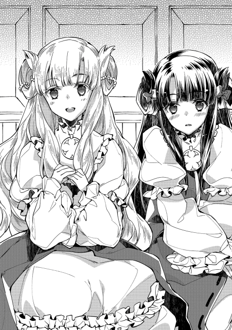
そしてもう一人。リコリス=ミル=フバーレク嬢。名前の通り、フバーレク辺境伯家の血縁であり、現当主の四女にあたる。今日の主役でもあるペトラ=ミル=フバーレク嬢とは同腹で同い年の姉妹。即ち双子である。生まれた瞬間の僅かな差で、姉と妹になった。当然、成人する年齢も揃いである。成人の儀式であるのに姉だけ受けるのも不自然であるとの理由から、今日は姉と同じように聖別の儀を受ける予定である。
「リコ。わざわざ遠い御領地から来て下さったのに、貴女のその挨拶は何ですか」
「ごめんなさい、お姉様」
「私に謝ってもしかたがないでしょう。全く......ペイストリー様、御気を悪くされませんように。この子は、いつもはこんな風じゃ......」
「大丈夫ですよ」
大丈夫だとペイスが言ったのは、気にしなくても良いという意味でもある。が、こういう挨拶をしてもらっても構わない、という意味でもある。菓子職人とは、人を笑顔にする職業。ペイスはそう考えている。人は美味しいものを食べた時、必ず笑顔になる。何故なら、悲しい時には、どんなものを食べた所で美味しさなど感じないからだ。最高の菓子を作りたい。その思いを抱く少年にとっては、それは即ち最高の笑顔を作ることと同義である。美味しいスイーツの為には、笑顔を用意するのも下ごしらえのうち。それが職人としてのペイストリーのプライドである。
人を笑顔にするには、その人が何を欲し、何を喜ぶかを知らねばならないのが道理。一流の職人とは、一流の人間観察ができてこそとも言える。文字通り一流の経験を持つ少年の目には、リコリス嬢が何故不機嫌そうにしているのかが良く分かった。それ故、大丈夫だとの言葉が出たのだ。
そこでふとペイスが横を見れば、そこでは大の男二人が顔を寄せ合っていた。何も男同士でその気があるわけでなく、明らかに密談といった雰囲気だ。
「（カセロール卿。やはり娘を害さんとする者が動いているらしい。くれぐれも頼みますぞ。私の手の者もひそかに王都にやっておりますが、それでも心もとない。今回の婚約披露は、何が何でも成功させねばならんのです）」
「（お任せください。私の部下も向こうで既に準備を終えている所です。万が一もあり得ません）」
小声でヒソヒソと会話している為に、そこから女性陣の気を逸らさねばならない。咄嗟に雑談をふり始めたのは、ペイスの経験の賜物だろうか。盛り上がる話題はやはり恋話。特に、婚約者になる公爵嫡孫の話は食いつきが良い。しばらく雑談で盛り上がった後、それまで無言を通していた侍女から声が掛かる。
「お嬢様。教会に間もなく着くようです。御準備下さいませ」
流石に辺境伯家ともなれば侍女の教育も素晴らしいものがある。会話の邪魔にならず、さりとてタイミングはぴったりで、準備の声が掛かった。馬車を降りる時は、最も狙われやすい瞬間である、という言外の注意喚起だ。それに気づかない男衆ではない。
侍女の女性がまず降り、次いでペイスが降りて周囲を伺う。ここで、目敏い者なら、少年がやや不自然な身振りを見せたことに気づく。
モルテールン親子の間には、お互いに取り決めたハンドサインがある。このハンドサインを知るのは他に従士長のシイツ。逃走指示などの一部を従士とペイスの母が知る。そのハンドサインで、さりげなく辺りに不穏な空気があることを伝えたのだ。
「（人数、右二、後ろ二、左一と離れて一。脅威、中の下より低。弓なし。制圧容易）」
予想通りと言うか、予想以下と言うか。この程度の襲撃であれば事前に想定済みであり、打ち合わせ通りに動く。襲撃する側が、隠れていることを既に気づかれていると知った場合、不測の事態も起きやすい。飛び道具などがその一例。できることなら、気づいていることを気づかせないで待ち構えたい。故にカセロールも、ハンドサインで指示を出す。
「（右と後ろは我担当。左守れ）」
「（了解）」
今回の作戦では、カセロールの魔法で王都に飛ぶという体裁になっている。実際はペイスがやるのだが、それを知るのは騎士爵家の二人のみ。無論表向きの作戦内容自体も辺境伯の所までで止められている。秘密裏の作戦であり、本来ならば大身貴族には当然にいるはずの護衛がいないのはその為だ。護衛の辺境伯家精鋭部隊は今頃王都で待っている。この場は、男手三人で守るしかない。或いはそれを狙ってここで襲ってきているのだろう。手薄になるのはこの機会しかないように計画したのだから。
「寒くなってきたせいか、邪魔な露が多いようですな。出先で露に濡れてしまわぬよう、先に露払いしますか」
「そうですな。他人様の庭でやるより、自分の庭で露を落としてからの方が良い。予定通りですか」
男衆は、何のことかが良く分かっている。少女二人を最後に降ろす形で、全員が馬車から降りた。無論全員、表面上は和やかでのほほんとした空気である。
教会に向けて、進み出そうとしたその時。
「うらぁぁぁ」
「ぇいぁあやぁぁ」
よく分からない意味不明な言葉を叫びながら、剣、というより錆びた鉄の棒きれのようなものを振りかざしながら襲い掛かる者があった。辺境伯家は外敵に備える役目柄、敵などは掃いて捨てるほどいる。カドレチェク公爵家も、中央で諸領各家に睨みを利かせる役目柄、怨みを買いやすい。両家を憎く思っている者であれば、晴れの舞台などは壊す利こそあれ放置する得はない。
それに国内でも屈指の重鎮である当主同士、抱える資産と利権は膨大である。領地も豊かで、軍備も精強。両家が結びつくことを嫌がる人間はかなり多いであろう。或いは、我こそその益を手にせんと狙うものからすれば、両家の婚姻。それも公爵家跡取りの婚約など壊してしまうに限る。あわよくばの後釜狙いも、両手の指では足りないだろう。襲い掛かってくる連中は十中八九、その手の縁談をぶち壊したい人間に雇われたものに違いない。つまりは、遠慮する理由がない。
「死ねやぁぁぐげっ!!」
武器の整備すら碌にできていないような有象無象。鍛え抜かれた騎士の敵ではない。その上、たかだか数人で襲うには相手が悪い。間合いのまの字すらも無視できる魔法騎士を襲うつもりなら、この十倍は要る。こっそり、ペイスも一人と切り結んで無傷ではあったが、それはそれとして父親の活躍が目立ちすぎる。あっさりと二人ほどを切り捨て、残りを無力化していた。
「修業が足らん。二百年は修行して出直せ」
「父様、人は二百年も生きられないと思いますが」
「ふむ、なら百年にまけておこう」
どこかピントのずれた会話をする親子に、辺境伯は声をかける。
「カセロール卿、お見事。娘を守って頂き感謝いたしますぞ」
「何の。閣下でもこの程度の相手であれば後れは取りますまい。さぁ、些事に構うことなく、教会の中へ」
鉄の臭いと血の臭い。剣を布で拭ったペイスとカセロールではあったが、この臭いは慣れることがない。ましてや、箱入りで育てられた少女には刺激が強すぎたのだろう。それなりにショックを受けている様子ではあった。
だが、襲われた現場にそのまま居座るわけにもいかない。少女二人と年齢不詳一人を促して、教会の中に入る。
「モルテールン卿。私は〝後始末〟をしてから追いかけます。うちの庭を荒らしたモンには、それ相応の償いをしてもらわねばならんのでな」
「分かりました。できるだけお早くに願いますよ」
辺境伯とその御付は、襲ってきた不埒者の処理をしてから合流するらしい。
教会の中、というのは何処の教会も似たようなものだ。無駄な飾り気などはなく、精霊の絵と祭壇が一番目立つ。ペイスの知る教会と、唯一違う所があるとすれば、椅子の数ぐらいだ。
「どちら様ですか？」
教会の中にいた女性が、誰何する。
「私はモルテールン騎士爵家当主、カセロール。フバーレク辺境伯家の方を連れてきた。司祭様はおられるか」
「あ、はいっ、すぐに呼んでまいります!!」
脱兎の如く奥に駆け出す見習いシスターと思しき女性。カセロールに名乗られて、慌てたのだ。何せ貴族様。それも、自分たちの領主様一家のご一行と併せてのこと。こういった面識に不慣れな人間であれば、お前らちょっと待っていろ、とはとても言えるものではない。裁判権を持つ貴族の一行。現代で例えるなら、警察の一団が押しかけてきたようなものだ。急いで偉い人を呼びに行ったのは当然だろう。
やや慌て気味に、司祭服を着た男が出てきたのは、そのすぐ後だった。やはり幾らなんでも貴族の一行を待たせるわけにもいかなかったのだろう。
「これはこれは貴族様。このような場所にお越し頂きまして。当職はこの教会で非才ながら司祭を務めておりますウィルイスと申すもの。今日は皆様方、如何様なご用事でありましょうか」
「その話は私の口からは何とも言えない。フバーレク辺境伯閣下が来られてからの話になる。何かご息女の話は聞いていないか？」
「さて、どのようなことでございましょうか」
やはり、この司祭を称する男も、相当な狸である。フバーレク辺境伯本人がおらず、面識のない者ばかり。そうである以上、適当な人間が貴族を名乗って成りすまし、聖別の儀の予定を聞き出そうとしている可能性を考えているのだろう。そのすっとぼけ具合は、事情を知るカセロールやペイスから見ても見事なものである。護衛側としてもまた、秘密裏の行動である以上、相手が本当に司祭かどうか確認できないうちから情報は出せない。もしかしたら、賊が司祭になりすまして予定を聞き出そうとしているのかもしれないからだ。
双方、ここはお互いの共通面識待ち。すなわち、フバーレク辺境伯本人待ちであった。事情が事情だけに、普段から静かな教会がより一層の沈黙に満たされる。静寂の中、それを破る声がしたのは、すぐのことだった。
「いやあ、何故か〝運の良い〟ことに、偶々当家の巡察の者がおりました。早々に処理を任せてきました故......おや、モルテールン卿、どうしたのです、こんな場で立ち止まって」
「おお、閣下。お待ちしておりました」
教会に入ってきたのは、四十路の偉丈夫。待ち人来るはフバーレク辺境伯その人であった。
「これはこれは辺境伯様。本日はようこそお越しくださいました」
まるで揉み手でもしかねない腰の低さで、司祭が辺境伯を迎え入れる。それもさも有りなん。フバーレク辺境伯家は軍家。人の生死を、常に間近で見続ける職業柄、代々敬虔な聖教徒として知られていた。勝敗は兵家の常としても、やはり神のご加護とやらを信じたくなる機会は、最前線で戦う者ほど多い。必然、フバーレク家が教会に寄付した金額はかなりのものになる。
早い話が、教会の上得意先なのだ。寄付金額がイコール営業成績な教会聖職者であるから、揉み手の一つもしようものである。
「うむ、司祭殿も今日は例の件、頼みますぞ。それで、こんなところで立ち話とは何事で？」
フバーレク卿の問いかけに答えたのはカセロールだ。
「いやいや、お互いに面識のない者同士であった為、挨拶をしていた所です」
「さようですな。いや、名高いモルテールン卿とお会いできて、嬉しさのあまりつい無作法を致しました」
お互いのことを辺境伯が仲介する形で確認できた以上、ここからは事情を知る同士である。くだらない探り合いなどは、お互いに無かったことにする暗黙の了解。無論、それを察しながらも知らぬふりをするのが、この手の大人のやり取りになれたフバーレク辺境伯だ。
「早速、お部屋にご案内いたしましょう。お嬢様方も、ささ、どうぞこちらへ」
ようやく、突然襲われたショックからは立ち直ったらしい。さっきから教会の中を興味深げに見まわしていたペトラ嬢。大人しそうな外見に似合わず、意外に図太い神経をしているらしい。神父に促される形で、侍女と妹を伴って進み出す。
だがそれでも、襲われて間もないのに、地下の薄暗い所に連れて行かれるのは戸惑っていた。普通の神経をしていれば当たり前である。とりわけ、妹の方は姉程に図太い神経の持ち合わせがなかったのだろう。思わずぎゅっと、手近にあったものに掴まろうとする。
「大丈夫ですよ。僕たちが付いていますから」
「え？」
声を掛けられ、そこでようやく、リコリス嬢は自分が掴んだものが少年の袖であることに気づいた。少し恥ずかしげにしたが、怖さの方が勝ったのだろう。放しもせずに握る力を強めた。ここまでの経緯で、少なくとも敵ではないと思えたし、姉以外で一番年が近いのもあったからだ。彼女は、自分よりも年下のはずの少年に、奇妙な安心感を覚えたのだった。
「さあどうぞ。お入りください」
手近に頼れるものがあった妹とは違い、部屋に入れられたペトラ嬢は、ここにきて不安を感じていた。それも当然だろう。明確な殺意で襲われ、その血が乾かぬうちに薄暗い地下に連れて行かれ、窓も無い地下室の中には拘束用と思われる椅子がある。これで何も感じない人間は、ある意味で図太いを通り越した変態だ。無論、彼女は至って普通である。むしろ、今まで蝶よ花よと大事に育てられ、屋敷を出ることさえ稀であったのだから、普通よりも繊細かもしれない。傍に父親や侍女がいなければ、妹と共にこの場から逃げていただろう。
「これからここで聖別の儀を行うのですよね？」
そう少女が尋ねたのは、不安を払拭したい一心だったのだろう。これから行うことは、普通のことなのだと信じたい。当たり前の儀式なのだと思いたい。だからこそ、彼女は肯定の返事を期待した。
「いいえ」
しかし、返ってきたのは少年からの否定の言葉だった。悲壮な色合いを、より濃くするお嬢様の顔色は、見る間に青ざめる。不安で押し潰されそうな少女はしかし、続く少年の言葉に安堵する。
「これから王都に飛びます。父の瞬間移動でね。儀式を行うのはそこに着いてからです。僕らが付いていますから、何も心配は要りませんよ」
心がネガティブな時に、一度底まで叩き落としながらも、爽やかで優しげな笑みを向けて安心させる。疲れた後の甘い物はより美味しく、走った後の水は旨い。持ち上げる前に一度落とすのは、貴族の交渉手段としては常套ではあるが、使いこなすには加減の見極めが難しい。この年でこれができるとは、天然のスケコマシだなと、フバーレク辺境伯は少年をそう評す。いずれ社交界で浮名を流すことは確実である。貴族としては珍しく恋愛結婚で、側室も持たずに、身持ちの固さでは有名だった父親とは正反対だなと、辺境伯は心の片隅にメモを残すのだった。
「それではお互いに手を握ってください。一本の線で繋がるイメージで」
何故か少年が仕切っているのが不思議だが、言われた指示内容には皆素直に従う。魔法とは個人の資質による。何ができて何ができないのか。或いはどんな制約があり、どんな性質を持つのか。それは本人のみぞ知る。故に、手を握れと言われたなら、それは必要なことだと信じるしかない。
フバーレク辺境伯右側とモルテールン騎士爵左側の間には、ペイストリーが挟まる。むさ苦しいおっさん同士が手を握るよりは、皆の精神衛生上好ましい。辺境伯の空いた左側の手には、娘の手がしっかりと握られている。主役である姉の方の手。
そしてペトラ嬢の反対側の空いた手には、妹の手が握られる。お互いにギュッと握りしめる所に、姉妹の仲の良さが見て取れた。
「私もよろしいのでしょうか。お嬢様と手をお繋ぎするのは畏れ多いのですが」
「うん大丈夫。キャエラも手を」
妹姫のリコリスの小さな手。それを優しく包み込むように握ったのは、侍女である。キャエラと呼ばれた女性の手には、水仕事や力仕事のせいでゴツゴツと節くれた感触がある。だが、その手は姉妹二人が好んでいる手だ。
キャエラが主人の娘の手を握った時。侍女は違和感を覚えた。握った手が、あまりにも冷たかったのだ。
今日成人するとはいえ、年は十二。体温は大人より高いはずである。にもかかわらず、自分の手よりも冷たいと感じた。それは即ち、ここにいる少女が、かなりの緊張と不安を覚えていることに他ならない。キャエラは、握る手に僅かに力を込めた。
「行きます」
暗い地下室。お互いが握った手を感じていると、僅かに目の前が歪む。見間違いか、と瞬きする間に、辺りは見慣れない部屋になっていた。
地下室なのは変わりがない。暗い部屋で、中央にがっちりと固定された椅子があるのも変わらない。ただ、全てがさっきまでとは違うものだった。
そこに、いち早くおっさん二人の手を離した銀髪の少年が、笑顔を見せて言う。
「皆さん、ようこそ王都へ」
王都の貴族街。
その片隅に、一軒の家が建っていた。周りの家とは、明らかに違う雰囲気を持つ家。一言で言うなら、廃れた雰囲気があった。焼きレンガと漆喰で建てられているが、その壁には蔦が這い、あちらこちらのひび割れからは雑草の葉が生えている。一見すると、とても人が住めるような家ではない。が、この家は無人ではなかった。
「今、フバーレク家の娘が教会に着いたらしいと連絡がありました」
人が住めるかどうかも怪しい家に、今は何故か人が数人集まっている。中心にいるのは、家の主。ルハインゴ=アーマイアその人。そしてアーマイア家とは、元は公爵家〝だった〟家である。
「そうか。いよいよ我らがあの忌々しいカドレチェク家の連中に代わる時が来た」
カドレチェク公爵家は、プラウリッヒ神王国で王家直轄の中央軍を預かる軍家のトップである。
神王国は、王国元帥と宰相を国王が兼務し、その下に内務、外務、軍務を束ねる三権の長がそれぞれ座っている。その中で、軍務のトップがカドレチェク公爵家なわけだ。彼の家が中央軍を統括し、東西南北の方面軍はその下。有事の際は、各方面軍の下に、各貴族家の私軍が付いて軍団を為す。
軍隊とは、上意下達のトップダウン組織である。上の人間が、下の多くを統括する。下の者は、更に下の多くを統括する。逆に言えば、地位が上になればなるほど、ポストの数は減るということだ。
この軍の人事。最終的な決定権は元帥である国王であるが、実権はカドレチェク公爵にある。無論、方面軍の人事の下っ端までを全て決めているわけではなく、方面軍の軍団長なりに人選を委任することは多いが、形としては決定権がトップにあるのも事実である。この手の軍人事に、内務卿や外務卿は口を出せない。何故なら、彼らは軍事の素人だからだ。一度滅亡間際になった神王国では、素人が専門外のことに口を出す弊害を、身をもって分かっている。
軍のポストは、実力があれば相当に美味しい。何故なら、まず間違いなく軍功を重ねることができる立場になるからだ。
三権を、それぞれの長所を代名詞として評する時。内政を司る内務系は安定と評される。大きく手柄になる仕事はないが、ポストがなくなることもそうそうない。
外交を司る外務系は特恵と評される。外国に出向くことも多く、そこで過剰なほどの接待を受けることはザラ。金色の土産を貰うこともある。役得のあるポストが多いが、その分忠誠を疑われれば直ぐに交代される。
そして軍隊を司る軍系は出世と評される。例えば平民の出の傭兵が、実力を認められて従士になり、そこから手柄を立てて貴族として領地を与えられる、というような立身出世は軍系ならではの話だ。だからこそ、その手柄を立てられる立場を欲しがる者は多かった。
それだけに、そのポストを握る者の利得と責任は非常に大きい。一例として、空きの出た五十人長に息子を推薦してやるから、自分の息のかかった商会は関税を割り引け、といった政治取引は当たり前のように行われている。無論、実力のない者は後ろ指を指されるし、推薦した者も白い目で見られるから、推薦にしてもある程度の実力が必要だ。逆に、実力があるなら、ツテと人脈と運次第で出世ができる。
そんな美味しい立場に座るカドレチェク公爵家は、当代より三代前に新設された公爵家。以前から中央軍を握っていたわけではない。およそ二十年も前の大戦にあって、当時の中央軍統括を担っていたアーマイア公爵家が敵国と内通。戦後、彼の家が敵国側に付いたことを理由に取り潰しの上で粛清に遭い、代わってカドレチェク公爵家が軍家のトップに立ったのだった。
では、アーマイア公爵家の人間は全員死んだのか。普通は、大逆罪ともなれば一族郎党全員死刑が相場。それは何処の国も大して変わらない。しかし、答えはＮｏである。
当時、名門であったアーマイア家には傍系も非常に多かった。アーマイア姓を名乗るものは、それこそ何十人といた。祖父の兄が、先々々代アーマイア家当主の甥だ、といった遠縁ならゴロゴロいたのだ。その多くは、アーマイアの縁戚筋ということで、当主の縁から軍に籍を置いていた。
軍に籍を置いていたアーマイア家血縁の者の大半が粛清された時。血縁が母方の繋がりであったり、或いは知友の縁であったりから粛清を免れた者達もいた。本人の能力を惜しまれた者もいる。ルハインゴ=アーマイアは、そうやって惜しまれて助命された者の末裔。貴族号を剥奪され、資産の大半を没収されながらもアーマイア家名のままでのお家存続を許されたたった一つの家。
「しかし旦那も物好きだね。こんなボロ屋敷を買うなんて。没落のケチが付くからと、お貴族様は手を出せなかったって言うのに」
「父祖の想いの残るこの家。我がアーマイア家復興の為には、ここから始めるべきなのだよ。お前には分からん」
「へえへえ」
屋敷に集まったのは、見た目も荒々しい男が十人程。どいつもこいつも厳つい顔をして、物騒な物を手に手に持っている。何あろう、彼らは皆傭兵であった。それも、隠れて盗み働きをする、盗賊と変わらないような荒くればかり。
「さて諸君。ここに集まってもらったのは他でもない。諸君らに一働きしてもらう為に集まってもらった」
「へへ、銭さえもらえるなら、何でもやるぜ。で、誰を殺すんだ？」
「殺しはしない。諸君らにしてもらいたいのは、女性のエスコートだ」
「ああ？」
女性のエスコートなど、この連中には最も似合わない。近づくだけで女性の方が怖がって逃げ出すだろう。夜道で会えば、問答無用で自警団を呼ばれる。だが、あくまでそれはものの例えらしい。
「とある女性を、私の元まで連れて来てもらいたい。無論、手段は問わない。成功報酬は十クラウン」
「ひゃっはぁ、そりゃ良い仕事だ」
傭兵たちは、皆一様に喜んだ。女を攫って来いと言われた仕事だ。攫う過程でのお楽しみも期待できるし、それで金貨十枚なら、彼らにとっては実入りの良い仕事になる。
「誰を攫うかは、後で諸君のリーダーから伝えられるだろう。早速準備に掛かってくれ」
「へへへ」
「良い女だったら早い者勝ちだよな。くっくっく」
男連中は、下卑た欲望を隠しもせずに家を出て行く。残されたのは、家の主のルハインゴ。そして傭兵団の頭目だけである。二人きりになった所で、頭目が聞く。
「それじゃ、仕事の話と行こう。それで、攫うのは貴族だよな。まさかただの女を惚れた腫れたで攫って来いってわけじゃねえだろ？」
「ああ。かなりの美人だ。おまけに、フバーレク家の御令嬢さ」
ペトラ＝ミル＝フバーレク。フバーレク辺境伯家の三女で、当年とって十二歳。花も恥じらう乙女であり、その美貌は近隣に有名である。この度、カドレチェク公爵家への嫁入りが決まったと評判の少女で、つい先ほど王都入りしたとの知らせがあった。
「手筈は分かっているだろうな」
「ああ、任せておけ」
「なら、お前も行け。くれぐれも、足は残すなよ」
「誰に物を言ってんだよ」
そう言い残し、屋敷を出た傭兵団長。扉から出る時には、音もさせずに外へ出る。その手際から、彼の実力の高さがうかがえる。屋敷を出た所で、団長はペッと唾を吐き出す。
「っけ、お高く留まりやがって。落ちぶれの癖に」
自分の手を汚したくないという貴族のプライドだけはある癖に、ど汚い手でも平気で他人にやらせようとする性根が気に食わない。何より、全て自分の思う通りにしたいと考える発想が自己中心的でえげつない。石でも蹴り飛ばしてやろうかと辺りを見回したところで、団長は自分の傍に近づく気配に気づく。スっと近づいてきたのは、古株の部下だ。
「頭、この仕事、受けるんで？」
「ああ。そうだな」
返答は短いが、はっきりした意思表示だ。
「怪しくないですかい？」
「何がだ」
盗賊団と間違いかねない際どいグレーゾーンを歩いてきた者には、独特の嗅覚がある。危険を嗅ぎ分ける鼻だ。その鼻が、この仕事は嫌な予感がすると告げていた。
「奴さん、貴族に返り咲きたくて今回の仕事を計画したって言っていたじゃないですか」
「ああ、それがどうかしたか？」
「おかしくないですかい。俺らみたいな人間とつるんで、誘拐までしようって話でしょう。どうあっても貴族どころか死刑台の階段昇るようなもんでしょう」
小なりとはいえ傭兵団で古株のことはある。自分達がどう見られているかなど、承知の上なのだ。その上で、疑問点を解消しておかなければ、思わぬトラブルにも巻き込まれかねない。今までも危うい橋を渡って来た以上、それは怠れないのだ。
「あの馬鹿は、貴族に返り咲く夢を本気で実現したがっている。だから俺たちに、お姫様を攫わせるんだろうよ。大方、その後すぐに手前で取り返す腹さ」
「それ、意味があるんですかい？」
蓋を開けて閉めるだけなら、元に戻るだけ。何の意味もない、と考えるのも普通のことだ。
「あるな。大いに意味がある。あいつは、それで三つの目的を果たす」
「三つ？」
「一つは、あの糞忌々しいカドレチェクの豚どもの顔を潰せるということだ」
「そりゃまあそうでしょうね」
カドレチェク公爵家が、辺境伯家の娘を迎えて婚約披露するというのは大々的に布告されている。それだけに、その花嫁となるべき女性を守れなかったとなれば、武家たる者としてはかなりの恥をかくことになる。半分身内のような女性一人すらも守れずに、国の人々を守れるはずがないだろうと嘲笑されるのだ。
「もう一つは、婚約そのものを潰せるということだ」
「それは何でで？」
「僅かな時間なりとも、男に攫われたんだぞ。貴族様ってのは体面を気にするからな。貞操が奪われたかもしれない嫁なんぞ、貰い手が嫌がるに決まっている」
「えげつねえな」
貴族の女性は、身持ちが固くなくてはいけない。これは、家の存続という一点で、後継の血筋を確かにする為に必要なことだと貴族は考える。世の中には、浮気をしない男や、成人前に男遊びを覚える女のような、珍しい存在もあり得るのだから。
仮にそのまま家に迎えて子供が産まれたとして、その子供が夫の子であるという確証が必要なのだ。別人の子供を家の子としてしまえば、御家騒動にしかならない。浮気性な人間は騒動の種。貞操と身持ちの堅さが尊ばれるのはそこにある。逆に言えば、貞操を守っていない女性は、蔑視や軽視の対象となってしまう悲しい現実がある。現代日本では鼻で笑われるような伝統が残っている。
そして貞操が無事であったとしても、まさか結婚前の他家の娘に股を開いて見せろとも言えない。確認のしようもない相手方からすれば、根拠のある風聞を流されるのは、婚約を一時見合わせるには十分な理由になる。少なくとも、半年程度は腹が膨らまないことを見届ける必要があるのだ。
「そして最後に、手前で救い出すことで、貴族様になれるって寸法さ」
「それが分からんですね。何故そうなるのかが、ね」
「簡単なことだ。あの馬鹿が、攫った女と結婚するからさ」
「あん？」
「貞操に醜聞が流れかねない女。それを防ぐ一番いい方法というのは、貞操を守った男が、我が身をもって証明してやるのが一番だろう？」
女性の貞操は守られた。何故なら自分が守ったからだ。その証拠に、自分が嫁にもらう。という理屈である。グラスにワインがあり、毒など入っていないと言い張る男がいるとする。それを確かめろと言われるなら、自分で飲んで見せるのが一番手っ取り早い。
悪人に攫われた姫君を魔の手から救い、助けた英雄と姫はそのまま結ばれる。演劇のネタであればハッピーエンドになりそうな話ではある。
「自作自演でなければ、めでたしめでたしってことでしょうがね」
「まあ、海千山千の辺境伯が、そのまま認めるわきゃねえけどな。それぐらいの博打を打たなきゃ、アーマイア家の復興とやらの話は夢のまた夢ってことなんだろうさ。あのお馬鹿様は、自分で襲って自分で助け、恩人の英雄気取って大貴族の後押しを貰える、と夢想しているんだろ」
「上手くいくわきゃねえじゃないすか」
「まあな。だが俺たちには関係ねえ。金が入ればそれで良い。だが、気を付けろよ。あの手の阿呆が、誘拐が上手くいった後に考えることなんざ一つだ」
「後ろから刺されないようにですね、頭」
「そうだ。分かったら、お前も行けっ」
「へい」
語尾を食うか食わないかの速さで、その場から消える部下。今まで何十という修羅場を潜ってきた自慢の手練れ達。あまり乗り気ではないが、手下を飢えさせるわけにはいかない。下種な男の依頼でも、受けざるを得なかったのは仕方がない。問題は、如何に寝首を掛かれずにしっかり金を毟れるか。
そう考えていた頭目。この時はまだ、彼は成功を微塵も疑ってはいなかった。
◇◇◇◇◇
「ここが王都ですか。何だか、教会みたいな所ですね」
「えっと......みたいではなくて教会そのものですから。王都の教会です」
どこか天然な感想を口にする少女とそのご一行様は、王都の第一支教会にいた。
「これからペトラ嬢には、本聖別の儀を受けて頂くことになります。それが無事終わり次第、公爵家の別邸に移り、婚約のお披露目となります。万が一の際の危険を分散する為、リコリス嬢はこちらに残って頂き、聖別の儀が済み次第あとからの合流となります」
「自分の話ですけど、婚約なんて実感が湧きませんね」
「相手方に会えば実感も湧きますよ。スクヮーレ殿は中々の好青年ですし」
「絵姿も見せて頂きましたから、それは承知していますわ。素敵な人でしたし、ご本人に会うのがちょっと楽しみでもあるのです」
「これから何度と会うでしょうし、お話がこのまま進めば、ずっと一緒に暮らすことになります」
一度も顔を合わせることなく決められる結婚。ペイスなどからすれば違和感しかないが、そういうものであるからこそ見合い写真が重宝がられるのだ。社交の場で堂々とナンパできるような外交的性格の人間ばかりなら不要なのかもしれないが、内向的な人間も、それなりにいるもの。まして適齢期が十代前半の世界。シャイで照れ屋な思春期の人間がメインの年代。面と向かって異性を口説ける人間の方が希少なのだ。
写真をありがたいと思う人間は、かなり多い。
「用意ができました。まずはペトラ様から、どうぞ。他の方は聖堂の方でお待ちください」
司祭の呼びかけで、いよいよ本聖別が始まった。
今、こっそり手配されていた辺境伯家の人間が、公爵家に使いに出ている。令嬢の到着が伝えられ、それを受けて受け入れ側の準備が行われているはずだ。不逞の輩が幾らでもあり得る話である以上、決行日時を極力漏らさず、令嬢の到着日時すら公爵家には大まかにしか伝わっていないのだ。これも全て、婚約披露を成功させる為である。
大体の準備は既に公爵家の方でも行われているのだが、温かい料理の準備であったり、お茶用のお湯を沸かしたりは、作り置きもできないのでこれから急ピッチで行われる。そして、全ての受け入れ準備が整うまでの間。すなわち、公爵家からの迎えが来るまでの数時間の護衛が、モルテールン家に課せられた護衛の山場になる。
「気を抜くなよ、ペイス」
「はい」
教会の本聖別の儀は地下で行われる。入口は一つ。窓もない。つまりは、この聖堂が最終防衛ライン。
辺境伯自身は、先に王都に詰めさせていた人員を指揮し、教会の守りを固めつつも、自身の招待客に向けて人を走らせている。大がかりなお披露目等は後日に行われるのだが、それに先立つ形での既成事実を作る今回の披露。都合の付く王宮貴族だけでも呼びつける為に、大忙しだ。事情を知っている友軍。辺境伯や公爵家と所縁のある人間も、手勢を集めて続々と教会や公爵邸に集まってきている。
「流石と言うべきだな。うちのような貧乏騎士爵家では、ここまで人は集められん」
「こういう時に信頼できる者を集めるのも、縁故あってのことですかね」
王都でもかなり噂になっていた縁組である。ここぞとばかりに押し掛けたり、恩を売りに来ていたりする連中の、なんと多いことか。
『我こそはリシツォワ家の四男にして剣技の達人。人呼んで旋風の鎌鼬。この度のご令嬢の晴れ舞台。東部領の縁あって当家もお守りいたす』
『私どもは王都でも指折りの商いをしておりますエリツカヤ商会の者。目出度い席に是非とも祝いの品などをお届けいたしたく』
外はとても騒がしい。こういうことになるから警備が必要なのだが、教会周りは既に辺境伯家の手勢で固められている。
「目敏い連中だな」
「辺境伯が中央軍と公爵家の後ろ盾を得られれば、一大勢力になりますからね。その後ろ盾でもって東部を安定させられれば、美味しい利権も増えますし」
日頃は領地にいる辺境伯と、王都の人間が縁を繋ぐには持って来いの口実。ましてや、隣国への出征の地ならしとの噂もある今回の縁組。ポストの空きもなく燻っている、下級貴族の三男以下。或いは一旗揚げることを狙う平民等は、大規模な募兵を期待しているというのもある。中には、ここ数日辺境伯家別邸や公爵家の付近で泊まり込みまでしていた人間もいたとか。
「大将、お待たせで」
「遅いぞシイツ」
辺りが相当に騒がしくなり始めた頃、ひょっこり顔を出したのが、前もって王都に送っていたモルテールン家従士長のシイツであった。
「向こうの様子は？」
「あっちも凄い人でさぁ。どこから聞きつけたのか、かなり遠方の領地貴族まで来ているようです。やっぱりこの話は注目されてるんですって。今はコアントローが残って、何かあれば報せに来るよう言い含めてありますんで」
「なら、後は待ちだな」
シイツが今まで顔を出さなかったのは、受け入れ側の態勢を確認する為に公爵邸付近に詰めていたからである。おおよその準備が整い始めたところで、主君の元に戻ってきたのだ。
「さて......ペイス、お前に重要な任務だ」
「はい？」
カセロールが、息子に声を掛ける。騒がしい喧噪の中、声は中々に聞き取り辛い。
「良いか、これからお前は応接用の部屋に行け」
「しかし、ここの守りは......」
「シイツが戻った以上、私とこいつで十分だ。それよりもだ」
騎士爵は、ニヤリと笑う。何やら企んでいそうな顔。良い大人がこういう顔をする時には、大抵が碌でもないことを考えている時だ。
「リコリス嬢がさっきから人気に当てられてお疲れのご様子だ。お前も男なら気づいてやらんか」
「まったくで。坊もそんなんじゃ立派なスケコマシにはなれませんぜ？」
言われて妹姫の方を見れば、確かにリコリス嬢の顔には疲れの色が見えた。滅多にこんな人が押しかけてくるような所に出たことがないのだろうから、それも当然だ。
「立派なスケコマシって......まあ、確かに疲れているようですね」
疲れている少女を、このまま聖堂に置いておくのも忍びない。ここは父親達の言葉に従うのが上策と、少年は考えた。
「リコリス様」
「はい」
「悪い大人たちもこう言っていますから、奥に行って休みましょうか」
「よろしいのでしょうか」
「疲れている時は、休むことも大事です」
その言葉に、一際大きく頷くシイツ。疲れていても、趣味のことなら突っ走る少年をとてもよく知っているだけに、実感がこもっている。
少女を促し、ペイスは脇にある応接の部屋に向かう。
「坊、変なことはしちゃいけませんぜ」
「僕はシイツとは違うよ」
既婚者で子供を六人もこしらえたカセロールと違い、その親友のシイツは独身である。最近はようやく豊かになる兆しが見え始めたものの、ドが付く貧乏領地の陪臣等は、あまり人気がない為だ。同じ陪臣家同士で縁戚になるか、或いは近場の領主の陪臣家から嫁を貰うのが通例だが、僻地も僻地のド田舎に嫁ぎたがる物好きなどいないのだ。陪臣家同士で融通し合おうにも、新興の騎士爵家にはそもそも陪臣家がシイツを含めて三家である。融通する年頃の人間が少なすぎる。などという建前の元、シイツは独身貴族の遊びに詳しくなった。王都の目ぼしい色屋では、金遣いの良い上客としてモテている。
「シイツ。うちの息子に悪い知恵を付けてくれるなよ」
「早熟な子には早熟な教育。俺は親切で言ってるんですぜ？」
ここは教会である。カセロールは、脇の部屋に少女をエスコートする息子を見送り、悪友の悪い所は真似してくれるなと、ただただ祈るのだった。
「フバーレク卿、フバーレク卿はおられるか」
賑やかさが最も似合わないのが教会であるが、厳粛な雰囲気が欠片もない騒ぎ。それは偏に辺境伯家令嬢の婚約披露の為であった。色々な思惑が交錯し、祭りと間違えそうな騒ぎだったのだが、それが水を打ったように静まり返る。
一人の男が来た為に。
馬に跨るこの男が何者であるか。それは身に着けているものを見れば分かる。磨かれた全身鎧。見事な装飾の鞘に入れられた佩剣。たなびく儀礼用ケープ。そしてケープに目立つ三頭龍。公爵家紋章の刺繍。
待ちに待った、カドレチェク公爵家の使いである。
「我がそうである。其は誰か」
野次馬のような連中を部下が押し分け、その間に姿を見せたのはフバーレク辺境伯。流石は東方の雄という威風をもって、使者の男を出迎える。
使者の男は、辺境伯を見るとまず下馬した。右手を左胸に当てる儀礼を見せ、片膝を着かないところから、貴族であると分かる。だが、これは形式儀礼である。辺境伯自身、入念な打ち合わせで、今日迎えに来る人間が誰かなど既に承知していた。
「ご無沙汰しております閣下。プラウリッヒ神王国ヴェツェン子爵領領主が子、中央軍参謀エーベルト=エッカール=ミル=ヴェツェンにございます。この度の婚約披露にあたり、御息女に万一のこともあってはならぬとのカドレチェク中央軍大将の仰せにより、拙職がお迎えに参りました」
「お役目大儀である。閣下の御好意に対し、篤く御礼申し上げる。早速娘を連れてまいりましょう」
使者の男は、ヴェツェン子爵の長男で、嫡男になる。幾つかある軍系派閥の、カドレチェク公爵派と呼ばれる中央軍系の重鎮の息子になるわけで、当然、フバーレク辺境伯とは何度となく社交や交渉の場で顔を合わせている。
だが、あえて公衆の面前で役儀を正す意味は大きい。護衛をそれ相応の高い地位の者が務めるということを内外にアピールすることで、今回の婚約を公爵が重要視していると知らしめる効果があるのだ。
余所の客人を招いた時に、出迎える人間が下働きの人間か、家族身内の誰かかでは、受け取られる印象に違いが出るようなものだ。
「お父様」
「うむ、いよいよお前の晴れ舞台。向こうも待ちわびていることだろうから、早速出向くとしようか」
いつの間にか聖別の儀を終え、都合よく現れた姫君。何故か迎えが来て直ぐのタイミングで、儀式が丁度終わった所だったそうな。教会の神父とて、上得意先には融通も利かせるようだ。
ペトラ嬢は、魔力は人よりもやや多めで、魔法を使える可能性がギリギリあったらしいが、残念ながら魔法そのものを使えるようにはならなかったらしい。それもあってか、不安げな様子であるのは致し方がない。自分を見つめ直す荒行には、否応なく弱気になる要素もあるのだから。
教会の前に着けられた馬車は、十人乗り。公爵家の三頭龍紋章が装飾された、六頭引きの最高級品。軍家らしく、光物の飾りは殆どついていないが、実用も考えられた立派な馬車だ。
「どうぞ、御手を」
エーベルト子爵子が、馬車の傍で手を差し出す。男女の背の高さから、ややペトラ嬢を見下ろす形になるのだが、立ち居振る舞いは流石に貴公子然としていた。
「さあ、乗りなさい」
父親に促されて、少女は馬車に乗る。合わせて辺境伯自身も馬車へと乗り込み、公爵邸へと進みだした。
「モルテールン卿。リコリスと、後のことは頼みましたぞ」
ガラガラと大きな音が遠ざかるのを見送りながら、カセロールとシイツはようやく安堵のため息をついた。
「これで、俺たちの仕事はひと段落ですかい？」
「まあ、後はお披露目が終わって戻ってこられるのを待つだけだな。それで伯の御領地までお送りして終わり。私たちは大儲けと」
「しっかし、案の定トラブルが多かった」
「まあな」
入り口が一つで頑丈な部屋に匿えたからこそマシであったが、今でも人がわんさか押しかけてきているのだ。仮に裏口だのがある部屋なら、そこの見張りを考えただけでも護衛の数は今の倍は要る。
また、本来それほどに護衛が必要だからこそ、我こそはという仕官にあぶれた連中が、臨時雇い目当てに押し掛けてきているというのもある。臨時雇いで実力を認められて、正式雇用になった例などもある為、彼らは必死である。それが為、無理に押し入ろうとした者もいた。邪なことを考えて近づこうとしたものもいたが、目立たぬところでモルテールン家とフバーレク家の護衛戦力が相当数を実力で排除していたのだ。
「ところで、坊は大丈夫ですかい？」
「何がだ」
「俺が言うのも何ですが、七つとはいえ成人している男と成人間際の女の子です。間違いの一つも起きやしませんか？」
シイツの心配するのも、もっともな所だ。自分でけしかけておいて何を今更というのがカセロールの思いではあったが、その心配は無用だと考える。
「これからリコリス嬢の聖別の儀で、彼女は隔離されるし、心配いらんよ。それに、二人きりになどさせはしない。怖い見張りをあらかじめ先にやっておいたからな」
「怖い見張り？」
「ああ。うちの妻並みに怖い」
「そりゃ最恐だ」
シイツは、可哀そうな捨て犬でも見るような目をしたまま、脇の部屋の方を見るのだった。
◇◇◇◇◇
教会の一室。
普段は来賓の応接などに使われる簡素な部屋。聖堂の脇にあり、壁も薄いので外の喧騒が伝わってくる。
「えっと......」
そんな部屋の中。ペイストリーは居心地悪そうに座っていた。
少年の向かい側には、非常に美しい少女が座っている。ペトラの双子の妹、リコリスである。本来であれば、美少女との差し向かいなどは、男としてテンションが上がって当然。同性愛者でもない限りは、誰しも喜ぶべきシチュエーションのはずだ。無論ペイスは極々ノーマルで普通な、ただの菓子狂いなので、嬉しがっても良いのだが、それができない理由が少女の斜め後ろにある。
「何でキャエラさんがここに？」
「リコリスお嬢様を御守りする為でございます」
「ペトラさんの方には付いて行かなかったので？」
「リコリスお嬢様を御守りする為でございます」
目つきのキツイ、年齢不詳の侍女が、ずっと射抜くような目で少年を睨んできているのだ。
ペイスが身じろぐ僅かな動きまで先んじており、もしも万が一おかしな動きをするようなら、恐らく先手は彼女の方になる。
侍女という役職は、貴族の家にとっては特別な存在だ。そもそも貴族の家に仕える立場には、二つある。
一つは貴族としての生活を維持する為。すなわち、プライベートな面を守る人員。もう一つは、領地貴族や王国官僚としての政務を補佐する為。すなわち政治家としての実務を補佐する人員。どちらにしても重要な役職ばかりであり、世襲陪臣家として制度化されていることも多い。執事長の子が執事としての教育を受けて次代の主に仕えたり、財務補佐官としての役職が子に引き継がれたりといった形だ。
人の往来が物理的に難しいこの世界では、有能な者を探すにしても領内か縁故で探すしかなく、専門的な知識を持つ人間は、親がその知識を教える以外にない以上、自然とそうなるのだ。侍従というポストも、大枠で見れば貴族のプライベートを守る職であるのは変わらない。である以上、大抵は世襲されていく。
だが、侍女は違う。貴族家は、当主の妻などを始めとした女性がいる。その女性の身の回りの世話をする場合、まさか男性にさせるわけにもいかないので、女性のみが侍女になれる。財務秘書等は男女のどちらでも可能だが、侍女は女性しかなれないのだ。侍女として働く女性が仮に子供を産んだとして、それが必ず女児であるということはない。そもそも、嫁いでいれば産んだ子は嫁ぎ先の子として扱われる為、侍女としての立場を〝世襲する〟ということが極めて困難という現実がある。それ故、多くの職業がある中で、侍女というポストは珍しく〝実力主義〟がまかり通る。
「えっと......物凄く気まずいのですが」
「......」
美的センス、礼儀作法、容姿、教養や知識、護衛能力から掃除の腕まで。ありとあらゆる万能性が侍女には求められる。雑用女中から始まり、より多くを兼ね備えた人間ほど侍女としてはより高位の地位に昇っていく。東部屈指の名家で、令嬢の傍に仕える侍女ともなればかなりの高待遇であり、侍女としてはそれ相応に高い地位になる。
すなわち、何がしかに秀でた女性であるということに他ならない。
ペイスはそこに思い当たり、背筋の寒くなる思いがした。何故なら、目の前の女性が何に秀でているかを察したからだ。ペイスは、見た目はどう見ても子供であるが、父親から言葉より先に剣を習ったほどの武芸者でもある。一芸に秀でる者は多芸に秀でるとの例えの通り、呑み込みの早さは父親のみならずその友人であるシイツも認める所。それ故に、気づくこともある。
この侍女。相当に強い、ということに。すなわち、目の前の女性は、護衛も兼ねた武闘派である、と。
〝いかにも〟な女性を前に、気を取られてしまったのが不味かったのだろう。また、キャエラにしても、少年らしからぬ少年に対して、要らぬ警戒心を強めてしまったのも不味かった。この場にいる、リコリス嬢の護衛を兼ねた戦力二人ともが、全く別のことに気を取られてしまった隙。あたかも、それを狙っていたようなタイミングで、突然地面が揺れ出した。
「きゃぁぁ!!」
「おおぉっと」
体感的には震度五。或いはそれ以上かもしれない強烈な揺れ。地震というものが極めて珍しい国に生まれ育った女性陣は、狼狽した。
キャエラ女史は、リコリス嬢の斜め後ろに立っていた。だが、それは座っていたペイスやリコリスとは決定的な違いを生む。如何な武芸の達人であっても、震度五以上の揺れの中で立っていられるわけがなく、へたり込んで動けなくなった。
僅かな時間で体勢を整えたのは、流石と言うべきだったのだろうが、彼女が動けるようになった時。目の前には大きな穴が一つあるのみであった。
「お嬢様!!」
ぽっかりと開いた大口。丁度〝椅子のあったあたり〟が丸々切り取られたようになっていた。
「何事ですかっ」
そこに飛び込んできたのは二人。聖堂で部屋を守っていたはずのカセロールとシイツ。二人が部屋に入った所で目にしたものもまた、石畳のはずの床に綺麗に開けられた大きな穴であった。
「お嬢様がこの穴の中に」
「うちの息子はどうしました？」
「恐らく一緒に穴に落ちたと......」
その場の誰にとっても、明らかな事実。椅子のあった所の大穴。姿の見えない少女と少年。結論として考えるならば、二人揃って穴に落ちたと考えるのが自然なことだった。
「シイツ。直ぐにカドレチェク家の屋敷に行け。関係者各位に事情を説明するんだ」
「大将はどうするんで？」
「こうするんだ!!」
底の見えないほどの深い穴。にもかかわらず、カセロールは迷わず飛び込んだ。相変わらずの無茶さ加減に、シイツはため息を一つついた。勇気と無謀は、時として相似形になる。
目の前に未知と危険がある時。必要とあれば危険を恐れずに未知にぶつかっていく。守るべき必要性があるのなら、それは勇気と言える。自分の息子。或いは護衛対象の少女。守るべきを思えば、未知という名の大きな穴に、迷わず飛び込んだ騎士爵の勇気は賞賛されるべきものがある。伊達に勇名を馳せたわけではなく、いざという時のこの豪胆さはいまだ健在。まして、何かあった時に転移してこられる騎士爵は、これ以上ない適任であるのも事実。
後始末を押し付けられる部下兼親友のことを考えなければ、であるが。
「あいつはいつも無茶をしやがんだ。結局俺がいつも尻拭いってか。この親にしてあの子ありってか」
シイツの愚痴は、穴の中に消えていった。
「気が付いたか」
そう声を発したのは一人の男。
「いいえ」
返事をしたのは一人の少年。傍らには少女が一人、目を閉じたまま縛られている。
「おお、起きてるじゃねえか。結構結構。それで、坊やには現状の説明が必要か？」
「僕らが誘拐されたのでないのなら説明が欲しいですね」
「なら不要だな。これでも紳士でよ。子供に立場を無理矢理分からせてやる必要がなくて嬉しいね。子供を殴りつけるってのは、あれで結構嫌なもんだ。そのまま良い子で大人しくしていれば、坊やはそのうち解放してやる。いいな」
陰険そうな顔をして、片頬のみで笑うのはストルーデル。家名はとうの昔に捨てた、ただのストルーデル。傭兵団を率いてきた団長だ。
僅かに身じろぎし、傍の女性を庇うようなそぶりを見せた少年はペイストリー。辺境伯家令嬢の護衛を担っていたが、今は何重にも巻きつけられた縄で体を縛られ、芋虫のようになっている。
「お前はそこの女を大人しくさせる為の道具だから、とりあえずの安全は保障してやろう。後で飯でも持ってきてやる。悪いことは言わん。それまでは大人しくしておけ。言っておくが逃げようとは考えるな。もしそんな真似しやがったら......殺す」
目の前の男の言葉に、少年は沈黙で答えた。
◇◇◇◇◇
カセロールは落ち着いていた。
「あの穴は間違いなく魔法使いの手によるものだった。魔力の残滓がこびりついていた」
滔々と語られる言葉に、腹心のシイツが聞き返す。
「何処に繋がっていたんで？」
「教会の隣の屋敷の一室に繋がっていた。誰がやったか知らんが、地面の下とは流石に予想の域を越えていたな」
「普通はそんなことができるとは考えませんぜ。普通でないからこその魔法使いですしね。大将みたいに」
「お前がそれを言うなよ」
モルテールン騎士爵は、眼前の腹心兼親友兼魔法使いに、そう零した。護衛の任に当たる時、仮想敵に魔法使いがいることを想定していたとしても、どんな魔法を使うのかまでは分からない。千差万別、十人十色。こうなる可能性もあるかもしれないと予想していたうちの、最悪のケースになってしまった。
いや、最悪は無差別に大量殺人を行うことであったのだから、それに比べればまだ最悪は免れているだろうか。
「それで、辺境伯は何と？」
「姉の方の婚約披露が最優先とおっしゃっておられたな。これがお披露目を潰す為であるのは明らかだからこそ、本命の方の警備を疎かにはできんと。それでも娘のことであるからと、手勢を幾人か借りられた」
「そいつらは今何処に？」
「足取りを追っている」
「無駄足になるものをご苦労なことで」
救いがあるとするならば、手がかりがまだ残っていることだろうか。正しく言うならば、手がかりや合図を何としてでも寄越すであろう少年が傍についているのだ。それが分かった時点で、カセロールは既に解決を確信した。
「お館様、若の居場所が分かりました」
「早いな」
「いやね、さっきの部屋にもう一度行ってみたら、こんなものが落ちていましてね。それまでにはなかったものですから、間違いなく坊っちゃん......じゃない、若様が〝送って〟きたものだと」
案の定、早速手がかりを寄越してきたことに、ペイストリーを知る大人たちは納得顔になり、良く知らない人間は不思議そうな顔をした。手がかりを見つけてきたのはグラサージュ。モルテールン領でも指折りの弓の名手であり、従士としてはまだ三十そこそこで働き盛りの男だ。
彼の手から手渡されたものは、布の切れ端。焼かれたような文字が、まるで清書の如く綺麗な形で〝転写〟されていた。
「犯人はアーマイア元公爵家の人間。旧アーマイア邸の地下に監禁されているらしい。シイツ」
「へい」
「すぐにフバーレク辺境伯とカドレチェク公爵に連絡。人手を借りられるだけ借りてきてくれ。私は手勢をまとめて向かう。現場の邸宅で落ち合おう」
「大将に送ってもらえば早いですが？」
「ならば今から送る。任せたぞ」
「坊も世話が掛かりますね」
軽く肩を竦めるにとどめた腹心に、モルテールン騎士爵は無言で魔法を掛けた。魔法の発動条件である為触れていた騎士爵の手。そこにぐっと力が入ったのをシイツは覚悟の現れであると受け取った。
一瞬で教会の一室から消えた男に唖然とする何人かに向かって、カセロールは父親の甘さを捨てた勇士の顔で向き合う。
「諸君、事は一刻を争う。全員私の指揮の下、急いで向かって欲しい。向かう先は旧アーマイア邸。狙うは首謀者の身柄確保、並びにリコリス嬢の身の安全確保である。我が息子ペイストリーもその場にいるが、最優先はかの御令嬢の安全である。フバーレク家の御家人は私の指揮の下、全員御同道願う。行くぞ」
「おう!!」
従士、家人、傭兵。そしてその場にたむろっていた採用希望者たちは、あっという間に一団を形成した。その数は三十人を超える。
有事の際、機に臨んで変に応じるが如きは称賛されるべき対応と言える。野合とも言える連中を、即座に手勢として加えた騎士爵の行動は、まさに臨機応変と言えるものだった。金や利権の香りに誘われて集まっていた連中のうち、今もって教会に屯っていた連中は二通り。仕官を狙っていてそれが適わなかった者と、顔つなぎに失敗した者とである。カセロールは、咄嗟にこの仕官にあぶれた連中を糾合した。その際にぶら下げた餌の効果は絶大だった。
「諸君らに告げる。フバーレク家の御令嬢が誘拐された。令嬢の救出或いは犯人の捕縛は大手柄となる。どちらかを為した者には、神王国騎士爵カセロール=ミル=モルテールンの名を持って必ず取り立てることを約束する。それ以外にも功績をあげたものには口添えの一筆を認めることを約束しよう。場所は旧アーマイア邸。内部は罠や防備が考えられる為、周囲を囲む。裏表いずれかの出入口より、首謀者の脱出ないしは御令嬢の移送がされるものと予想される。裏表のどちらが該当するかは不明。諸君らの幸運に期待するや切である。事は一刻を争う。各人、功を求めんと欲すれば急がれたし」
この口上を聞いた仕官希望者は、我先にとアーマイア邸に駆け出した。
「そんな約束をして大丈夫なんですか？」
「構わんよ。どうせ無理に決まっているからな」
ニヤリと笑ったカセロールの顔。傍にいたグラサージュは、そこに親子共々に共通した悪戯好きの面影を見る。次期領主の悪知恵は、絶対に父親譲りだと確信を持つ。
「駆けて行った連中がもし本当に首謀者を捕えたり、或いはリコリス嬢を奪還したりすれば何としますか」
「それができるほど有能なら、うちで雇うにもやぶさかではない。丁度村も増やして人手が欲しかったところだしな。だが、そうはなるまいよ」
「何故です。あの人数で屋敷を囲めば、もしかすれば逃げようとした者を捕まえることはあるかもしれませんよ？」
「地面を掘って人を攫える者がいるのに、わざわざ囲まれた敵中を突破する必要はないだろうよ。しかし、あれだけの穴掘りの後だ。魔力がペイス並みでもない限り、そう遠くまでは掘れまい。囲みを抜けた所で、魔力切れの賊を捕える。連中はその為の猟犬だ」
狩猟の仕方は幾つもあれ、その内の一つのやり方として囲み猟がある。誘い猟や追跡猟とは違い、逃がす心配が比較的少ない猟法として知られる。欠点としては人手が要ることであるが、それを今回臨時に動員したのだ。
「事前に逃げ道を用意していたら？」
「囲みで騒がしくなればペイスが気づく。事前の逃げ道から逃げようとすれば、あいつから報せの一つも来る。私が来ていることを知れば、上手く呼吸を合わせられるぐらいの機転は利く息子だ。いっそバラけて逃げてくれれば、シイツの【遠見】とペイスの内応で、うちだけは圧倒的に有利。恐らく手強いだろう敵方の戦力とは戦わず、首謀者の身柄とリコリス嬢の安全確保だけを狙えるかもしれん。そうなれば、苦労もせずに手柄はうちで総取りだな。くくく」
悪い顔の面影は、一層その色を濃くする。グラサージュは、従士として仕える主の悪巧みに、頼もしいと喜ぶべきか、はたまた嘆かわしいと悲しむべきかを逡巡したのだった。
◇◇◇◇◇
「ん、ぅん......」
リコリスは、微睡みの中から目を覚ます。確か、教会にいたはず。そして、突然の揺れと浮遊感を覚えたあとの記憶を思い出そうと、ゆっくりと目を開ける。
「気づきましたか？」
穏やかな声。ふわりと頬を撫でる春風のように、どこか優しげであり、それでいて涼やかだ。少女は、それの聞こえた方に目を向ける。
「ペイストリー様？」
「ええ。ここが何処で、今がどういう状況か分かりますか？」
「ごめんなさい、分かりません」
「ここは誘拐犯の根城で、我々は誘拐されているんです。まあ、力ずくでしたから、誘拐というよりは拉致でしょうか」
拉致、という言葉に、リコリスの身が強張る。日頃は屋敷で蝶よ花よと育てられたお嬢様にとって、明確に向けられる他者の悪意は恐怖にしかならないのだ。
「大丈夫、僕がいます。安心してください」
少年の優しい言葉に、ぐっと気持ちを持って行かれそうになる。今日だけで何度この少年に頼もしさを感じただろうか。できることならば、その言葉に身を委ねたい。全てを任せたうえで、守ってもらえるのならそうして欲しい。なまじ激しく状況が変わるからこそ、慣れぬ心が弱さになるのだ。
しかし、自分にその資格があるのかという疑問に彼女は思い至った。いつもいつも、考えてきた悩み。聡明で美しく頼れる姉と比べて、自分に守られるだけの価値があるのだろうかと。今回の話が決まり、姉に同道して、尚更その思いを強くした。皆が見ているのは姉であって、自分ではないという悩み。道中、無愛想であったのもそれが理由だった。
「おぅおぅ、一丁前に騎士気取りか？ 格好良いねえ。おじさん惚れちゃいそうだよ」
「無駄口は止めろ。女の方も目を覚ましたなら話が早い。大人しくしてれば〝俺たち〟は手を出さん。飯を持ってきてやったから、食え」
与えられたのは、木の器に入った水と、固くなったパン。監禁が長引く場合、次にいつ食べられるかは分からない為、食べておくという選択肢もあるが、相手が相手だけに何を盛られているかもしれず食べたふりでごまかす。
「おい、お前見張っておけよ。下手に自殺でもされればあの阿呆に金を貰えなくなる」
「うぃっす」
リコリスが目覚めたことが分かったからだろう。頭目が手下に見張りを言いつけていった。
彼らの懸念はただ一つ。婚約披露をするはずの少女が、身の境遇を儚んで自裁すること。少女が実は妹の方で、人違いであることも、或いは本当に警戒しなければならないのは、おまけでついてきたはずの少年の方であることも、彼らはまだこの時点で気づいてはいなかった。
目敏さに関して、悪戯っ子の悪名も高き少年はそれ相応に鍛えられている。それ故、自らと少女を攫った連中の意識が自分から外れて油断しきっているのを見て悟る。さも何も物を知らず、怖いもの知らずの少年を装って、見張りの男に声を掛けた。
「ねえお兄さん、僕たちこれからどうなるの？」
「あん？ まあそこの女はともかく、お前は殺されるかもな。けけけ」
裏稼業に従事する者は、大抵加虐心がある。自分が痛めつけられるぐらいなら、他人を痛めつける側に立ちたいと思う連中の集まりなので、当たり前と言えば当たり前だ。青銀の少年のあどけなさは、その加虐心を大いに刺激する。見張りの退屈も手伝って、男は少年と会話する。
「僕はまだ死にたくないなぁ。ところで、ここってどこなの？」
「言うわけねえだろボケ」
「僕たちを攫えって言ったのは誰？」
「いい加減うるせえぞ。今すぐ殺すぞガキ」
「僕を殺すと、金貨二百枚がふいになるよ？」
「ぶっ殺......何？」
金貨二百枚。
それは、傭兵団の下っ端として、法のグレーと黒の間を歩く男にとっては一生縁のないほどの大金。具体的な金額が出たことで、男は思わず少年の話術に嵌ってしまった。
「僕はこれでも貴族の嫡男。身代金を要求するなら、それぐらいは十分請求できると思うのですよ」
「てめえ、吹かし入れてんならその首絞め落とすぞ」
「嘘じゃないですって。僕も死ぬのは嫌ですし」
貴族。或いはその子弟が戦場などで身柄を押さえられ、解放するのに身代金を使うというのは割とありふれている。男は傭兵であるから、貴族の子が金になることをよく知悉していた。そうしてみれば、なるほど確かに貴族の子弟らしい雰囲気がある。口調の丁寧さや、身に着けているものの質の良さ。顔かたちの造りの良さ。どれを見ても貴族と言われて納得できるものだ。そうして見れば、少年の銀髪もまた金貨の輝きに見えてくるから不思議なものである。
「もし僕らをここに招待した人物が貴族であれば、もっと金額は上がるはずです」
身代金を要求する場合、交渉する当事者が貴族同士である場合と、片方が非貴族階級である場合では金額がまるで違う。貴族同士であればお互いに最後の手段として紛争に訴えることもできる為、それが抑止力になってほぼ対等の交渉になる。
だが、単なる傭兵などであれば、いざとなれば権力を盾に足元を見られる。故に、誘拐の主犯が貴族であれば身代金が上がる、という言葉は素直に頷けるものだった。
二百枚より多い金貨の山。よだれが出そうなご馳走である。流石に全て自分の懐に入ると思うほど、男は知恵なしではなかった。が、おこぼれの大きさを見過ごせるほどの欲なしでもなかった。上手くこの話を持っていきさえすれば、身代金の話を最初に見繕った者として、手柄は勲一等。二百枚の幾ばくかは男の物になる。ならばこのガキから弱みや付け込める隙を聞き出しておけば、金額が増えるほどに自分の取り分も大きくなるではないか。男はそう考えた。
それが少年の企みであるとも気づかず。
「坊主、助かりたくて必死なのは分かるがな、残念ながら俺たちの雇い主は貴族じゃねえ」
「しかし、お兄さんたちみたいな手練れを用意するのは、相当お金が掛かるでしょう。そこら辺の人間に雇えるとも思えません」
手練れと呼ばれた男は、鼻を大きくする。裏稼業に半身を入れる自身にとって、賞賛と尊敬は縁の遠い話である。依頼主から蔑まれることも日常茶飯事の中にあって、慣れない賛辞はことのほか男の気を大きくした。まして腕に覚えがあるのは事実であったから、そこをくすぐられて悪い気がするはずもない。彼らにとって、実力こそプライドなのだ。
「っふ、確かに俺たちほどの傭兵を雇うのはそこいらの人間にはできねえな」
「そこら辺の商人ならば利にならない誘拐などしないでしょうから......となると、お兄さんの雇い主は元貴族って所でしょうか？」
「それはどうかな」
当たりだ、とペイスは確信した。明確に否定しないのがその根拠になり得る。欲に目がくらんで、少しでも情報を引き出したいが為に迷いが生じているのだ。悪童は、心の中でしめしめとニヤつく。
「そうですか......元貴族であれば、相当に名前が通った所なのでしょうね。落ちぶれた子爵や男爵ぐらいではお兄さん達は雇えないでしょうし」
「ん？ まあ俺たちを雇おうって連中はそれなりだな。お前の父親は貴族っていってもどれぐらいなんだ？」
「僕の父ですか。まあ公爵家の当主と差し向かいで話ができる程度ですよ。それなりです」
ペイスの言ったそれなりという言葉。そこに男はニヤついた。男が、自分自身で言った〝それなり〟という言葉に含まれる意味から、目の前の少年の身柄がそれ相応に高位のものだと勘違いしたからだ。それを冷静に観察していた少年は、誘拐犯の主犯を推理した。
男が、それなりという言葉にニヤついた所を見れば、少なくとも元子爵よりも上。それも相当に上であることを察した。魔法使いを含めて、相応の戦力を揃えられる財力と、公爵家或いは辺境伯家に恨みを持つ没落貴族。そして少なくとも元の階位は伯爵以上、となると当てはまる家は一つしかない。
アーマイア家。元公爵家。
更には、ここが何処であるかも察した。腹具合から計算した時間から考えて、場所はそんなに遠くない。少なくとも王都の外へは出ていない。立派な部屋の造りから、スラムのような場所ではないので、間違いなく貴族街の家の何処か。それでいて没落したはずのアーマイア家が使えるような場所となると、縁故のあった貴族の家か、元アーマイア邸かのどちらかになる。アーマイア家は一族粛清と共に、縁のあった所も縁切りされているはずである。よりにもよって王都の中で、中央軍を統括する公爵家を敵に回すような計画に協力する貴族家はいない。であるなら、監禁場所は元アーマイア邸。
そこで、こっそりとペイスは魔法を使った。後ろ手に服の飾り布を引きちぎって隠し持っていたのだ。そこに、自分が得たばかりの情報を文字として【転写】。無論、見張りから見えぬよう、背に隠しながらの発動だ。頼れる父とそのゆかいな仲間へ、場所を知らせる為に、布を【瞬間移動】させる。
「うちの父はそれなりに稼ぎもありますし、僕を大切にしてくれていますから、きっと金惜しみはしないです」
「ほう、そうかい。幾らぐらい稼ぐんだ？」
「この間はとある臨時稼ぎで五百レットは軽く稼ぎましたね」
「レーテシュ金貨五百枚たあデカい稼ぎだ。いいねえ、貴族様は。こちとら毎日働いても、そんな大金拝んだこともねえ」
後は、適当な話でのらりくらりと時間を稼げばいい。少年のその判断は、正しかった。
しばらく雑談のようにして時間を稼いでいると、ドヤドヤと騒がしくなってきた。足音からして十人程度の人間が、右往左往走り回っている音。きな臭い雰囲気が漂ってきたことで、ペイストリーは状況を察した。トラブルの予感である。
人は、怒りを通り越すと無表情になる。まさにその表情で、男が少年少女の部屋に入ってきた。ずかずかと、肩をいからせながら憤怒も露わにリコリス嬢に近づいていく。
ペイスは、それに嫌な予感を覚える。
「糞がっ!!」
「ぐはっ」
「ペイストリー様!?」
傭兵団の頭目であるストルーデルは、不機嫌さと怒りをそのままに少女を蹴り飛ばそうとした。それを咄嗟にペイスが身を挺して庇ったのだ。ミノムシのままであったが為に碌な防御姿勢も受け身も取れず、ただただ蹴られた玉の如く転がる羽目になった。
「大丈夫です。ゲホッ」
「でも......」
「言ったでしょう。貴女は僕が守ります」
癇癪を起こしたように、もう一度少年を蹴り飛ばした男は、もう一度聞くにたえない下劣な罵りをあげる。
「頭、一体......」
「あの馬鹿が、ふざけたことを抜かしやがったんだ。この女は妹の方だから、金は払えんだと。俺たちがどれだけ苦労したと思ってやがるんだ。何もしてねえくせに偉そうに!!」
アーマイア家と言えば、つい十何年か前までは名門中の名門と言われた家。没落したとはいえ、伝手を頼りに張り巡らせる耳はそこそこに広い。まして乾坤一擲のこの作戦に、隠してきた財も惜しみなく使っている。故に耳の質もそこそこにある。
だが、伝わってきたのは、娘を攫われたはずなのに予定通り行われるという婚約披露の情報であった。それを知った、傭兵団の雇い主たるルハインゴ=アーマイアは話を信じられず、何度となく裏を取る羽目になったのだ。
結果、自分達が攫ってきたのはフバーレク辺境伯の娘には違いないし、今日聖別の儀を受ける子供であることも間違いはなかったが、目的の人物とは別人の妹の方であることが分かった。
この衝撃は大きく、錯乱したルハインゴと、傭兵団の頭目ストルーデルは反目。無事に娘を攫えたのは事実なのだから金を払えと言うストルーデルと、目的の人物でなかったのだから払えないと言う主犯で、揉めに揉めた。
「こうなったら裏切られる前に逃げるしかねえ」
「かしらぁ......」
裏稼業を働く者の常として、依頼人からの裏切りは付き物。自分たちとの関係が知られただけでも、依頼人としては不都合である場合も多々ある為、最後は決まって口封じの裏切りが付いて回る。計画の失敗が明らかになった以上、態勢を立て直そうとするだろう。それに必要なのは、依頼人からすれば元貴族家としてのなけなしの立場。であれば、関係が邪魔になりそうな手足は早々に切り捨てられる。ストルーデルのここら辺の見極めの速さと思い切りの良さは、傭兵団を今まで率いてきただけあって流石である。
「悪く思うな、嬢ちゃん」
スラリと抜かれた剣。よく磨かれていて、手入れが行き届いているのはこの場合悪いニュースだ。柄を握った手を軽く内にひねり、剣刃を立てる頭目の男。その目がか弱い羊を見据える。幾ら裏稼業の傭兵団とはいえ、犯罪の証拠を残してしまっては盗賊団として扱われてしまう。
依頼で攫ったという建前があれば、罪を依頼者に押し付けてしらを切り通せるが、このままただ逃げては単なる犯罪者。これからも傭兵稼業を続ける為にも、目撃者と証拠は始末せねばならない。
そんな覚悟の目を向けられては、箱入り娘のリコリスはたまらない。蛇に睨まれた蛙のように、体をただ強張らせる。
「い、嫌っ」
目には薄らと涙を浮かべ、身じろぎしつつ少しでも逃げようと後ろに下がるが、手足を縛られている以上、動けたのは毛筋ほどに僅かな距離。そんな距離など、男がたった一歩進むだけでゼロになる。
「誰か、助けてっ」
悲痛な少女の叫び。心の底からの救いの願い。だが、その言葉を聞くほどの余裕は、既に傭兵たちにはない。
「死ねっ!!」
ビュンと風切音がする。思わずリコリスは目をつぶった。死を覚悟した。理不尽を嘆いた。死神の鎌が自らの魂の尾を刈り取る様を幻視した少女であったが、しかしてその瞬間は訪れなかった。
「っ!!」
「いけませんね。ここにもう一人いるのに、目を離しては。それに言ったでしょう。リコリス嬢は僕が守ると」
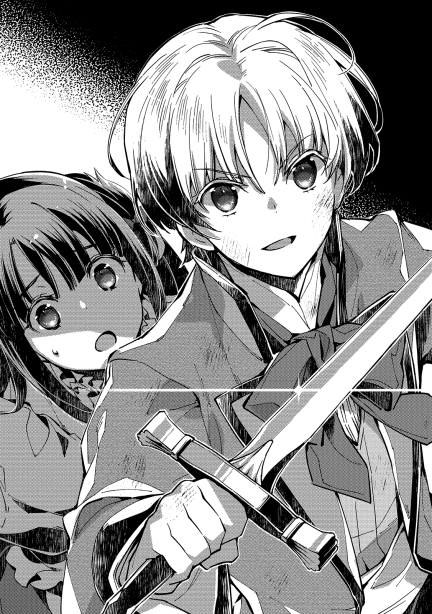
恐る恐る目を開けた少女が見たもの。それは、いつの間にか自由になっていた少年の姿。そして、見張りに立っていたはずの手下が倒れ、賊の頭目であろう男の手から血が流れている様であった。
「後ろから不意打ちったあ、やってくれるじゃねえか」
「この間、僕も友達に二人がかりでやられたばかりでしてね」
傭兵団長ストルーデルは、歯噛みをする思いだった。狡猾さをこの年で身に着けている末恐ろしいガキに。簡単に倒され、短剣まで奪われた間抜けな部下に。そして何より、子犬だと思っていた少年が狼であったことを、今更ながら気づく自分の愚かしさに。
戦場では、油断をしたものから死んでいく。自分だけはそんな油断はしないと思っていたのだが、子供に油断してしまった迂闊さ。取り落とし、足元に転がしてしまった剣にちらりと目をやる。それを取ろうとする隙を見逃すほど、目の前の少年は甘くないだろう。
「降参しませんか？」
「馬鹿言え。ここからだろう」
「そうですか。では、王手です」
ペイスが剣を握り直したと同時に、音が聞こえてきた。がやがやとした、大勢の人が生み出す喧噪。
「ペイス、無事か!!」
にらみ合う頭目と少年のいる部屋に、駆け込んできたのは、少年の父親だった。
ペイストリーが芋虫になっても少女を守っていた頃。父親たるカセロールは屋敷を包囲していた。包囲するはカセロール家の手勢三人と、公爵家・辺境伯家の増援十四名。そして傭兵扱いの数十名。どこで噂を聞いたのか、公爵家や辺境伯家の屋敷の方に押し掛けていた連中までいつの間にか加わったことで、今なお手勢は増え続けている。
「大将、いつでもいけます」
「うむ、我が息子も待ちくたびれている頃合いだな。突入班の編成は？」
「三名ずつを五班。囲んでいる連中には何と伝えますか？」
「そうだな......いや、私から伝えよう」
教会に屯っていた有象無象の仕官希望者達を、咄嗟に動員したわけで、その扱いは難しい。暴走させてしまえば、当然モルテールン騎士爵の責任となるのだから。彼らは、この誘拐事件で武勲と手柄を立てて、どこぞの貴族家に従士として取り立てられることを目的にしている。
突入というのは華々しいし、中に敵方の人間がいることも予想される以上、手柄にもつながるだろう。しかも、相手方に予想される戦力は質も量も劣勢。正規の専門軍人たる従士隊に質で劣り、数においては言うまでもない。圧倒的に優位な立場で戦える戦場ともなれば、手柄などは濡れ手に粟。我先にと突入したがる。
だが、彼らには包囲を続けてもらわねば、結局は賊を逃がす可能性が出てきてしまう。無秩序にさせることなく、かつ彼らを納得させる作戦を立てねばならないのだ。これを行うには、一つの才能が要る。
「諸君、これより我らは屋敷への突入を敢行する。ついては諸君らに、最重要の場を任せたい」
いよいよとなり、辺りに緊張が走る。
必要な才能とは、煽りの才能である。誑しの才能と言っても良い。事実を誇張し、或いは矮小化し、美辞麗句を飾り、人の感情を盛り上げる手段。それに長けていなくては、人を束ねる者にはなれない。
軍人であれば士気の鼓舞。外交官としては交渉の手段。内政家としては民心の慰撫に用いられるその才能は、貴族としては重宝する。そして、モルテールン騎士爵は、この才能に長けていた。
「我々は、最も危険な任に就く。それは敵を追い立てることだ。ここにはカドレチェク家とフバーレク家の精鋭がおられる故、突入は我らで行う。狭い室内では鍛えられたお方々の力こそ役立つ。そして我々に追われた賊は、必ず外へと逃げようとするだろう。その中に、賊首領が含まれている可能性は極めて高い。ネズミ一匹逃がさぬよう、諸君らに要請する。野郎共、準備は良いか!!」
「おぉ!!」
明らかにやる気を持って包囲網を整えた無給の傭兵たち。雇われているわけでもないので、本来であればカセロールの命令に従う義務はない。あくまで自発的な厚意での参加である為、無理強いはできない。故に要請であった。本来であれば、手柄を求めて突入側に回りたがっても不思議はない。だが、傭兵たちはカセロールに煽られてしまった。話術に乗せられたと言い換えても良いだろう。
狭い場所では兵の質が物を言うのは明らかであり、数の利を活かすには外の広い場所にいた方が良い。待ち受けて袋叩きにするのは、危険もなく美味しい。ましてほぼ確実に手柄首が出てくるのだ。裏口か表玄関か、はたまた横の窓からか。当たりを選ぶにはどうすればいいか。彼らはそう考えていた。突入に参加するかしないかではなく、何処の包囲に参加するかを考えていた。誰の思考誘導かも気づかぬままに。
それを見届けた後、カセロール達は友家の従士と共に堂々と表玄関に立つ。
「流石ですね。口上が上手い」
「何の、私よりも口が達者な連中なら、宮廷に嫌と言うほどいますよ。それでは......突入!!」
号令一下、玄関の扉が破られる。
元々、家主が粛清されて空き家になっていたものであるから、数人が一斉に蹴りを入れるだけで蝶番がはじけ飛んだ。中に突入したモルテールン騎士爵旗下十五名の突撃部隊は、屋敷に入ったと同時に戦闘になった。
「くっそ、何だよ」
「こいつら貴族の私兵だ。強えぞ」
「ぐぎゃぁぁっ!!」
突入部隊は無理をしない。剣を向けて手向かうものには、敵一人に対して三人で当たって確実に仕留める。逃げ出す者は無視する。
「おい邪魔だ、どけ!!」
「うるせえ、おまぁぐぼぁ」
「おおぉぉ、我こそはカルモナ家従士ラミロが子ミケル。我が槍によって賊を打ち取ったりぃぃぃ!!」
そして、そうやって逃げた先では、報奨と就職先に飢えた、目が金になっているような物欲の亡者が待ってましたと襲い掛かるのだ。こちらに至っては一人に対して十人以上が飛び掛かってくる。ぎらついた欲望の塊によって、逃げた者は悉くが討たれていく。
そんな猟場と化した旧アーマイア邸の中を、我が物顔で歩く三人組。モルテールン家の当主とその従士は、手向かうものをしばきあげつつ屋敷の最奥に向かっていた。
「あそこか？」
「坊の連絡が正しいなら、残っているのはあの部屋だけですぜ」
「よし、私が行く。お前たちも続け」
「ちょ、大将っ!!」
駆け出す三人。先頭を切って駆けているのが現場の司令官という無茶に、慌てたのは腹心のシイツとグラサージュだ。無謀を平然とやってのける自分たちの主を、急いで追いかけた。
ドアを蹴飛ばすようにして、部屋に飛び込んだカセロール。目の端に、見慣れた青みの掛かる銀髪を見つけた瞬間叫んでいた。
「ペイス、無事か!!」
「坊、無事ですかい」
「若様、御助けに参りました」
父親の乱入と共に、どやどやと後続がなだれ込む。
「僕は無事です。それよりもリコリス嬢を」
「分かっている。もう大丈夫だ」
今の今まで、睨みあっていた頭目と少年であったが、ここに至っては、形勢は圧倒的に傾く。無論、ペイストリーが有利であるという方向に。
団長は不利を自覚する。人質になりそうな少女は早々に安全を確保され、目の前の少年からは目を離せず、かといって増援もまた手強そうで、おまけに外の喧騒が蹴破られた扉の向こうから聞こえてくる。
「不味いねぇ、ここは逃げるしかないようだ」
「そう簡単に、逃がすとでも？」
薄く笑みを浮かべる少年の身のこなしには、隙がない。無論、子供である以上倒せないことはない。だが、長年戦いの中に身を置き、それなりの手下を率いてきたストルーデルからしても、倒すのは手間取るだろうと思われた。それほどに年不相応に鍛えられている。子供と大人の体力差もあるのだから、時間さえかければ確実に勝敗が決まる。だが、時間を掛けるわけにはいかない。
扉の方には更に手強そうな騎士と思しき連中。銀髪の小僧を倒し、騎士と剣を合わせた上で扉だった場所を突っ切って逃げる手を考える。だが、流石にこの手はない。フバーレク辺境伯の娘を監禁する為に、逃げ難い部屋をわざわざ選んでいたのもここにきて悪手になっている。これを狙ってやっていたのだとしたら、相当に頭の切れる奴が裏で絵を描いている。いや、場所がバレる早さや、手回しの良さから考えても、誰かしらの意図から嵌められたと見るべきだ。大人しく捕まるわけにもいかない。
となれば、ストルーデルが取る道は一つ。
「道がないなら、作るまでだっ」
ぐっとしゃがみ込んだ男は、地面に手を付いた。明らかな隙を見せた敵に、ペイスは躊躇もせずに立ち向かう。少年が、気合の一刀を持って突き入れた時。手ごたえのなさと共に事は起きる。
「うぉぁおっ」
「地震か？」
家の中の全てが揺れ動くような有様に、思わず体が泳ぐ面々。幾ら体を鍛えていようと、足場が揺れることなどを想定して訓練などしていないのだから当然だ。文字通り、足元が揺らいでいる。体勢を整える頃には、頭目は姿を消していた。
「やっぱり、逃げましたね」
「予定通りだな」
しかし、実戦経験豊富な当主と従士たちには動揺はない。相手が魔法使いの可能性が高かった時点で、逃げられてしまう可能性は考慮済みだ。カセロールのように、瞬間移動でないだけまだマシと言える。
「何事ですか」
突然の揺れという騒動に敵味方問わず混乱した中、カセロールやペイス達の元に駆け込んできた者達がいた。今回の婚約騒動を持ちこんだ二家の従士たちである。
これは丁度良い。と、騎士爵とその息子はお互いに目を合わせたままにやりと笑い、そのまま面倒事を彼らに押し付ける。
「リコリス嬢は無事保護した。彼女を早く父君の元にお送りするように。貴方達の方が先方に顔見知りも多く話が通りやすい。適任でしょうから、任せます。それで、この騒動の容疑者は？」
「自らを公爵と名乗るルハインゴ=アーマイアなるものを捕えてあります。裏口から逃げようとするところを、当家の者が捕えました」
「結構です。それが首魁でしょう。そのまま両閣下の元に連行するように」
「はっ」
早速の指示の下、動き出す他家の従士を見つつ、しめしめとほくそ笑む悪人が二人。良く似た親子の悪い顔に、怪訝そうな表情を浮かべつつも残った従士が声を掛けてくる。
「それで、皆様方は如何されるので？」
本来であれば、誘拐された御令嬢を父親の元へ送るという栄誉は、身を挺して守り切ったペイス達の権利である。だが、娘を誘拐されてやきもきしている所にのこのこ顔を出せば、これでもかというほどに質問攻めにあうことは目に見えていた。出来ることなら、誰ぞを先にやって事情を粗方説明させておいた上で、簡単な報告のみを後日行うぐらいにしたい。
それ故、親子二人は打ち合わせもしていないのに息を合わせて答えた。
「残党を始末してくる。後のことはシイツに任せた」
「ちょっ!! 二人とも、それはねえでしょう」
「魔法で追いかけられるのは自分達だけだし」
綺麗に重なった二重奏に、シイツは堪忍袋の緒が切れそうになる。確かに、相手が魔法使いで穴を掘って逃げられるらしいことから、追いかけるには移動か追跡に長けた魔法使いが好ましいというのは正論だ。シイツの魔法は情報収集には長けていても、追跡にはやや不向き。使えないことはないが、遠目に敵が見えた所で追い足がなければ意味がない。仕事を押し付けられる理不尽さが、いわく言い難い憤りになるだけのことであり、本音と建て前を見事に調和させた主君と次期主君の才能には褒め言葉すら浮かぶ。
「この性悪共が」
出た言葉は罵りであったが。
「さて、それじゃあ捜しに......ペイス、どうした？」
早速追いかけよう、とした矢先。少年は、あることに気づいた。
「あの男は、何処に逃げるつもりでしょう......」
「そりゃあ......あっ、そうか」
息子の言わんとすることに気づいた父親が、はっとした表情で剣を持つ。少年もまた、短剣をしっかりと構え、周囲を伺い出す。
「どうしたのですか？」
面倒事を部下に押し付け、自分達だけで逃げた残党を追いかけようとしていたのに、それが急に剣を構え出す。不思議そうな様子なのは、従士のグラサージュ。彼は弓の腕は良いし、それなりに機転も気配りもできる小器用な男ではあるが、咄嗟のことに戸惑う癖がある。
「実際に戦ってみた感触ですが、逃げた男の魔力はそう多くなかったです。もし穴を掘って逃げたとしても、遠くに行けるほどの魔力はないと確信します。近場はうちの手勢が取り囲んでいますし、今でもあちこちから駆けつけて来ている所。そんな只中に逃げるというのもおかしな話です」
「確かに」
「遠くに逃げられず、近場に逃げるのは意味がない。言葉を交わした限りでも狡猾さは見て取れましたし、冷静な判断力もありました。これぐらいのことは考えることも容易でしょう」
「それで？」
「逃げるに逃げられないが、窮地を脱する方法。となれば......」
ペイスが言いかけた言葉を、一人の男が引き継いだ。
「逃げたように見せて隠れ、粗方をやり過ごした後にゆっくりと逃げる。と考えるわけだよな」
のっそり地面から姿を現した、傭兵団頭目のストルーデルだ。ペイスとその父が、戦った感触などから推察した通り。隠れてやり過ごす気であったストルーデルも、流石にその作戦に気づかれてしまったことに気づいた。
故に、不意打ちもできずに、掘った穴から出るよりほかになかった。
「元貴族のあの阿呆を捕まえたなら、それだけで満足しておけって話だろうよ。あれが主犯なわけだしよう。こうなりゃ、ここにいる全員ぶっ殺して、逃げるしかねえよなぁ」
「面白い、やれるものならやってみろ」
そう受けて立とうとしたモルテールン騎士爵。自身の剣の腕には、いささかなりとも自信があったが為である。だが、それを少年が押し留めた。
「父様は手出し無用。これは、元々僕の獲物です」
「言ってくれるねえ」
ストルーデルは助かったと思った。幾らなんでも、魔力枯渇で魔法の使えない状況の上、騎士や従士を複数人相手取って戦うのは勝算がない。それに比べれば、一番くみしやすいと思われる最年少が、一騎打ちを所望ならありがたい。上手く組み敷いたうえで人質にでもすれば、逃げられる目も出てくる。
ちらり、とストルーデルは足元のやや先を見る。そこには自分の剣が落ちている。奇しくも目の前の青銀の髪をした少年に不意打ちで叩き落されてしまった剣だ。
「せりゃっ」
男は軽く身体を揺すったフェイントを掛ける。今にも体当たりをしそうなほどに低い姿勢で、腰を落としたまま前に進んだ後、転がるようにして剣を取る。使い慣れた剣の重みが心地よい。
「死ねや!!」
立ち上がった男は、気合一閃。低い位置から、子供の骨ごと切りそうな剛の剣をもって切り上げた。ペイスは咄嗟に、後ろに倒れるようにして躱す。
「ぐっ」
「貰ったぁ」
振り上げた剣の勢いそのままに、手首を返して振り下ろすストルーデル。幾千、幾万と振ってきた練磨された剣戟である。この勢いは子供の非力では止めようがない。
そのはずであった。
キンと甲高い音がする。男の長剣を、ペイスが短剣をもって軽く横から払った瞬間。男の剣が根元から綺麗に折れた。手入れを欠かしたことのない愛剣が、こともあろうに子供の短剣で折られるなどあり得ない。思いもかけない想像の埒外に、男は一瞬戸惑う。
そんな隙を見逃すほどに、ペイスが受けて来た特訓はぬるくない。少年は、迷わず男の喉首を掻き切った。
「ぐひゅ。手前ぇ......」
「忠告です。戦場において一度手を離れた剣が、二度使えるとは思わぬことです」
どたりと倒れる男を見やり、少年は父親の元に戻る。辺りには、生血の臭いが漂い始め、戦場跡の香りと成り果てた。
「見事ですね、坊。いやさ、若。いつの間に剣に小細工をしていたんで？」
「捕まっている時にちょっと。助けが来なければ、そのまま使おうと思っていた小細工でしたから、まあ備えあれば憂いなしということで」
「よくもまあ、あんなズル賢い手を思いつきますね。折れる剣を相手に持たせた上で、一騎打ちを誘うとか」
「その言葉、グラサージュの娘か、コアントローの息子に言うべき言葉ですかね」
「ルミとマルカルロか。あの悪ガキども、要らんことにだけは頭を使いやがって」
そこにいた大人たちは揃って、悪ガキどもの高笑いを幻聴するのだった。
着飾った淑女たちの煌びやかさ。それを花に例えるなら、それに惹き寄せられる畏まった紳士は蜂である。花の周りを忙しげに飛びまわり、甘い蜜を求めて羽音を鳴らす。羽ばたく勢いがあればあるほど、花は羽風に揺られて、蜂から頭を背けるのもまた愛嬌がある。時には花の方から蜂に近づくこともあるのだが、それはそれで一興と言える。
「しかし、幾らなんでも多すぎるでしょう」
「ん？ 流石のペイスも疲れたようだな」
「それはそうですよ、父様。さっきから何人を相手にしているとお思いで？」
「知らんな。五人から先は数えてない」
「十三人です。いい加減同じことを繰り返すのも飽きてきました」
モルテールン親子。それも子供の方が辟易としているのにはわけがある。しかして、彼らがいる場所を知れば仕方のなきことでもあった。
二人がいる場所。それは即ち、スクヮーレ=ミル=カドレチェク公爵嫡孫とペトラ＝ミル＝フバーレク辺境伯家三女の婚約披露祝賀会の会場である。もっと具体的な場所を言うのなら、王城の中庭と、それに面する一室を借り切ってのお披露目会だ。王家に連なる親戚筋たる公爵家嫡孫の祝い事。王家としても場所を貸すぐらいなら祝儀代わりと請け負うわけだが、それはそのまま公爵家の箔付となる。また、王都に隠然たる勢力をもつカドレチェク家と、今回の件で姻戚となるフバーレク家の家名向上にも繋がる。それ故に王城中庭での立食パーティと相成った次第ではあるのだが、ここにペイスを困らせる理由がある。
人が多いのだ。
王城の中庭は、万が一の時には軍の宿営地となれるように相応の広さがある。そこが寂しくない程度の招待客がいるわけで、軽く見ても千人はいる。細々と給仕している人間や警備の人員などはその倍はいるだろう。王都に籍を持つ宮廷貴族は言うに及ばず、領地貴族もそれなりに来ているし、来られずとも名代を送っている家は多い。当然一つの家から一人という決まりがあるわけではないので、伴侶や子供を連れて来ている家も多い。
この子供連れというのが何よりも厄介だ。何せ集まりの目的が婚約披露。話題を婚約だの結婚だのに持っていくのに労力は要らず、辺境伯家御令嬢誘拐事件解決の立役者である少年は、さっきから引っ切りなしに見合い攻勢を掛けられているのだ。世の中にはモテ格差という理不尽が存在するらしく、それを羨ましげに見ている青少年も多い。
本人が魔法使いであると知られ、今後は国の最大派閥となるであろうカドレチェク家とその縁戚となるフバーレク家の双方に相当のコネクションを持ち、見目麗しく才気闊達なる上に、父親は大戦の英雄。ここぞとばかりに縁を持ちたがる者は非常に多かった。特に、丁度年の釣り合いそうな娘を持つ家には狩り頃の獲物に見えるらしい。
婚約披露の場とはいえ、貴族が集まる社交界においては、マナーがある。最低限のマナーとして、目下の者が目上の者にむやみやたらと声を掛けてはならないというのもその一つだ。守らなければ、下心だらけの者が挨拶攻勢で折角の場を壊してしまいかねないからして、かなり大事な風習として今尚顕在である。その点、騎士爵の息子となれば目下も目下。同格を除けば全てが目上となるわけで、逆に言えば大抵の人間からは話しかけてもマナー違反にはならない。声を掛けやすい上に、声を掛ける価値があるのだから、声を掛けるなと言う方が無体と言うもの。
ちなみにその数は、会が始まって間もないのに軽く十件は超えている。中には伯爵家の御令嬢を紹介されることまであったのだから、中々に凄いことではある。ただし、当の令嬢は五歳だったが。
「おお、モルテールン卿、ここにおられたか」
「カドレチェク公爵、この度はおめでとうございます。ご招待頂きまして感謝の言葉もなく」
「いやいや。卿にはペトラ嬢の妹君誘拐の折には世話になった。おかげで大事に至らず無事この式を開けましたこと。儂の方こそ礼を言わねばならんと思っております」
「それも務めでありましたので」
辟易とした様子であったペイス達の元に現れたのは、今回の披露宴を主催している一人。国内貴族家でも屈指の権門勢家領袖、エリゼビオ=ハズブノワ=ミル=カドレチェク。武人たる威風を持って、独特の威圧感を持つ古豪。ひとしきり、エリゼビオとカセロールの貴族家当主同士の挨拶が済んだ頃、改めて公爵は一人の少年に目を向ける。
「ペイストリー=モルテールン卿におかれても、この度の活躍の噂は聞き及んでおる所。義理の孫になるリコリス嬢を守って頂けたこと、主役故に椅子から動けぬ実孫に成り代わって礼を申す」
「いえ、女性を守るのは騎士としては当然の務めなれば、礼には及びません」
「ほう、これは良き心がけ。相変わらずの凛々しさを、我が孫にも見習わせたいものですな」
「我が友は、十分に凛々しくおられます。今日もまた挨拶をしましたが、それはそれは立派でありました」
公爵嫡孫であるスクヮーレは披露宴の主役である為、中庭に面した一室で置物のように座らされている。招待客全員からの祝辞を受け取るまでは動けない上、一目惚れの女性が将来の妻として隣にいる為、カチンコチンに固まっていた。唯一緊張が緩んでいたのは、ペイスが挨拶をする時に思わず笑いを隠したのを見咎めて、気楽な会話をできた時ぐらいだろう。
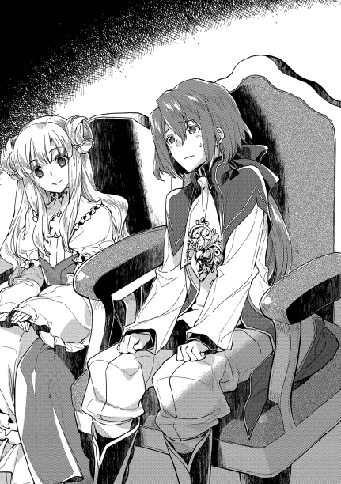
「武勲確かな貴殿に言われると、思う所はあるものよ。スクヮーレも、婚約したのだからもう少し頼りがいのある男になって欲しいと思うのは、儂の強欲だろうか」
「這えば立て、立てば歩めの親心と言います。如何に優れていようと、更に更にと思ってしまうものです。本人の為には慎まねばならぬものでしょうね」
「おお、それは貴君の父君に言われるべきだな。モルテールン卿は口を開けば貴殿のことばかり話す」
「お恥ずかしいことです。父は尊敬すべき点多々あり、誇らしく思っておりますが、いささか子煩悩も過ぎるのが玉に瑕と思っております」
「親やじじいにとってみれば、成人したとはいえ、子供は子供であるからな。スクヮーレなども、儂から見ればまだまだ尻に殻の付いたヒヨコのようなものよ。ましてや騎士爵からすれば、十にも満たぬ貴殿は、まだまだ可愛い子供なのであろうよ」
「恐縮の次第。ところで閣下、この機会に一つご確認したいことがあるのですが」
「さて、なんであろうか」
子供の無邪気な笑顔とは、人の心を和らげる。生まれたての子猫の拙い動きが愛くるしいのと同じで、相当のひねくれ者でない限りは頬の緩むものであろう。ペイスが浮かべているのもそれである。ここに母親がいれば、その柔らかそうな頬っぺたを突きたくなる衝動に悶えていたはずだ。歴戦の交渉人たるカドレチェク公爵にとっても、例外には当たらなかった。思わず警戒心を解いてしまったのは、後から考えれば失策だったのだろう。
「先頃フバーレク家のリコリス嬢が攫われた折、奇妙に思ったことがありました。賊の手際の良さや退却判断の確かさの割に、攫う相手を間違えたり、退路の確保が不十分であったりと拙い部分や、情報の取得に明らかな偏りがありました。貴重な魔法使いを用意し、拠点を確保できる財力とコネも必要だったでしょう。その割に、本人にはそこまでのコネクションがあるとは思えなかった。没落貴族に、王都で好き勝手できるほどのコネはないですからね。総じて見ると、どうにもチグハグな印象が拭えない」
「ほう、貴殿は想像力も豊かであるな」
「ところがここに、仮定の話として第三者の介在があったとするなら、このチグハグな不自然さが解消されるのです。偏った情報を流し、コネを用意し、王都での横行を見逃す第三者の存在、です」
「ふむ、ふむ」
実に興味深い、という態度の公爵と、可愛らしげで無邪気な子供を上手に取り繕っている少年。パーティの参加者が離れた場所からそれを見る限り、他愛もない世間話をしているようにしか見えなかったのは幸いだったのだろう。
「そもそもこの事件。今の時点で一番得をしているのは何方でしょうか」
「さて......」
「仮に得する人間がいると仮定し、その〝誰か〟に敵意を隠さない相手を芋づる式に掃除できた。〝誰か〟は王都にかなり強い権限を持っているはずで、警備を多少なりとも弄って監視にわざと穴を作れた。〝誰か〟はこの婚姻で相手方に恩を売れた。あえて妹を襲わせることで〝誰か〟の方は安全を買えた。他にも......」
ここにきて、言わんとすることを察した公爵は途端に顔を引きつらせた。目の前の少年の笑顔が、子猫どころか虎の笑顔であったことを改めて思い出すに至る。
「もういい。貴殿の言わんとすることは、その誰かが儂であるということか？」
「いえ。あくまでそんな裏で絵を描いていたような人物がいたとしたら、という想像の話であります閣下。子供とは時に荒唐無稽な作り話を夢想するものでありますから、そこは大人の度量として笑って頂ければ」
「貴殿は成人しておる。子供扱いもできんだろう」
「そこはそれ。私などは父や公爵閣下からすれば、尻に殻の付いたヒヨコでありますれば」
「よく言うものよ。末恐ろしいと心底思う」
公爵がため息を隠せたのは、交渉人としての矜持だろうか。心の底からの吐き出すような思いを受け、ペイストリーは慇懃に頭を下げた。
「さて、それとは〝全く関係のない〟話ではありますが、当家はご存じの通りいささか難治の土地を持っております。何がしかの手を打とうにも、先立つものがなければ難渋するのが世の常。賢明なる閣下におかれては事情をご理解頂き、いささかなりともご助力を賜りたく思っております」
「油断も隙もあったものではないな。ちなみに、ご助力いたしかねる場合は何とする？」
「私の口が軽くなります。丁度辺境伯閣下もおられますので、挨拶をせねばならぬところでしょうし、先ほどの話も、子供ゆえにうっかり話してしまうやもしれません」
「分かった。降参じゃ。後日それ相応の援助は約束しよう。この度の謝礼という名目もあるのでな」
「閣下の御器量には感服いたす所存。後日改めてご挨拶に伺いたく思います」
ふん、と鼻息を荒らした公爵は、内心してやられた思いがあった。確かに、アーマイア元公爵家含む、敵対派一同が蠢動していたのは知っていたし、それを一網打尽にする機会を伺っていたのは事実である。また、敵方と想定される人間にそれとなく偽情報を流していたのも事実だ。その指示を出したのが当の公爵本人なのだから断言できる。
しかし、間違っても可愛い孫の婚約者や、その妹を危機に晒すつもりでやっていたことではない。王都の軍権を預かる身として情報管理は通常業務であるし、公爵の立場を考えれば敵など幾らでもいる。それを総合して見た時、ともすれば今回の事件がまるで公爵が自作自演をしていたように見える、と指摘されて思わず冷や汗を流したのだ。自身も気づかぬことを、遠回しに忠告してもらえたことを感謝しつつも、露骨に集られたという点で不愉快に思う。総じて、悲喜交々の複雑な心中ゆえに、鼻息を荒らしたのだ。
どう見ても幼げな少年と、傍から見れば親しげに長話する光景。まして少年のカウンターパートが並ぶものなき権勢家であるならば、否応なく目立つ。それ故に声を掛けてきた者もいた。
「おぉ、モルテールン卿。それに、ご子息もおられるか。よく来て下さった。此度のご助力には感謝の言葉もない」
「これはこれは、フバーレク辺境伯。御息女の婚約に際し、改めてお祝い申し上げます」
今回の婚約披露宴のもう一人の主役側。ドナシェル=ミル＝フバーレクその人だ。東部の取り纏めと、仮想敵たるエレセ・ヤ・サイリ王国との最前線を守る役目柄、王都にいることは珍しい。今日のようによっぽどの理由が無ければ、東部から離れられないのだから当然だ。それ故にこの機会に縁を持っておこうと声を掛ける者は多いのだが、彼には彼の思惑があってわざわざ公爵とペイストリーが揃っているタイミングで声を掛けてきた。
これは少々はしたない行為。ルール違反ではないが、かなりの言い訳がなければ眉を顰められる。他人の歓談を邪魔する行為は、誰でも嫌がる行為なわけで、まして交渉中であればそれを邪魔された時に押していた側は敵意さえ持つ。余計なことを、といった感じで。
そう、かなりの言い分が要るのだ。
「フバーレク辺境伯。年若き英雄に礼を言いたい気持ちは分かる。卿も人の親であれば、娘を助けてもらった恩もあることだろう。しかし、国家の重席たる卿がそのように急がれずともよいと思うのだが？」
案の定、今しがたペイストリーと話していた公爵に見咎められた。
今後、公爵と辺境伯は縁戚となる。二人の周囲に耳と目が集まるのは仕方のないことであり、下手に近すぎる様子を見せては、結託して良からぬことをしようとしていると、痛くもない腹を探られ、要らぬ警戒をさせてしまう。それ故、婚姻の約を交わした後はできるだけそっけなさを演出するべき。それぐらいのことは辺境伯とて分かっているはずである。にもかかわらず、自分から公爵の方に寄ってきた辺境伯の思惑や如何。まして眉を顰められそうな真似までやらかしてのこと。ただ気楽に声を掛けたわけでないことは明らかだ。何事かありそうな雰囲気が漂ってきたところで、招待客も興味津々で様子を伺っている。
「いやいや、私としても是非ペイストリー＝モルテールン卿に御礼を言わねばならぬと急いておった所でしてな。改めて、卿には心より感謝する次第」
「恐縮です」
「お蔭で娘二人は無事成人となりまして......そう言えば、卿は既に聖別の儀を受けられておいででしたな。魔法も授かったとか」
「はい、神の恩寵灼かなるに感謝の念あるのみかと」
辺境伯の思惑をペイスは推察する。こういう不文律を踏み越えてまで押してくるとなれば、まず普通の歓談ではない。多少の不利益を甘受してまで得たい、非常に大きな利益がある。或いは少々の悪評など今更と思えるほどに大きな不利益を回避したい。そのどちらかだ。守るべきものが大きい辺境伯が、それを危険に晒してまで避けたいリスクなど早々ない。であるなら、何がしかの大きなメリットを求めて声を掛けてきたと考えるべき所。ペイストリーに声を掛けてきた所から考えて、まずそのメリットはペイス本人の持つ何か。モルテールン領にメリットを見出していたのなら、父親の方に声を掛けるはずだからだ。聖別の儀について切り出したところから考えれば、それに付随する話を持ってきたはずである。
そこでふとペイスは思い当たる。
魔法。
ペイスが考えるに、自身の持つ最も価値のある物がそれである。万人に一人の稀有な資質。更に、辺境伯はペイスの魔法の内容も知っている。その有用性を、自分には見えない所で何か思いついたのかもしれない。こうなると、話の持っていき方次第では大儲けに繋がる。と、少年は心の中でほくそ笑む。だがそれ以上に、自分達が損失を出さないようにしなければならない。
「卿は父君から魔法の才能を得、母君から類稀なる美貌を受け継がれた。実に羨ましい限り」
「辺境伯閣下にそう言って頂けることを、両親に感謝する次第」
「何の。卿ほどの人物であれば、近い将来引く手数多になることでしょうな。特にご婦人方には麗しき才人は人気でしょうて。それとも、もう心に決めた方でもおられるかな？」
「いえいえ。私などは未だ若輩の身なればそのような話には縁遠く」
しかし、どうにも風向きが怪しい。
「卿も既に成人されたわけですし、身を固めるに早すぎるということはありませんぞ」
「騎士爵家に生まれた者として、いずれは止む無し、という気持ちは持っております。しかし先にも述べたとおり若輩の身ですので」
「左様ですか。いい人がおれば、将来身を固めることもありましょうな」
「まあ、まだいい人との出会いがありませんので」
辺境伯と息子のやり取りを黙って聞いていたカセロールは、やられたと感じた。日頃は聡い息子であっても、この手のやり取りはまだ不慣れであったかと忸怩たる思いである。そして、今更会話に割って入るには難しいものがある。
「ほほう、では私の娘などは如何ですかな？」
「は？ ペトラ嬢はスクァーレ殿との婚約を結んだばかりでしょう？」
「いやいや、リコリスの方です。卿に助けて頂いてより、娘の方も満更ではない様子でしてな」
「はぁ、光栄ではありますが......」
「気の乗らぬ様子ですな」
「私のようなものでは分不相応でしょう。リコリス嬢ならばもっとよき人がおられるやもしれず」
ここで言質を与えてはならない。と、考える程度にはペイスも知恵がある。だが、流石に前世の記憶をおぼろげに持っていたとて、それも含めて経験したことを十全にこなすのは不可能なのが道理。今までのやり取りで既に、言質を与えてしまっていることに、彼は気づけていなかった。気づいていたなら、もう少し違った対応をしたはずなのだから。
「ほほう、貴君は先ほどいい人がいれば身を固めるとおっしゃった。しかし私の娘は嫌だとおっしゃると。はてさて、貴君からして、私の娘が悪いということかな？」
ここにきて、ペイスもようやく自分の失策に気づいた。父親の苦い顔、公爵のしたり顔、辺境伯の顰め面。どれもこれもが一つの答えに繋がる。
少年は気づけなかった。彼の一番の価値は魔法ではなく、彼自身そのものであること。
「......いえ、決してそのような意図はなく」
「わが娘に不満はないと？」
「リコリス嬢は素晴らしい女性であることに異論はありませんが......」
「ではよろしいですな。カセロール殿もよろしいか？」
ここにきて、ようやく辺境伯はペイスの父親に声を掛けた。この状況で、出てくる答えなど一つしかない。辺境伯が押し、公爵がわざわざ睨みを利かせる場で言われてしまったことを、面と向かって反発すればどうなるか。分からない人間などこの場には皆無だ。
「我が家にとっても光栄なことかと」
「よし、では決まりですな。早速、皆を集めてまいりましょう。おい、今すぐうちの皆を集めて来なさい」
「おお、それでは我がカドレチェク家の者も集めましょうぞ。誰か、皆を呼んできてくれ」
あれよあれよと言う間に、ペイス達の周りには人が集まる。手に手に、新しい酒が用意される。
ややあって、一人の少女がペイスの傍にやってきた。今回の誘拐事件の被害者でありながら、少年に守られたリコリス=ミル＝フバーレクである。さりげなく横目で見ようとしたペイスは、彼女に目を奪われた。
披露宴主役の親族として、着飾るのは当然ながら、その見事な仕様に周囲からも感嘆の声が上がる。髪型はやや上目で束ね、そこに煌めく飾りを散らしてある。ピアスこそないものの、首元には金貨が何十枚と飛びそうな豪華な、それでいて控えめなネックレス。上から下までが綺麗なグラデーションになるようなドレスを着こんでいるが、最も人目を引くのは少女自身。自分が主役になっていることへの気恥ずかしさと、それを態度に出してしまう、年頃の少女独特の恥ずかしげな様子。かといって逃げるでもなく、隠すでもなく、嬉しそうに少年の傍にいる様。いじらしく、それでいて可愛らしい様子は、見るもの全てを幸せな気持ちにさせる。
大人たちなどは、自分もあんな初恋の初々しさがあったものだと目を細める。
「さてお集まりの諸卿。私ことドナシェル=ミル＝フバーレクは、この度、娘の伴侶を約すことと相成った。その相手はスクヮーレ=カドレチェク卿。そして、ペイストリー＝モルテールン卿の御両名である。諸卿諸官におかれては、新たに息子となった両名を是非ともお引き立て頂きたい」
「さても目出度いこと。我がカドレチェク家に美しき娘が増えたと思えば、英雄の息子も義孫となる。この嬉しきに、乾杯!!」
「乾杯っ!!」
あっという間に決められてしまった自分の婚約に、ペイスもハァとため息をつく。しかしそれは、リコリス嬢が嫌だからと言うわけではない。クリッとした目。スッと通った鼻筋。年相応に瑞々しいくちびる。そのどれもが可愛らしく、将来は間違いなく美人になると確信を持てる。少年からしても、彼女自身には何の不満もないどころか、むしろ喜んでいるぐらいのものである。悩んでいるのは、乾杯の音頭を取ったおっさん連中のあくどさだ。
「ペイス様」
「リコリス様。この度は色々と迷惑を掛けてしまいましたね」
「いえ、迷惑などとは。それで......私でよろしかったのでしょうか」
不安げな様子を見せるリコリス。彼女も貴族家に生まれた者として、いつかは親の決めた相手と結婚せねばならぬことは承知していた。聖別の儀を受けた後であれば、すぐにでも相手を決められると覚悟はしていた。まして、自身を守ってくれた少年には想いもある。飾らない言葉で表現するならば、嬉しいの一言。
だが、彼女が不安になるのは、自分が四〜五歳は上であるということ。この年頃の数年差は、大人が考える以上に本人には深刻な問題に思えた。
「僕は、正直に言うなら嬉しいですよ」
「私もです。これからよろしくお願いします」
「こちらこそ」
実に初々しい。照れながら、そして遠慮しがちに距離を詰める二人には、見ている大人たちが赤くなってしまいそうなほど純真な恋心が見て取れる。これから、じっくりとお互いを知れば良い。二人の為の時間は、これからなのだから。そんな貴族特有の考え方もまた、周りの大人が見守る理由であった。
「そうだ、ペイス様。私、前に頂いたものをお手本にして焼き菓子を作ったんです」
「この間のというと、クッキーですね」
「持ってきているので、是非召し上がって下さい」
侍女に預かってもらっていた焼き菓子。甘い匂いがするので不思議に思っていた正体はこれであったか、とペイスは納得する。布地に包まれていた封を開けば、その中には十ほどのクリーム色。ふわりと漂う香りに香ばしさが残るのは、使った材料が良いからに違いない。
「どうぞ」
「頂きます」
──サクリと食べた焼き菓子は仄かに甘く、そして塩味が効いていた。
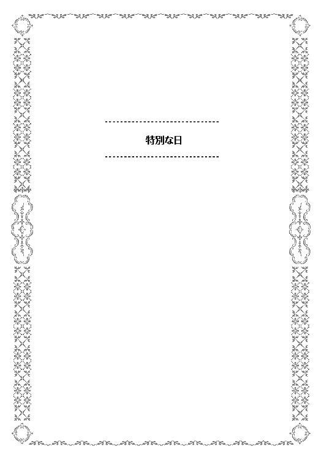
十二月二十四日は特別な日。
特に、お菓子職人やケーキ職人にとってはこの日が一年で最も忙しい日。
そう、クリスマス・イブだ。
無神論者や仏教徒を自称する人間の多い日本にあって、何故か世間一般に広く認知されている一神教の聖夜。
とある店では、十二月の売り上げが年間の売り上げの約半分を占める。
更にイブの日の売り上げは、十二月の他の日に比べて十倍以上を稼ぐとなれば、その重要性は誰の目にも明らかだ。
この日、職人は文字通り戦場に立つ。白いコックコートを着こなし、眼光鋭くも若々しい立ち居振る舞い。
「ホイップの準備はできていますかっ!!」
「まだです!!」
「急いでください。もう土台の方も焼き始めます。どんどん作って」
「はいっ」
菓子職人としての腕も確かで、店主が日本代表になるほどの腕前であると評判の店ともなれば、前日から徹夜の作業でイブの商戦に備える。
厨房の業務用オーブンはフル稼働状態で、焼きあがる端から次の焼き物と入れ替えられていく。
この店が、世間のケーキ屋と違う点を挙げるなら、その注文方法。
元来スイーツショップとして、菓子全般を商いとしている為、クリスマスケーキに関しては完全予約制をとっているのだ。手作りにこだわり、素材も厳選し、合成保存料や合成着色料の類を一切使わないこだわりのケーキと銘打っている為でもある。
それでも流石に人気店とあって、年を追うごとにその注文数は増える一方。物によっては、一ホールで数万円という値になる超高級なケーキにもかかわらず、予約は毎年一杯になる。
一流パティシエによるオーダーメイドの手作り品。世の中のグルメや、女性の関心を買いたい紳士にとっては、そんな金額ですら惜しいとは思わないほどの質を誇る故である。
イブの夜に独り身という悲しい職人見習いや、恋人とのデートを泣く泣く諦めた接客アルバイトなどを動員しての戦場。この戦場は、昼過ぎごろから夕方にかけては正に死闘となる。仕事帰りであったり、或いは一見の客であったりを捌く為、店内の喫食スペースにすら立ち見のように人が並ぶほどの入り。
商売繁盛はまことに結構なことである。時給の変わらないアルバイトの悲哀を除けば。
「ありがとうございました」
「またお越しください」
店員の、元気な声が響くうちに、日は暮れていく。徹夜続きの者はこの山場を越えれば帰れるとあって妙にテンションも高くなる。
戦場のマーチは高揚感をもってしばらく続いた。
夜も更け、空を夜陰が覆い尽くした頃。高揚感と引き換えにした疲労感を、店員たちが強く覚え出す頃。店もそろそろ閉めようかという時間。件の店の場合、この時間は流石に客もまばらになる。後は、お得意さんの予約が何件か残る程度。心地よい充足感が店員たちの心を満たし、それ以上の疲労感を覚える。
そんな折、高級店には似つかわしくない来訪者が店に入ってきたことに、一人の職人見習いが気づいた。
この職人見習いは、体力仕事のパティシエには珍しく女性である。この店は接客のアルバイトに女性が多いことから、女性用の花摘み場は厨房や控室ではなくレジを通った所にある。故に所用を片づけに向かう途中で、店内にいたその来訪者に気づいたわけだが、彼女が来訪者を客と断じきれなかったのにはわけがある。
その来訪者は、年の頃は五〜七歳。小学生低学年ぐらい。下手をすればそれ未満の女の子。この時間に出歩く子供にありがちな茶髪などいうこともなく、子供らしい綺麗な髪を肩ほどに揃えている。どこかポップな感じながら、清潔感を持つ服装を見れば、普通の子供という印象しかない。
その子は手に何かを握ったまま、じっとショーウィンドウを睨めつけていた。親がいる風にも見えず、お客というよりは迷子と言った方が似合いそうな感じだった。
少女はウィンドウの端を見る。そこが空っぽであることが分かると、順番に陳列場所を見ていく。時折商品が残っているのを見かけるものの、値段を見ては悲しそうにする。
「お嬢ちゃん、こんな時間にどうしたの？」
職人見習いが声をかけると、大人の女性に声を掛けられたからだろうか。不安げな様子をしたまま顔を上げ、少女は握った手を差し出しながら言った。
「お姉ちゃん、ケーキをください」
差し出された手は開かれ、中には五百円玉が一つ。十円玉が二枚。
ずっと握りしめていたからだろうが、手のひらにはお金の跡が残っていた。
そんな少女の様子に、困ってしまったのは職人見習いの女性の方だった。
何せ今日は特別な日だ。ケーキは全て予約に限っている為、そもそも飛び込みの一見客に売る為の商品がないのだ。その上、この店のケーキは全て職人手作りの高級品。一ホールでも万の額になるケーキが普通であり、五百円玉一つ二つではそもそもピースのケーキすら碌に買えないのだ。
ましてや時間も時間。数百円で買えるピースのタルト等も売り切ってしまった為、ショーウィンドウの中はほぼ空っぽの状態である。
「ごめんなさい。見ての通り今日はもうケーキは売り切れなの」
「そんなぁ......」
見習いの女性の申し訳なさそうな言葉に、女の子は途端に泣き出しそうな顔になる。
ジワリ、ジワリと涙が目に溜まっていき、今にも溢れそうなほどに瞳を潤ませて食い下がる。
「あたし、お母さんにケーキを買わないと駄目なの」
「この時間なら、コンビニでもケーキがあるかもしれないわよ？」
「ダメ。このお店のケーキじゃないと......だって、だって。うわぁぁん」
ついに泣き出してしまった少女。
その泣き声に、何事かと店内の人たちが集まってきた。その中には、件の職人もいた。白い調理服を着たままなのは、まだ忙しい作業途中に出て来たからだ。世に聞こえし名パティシエであっても、子供の泣き声に勝てるわけもない。
「一体どうしたんですか？」
「あ、師匠。実はこの子がケーキを買いたいと言って、迷子っぽくて、売れるものがなくて、泣いちゃいました。私も泣いて良いですか？」
「よく分かりませんね。落ち着いて、詳しく話してください」
職人の言葉に、弟子でもある見習いは丁寧に事情を話していく。夜分に少女が一人で来たこと。数百円を握りしめていたこと。ケーキが買えないと知って泣き出したことなどだ。
話を聴いた店主は、まず警察に迷子の連絡を入れるように指示を出す。疲れているはずなのに、背筋を伸ばしてテキパキと指示を出していく様は、誰しもが頼もしさを覚える。そして、一通りの指示を出し終えたところで、えんえんと泣いている女の子の傍にしゃがみ込み、頭を撫でながら優しく声を掛けた。
「お嬢ちゃん、どうしてケーキが欲しいのかお兄さんに教えてくれるかな？」
「ぐすっ、あのね、お母さんがね、ケーキが食べたいって言ったの」
べそをかきながら少女が語った所によると、少女の母親は今入院中なのだそうだ。
軽い怪我による入院の為、食事制限は厳しくないそうだが、出歩くわけにもいかない。父親も仕事で忙しいらしく、娘も人に預けているようだ。少女の母親は、見舞いに来る者もおらず、独りのクリスマス・イブは寂しくなると嘆いていたらしい。特に毎年楽しみにしていたのがこの店のケーキであり、それが食べられないことを心から残念そうにしていたそうだ。
それを見ていて心を痛めた少女は、自分のなけなしの小遣いを握りしめ、保護者にも内緒でケーキを買いに来たという。子供の足で一時間以上かけて歩いてきたというから驚きである。
迷子として届け出も出ていたらしく、警察はすぐにも保護者へ連絡してくれた。
大急ぎで駆けつけてきた父親に、少女は目いっぱい怒られる。
「勝手に独りで出歩くな。こんな夜中に危ないだろう。みんな心配したんだぞ!!」
「だって、だって、お母さんが......」
「ほら、帰るぞ。ここのケーキは予約してないと買えないんだ。今年は諦めなさい」
「やだ、お母さんにケーキ買って帰るんだもん!!」
いかにもしぶしぶ、といった雰囲気で帰宅をしぶる少女。父親に抱きかかえられたものの、足をバタつかせ、手をいっぱいに伸ばして腕の中から逃れようとする。
少女の目元は赤くなり、頬にも涙の跡が付いたまま。
そんな少女の様子を見ていた職人が、父親と少女を呼び止めた。
「ご主人、折角来て頂いたのです。子供と言ってもお客様はお客様。ましてや、こんなにもうちの店のケーキを欲しがってくれているのです。手ぶらで返すのは如何にも心苦しい」
「はぁ」
「お菓子というものは、人を泣かせる為にあるのではない、と私は思っていましてね。今しがた、丁度出来上がったケーキがあります。お嬢さんの涙に免じて特別にお譲りしますが？」
「お心遣いは嬉しいのですが、何分持ち合わせが......」
一ホールお買い上げで幾らになるか分からないものを、いきなりポンと買える人間などは珍しいものだ。それも、慌てて駆け付けていれば持ち合わせが心もとないのも当然である。
「それではどうでしょう、お嬢さんのお小遣いで買える分だけ切り分けますので、お嬢さんからのプレゼントにされては」
「いいの？ やったぁ!!」
職人の言葉に、少女は跳ねるようにして喜ぶ。さっきまでの泣き顔が、嘘のように晴れていく。
「勿論、うちも商売だから、ちゃんとお金は頂くからね？」
「うん、分かった。はいこれ」
少女の体温がしっかりと残った硬貨を受け取る職人。そのまま、父と娘の二人を店の奥に誘った。
店の中に招待された親子は、じっと待つ。父親は申し訳なさそうに、娘はそわそわと嬉しそうに。ややあって、職人が綺麗なケーキ・ボックスを持ってくる。
「じゃあこれを。頂いた分でお譲りできるよう、切り分けましたので」
「本当に申し訳ありません」
「おじちゃん、ありがとう!!」
ケーキボックスには、確かに欲しかったケーキが入っていたと、喜ぶ女の子。よほど欲しかったのだろうが、あまりにはしゃいでいるので、ケーキを取り落さないか心配になりそうなほどだ。満開の桜のような笑顔を職人に向け、何度も、何度も御礼の言葉を口にした。
少女は父親に手を引かれ、小遣いで買ったケーキを大事そうに抱えて帰る。それを、店員たちも笑顔で見送る。聖夜のちょっとしたサプライズに、疲れも何も忘れそうになった。
皆と共に、親子を見送った職人は、満足げに一人頷く。その姿に、先ほどの見習い職人が声を掛けた。
「師匠、何で満足げな顔しているんですか？」
「いや、少しは僕も菓子職人らしくなれたな、と思いましてね」
「菓子職人らしく？」
「ええ。そうです。菓子職人たるもの笑顔を作るべし、ですよ。腹を満たすだけなら料理人になれば良いわけで、菓子職人である以上、人を喜ばせてなんぼです。あの少女の笑顔を作れたことが、僕は誇らしい」
「何だか、哲学っぽいですね」
「そうですね、君もいつか分かる時が来ます」
職人見習いの女性は、やや不満な気持ちを覚えた。自分の師匠たる尊敬すべき職人が、何を見ているのかが分からなかったからだ。彼の見ているものと、自分の見ているものの違い。そこに、まだまだ高い壁があるような気がして、寂静感を覚えたのだ。
それ故、少しばかりのいたずらっ気を出した。
「それにしても師匠。おじちゃんですか。流石にお兄ちゃんとは呼んでもらえなかったみたいですね」
「君だって、あの子からすればおばちゃんでしょう」
「いやいや、私はお姉ちゃんって呼ばれましたから、大丈夫ですよ。師匠とは違いますから」
「そうですか......」
徹夜明けで疲れていたせいだろう。職人見習いの女性は、自分の茶目っ気が、職人のそれの呼び水となることに気づかなかった。
「さて、それじゃあケーキをもう一度作り直しますか。あの子に切り分けたせいで、例のケーキが半端になってしまいましたからね」
「うぇえ、予約のあれですか。あれ、飾り付けるのが手間なんですよぉ。勘弁してください」
「師匠にいちいち文句を言わない。いい勉強ですから、できる所まで一人でやってみなさい」
「うぎゃ、師匠の鬼!!」
「失礼な、弟子を育ててやろうという優しさです」
「そんな言葉は、その嘘臭い笑顔を消してから言ってくださいよ!!」
聖夜の夜の騒動は、賑やかな師弟のやり取りを残しつつも収まった。誰の心にも暖かな笑顔を残しつつ。
いつか、最高の菓子を作ってみせる。
そんな職人の夢が、すぐ傍まで来ているような気がした一夜だった。
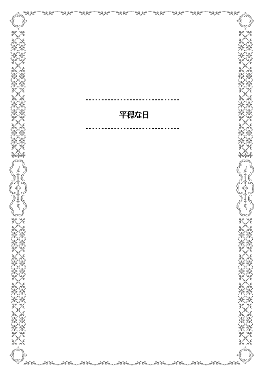
モルテールン領の領主館。執務室。
未だに真新しい感じのするこの部屋で、二人の男が話をしていた。
一人はモルテールン騎士爵領を治める領主。もう一人は、その腹心。
彼らが話しているのは、領地の経営概況についてだ。
「で、こっちが今年の各家の納税状況を纏めたやつだ」
「ほほう、今年はまた順調だな」
例年、豊作や凶作に悩まされるのが農地経営というもの。
領内の産業のうち、ほぼ九割方を農業に依存する領地経営において、農家からの徴税状況は死活問題になる。
その税収と支出の割合が、好転し始めたのは近年になってのこと。それまでは、年々赤字幅が増える状況に、頭を悩ませていた。
その状況を一変させたのが、麦作を減らし、その分を豆作に切り替えるという農政改革。改革の結果は絶大であり、豆による収穫が安定して得られるようになったのみならず、土地を肥やす豆のおかげで、作付を減らしたはずの麦の収量まで増加した。他人から聞かされれば、何を夢物語を、と言いたくなるほどの上々の結果。
この成果を出すに至った経緯を語る時、領主やその親友が必ず挙げる名がある。
「何が偉いって、坊の言うことを信じた大将が偉い」
「あの時は、一か八かの賭けのつもりだったからな......」
そう言って、カセロールは昔を思い出す。
◇◇◇◇◇
「今月も赤字か、まだこの間の助っ人代が残っているが、それも今年いっぱいだな」
隙間風が遠慮なしに吹き込むボロ屋の一室。
一応中身だけでもそれっぽくしようと気張って揃えた執務机の前に座り、カセロールはため息をついた。独り言がつい愚痴としてこぼれてしまう。
モルテールン領を拝領してから十五年を過ぎ十六年目を迎えるにあたり、一向に良くなる気配のない領地経営に、最近は先行きの不安を覚え出す。何とかしなければならないのは分かってはいるが、何ともできないもどかしさが募る日々。
水不足、痩せた土地、人手不足、食糧不足、物資のあらゆるものが不足している現状。食料増産の為には畑を広げねばならないが、その為に人を増やせば水や食料を始め全ての物資が余計にかかる。そんな雁字搦めの不自由な経営でも、蓄えを切り崩しつつ何とか今まではやってきた。
しかし、このままではいけない。自分がいなくなったら、それこそ出稼ぎもできずに早晩領民全員干上がりかねない。
何か、きっかけが欲しい。
せめて何か一つでも、問題が解決する糸口が欲しい。
そんな悩みを抱える中、ノックの音がする。
親友が執務室に入ってくるなり、声を掛けてきた。
「大将、お前さんのところの坊やが、裏の遊び場で妙なものを作ってるぞ」
「妙なもの？ 大きな砂山でもこしらえたか？」
「そんなものが可愛く思える。まあ見てくると良いさ」
そう言われて、カセロールは部屋を出た。我が子のあどけない顔を思い浮かべると、つい笑みがこぼれる。
先日、三歳になった息子を初めて馬に乗せ、領内を見せて回った。中々に聡い子のようで、この領地の問題点を即座に看破してみせた。子供ながらの無邪気さなのだろうが、その言葉に思わず苦笑いしてしまったのは記憶にも新しい。
物覚えもよく、言葉も直ぐに覚えた我が子。あの子は天才に違いないとシイツに言うと、それは親の欲目だと笑われた。
そんな我が子が、何をしたのか。砂山を作ったのでなければ、子供らしい珍妙なオブジェでも作ったのだろうか。何を作ったにしろ、そこは親として褒めてやるべきだろう。
などと考えつつ、カセロールが裏庭に行くと、そこにあったものは確かに子供の砂山ではなかった。
「なっ、なっ、何だこれは!!」
カセロールが驚くのも無理はない。
そこにはあるはずのない物があったのだ。子供の遊び場だと思っていた場所が、綺麗に耕されていて、畝も作ってある。誰がどう見ても畑になっていた。
何処をどう間違えれば、裏の空き地が一日で畑になるのか。
「ここはいつからこんな畑になったんだ？」
「あ、ととさま」
いかにも怪しげな畑の中から、トテトテと小さい子供が駆けてくる。カセロールにとっては目に入れても痛くないほどに溺愛する息子である。
「この畑は、ペイスが作ったのか？」
「はい!!」
実に可愛らしい満面の笑みで、応える息子。
その様子に、相好を崩すカセロールではあったが、領主として畑の勝手な増設は許せることではない。
各家の内庭で作られる畑であっても、現状では一応の報告を義務付けている。水が限られている以上、管理するのは当然なのだ。それ故、優しく息子に話しかける。
「ペイス、お前はどうやってこんな畑を作った？ お前ではここの固い土を掘り返すことさえできないだろう？ 父にこの畑のことを教えてはくれまいか」
そう言いながら、息子の頭を撫でた。癖の無い銀髪はさわり心地もよく、撫で心地も大変良い。
このカセロールの疑問は至極もっともな物だった。
元々が雨の少ない土地柄。地面は非常に硬く、岩のように、という表現がぴったりと当てはまるほどである。大人でも、然るべき道具を使って、相当に力を入れなければ掘り返せない。
とても幼子の細腕でできるものではない。
不思議そうな顔の父親に対し、笑顔のままでにこやかに答える幼児。
「えっと、これを使いました」
そう言ってペイスが差し出したのは、銅貨。教えずとも知らぬ間に数の数え方を覚えていた息子の、出来の良さに興奮したカセロールが、数を数える練習という建前のもと、小遣いだと言って渡した十数枚の銅貨のうちの一つと思われる。
「金で人を雇ったのか？」
銅貨で人を雇うこともできなくはない。だが、日頃の農作業で疲れている連中が、子供の小遣い銭で重労働をするとも思えない。
二〜三枚もあれば一人を雇う日当としては相場通りだが、畑を作るような重労働に、そんな金額で雇われるものもいない。相場の三倍は弾まねば誰もやらないだろう。
ペイスに渡した小遣いでは、雇えても精々が一人か二人。それにしては一人や二人で掘り返せるような大きさではないことが不自然だった。第一、そんな簡単に畑ができるなら、カセロールとて苦労はしていない。
まさか、領主の息子という立場を振りかざし、薄給で領民をこき使ったのではないか。
そんなカセロールの疑問に、ペイストリーは首を振った。
「いいえ。ボクは銅貨を十枚ほど埋めて、それを教えてあげただけです。みんな必死に掘り返してくれましたよ。目の色変えて汗だくになって。見つけられなかった人は悔しそうにしていましたねぇ」
「......なるほど、宝探しをやらせたのか」
息子の説明に、父親は驚くと共に感心した。思考の柔軟性と発想の面白さに、天性を感じたのだ。
宝を埋めたと、埋めた本人が言えば誰だって信じる。そして埋めたのも事実であるのだろう。領民がそれを探す為に、嬉々として地面を掘り返したであろうことがありありと思い浮かぶ。
何処にあるか分からないものを、探すのは博打に近い。だが、よくよく考えてみれば、モルテールン領の領民は、僻地を一から開拓するという無謀に喜んでついてきた連中だ。博打好きの集まりと言っても過言ではない。むしろ楽しんで宝探しに参加したに違いない。
「見つからなかった人にも、見つけた人にも、参加賞は渡しましたから、タダ働きではないです。思っていたよりも広い範囲を探してくれたようで、この広さになりました。せっかく掘り返したところをそのままにしておくのも何なので、ついでに畑にしてもらったのです」
「......私には、最初から畑にするつもりで領民を煽ったようにしか聞こえなかったが？」
「たまたまです。いやぁ、偶然は怖いですね」
カセロールは一旦肩を竦めた後、息子の頭を軽く二度撫で、畑の傍にしゃがみ込んだ。土を一握りほど掬い、その土をしげしげと観察する。
「ふむ、やはりここの土も大分痩せているな。土の色も悪い。ペイスが小遣いをはたいて作ったのは殊勝だが、大した作物も作れぬだろうな」
「それですが、ととさま。すこし試したいことがあるのです」
「試したいこと？」
「これを麦の代わりに育ててみたいのです」
そう言って幼児が差し出したのは、小さな粒。カセロールが手に取ってみると、それは豆であった。
「麦を無理して連作すれば土地が痩せます。地力を回復させるのに、土地を休ませる期間が要る。元々痩せているうちの土地では、尚更余計に土地を休ませないといけない」
「ふむ、それはどうしようもないと思うが？」
「そこです。麦と休耕の間に、土地を肥やす物を作ればよいのです。そうすれば、麦の作付けを減らしても、休耕する期間を短くできるので、長い目で見た麦の収穫自体は増えます」
「何、それは本当か？ 誰から聞いた？」
「誰にも聞いていません。でも確信があります。是非、試させてください」
ふと、カセロールは閃くものがあった。我が子の類まれな天性。これは本当に神の恩恵ではないのかと。
天才とは、人に物を教えるのに不向きだという。突如として答えを閃く為、そこに至る経緯を上手く説明できないことが多いのだ。
カセロールとて、魔法を神から与えられたと自覚する身。魔法について人に教えろと言われても無理だが、魔法を使えると確信することはできる。
息子の言う確信とは、それに近いものではないのか。
そう納得したのは、父にとっても幸いであったし、息子にとっても幸運であったのだろう。
これぞ求めていた切っ掛けに違いない。
カセロールは、そう直感した。
「よし、やってみなさい。ある程度私やシイツを納得させられる結果を出せたのなら、その結果を報告するように。もしかしたら、お前の試みがこの土地を救うかもしれぬ」
「そうなればよい、と思います」
カセロールは、もう一度、息子の頭を撫でて微笑んだ。
◇◇◇◇◇
振り返ってみれば、あの三歳児の騒動以来、頭の痛い事件ばかりだった。領主夫人の衣装の盗難騒ぎ、落とし穴事件、石投げ騒動に、鉄農具購入断行事件。狼討伐での少年隊組織化等もあった。最近では盗賊に襲撃されるような事件まで起きた。
いつも騒動の中心にいるのは銀髪の少年。あの時、もしも息子の異常さを気味悪がっていたのなら、モルテールン領の将来は無かったかもしれない。その点では、息子を信じたのは正解だった。
カセロールにとってみれば、心穏やかに過ごせる日々の方が貴重であると思えるほどに、騒がしい毎日であった。
「よくもまあ、ここまでやってこれたものだ。入植の時の苦労が平穏な日々に思えるほどだよ」
「全くで」
二人の友人同士、しみじみと感慨にふける。お互いにここ数年の苦労を知るだけに、実に深い。
「やらかす騒動も大きければ、築いてきた結果も大きい。うちの息子は、やはり天才じゃないかと思うわけだが」
「出たよ親馬鹿が。そのうちがっくりと来ても知りませんぜ？」
莞爾として笑いあう親友同士。
そんな二人の元に、報せが舞い込む。走ってきたと思しき男が息を切らせながら、慌ただしく執務室に駆け込んできたのだ。
「カセロール様、ペイストリー様が!!」
今日も今日とて、騒動の報せである。無論、その元凶はペイストリーだ。
「またあいつは......。今度は何だ？ 小一時間で地形を変えたか？ それとも熊の二〜三匹でも倒してきたか？」
「実は......」
カセロールにとっての安寧の日々は、当分訪れそうになかった。
はじめに、読んでいただいた読者の方々。支えてくれた多くの人たちに感謝を述べておきたいと思います。色々な方の有形無形の支援あってこそ、書籍として形になったのだと思っております。ありがとうございます。
さて、拙作「おかしな転生」を執筆するにあたっての裏話を少しだけ書いてみようかと思います。もしこれを読まれた物好きな方がおられたとすれば、是非とも読んだ内容は内緒にしておいてください。
じつはこの作品。当初は主人公を少年とするつもりはありませんでした。どちらかと言えば作中の父親のような、おっさんが主人公ということでプロットを練っていました。その方が、職人らしさが出るかなあと考えて途中まで書いていたのですが、どうにも上手くいかずに主人公を少年として書き直した経緯があります。
ある時、何故上手くいかなかったのだろう、と自己反省をしました。総括ですね。
この世界観では女性の結婚適齢期が低い為、年嵩の男性であれば恋愛が書き難い。或いは成人男性であれば無邪気さや突拍子もない発想や行動について書きづらい。或いはいい年をした男だと生臭さがでる。などなど。
色々と考えてみたわけですが、そこでふと気づきました。
「おっさんが主人公だとそもそもお菓子が似合わない!!」
書いている作者も結構ショックですが、根本的な問題があることに気付いたんです。やはり甘いものにむさ苦しいおっさんが出てくるのは書き辛い。
そうやって生まれたキャラクターが本作の主人公です。
大人っぽい立ち回りや、いざという時の責任感の強さなどはその名残が見え隠れしていたりするのですが、それはそれとして良い性格、もとい、良いキャラクターになっているのではないかと思います。
これからもペイストリーの活躍を楽しんでもらえれば幸いです。
平成二十七年十月吉日 古流望
著者プロフィール
古流 望
Koryu Nozomu
兵庫県佐用町出身。小学校の図書室の本は在学中に読み切ったほどの読書好き。最初に読んだ小説は、小一の時にプレゼントされた「ロビンソンクルーソー」だった。
最近の趣味は独自料理の研究ながら、ゲテモノになる事も多いのが悩み。
珠梨 やすゆき
Syuri Yasuyuk
イラストレーター。
大のお菓子好きで食べるのはもちろん見るのも作るのも好き。
デパイチで新作スイーツ探索をすることが普段の散歩コースに含まれています。
おかしな転生Ｉ アップルパイは笑顔と共に
2018年５月１日発行 ver.1.1
著 者 古流 望
発行所 TOブックス
〒150-0045 東京都渋谷区神泉町18-８
松濤ハイツ２Ｆ
03-6452-5766（編集）
0120-933-772（営業フリーダイヤル）
Ⓒ2018 Nozomu Koryu
※無断で複製・複写・データ配信などをすることは、かたくお断りいたします。
本電子書籍は下記にもとづいて制作しました
おかしな転生Ｉ アップルパイは笑顔と共に
発行日 2018年５月１日 第２刷発行
本作品の全部または一部を無断で複製、転載、配信、送信したり、ホームぺージ上に転載することを禁止します。また、本作品の内容を無断で改変、改ざん等を行うことも禁止します。
本作品購入時にご承諾いただいた規約により、有償・無償にかかわらず本作品を第三者に譲渡することはできません。
本作品を示すサムネイルなどのイメージ画像は、再ダウンロード時に予告なく変更される場合があります。
本作品は縦書きでレイアウトされています。
また、ご覧になるリーディングシステムにより、表示の差が認められることがあります。